Правила технического обслуживания тормозного оборудования и управления
тормозами железнодорожного подвижного состава" (утв. на 60-м заседании Совета по железнодорожному транспорту государств – участников Содружества от 6-7.05.2014)
СОВЕТ ПО ЖЕЛЕЗНОДОРОЖНОМУ ТРАНСПОРТУ ГОСУДАРСТВ- УЧАСТНИКОВ СОДРУЖЕСТВА
УТВЕРЖДЕНО:
Советом по железнодорожному транспорту
государств-участников Содружества
Протокол от 6-7 мая 2014 г. N 60
Приложение N 18
ПРАВИЛА ТЕХНИЧЕСКОГО ОБСЛУЖИВАНИЯ ТОРМОЗНОГО ОБОРУДОВАНИЯ И УПРАВЛЕНИЯ ТОРМОЗАМИ ЖЕЛЕЗНОДОРОЖНОГО ПОДВИЖНОГО СОСТАВА
Список изменяющих документов (в ред., утв. на 63-м, 64-м, 66-м, 67-м, 68-м, 70-м, 73-м, 76-м, 79-м, 81-м заседаниях Совета по железнодорожному транспорту государств-участников Содружества)
I ОБЩИЕ ПОЛОЖЕНИЯ
1 Настоящий документ устанавливает основные правила и нормы по техническому обслуживанию тормозного оборудования и управлению тормозами железнодорожного подвижного состава (далее - Правила).
2 Данные Правила распространяются на железнодорожный подвижной состав, курсирующий на железных дорогах государств-участников Содружества, Грузии, Латвийской республики, Литовской республики и Эстонской республики, и являются обязательными для всех работников, связанных с техническим обслуживанием тормозного оборудования и управлением тормозами железнодорожного подвижного состава.
3 Организация работ, технология технического обслуживания и управления тормозами железнодорожного подвижного состава устанавливается владельцем инфраструктуры и возлагается на предприятия (организации), обеспечивающие эксплуатацию и техническое обслуживание подвижного состава в соответствии с национальными законодательствами.
4 Контроль соблюдения требований настоящих Правил возлагается на руководителей подразделений владельца инфраструктуры, обеспечивающих эксплуатацию железнодорожного подвижного состава, а также работников и руководителей подразделений владельца инфраструктуры, отвечающих за безопасность движения поездов..
5 Технология обслуживания тормозного оборудования и управления тормозами конкретных типов железнодорожного подвижного состава устанавливается на основе нормативных документов по эксплуатации соответствующего железнодорожного подвижного состава, согласованных владельцем инфраструктуры.
II ТЕРМИНЫ И ОПРЕДЕЛЕНИЯ
В настоящем документе применены следующие термины с соответствующими определениями:
6 блокировка: Функция механического, электрического или другого устройства в определенном состоянии, обеспечивающая включение узлов и агрегатов только с одного пульта управления.
включенная блокировка органов управления: Положение ключа блокировочного устройства, при котором органы управления подвижным составом находятся в неработоспособном состоянии и приведение их в действие невозможно.
ключ блокировочного устройства: изделие, служащее для перевода органов управления подвижным составом из неработоспособного состояния в рабочее состояние через промежуточные положения (при наличии).
7 вагон грузовой: Вагон, предназначенный для перевозки грузов. К нему относятся: крытый вагон, полувагон, платформа, вагон-цистерна, вагон бункерного типа, изотермический вагон, транспортер, специальные вагоны грузового типа.
8 вагон пассажирский: Вагон, предназначенный для перевозки пассажиров и (или) багажа, почтовых отправлений. К пассажирским вагонам относятся почтовые, багажные, вагоны-рестораны, служебно-технические, служебные, клубы, санитарные, испытательные и измерительные лаборатории, специальные вагоны.
9 владелец инфраструктуры: Юридическое лицо или индивидуальный предприниматель, имеющие инфраструктуру на праве собственности или ином праве и оказывающие услуги по ее использованию на основании договора.
10 воздухораспределитель: Устройство (или комплекс устройств), предназначенное для управления давлением в тормозных цилиндрах в зависимости от изменений давления в тормозной магистрали.
11 время полной зарядки тормозной сети: Время с момента перевода управляющего органа крана машиниста в отпускное положение до момента создания минимально-допустимого давления в тормозной сети хвостового вагона (локомотива) или минимальной выдержки времени, необходимого для зарядки тормозной сети, в зависимости от вида торможения, количества осей и конструкции вагонов в составе поезда.
(Пункт дан с изм., утв. на 63-м, 66-м заседаниях Совета по железнодорожному транспорту государств-участников Содружества)
12 время полного отпуска тормозов: Время с момента перевода управляющего органа крана машиниста в отпускное положение до полного ухода штоков тормозных цилиндров и отхода колодок (накладок) от колес (дисков).
13 выщербина: Местное разрушение в виде выкрашивания металла на поверхности катания колеса.
14 давление зарядное: Установленное давление в тормозной сети ведущего (головного) локомотива или вагона мотор-вагонного поезда (МВПС) при поездном положении управляющего органа крана машиниста и полностью заряженной тормозной сети поезда.
15 давление сверхзарядное: Повышенное давление в тормозной магистрали локомотива по сравнению с установленным зарядным давлением при поездном положении управляющего органа крана машиниста.
16 датчик контроля состояния тормозной магистрали: Устройство, предназначенное для информирования машиниста (световое и/или звуковое) о несанкционированном изменении состояния давления в тормозной магистрали поезда.
17 дополнительная ступень торможения: Снижение давления в тормозной магистрали, выполняемое ступенью после первой и последующих ступеней торможения для усиления тормозного эффекта.
18 заклинивание колесной пары: Отсутствие вращения колесной пары при продолжающемся движении поезда.
19 компрессор (компрессорный агрегат): Устройство (комплекс устройств), предназначенное для обеспечения подвижного состава сжатым воздухом.
20 коэффициент тормозной расчетный (расчетный тормозной коэффициент): Коэффициент, представляющий собой отношение суммы расчетных сил нажатия всех тормозных колодок (накладок) поезда (состава) к весу поезда (состава) и характеризующий обеспеченность поезда (состава) тормозным нажатием.
21 кран вспомогательного тормоза: Устройство, предназначенное для независимого управления тормозами тягового подвижного состава, включая дистанционное.
22 кран двойной тяги: Устройство, предназначенное для разобщения воздухопровода источника питания сжатым воздухом с краном машиниста в недействующей кабине, а на МВПС и для отключения крана машиниста от тормозной магистрали.
23 кран концевой: Устройство, предназначенное для контролируемого механического (с ручным приводом) перекрытия тормозной, питательной и других воздушных магистралей.
24 кран комбинированный: Устройство, предназначенное для соединения и разобщения тормозной магистрали с краном машиниста на локомотиве при езде двойной или многократной тягой, а также сообщения тормозной магистрали с атмосферой для экстренного торможения.
25 кран машиниста: Устройство или комплекс устройств, предназначенное для управления изменением давления в тормозной магистрали поезда или отдельного локомотива для управления автоматическими пневматическими тормозами, а также электропневматическими тормозами.
Примечание - При передаче команды управления от рукоятки управления краном машиниста к исполнительным устройствам электрическим или иным способом (кроме механического) обязательно наличие устройства резервного пневматического управления изменением давления в тормозной магистрали (резервный кран управления). Работа одновременно основного и резервного устройств управления должна быть исключена. При невозможности автоматического перехода от основной системы управления к резервной должна быть предусмотрена возможность остановки подвижного состава путем разрядки тормозной магистрали темпом служебного или экстренного торможения.
В кране с автоматическими перекрышами должна быть зона служебных торможений или не менее 4 фиксированных положений с фиксированными величинами давлений в тормозной магистрали или в управляющем резервуаре крана.
Положение "Зарядка и отпуск" предназначено для временного повышения давления сжатого воздуха в тормозной магистрали до величины, превышающей установленное зарядное давление.
Положение "Поездное" предназначено для автоматического поддержания установленного зарядного давления в тормозной магистрали, а также перехода с повышенного давления сжатого воздуха в тормозной магистрали на зарядное давление.
При положении "Перекрыша без питания" восстановление утечек сжатого воздуха из тормозной магистрали после торможения не происходит.
Положение "Перекрыша с питанием" предназначено для поддержания в тормозной магистрали установленного давления после торможения независимо от утечек сжатого воздуха из тормозной магистрали после торможения.
Положение "Служебное торможение" предназначено для снижения давления сжатого воздуха в тормозной магистрали.
Положение "Экстренное торможение" предназначено для прямого сообщения тормозной магистрали с атмосферой через кран машиниста со снижением давления сжатого воздуха в тормозной магистрали до нулевого значения. Применяется в случаях, требующих немедленной остановки поезда, путем применения максимальной тормозной силы.
26 кран разобщительный: Устройство, предназначенное для перекрытия воздухопроводов.
27 кран экстренного торможения (стоп-кран): Устройство, предназначенное для выпуска воздуха из тормозной магистрали железнодорожного подвижного состава и приведения в действие автоматических тормозов для экстренной остановки.
28 локомотив: Железнодорожный подвижной состав, предназначенный для обеспечения передвижения по железнодорожным путям поездов или отдельных вагонов.
29 магистраль тормозная: Воздушная магистраль, служащая для питания сжатым воздухом и для управления тормозами поезда посредством изменения в ней давления сжатого воздуха.
30 магистраль напорная: Воздушная магистраль, служащая для соединения компрессора (компрессорного агрегата) и главных резервуаров самоходного (тягового) подвижного состава.
31 магистраль питательная: Воздушная магистраль, служащая для соединения главных резервуаров и крана машиниста, а также для питания сжатым воздухом потребителей состава.
32 мотор-вагонный подвижной состав (МВПС): Моторные и немоторные вагоны, из которых формируются электропоезда, дизель-поезда, автомотрисы, рельсовые автобусы, дизель-электропоезда, электромотрисы, предназначенные для перевозки пассажиров и (или) багажа, почты.
33 навар: Смещение металла на поверхности обода колеса, характеризующееся образованием сдвигов металла.
34 отпуск ступенчатый вспомогательного и электропневматического тормоза: Отпуск тормозов, достигаемый периодическим ступенчатым понижением давления в тормозных цилиндрах независимо от давления в тормозной магистрали.
35 отпуск полный автоматических тормозов: Отпуск автотормозов с отходом тормозных колодок (накладок) от колес (дисков) и полным уходом штоков тормозных цилиндров, достигаемый повышением давления в тормозной магистрали.
36 отпуск ступенчатый автоматических тормозов: Отпуск автотормозов, включенных на режим управления ступенями, достигаемый понижением давления в тормозных цилиндрах путем периодического ступенчатого повышения менее зарядного с последующим регулируемым прекращением повышения давления в тормозной магистрали.
37 отпуск полный вспомогательного и электропневматического тормозов: Отпуск тормозов с отходом тормозных колодок (накладок) от колес (дисков) и полным уходом штоков тормозных цилиндров достигаемый перемещением управляющего органа крана вспомогательного тормоза в положение отпуска или изменения управляющего электрического сигнала.
38 опробование тормозов: Последовательность технологических операций, направленных на определение правильности действия тормозов на торможение и отпуск, а также способности торможения не менее определенного времени.
39 ползун: Локальный износ на поверхности катания колеса, характеризующийся образованием плоской площадки.
40 поезд: Сформированный и сцепленный состав вагонов с одним или несколькими действующими локомотивами или моторными вагонами, имеющий установленные сигналы, а также отправляемые на перегон и находящиеся на перегоне локомотивы без вагонов и специальный самоходный железнодорожный подвижной состав.
41 поезд грузовой повышенной длины: Грузовой поезд, длина которого 350 осей и более.
42 поезд грузовой повышенного веса: Грузовой поезд весом более 6 тыс. тс с одним или несколькими действующими локомотивами в голове состава, в голове и хвосте или в голове и середине состава, или в голове и последней трети состава.
43 поезд грузовой соединенный: Поезд, составленный из двух и более сцепленных между собой грузовых поездов с действующими локомотивами в голове каждого поезда. При длине 350 осей и более или весе более 6 тыс. тс такие соединенные поезда рассматриваются как соответственно поезда повышенной длины и веса.
44 поезд грузовой длинносоставный: Грузовой поезд, длина которого превышает норму длины (в условных вагонах), установленную графиком движения на участке следования этого поезда.
(Пункт дан с изм., утв. на 63-м заседании Совета по железнодорожному транспорту государств-участников Содружества)
45 поезд грузовой тяжеловесный: Грузовой поезд, масса которого для соответствующих серий локомотивов на 100 т и более превышает установленную графиком движения весовую норму на участке следования этого поезда.
(Пункт дан с изм., утв. на 63-м заседании Совета по железнодорожному транспорту государств-участников Содружества)
46 поезд грузопассажирский: Поезд, формируемый на малоинтенсивных линиях (участках) из грузовых и пассажирских вагонов, предназначенных для перевозки грузов и пассажиров.
47 поезд пассажирский: Поезд для перевозки пассажиров, багажа и почты, сформированный из пассажирских вагонов.
48 поезд пассажирский короткосоставный: Поезд с составом до 11 пассажирских вагонов включительно.
49 поезд пассажирский нормальной длины: Поезд с составом из 12-20 пассажирских вагонов.
50 поезд пассажирский повышенной длины: Пассажирский поезд, имеющий в составе более 20 пассажирских вагонов. При этом поезд с составом из 26-36 пассажирских вагонов рассматривается как сдвоенный.
51 поезд пассажирский скоростной: Пассажирский поезд, который по участку (отдельным участкам) следования осуществляет движение со скоростью от 141 до 200 км/ч включительно.
52 поезд пассажирский соединенный: Пассажирский поезд, составленный из двух пассажирских поездов, сцепленных между собой, с действующими локомотивами в голове каждого поезда.
53 путь тормозной: Расстояние, проходимое поездом с момента перевода управляющего органа крана машиниста в тормозное положение или срабатывания устройства экстренного торможения до полной остановки. Тормозные пути различаются в зависимости от вида торможения (тормозной путь служебного торможения, тормозной путь полного служебного торможения или тормозной путь экстренного торможения).
54 ступень торможения: Величина снижения давления в тормозной магистрали с помощью крана машиниста для создания тормозной силы.
55 сеть питательная: Объем, заполняемый сжатым воздухом при работе компрессора (компрессорного агрегата), расположенный до крана машиниста.
56 сеть тормозная: Объем, заполняемый сжатым воздухом в заряженном и отпущенном состоянии тормоза, расположенный после крана машиниста.
57 специальный железнодорожный подвижной состав (СПС): Железнодорожный подвижной состав, предназначенный для обеспечения строительства и функционирования инфраструктуры железнодорожного транспорта и включающий в себя несъемные самоходные подвижные единицы на железнодорожном ходу, такие, как мотовозы, дрезины, специальные автомотрисы, железнодорожно-строительные машины с автономным двигателем и тяговым приводом, а также несамоходные подвижные единицы на железнодорожном ходу, такие, как железнодорожно-строительные машины без тягового привода, прицепы и специальный железнодорожный подвижной состав, включаемый в хозяйственные поезда и предназначенный для производства работ по содержанию, обслуживанию и ремонту сооружений и устройств железных дорог.
58 сплотка: Поезд, состоящий только из группы сцепленных локомотивов или мотор-вагонного подвижного состава.
59 спуск затяжной: Спуск при следующих значениях крутизны и протяженности: крутизной более 0,010 до 0,014, протяженностью 6 км и более;
крутизной более 0,014 до 0,017, протяженностью 5 км и более;
крутизной более 0,017 до 0,020, протяженностью 4 км и более;
крутизной от 0,020 и круче, протяженностью 2 км и более.
(Пункт дан с изм., утв. на 63-м заседании Совета по железнодорожному транспорту государств-участников Содружества)
60 спуск крутой затяжной: Спуск затяжной крутизной 0,018 и более.
61 спуск руководящий: Наибольший по крутизне спуск (с учетом сопротивления кривых) протяженностью не менее тормозного пути.
62 тормоз автоматический (автотормоз): Устройство, обеспечивающее автоматическую остановку поезда при разъединении или разрыве воздухопроводной магистрали и (или) при открытии крана экстренного торможения (стоп-крана).
63 тормоз магниторельсовый: Тормоз, не зависящий от сцепления колес с рельсами, тормозная сила при работе которого образуется за счет магнитного поля.
64 тормоз стояночный: Устройство с ручным или автоматическим приводом, расположенное на единице железнодорожного подвижного состава и предназначенное для ее закрепления на стоянке от самопроизвольного ухода, а также для принудительной остановки при наличии ручного или автоматического привода внутри единицы железнодорожного подвижного состава.
65 тормоз электропневматический: Устройство торможения с электрическим управлением пневматическими тормозами.
66 торможение железнодорожного подвижного состава: Воздействие на приборы и устройства для управления тормозной системой с целью снижения скорости или остановки движущегося поезда.
67 торможение служебное: Торможение ступенями регулируемой величины, достигаемое снижением давления в тормозной магистрали темпом служебного торможения для плавного уменьшения скорости или остановки поезда.
68 торможение ступенчатое: Торможение служебное, достигаемое снижением давления в тормозной магистрали последующими ступенями для регулирования скорости движения поезда или его остановки.
69 торможение полное служебное: Торможение служебное, достигаемое снижением давления в тормозной магистрали темпом служебного торможения для получения полного давления в тормозных цилиндрах вагонов поезда с целью значительного снижения скорости поезда или его остановки на более коротком расстоянии.
70 торможение экстренное: Торможение, применяемое в случаях, требующих немедленной остановки поезда, путем применения максимальной тормозной силы.
71 торможение ступенчатое вспомогательным тормозом локомотива и электропневматическим тормозом поезда: Торможение, достигаемое повышением давления в тормозных цилиндрах локомотива и поезда через определенные интервалы времени независимо от давления в тормозной магистрали.
72 торможение электрическое: Процесс торможения, в котором сила торможения создается при преобразовании кинетической энергии поезда в электрическую энергию путем перевода тяговых электродвигателей в генераторный режим.
73 цилиндр тормозной: Устройство, преобразующее давление сжатого воздуха (пневматика) или жидкости (гидравлика) в механическую энергию.
74 устройство резервного пневматического управления изменением давления в тормозной магистрали (кран резервного управления): Устройство, позволяющее непосредственно управлять изменением давлением в тормозной магистрали независимо от передачи команд управления от рукоятки управления краном машиниста к исполнительным устройствам.
III ТЕХНИЧЕСКОЕ ОБСЛУЖИВАНИЕ ТОРМОЗНОГО ОБОРУДОВАНИЯ ПОДВИЖНОГО СОСТАВА (ОБЩИЕ ПОЛОЖЕНИЯ)
75 Техническое состояние тормозного оборудования локомотивов проверяется перед выездом из депо (цеха ремонтной организации), после отстоя их без бригады, при смене локомотивных бригад.
(Пункт дан с изм., утв. на 63-м заседании Совета по железнодорожному транспорту государств-участников Содружества)
Выполнение работ по проверке и регулировке тормозного оборудования локомотива и мотор-вагонного подвижного состава при техническом обслуживании (кроме ТО- 1) и плановых видах ремонта выполняет ответственный работник, назначенный приказом руководителя предприятия, имеющего право на осуществление данного вида деятельности. Результаты проверки отражаются в соответствующих учетных формах технической документации для каждого вида работ с подписью ответственного работника.
76 При смене локомотивных бригад сдающая локомотивная бригада обязана предоставить достоверную информацию принимающей локомотивной бригаде о техническом состоянии локомотива (МВПС) с записью в журнале технического состояния локомотива (МВПС) установленной формы.
77 По прибытии локомотива (МВПС) из рейса в депо (в цех ремонтной организации) необходимо в строго отведенном месте выпустить конденсат из главных резервуаров и влагосборников, продуть питательную и тормозную магистрали путем последовательного открытия с двух сторон концевых кранов.
(Пункт дан с изм., утв. на 63-м заседании Совета по железнодорожному транспорту государств-участников Содружества)
При предстоящем планируемом длительном отстое локомотива (МВПС) дополнительно открыть выпускные краны главных резервуаров и влагосборников, отключить компрессоры.
78 Для обеспечения исправности тормозного оборудования локомотива (МВПС) в зимних условиях необходимо руководствоваться руководством по эксплуатации конкретного типа локомотива (МВПС), согласованном с владельцем инфраструктуры. В общих случаях необходимо:
- на локомотивах (МВПС), находящихся в отстое, при температуре воздуха ниже минус 30°С не допускать пуска компрессоров без предварительного разогрева масла в картерах;
- при длительных стоянках поезда (локомотива) компрессоры не отключать;
- в процессе эксплуатации локомотива (МВПС) необходимо не допускать обледенения деталей тормоза;
- образовавшийся на деталях тормоза и рычажной передачи локомотива (МВПС) лед должен быть удален при первой возможности (при стоянке на станции, в оборотном пункте и т.д.).
(Пункт дан с изм., утв. на 63-м заседании Совета по железнодорожному транспорту государств-участников Содружества)
79 Пункт исключен на 63-м заседании Совета по железнодорожному транспорту государств-участников Содружества.
80 Требования к выполнению технического обслуживания тормозного оборудования локомотива приведены в Приложении 1.
81 Техническое состояние тормозного оборудования вагонов должно проверяться при их техническом обслуживании работниками пунктов технического обслуживания и контрольных пунктов технического обслуживания.
Выполнение работ контролирует ответственный работник (старший по смене, старший осмотрщик вагонов, руководитель смены), который должен обеспечить:
- соединение рукавов;
- открытие концевых и разобщительных кранов;
- исправную работу тормозного оборудования;
- включение всех тормозов в составе поезда (за исключением случаев предусмотренных настоящими Правилами);
- переключение режимов торможения;
- установленную норму тормозного нажатия в поезде;
- надежную работу тормозов при опробовании их на станции и в пути следования.
На станциях, где нет пунктов технического обслуживания вагонов, порядок проверки технического состояния и ремонта тормозного оборудования вагонов при их постановке в поезда и подаче под погрузку устанавливается организационно-распорядительными документами подразделений владельца инфраструктуры.
82 Не допускается постановка в поезда, а также отправление со станций формирования и оборота вагонов, у которых тормозное оборудование имеет хотя бы одну из следующих неисправностей:
- неисправное тормозное оборудование: воздухораспределитель, электровоздухораспределитель, электрическая цепь электропневматического тормоза, авторежим, концевой или разобщительный кран, выпускной клапан, обратный клапан между тормозной магистралью и дополнительным питательным резервуаром на вагонах с дисковыми тормозами, тормозной цилиндр, резервуары, рабочая камера, клещевой механизм дискового тормоза и другие;
- повреждение воздухопроводов: трещины, прорывы, протертости и расслоение соединительных рукавов; трещины, надломы и вмятины на воздухопроводах, неплотность их соединений, ослабление трубопровода в местах крепления;
- неисправность механической части: триангелей, тяг, подвесок, авторегулятора рычажной передачи, башмаков, клещевых механизмов; трещины или изломы в деталях, откол проушин колодки, неправильное крепление колодки в башмаке (накладки); неисправные или отсутствующие предохранительные устройства и балки авторежимов; нетиповое крепление механических частей, нетиповые детали и шплинты в узлах;
- неисправный стояночный (ручной) тормоз;
- ослабление крепления деталей;
- неотрегулированная рычажная передача;
- толщина колодок (накладок) менее минимально-допустимой в эксплуатации.
83 В пунктах формирования грузовых поездов и в пунктах формирования и оборота пассажирских поездов осмотрщики вагонов обязаны проверить исправность и действие стояночных (ручных) тормозов, обращая внимание на легкость приведения в действие и прижатие колодок к колесам (накладок к дискам).
Такую же проверку стояночных (ручных) тормозов осмотрщики вагонов должны производить на станциях с пунктами технического обслуживания, предшествующих крутым затяжным спускам.
84 Запрещается подавать под погрузку, посадку пассажиров и ставить в поезд вагоны с неисправным тормозным оборудованием, а также без предъявления их к техническому обслуживанию и записи в журнале о признании вагонов годными к безопасному следованию в поездах.
85 Запрещается приступать к техническому обслуживанию и ремонту тормозного оборудования вагонов в пассажирских поездах, оборудованных электроотоплением, до выключения источника питания высоковольтной цепи отопления.
86 Оборотный запас воздухораспределителей, предназначенный для замены неисправных на вагонах, хранить на закрытых стеллажах при температуре наружного воздуха.
87 В зимнее время при подготовке тормозов вагонов в составе необходимо особое внимание обращать на плотность фланцевых соединений тормозных приборов и манжет тормозных цилиндров.
88 Перед соединением рукавов тормозной магистрали работник, производящий соединение рукавов должен очистить головки соединительных рукавов от грязи, льда и снега, проверить состояние уплотнительных колец, при необходимости зачистить поверхности электрических контактов головок рукавов наждачным полотном, продуть ее сжатым воздухом. Негодные уплотнительные кольца заменить. Запрещается наносить смазку на кольца.
(Пункт дан с изм., утв. на 63-м заседании Совета по железнодорожному транспорту государств-участников Содружества)
89 При продувке тормозной магистрали перед соединением рукавов работнику, производящему соединение рукавов необходимо убедиться в свободном проходе воздуха.
(Пункт дан с изм., утв. на 63-м заседании Совета по железнодорожному транспорту государств-участников Содружества)
90 Замерзший тормозной цилиндр необходимо вскрыть, вынуть поршень, очистить рабочую поверхность цилиндра, протереть ее сухой технической салфеткой и смазать. Негодную манжету заменить.
После сборки цилиндра зарядить тормозную магистраль до величины зарядного давления, затем произвести полное служебное торможение и в течение 300 секунд отпуск тормоза не должен произойти.
(Пункт дан с изм., утв. на 63-м заседании Совета по железнодорожному транспорту государств-участников Содружества)
91 При опробовании автотормозов и обнаружении воздухораспределителей, нечувствительных к торможению и/или отпуску, а также с наличием замедленного отпуска произвести его замену, а пылеулавливающую сетку и фильтр осмотреть и при необходимости заменить.
После чего выполнить проверку тормоза данного вагона. При наличии на тележках грузовых вагонов тормозной системы с триангелями бесподвесочного типа необходимо дополнительно очистить направляющие системы от снега и льда.
(в ред. Протокола 76-го заседания Совета по железнодорожному транспорту государств - участников Содружества")
92 При плохой подвижности деталей рычажной передачи вагона произвести отцепку вагона и произвести ремонт рычажной передачи.
При наличии снега и льда на рычажной передаче вагона его удалить.
Не допускается отправлять в поезде вагоны с тормозными колодками, которые не отходят от колес вследствие замораживания рычажной передачи.
93 Требования к выполнению технического обслуживания тормозного оборудования грузовых вагонов приведены в главе II Приложения 1, а пассажирских вагонов локомотивной тяги и вагонов пассажирского типа - в главе III Приложения 1.
94 При отогревании замерзших мест тормозного оборудования локомотивов и вагонов:
- на электровозах (МВПС) отогревать главные резервуары, нагнетательные, питательные, перепускные трубы и магистральный воздухопровод открытым огнем разрешается при условии соблюдения правил пожарной безопасности, исключающих возможность воспламенения конструктивных элементов;
- на тепловозах, работающих на жидком топливе, применение открытого огня допускается только для отогревания в тормозной системе тех замерзших мест, которые находятся на расстоянии не менее 2 метров от баков топлива, топливо- и маслоподающей арматуры, масло- и топливопроводов, аккумуляторных батарей;
- запрещается пользоваться открытым огнем для отогревания тормозного оборудования на локомотивах в местах их стоянки при наличии разлитых на путях легковоспламеняющихся и горючих жидкостей в пунктах экипировки локомотивов жидким топливом, вблизи сливно-наливных устройств, парков с резервуарами для нефтепродуктов, складов легкогорючих материалов и других пожароопасных мест, а также при наличии на соседних путях вагонов с разрядными, огнеопасными и наливными грузами;
- в случае замерзания магистрального воздухопровода, прежде всего, необходимо обстучать его легкими ударами молотка - глухой звук указывает на наличие ледяной пробки. Такое место воздухопровода надо отогреть, после чего продуть магистраль через концевые краны до полного удаления ледяной пробки;
- отогревать огнем главные резервуары, нагнетательную, питательную и перепускную трубы можно только после выпуска из них сжатого воздуха и при закрытых выпускных кранах. Открывать краны разрешается только после удаления огня;
- замерзшие соединительные рукава воздухопроводов снять, отогреть и вновь поставить или заменить запасными;
- при замерзании воздухораспределителя выключить его и выпустить воздух из рабочих объемов выпускным клапаном до полного ухода штока тормозного цилиндра, после чего воздухораспределитель заменить на ближайшем пункте технического обслуживания;
- запрещается отогревать открытым огнем замерзшие тормозные приборы и их узлы;
- при замерзании одного из тормозных цилиндров на локомотиве необходимо воздухораспределитель оставить включенным и продолжать работать с оставшимися тормозными цилиндрами. По прибытии в депо неисправность тормозного цилиндра устранить.
- во всех случаях обнаружения неисправности тормоза на локомотиве и при невозможности ее устранения машинист лично должен выключить тормоз, полностью выпустить воздух выпускными клапанами и проверить отход тормозных колодок от колес (накладок от дисков).
Неисправность тормозного оборудования должна быть устранена на ближайших станциях, где имеется депо или пункт технического обслуживания.
Примечание редакции.
В абзаце 3 пункта 95 второе предложение изменено на: "На локомотивах, оборудованных краном машиниста и краном вспомогательного тормоза, у которых передача команды управления от управляющего органа к исполнительным устройствам производится электрическим или иным способом (кроме механического), управляющий орган крана вспомогательного тормоза в нерабочей кабине должен остаться в последнем тормозном положении, если иное не указано в руководстве по эксплуатации локомотива". - Протокол 76-го заседания Совета по железнодорожному транспорту государств - участников Содружества"
95 На основании положений настоящих Правил и в соответствии с национальным законодательством и стандартами разрабатываются технологические процессы и конкретный порядок технического обслуживания и эксплуатации тормозов в зависимости от типов локомотивов и МВПС и согласовываются с владельцем инфраструктуры.
IV ПОРЯДОК СМЕНЫ КАБИН УПРАВЛЕНИЯ НА ЛОКОМОТИВАХ И ПЕРЕКЛЮЧЕНИЕ ТОРМОЗНОГО ОБОРУДОВАНИЯ
96 В оставляемой кабине управления машинист должен:
а) на локомотивах, оборудованных блокировочным устройством:
- при наличии электропневматического тормоза отключить на пульте управления выключатель управления питания этого тормоза;
- управляющий орган крана вспомогательного тормоза перевести в последнее тормозное положение. На локомотивах, оборудованных краном машиниста, у которого передача команды управления от управляющего органа к исполнительным устройствам производится электрическим или иным способом (кроме механического), управляющий орган крана вспомогательного тормоза в нерабочей кабине должна остаться в поездном положении;
- осуществить разрядку тормозной магистрали до нуля постановкой управляющего органа крана машиниста в положение экстренного торможения;
- привести в действие автоматический стояночный тормоз (при наличии);
- после установления максимального давления в тормозных цилиндрах повернуть ключ блокировочного устройства и вынуть его.
б) на локомотивах, не оборудованных блокировочным устройством или при наличии устройства блокировки тормоза N 267:
- управляющий орган крана вспомогательного тормоза перевести в последнее тормозное положение (за исключением локомотивов серии ЧС). На локомотивах, оборудованных краном машиниста и краном вспомогательного тормоза, у которого передача команды управления от управляющего органа к исполнительным устройствам производится электрическим или иным способом (кроме механического), управляющий орган крана вспомогательного тормоза в нерабочей кабине должна остаться в поездном положении;
(Абзац добавлен на 63-м заседании Совета по железнодорожному транспорту государств-участников Содружества)
- при наличии электропневматического тормоза отключить на пульте управления выключатель управления питания этого тормоза;
- осуществить разрядку тормозной магистрали до нуля постановкой управляющего органа крана машиниста в положение экстренного торможения;
- перевести ручку комбинированного крана (при наличии) в положение двойной тяги. При наличии в блокировке функции автоматического разобщения крана машиниста с тормозной магистралью при повороте ключа блокировочного устройства данную операцию не производить;
- после установления максимального давления в тормозных цилиндрах повернуть ключ устройства блокировки тормоза N 267 и вынуть его;
- перекрыть разобщительный кран от крана вспомогательного тормоза к тормозным цилиндрам.
На электровозах серии ЧС разобщительный кран на воздухопроводе от крана вспомогательного тормоза N 254 к тормозным цилиндрам должен быть открыт.
Убедиться в наполнении тормозных цилиндров до полного давления и в отсутствии недопустимого снижения давления в тормозных цилиндрах (допускается снижение давления в тормозных цилиндрах не более 0,02 МПа (0,2кгс/кв.см) в течении 1 мин.)
При оборудовании локомотива приводом стояночного (ручного) тормоза и манометрами тормозных цилиндров в кузове, позволяющими контролировать заторможенное состояние локомотива в процессе перехода в другую кабину управления, нахождение помощника машиниста в оставляемой кабине не требуется.
97 В вводимой в работу кабине машинист должен:
а) на локомотивах, оборудованных блокировочным устройством:
- вставить ключ в блокировочное устройство и повернуть его, выключив блокировку и активировав органы управления;
- перевести управляющий орган крана машиниста из тормозного положения в поездное положение и наполнить уравнительный резервуар и тормозную магистраль до зарядного давления;
- отменить действие автоматического стояночного тормоза (при наличии).
б) на локомотивах, не оборудованных блокировочным устройством или при наличии устройства блокировки тормоза N 267:
- открыть разобщительный кран на воздухопроводе к тормозным цилиндрам от крана вспомогательного тормоза;
- перевести управляющий орган крана машиниста из тормозного положения в поездное, а при наличии блокировки тормоза N 267 вставить съемный ключ блокировки в гнездо и повернуть его, зарядить уравнительный резервуар до зарядного давления;
- открыть комбинированный кран, зарядить тормозную магистраль до зарядного давления;
Примечание редакции.
Есть неясность с расположением данного абзаца, введенного на 63-м заседании Совета по железнодорожному транспорту государств-участников Содружества
На локомотиве серии ЧС управляющий орган крана вспомогательного тормоза перевести в последнее тормозное положение.
Порядок смены кабины управления на локомотивах, обслуживаемых машинистом без помощника машиниста, устанавливается владельцем железнодорожного подвижно-го состава и согласовывается с владельцем инфраструктуры.
(абзац введен 70-м заседанием Совета по железнодорожному транспорту государств - участников Содружества от 14-15.05.2019)
98 Помощник машиниста в процессе перехода должен находиться в оставляемой кабине и по манометрам тормозной магистрали и тормозных цилиндров контролировать заторможенное состояние локомотива до зарядки тормозной магистрали из рабочей кабины. В случае выявления самопроизвольного отпуска тормоза локомотива помощник машиниста обязан привести в действие стояночный (ручной) тормоз.
На локомотивах, оборудованных приводом стояночного (ручного) тормоза только в одной кабине, помощник машиниста в процессе перехода должен находиться в кабине, оборудованной приводом стояночного (ручного) тормоза.
На локомотивах, оборудованных автоматическим стояночным тормозом нахождение помощника машиниста в кабине, оборудованной приводом стояночного (ручного) тормоза, не требуется.
После прицепки локомотива к составу нахождение помощника машиниста в оставляемой кабине не требуется.
99 Окончив все операции по переходу в рабочую кабину, машинист обязан за исключением смены кабины управления после прицепки к составу:
(Абзац дан с изм., утв. на 81-м заседании Совета по железнодорожному транспорту государств-участников Содружества)
- до приведения локомотива в движение проверить, контролируя по манометру тормозных цилиндров, работу вспомогательного, а затем автоматического тормозов;
- после приведения локомотива в движение выполнить проверку действия вспомогательного тормоза при достижении скорости 3-5 км/ч до остановки локомотива.
V ПРИЦЕПКА И ОТЦЕПКА ЛОКОМОТИВА V.1 Прицепка к составу
100 Подъезжая к составу, машинист обязан вспомогательным тормозом остано-вить локомотив на расстоянии 10-15 м от первого вагона.
Осмотрщик вагонов или работник, на которого эта обязанность возложена владельцем инфраструктуры, обязан убедиться в исправной работе автосцепки и нормальном положении рычага расцепного механизма автосцепки первого вагона.
По команде осмотрщика вагонов или работника, на которого эта обязанность возложена владельцем инфраструктуры, машинист должен привести в движение локомотив и подъезжать к составу со скоростью не более 3 км/ч, обеспечив плавность сцепления автосцепок.
После сцепления локомотива с грузовым составом машинист кратковременным движением от состава должен проверить надежность сцепления.
После сцепления локомотива с грузовым составом, закрепленным специальными механическими упорами, осмотрщик вагонов или работник, на которого эта обязанность возложена владельцем инфраструктуры, проверяют надежность сцепления по сигнальным отросткам замков автосцепок.
(Абзац дан с изм., утв. на 63-м заседании Совета по железнодорожному транспорту государств-участников Содружества)
После сцепления локомотива с пассажирским, почтово-багажным, грузопассажирским составами осмотрщик вагонов или работник, на которого эта обязанность возложена владельцем инфраструктуры, проверяют надежность сцепления по сигнальным отросткам замков автосцепок.
(Пункт дан с изм., утв. на 63-м заседании Совета по железнодорожному транспорту государств-участников Содружества)
Во всех случаях необходимо проверить положение расцепных рычагов автосцепок локомотива и первого вагона.
До соединения концевых рукавов магистралей между локомотивом и первым вагоном состава осмотрщик вагонов или работник, на которого эта обязанность возложена владельцем инфраструктуры, обязан сообщить машинисту о состоянии тормозной магистрали состава поезда (заряжена или не заряжена), наличии в составе грузового поезда пассажирских вагонов, локомотивов и вагонов мотор-вагонного подвижного состава, о количестве груженых и порожних вагонов и их загрузке, вагонов с выключенными тормозами, количестве вагонов в пассажирском поезде, наличии в нем вагонов с выключенными электропневматическими тормозами или включенных вагонов с отличающимися по принципу действия воздухораспределителями пассажирского типа. Получив требуемую информацию, машинист обязан отрегулировать кран машиниста на величину зарядного давления, указанную в таблице V.1, и включить воздухораспределители локомотива на соответствующий режим работы, указанные в Приложении 2.
Таблица V.1 - Зарядное давление в тормозной магистрали
(с изм., утв. на 63-м заседании Совета по железнодорожному транспорту государств-участников Содружества)
| Характеристика поезда | Зарядное давление в тормозной магистрали ведущего локомотива, МПа (кгс/кв.см) |
| 1 | 2 |
| Поезд с составом из недействующих вагонов электропоездов или метрополитена | 0,44-0,47 (4,5-4,8) |
| Дизель-поезд ДДБ | 0,43-0,45 (4,4-4,6) |
| Пассажирский; грузопассажирский; маневровый состав; грузовой, в составе которого имеются груженые вагоны, включенные на средний режим, сплотка локомотивов, одиночные локомотивы; грузовой, в составе которого имеются локомотивы и вагоны с включенными воздухораспределителями пассажирского типа | 0,49-0,51 (5,0-5,2) |
| Грузовой, в составе, которого имеются груженые вагоны на затяжных спусках крутизной 0,018 и более; грузовой, в составе которого имеются груженые вагоны, включенные на груженый режим | 0,52-0,54 (5,3-5,5) |
| Пассажирский, в составе которого имеются вагоны с включенными автотормозами пассажирского типа со ступенчатым отпуском (западноевропейского типа); грузовой с составом из порожних вагонов | 0,47-0,49 (4,8-5,0) |
| Грузовой, в составе которого имеются вагоны мотор- вагонного подвижного состава (кроме вагонов дизель- поездов ДР1Ф, ДР1П, ДРБ) | 0,47 (4,8) |
Примечания:
1. На участках железных дорог с затяжными спусками крутизной менее 0,018 на основании местных правил и норм исходя из опытных поездок, может устанавливаться зарядное давление 0,52-0,54 МПа (5,3-5,5 кгс/кв.см) в грузовых груженых поездах с вагонами, воздухораспределители которых включены на груженый режим.
2. Зарядное давление устанавливается по манометру, установленному в тормозной магистрали локомотива.
Указанные выше особенности состава по окончании опробования тормозов осмотрщик вагонов или работник, на которого эта обязанность возложена владельцем инфраструктуры, должен зафиксировать в "Справке об обеспечении поезда тормозами и исправном их действии" (Приложение 2).
101 Помощник машиниста после прицепки локомотива к составу и перехода машиниста в рабочую кабину при выключенном источнике питания электропневматического тормоза (при наличии), по команде машиниста обязан трехкратным открытием концевого крана продуть тормозную магистраль локомотива со стороны состава, соединить рукава тормозной, а при необходимости и питательной магистралей между локомотивом и первым вагоном, открыть концевой кран сначала у локомотива, а затем у вагона.
Машинист совместно с осмотрщиком вагонов или работником, на которого эта обязанность возложена владельцем инфраструктуры, должны убедиться в надежности сцепления по сигнальным отросткам замков автосцепок, исправности и правильности соединения рукавов и открытия концевых кранов между локомотивом и первым вагоном.
При обслуживании локомотива машинистом в одно лицо до включения источника питания электропневматического тормоза (при наличии) осмотрщик вагонов или работник, на которого эта обязанность возложена владельцем инфраструктуры, после прицепки локомотива к составу и перехода машиниста в рабочую кабину обязан по команде машиниста трехкратным открытием концевого крана продуть тормозную магистраль локомотива со стороны состава, соединить рукава тормозной, а при необходимости и питательной магистралей между локомотивом и первым вагоном, открыть концевой кран сначала у локомотива, а затем у вагона.
(Пункт дан с изм., утв. на 63-м заседании Совета по железнодорожному транспорту государств-участников Содружества)
102 При многократной тяге соединение рукавов и открытие концевых кранов между локомотивами и первым вагоном выполняет помощник машиниста первого локомотива, а исполнение этой работы проверяет машинист первого локомотива совместно с машинистами других локомотивов. Ответственность за правильность исполнения несет машинист первого локомотива. Кроме того, при многократной тяге машинист первого локомотива совместно с машинистами других локомотивов проверяет правильность установки ручек комбинированных кранов (или кранов двойной тяги в рабочих кабинах других локомотивов) в положение двойной тяги, ручек кранов машиниста и вспомогательного тормоза.
При многократной тяге с локомотивами в голове поезда и обслуживании каждого локомотива одним машинистом соединение рукавов и открытие концевых кранов между локомотивами и первым вагоном поезда выполняет машинист последнего локомотива.
103 После прицепки локомотива к пассажирскому составу, смены кабины управления, соединения рукавов тормозной, а при необходимости и питательной магистрали и открытия концевых кранов машинист обязан поставить управляющий орган крана машиниста в положение, обеспечивающее повышение давления в тормозной магистрали выше зарядного давления и выдержать до 1-2 секунд в зависимости от количества вагонов в составе поезда, затем перевести в поездное положение, при котором выполнять дальнейшую зарядку тормозной магистрали поезда.
(Пункт дан с изм., утв. на 63-м заседании Совета по железнодорожному транспорту государств-участников Содружества)
104 После прицепки локомотива к грузовому составу с заряженной тормозной сетью машинист должен завысить давление в магистрали выше нормального зарядного. Для этого повысить давление в уравнительном резервуаре на 0,05-0,07 МПа (0,5-0,7 кгс/кв.см) выше зарядного давления, на которое отрегулирован кран машиниста.
После прицепки локомотива к грузовому составу, заторможенному или с незаряженной тормозной сетью, необходимо до соединения рукавов тормозной магистрали и открытия концевых кранов выполнить торможение краном машиниста снижением давления в уравнительном резервуаре на 0,15-0,17 МПа (1,5-1,7 кгс/см2).
После соединения рукавов тормозной магистрали и открытия концевых кранов между локомотивом и первым вагоном управляющий орган крана машиниста перевести в положение, обеспечивающее повышение давления в тормозной магистрали выше зарядного и повысить давление в уравнительном резервуаре в поезде до 100 осей до зарядного давления, а в поезде свыше 100 осей - на 0,10-0,12 МПа (1,0-1,2 кгс/см2) выше отрегулированного зарядного давления.
После чего управляющий орган крана машиниста перевести в поездное положение.».
(Пункт дан с изм., утв. на 81-м заседании Совета по железнодорожному транспорту государств-участников Содружества)
V.2 Отцепка от состава
105 После прибытия поезда на железнодорожную станцию машинист перед отцепкой локомотива от состава поезда должен выключить источник питания электропневматического тормоза (при наличии), привести в действие автоматические тормоза снижением давления в уравнительном резервуаре на величину не менее 0,15 МПа (1,5 кгс/кв.см).
После этого помощник машиниста или работник, на которого эта обязанность возложена владельцем инфраструктуры, перекрывает концевые краны сначала у локомотива, а затем у первого вагона, разъединяет между локомотивом и первым вагоном рукава тормозной и питательной (при наличии) магистралей, подвешивает их на подвески локомотива и пассажирского вагона (при наличии подвесок).
(Пункт дан с изм., утв. на 63-м заседании Совета по железнодорожному транспорту государств-участников Содружества)
106 Закрепление состава поезда на станции выполнять в соответствии с Правилами технической эксплуатации и другими национальными нормативно-техническими документами, регламентирующими порядок закрепления состава.
107 При обслуживании локомотива одним машинистом выполнение операций по отцепке поездного локомотива от состава поезда возлагается на осмотрщика вагонов или работника, на которого эта обязанность возложена владельцем инфраструктуры.
108 Отцепка поездного локомотива от пассажирского поезда с электрическим отоплением выполняется только после разъединения поездным электромехаником высоковольтных междувагонных электрических соединений между локомотивом и первым вагоном.
Перед отцепкой поездного локомотива, обслуживаемого одним машинистом, от состава грузового поезда машинист должен переключить воздухораспределители грузового типа локомотива на груженый режим.
109 Локомотивной бригаде во время отцепки локомотива от состава запрещается перекрывать концевые краны в составе поезда между вагонами.
110 В случае неисправности концевого крана головного вагона до разъединения рукавов помощник машиниста должен выждать время полного выхода сжатого воздуха, а машинист обязан сообщить об этом дежурному по станции.
V.3 Действия локомотивной бригады при формировании соединен-
ных грузовых поездов
111 После сцепления машинист локомотива, находящегося в середине состава, обязан проверить правильность сцепления автосцепок, соединения рукавов тормозной магистрали и открытия концевых кранов локомотива и хвостового вагона впереди стоящего поезда, сообщить машинисту головного локомотива номер своего поезда, его вес, количество осей, потребное и фактическое тормозное нажатие в соответствии со "Справкой об обеспечении поезда тормозами и исправном их действии".
112 Во время разъединения поездов после остановки машинисту головного локомотива запрещается выполнять отпуск автотормозов до разъединения рукавов и расцепления автосцепок между локомотивом второго поезда и хвостовым вагоном впереди стоящего поезда.
Отпуск автотормозов хвостовой части первого поезда должен проверить помощник машиниста второго локомотива по двум последним вагонам первого поезда.
Машинист первого поезда может начать движение только после уведомления машинистом второго поезда о выполненном разъединении и об отпуске тормозов двух хвостовых вагонов первого поезда.
VI ПОРЯДОК РАЗМЕЩЕНИЯ И ВКЛЮЧЕНИЯ ТОРМОЗОВ
113 Запрещается ставить в поезда вагоны, не прошедшие техническое обслуживание и без наличия записи в журнале о признании вагонов годными к безопасному следованию в поездах.
114 Не допускается отправление со станции, где имеется пункт технического обслуживания вагонов или пункт опробования тормозов, а также со станции формирования поездов или пункта массовой погрузки грузов вагонов с выключенным или неправильно действующими тормозами, за исключением случаев, оговоренных настоящими Правилами.
Автотормоза вагонов мотор-вагонного подвижного состава, локомотивов, самоходного подвижного состава, специальных путевых машин, следующие в составе поезда, должны быть включены в тормозную магистраль и исправно действовать.
115 Последние два вагона в поезде должны быть с включенными действующими автоматическими тормозами. В случае возникновения неисправностей тормозов в пути следования у одного или двух хвостовых вагонов необходимо:
- при неисправности тормозов предпоследнего вагона поезд выводится с перегона до ближайшей станции со скоростью в соответствии с фактическим тормозным нажатием;
- при неисправности тормозов хвостового вагона поезд выводится с перегона до ближайшей станции с постановкой вспомогательного локомотива в хвост поезда.
(Абзац дан с изм., утв. на 66-м заседании Совета по железнодорожному транспорту государств-участников Содружества)
По прибытии поезда на станцию провести ремонт или перестановку вагонов, чтобы в хвосте поезда находились два вагона с включенными и исправно действующими автотормозами.
116 Допускается в грузовые поезда включать специальный подвижной состав с пролетной магистралью или вагоны с разрядными грузами с выключенными автоматическими тормозами у этих вагонов. Отправлять такие поезда необходимо порядком, установленным владельцем инфраструктуры. При этом в грузовых поездах количество вагонов с выключенными тормозами или пролетной магистралью в одной группе вагонов не должно превышать восьми осей, а в хвосте поезда перед последними двумя тормозными вагонами - не более четырех осей.
117 Передача (пересылка) вагонов с дисковыми тормозами или с тормозами пассажирского типа со ступенчатым отпуском (западноевропейского типа) в составах грузовых поездов допускается только в количестве не более 2-х вагонов с выключенными автотормозами. При этом на вагонах со стояночными тормозами и автоматическими приводами должны быть открыты оба разобщительных крана от тормозной магистрали к цилиндрам стояночных тормозов.
118 В пассажирских и почтово-багажных поездах должны быть включены все воздухораспределители пассажирского типа, а в грузовых поездах - все воздухораспределители грузового типа за исключением случаев, оговоренных настоящими Правилами.
(Пункт дан с изм., утв. на 63-м заседании Совета по железнодорожному транспорту государств-участников Содружества)
119 Пассажирские и почтово-багажные поезда должны эксплуатироваться с применением электропневматических тормозов, а при наличии в составе пассажирского поезда вагонов с включенными воздухораспределителями пассажирского типа со ступенчатым отпуском (западноевропейского типа) - с применением автоматических тормозов. В случае выявления в пути следования отказа электропневматического тормоза машинист обязан сообщить начальнику поезда о выявленной неисправности и следовать на автотормозах до ближайшего пункта технического обслуживания пассажирских вагонов, где неисправность должна быть устранена.
Пассажирские поезда постоянного формирования, оборудованные воздухораспределителями пассажирского типа со ступенчатым отпуском (западноевропейского типа) и электропневматическим тормозом, должны эксплуатироваться с применением электропневматических тормозов.
(Абзац добавлен на 63-м заседании Совета по железнодорожному транспорту государств-участников Содружества)
Для вождения пассажирских поездов должны применяться локомотивы, оборудованные электропневматическим тормозом и системой его управления.
Применение в пассажирских поездах дублированного питания при скоростях движения более 120 км/ч запрещается.
К пассажирским поездам, следующим с управлением на электропневматических тормозах на промежуточных станциях маршрута следования, в порядке исключения, допускается прицеплять в хвост не более двух пассажирских вагонов, не оборудованных электропневматическими тормозами, но с исправными автоматическими тормозами, о чем должна быть выполнена отметка в "Справке об обеспечении поезда тормозами и исправном их действии".
При обнаружении в пути следования отказа действия электропневматического тормоза не более чем на двух вагонах, допускается отключить электровоздухораспределители этих вагонов от электрической цепи в клеммных коробках. Эти вагоны должны следовать в составе поезда с управлением на автоматическом тормозе до пункта технического обслуживания пассажирских вагонов, где неисправность должна быть устранена, а электровоздухораспределители подключены к электрической цепи в клеммных коробках, о чем должна быть выполнена отметка в "Справке об обеспечении поезда тормозами и исправном их действии" (Приложение 2).
Запрещается отправлять из пунктов формирования и оборота на пневматическом управлении пассажирские поезда, оборудованные электропневматическими тормозами, за исключением случаев необходимости отправления в составе пассажирского поезда вагонов, не оборудованных электропневматическими тормозами.
120 В составы пассажирских и почтово-багажных поездов не допускается включать грузовые вагоны.
121 Порядок включения тормозов в грузовых и пассажирских поездах приведен в Приложении 2.
122 Допускается совместная эксплуатация в одном составе пассажирских вагонов с дисковыми и колодочными тормозами при условии оборудования последних композиционными тормозными колодками. Составы таких пассажирских поездов следует формировать по возможности с максимальным количеством вагонов, оборудованных дисковыми тормозами.
В составах пассажирских поездов, состоящих не менее чем из десяти пассажирских вагонов, следующих на чугунных тормозных колодках, со скоростями движения не более 120 км/ч с исправно действующими электропневматическими тормозами разрешается включение не более двух пассажирских вагонов, оборудованных дисковыми тормозами.
В составы пассажирских поездов следующих на композиционных (чугунных) тормозных колодках, со скоростями движения не более 120 км/ч с исправно действующими электропневматическими тормозами допускается включение, как отдельного вагона, так и групп пассажирских вагонов, оборудованных чугунными (композиционными) тормозными колодками. Составы таких пассажирских поездов следует формировать по возможности с максимальным количеством вагонов, оборудованных одним типом тормозных колодок.
Тип тормозных колодок, на которых допускается эксплуатация пассажирских вагонов на крутых затяжных спусках круче 0,030 устанавливает владелец инфраструктуры.
(пункт дан в ред. 70-го заседания Совета по железнодорожному транспорту государств - участников Содружества от 14-15.05.2019 от 15.05.2019 N 70)
123 Запрещается эксплуатация вагонов с дисковыми тормозами при неисправно-сти противоюзного устройства. При обнаружении в пути следования вагонов с неисправным противоюзным устройством допускается довести их до пунктов формирования или оборота, где неисправность необходимо устранить.
124 Локомотивы пассажирских поездов при вождении составов поездов более 25 вагонов должны быть оборудованы устройствами автоматического включения электропневматического тормоза при открытии стоп-крана в составе поезда.
В случае выхода из строя электропневматического тормоза в таком поезде в пути следования разрешается довести его на автоматических тормозах до первой станции, где необходимо восстановить действие электропневматического тормоза. При невозможности восстановления работы электропневматического тормоза поезд должен быть разъединен на два поезда.
125 Включение автотормозов на соответствующий режим торможения в составе поезда, а также у отдельных вагонов или группы вагонов, прицепляемых к поездам, производят:
- на станциях с пунктами технического обслуживания - осмотрщики вагонов;
- на промежуточных станциях, где нет работников, на которого эта обязанность возложена владельцем инфраструктуры, - осмотрщики, направленные с ближайших пунктов технического осмотра или специально выделенные работники, обученные выполнению данных операций;
- на перегоне, после разгрузки хоппер-дозаторной и думпкарной вертушки - работники, обслуживающие данную вертушку.
126 Загрузку вагонов определять по поездным документам.
VII ОБЕСПЕЧЕНИЕ ПОЕЗДОВ ТОРМОЗАМИ
127 Все поезда, отправляемые со станции, должны быть обеспечены тормозами с гарантированным нажатием в соответствии с "Нормами обеспечения поездов тормозами и допускаемые скорости движения поездов" (далее - Нормы) (Приложение 2).
Каждый владелец инфраструктуры разрабатывает и утверждает приложения к Нормам, в которых должны быть указаны данные эксплуатирующегося на инфраструктуре подвижного состава: расчетные нажатия для вагонов, курсирующих во внутригосударственном сообщении, локомотивов и мотор-вагонного подвижного состава, а также учетный вес локомотивов и мотор-вагонного подвижного состава, число его тормозных осей, а для пассажирских вагонов - нагрузку от пассажиров, ручной клади и снаряжения.
128 В исключительных случаях, вследствие отказа автотормозов у отдельных вагонов в пути следования поезд может быть отправлен с промежуточной станции с тормозным нажатием менее установленного нормативами до первой станции, где имеется пункт технического обслуживания вагонов, с выдачей машинисту предупреждения об ограничении скорости. Порядок отправления и следования таких поездов устанавливается руководителем подразделения владельца инфраструктуры.
129 Фактический вес грузовых, почтовых и багажных вагонов в составах поездов определять по поездным документам.
130 Для удержания на месте после остановки на перегоне в случае неисправно-сти автотормозов грузовые, грузопассажирские и почтово-багажные поезда должны иметь исправные стояночные (ручные) тормоза и тормозные башмаки в соответствии с нормами, указанными Приложении 2.
131 При отказе автотормозов в пути следования во всем поезде следовать дальше можно только после восстановления их действия. В противном случае поезд выводится с перегона вспомогательным локомотивом порядком, устанавливаемым владельцем инфраструктуры.
VIII ОПРОБОВАНИЕ ТОРМОЗОВ В ПОЕЗДАХ С ЛОКОМОТИВНОЙ ТЯГОЙ
132 Устанавливаются три вида опробования тормозов: полное и сокращенное опробования в поездах, технологическое опробование в грузовых поездах.
Полное опробование автоматических тормозов выполняется:
- на станциях формирования и оборота поездов перед их отправлением;
- после смены локомотива;
- перед отправлением поезда с промежуточной станции после его стоянки без локомотивной бригады;
- на станциях, разделяющих смежные гарантийные участки следования грузовых поездов, при техническом обслуживании состава без смены локомотива;
- на станциях, предшествующих перегонам с затяжными спусками, где остановка поезда предусмотрена графиком движения. Перед затяжными спусками крутизной 0,018 и круче полное опробование производится с 600 секундной (10 минутной) выдержкой в заторможенном состоянии. Перечень таких станций устанавливается владельцем инфраструктуры.
Полное опробование электропневматических тормозов производится на железнодорожных станциях формирования и оборота пассажирских поездов от стационарных устройств или локомотива.
Сокращенное опробование автотормозов выполняется:
- после прицепки поездного локомотива к составу, если предварительно на станции было выполнено полное опробование автотормозов от стационарного устройства (станционной сети, стационарной установки с регистрацией параметров) или локомотива;
(в ред. Протокола 76-го заседания Совета по железнодорожному транспорту государств - участников Содружества")
- при смене направления движения поезда и перестановки локомотива для движения поезда в противоположную сторону;
- после смены локомотивных бригад, когда локомотив от поезда не отцепляется;
- после всякого разъединения рукавов в поезде, перекрытия концевого крана в поезде, после соединения рукавов вследствие прицепки подвижного состава (в последнем случае - с проверкой действия тормоза у каждого прицепленного вагона).
Сокращенное опробование автотормозов в пассажирских (почтово-багажных) и грузопассажирских поездах дополнительно выполняется:
(Абзац дан с изм., утв. на 63-м заседании Совета по железнодорожному транспорту государств-участников Содружества)
- после стоянки поезда более 1200 секунд (20 минут);
- при снижении давления в главных резервуарах локомотива ниже 0,54 МПа (5,5 кгс/кв.см);
- после снижения давления в тормозной магистрали, когда причина не установлена.
При смене кабины управления или после передачи управления машинисту второго локомотива пассажирского или грузопассажирского поезда на перегоне, после остановки в связи с невозможностью дальнейшего управления его движением из головной кабины выполняется сокращенное опробование автотормозов.
(Абзац добавлен на 63-м заседании Совета по железнодорожному транспорту государств-участников Содружества)
Сокращенное опробование автотормозов в грузовых поездах дополнительно выполняется:
- при стоянке поезда, если установлено изменение плотности тормозной магистрали более чем на 20 % от указанной в "Справке об обеспечении поезда тормозами и исправном их действии";
- при самопроизвольном срабатывании автотормозов на стоянке;
(Абзац дан с изм., утв. на 63-м заседании Совета по железнодорожному транспорту государств-участников Содружества)
- после стоянки поезда более 1800 секунд (30 минут) в местах, где имеются осмотрщики вагонов или работники, на которого эта обязанность возложена владельцем инфраструктуры;
- при движении грузового поезда при появлении признаков нарушения целостно-сти тормозной магистрали в случае его остановки.
Сокращенное опробование электропневматических тормозов выполняется:
- в пунктах смены локомотивов;
- в пунктах смены локомотивных бригад;
- в пунктах смены направления движения;
- при прицепке вагонов с проверкой действия тормоза на каждом прицепленном вагоне;
- при отцепке вагонов;
- после прицепки поездного локомотива к составу, если предварительно на станции было выполнено полное опробование электропневматических тормозов от стационарного устройства или локомотива.
(Абзац дан с изм., утв. на 63-м заседании Совета по железнодорожному транспорту государств-участников Содружества)
Технологическое опробование тормозов в грузовых поездах производится локомотивной бригадой в следующих случаях:
- после передачи управления машинисту второго локомотива;
- при смене кабины управления или после передачи управления машинисту второго локомотива на перегоне после остановки поезда в связи с невозможностью дальнейшего управления движением поезда из головной кабины;
- при снижении давления в главном резервуаре ниже 0,54 МПа (5,5 кгс/кв.см);
- при прицепке дополнительного локомотива в голову грузового поезда для следования по одному или нескольким перегонам и после отцепки этого локомотива;
- при стоянке грузовых поездов более 1800 секунд (30 минут) на перегонах, станциях, обгонных пунктах, где нет осмотрщиков вагонов или работников, на которых эта обязанность возложена владельцем инфраструктуры.
Технологическое опробование тормозов производится по действию тормозов вагонов в головной части поезда, количество вагонов определяется владельцем инфраструктуры, но не менее чем по 5 вагонам.
133 При полном опробовании тормозов проверяют плотность и целостность тормозной сети, выполняют замер давления в тормозной магистрали хвостового вагона (кроме пассажирских поездов), действие тормозов у всех вагонов на торможение и отпуск, подсчитывают нажатие в поезде и количество ручных тормозов.
При сокращенном опробовании проверяют состояние тормозной магистрали по действию тормозов двух хвостовых вагонов.
Если сокращенное опробование тормозов выполняется в пассажирских поездах на станции, где производится смена локомотивных бригад, дополнительно выполняется проверка целостности тормозной магистрали поезда.
Если сокращенное опробование выполняется после произведенного от стационарного устройства полного опробования, то машинист и осмотрщик вагонов должны проверить плотность тормозной сети поезда от локомотива.
В грузовых поездах плотность тормозной сети машинист обязан проверить также при смене локомотивных бригад.
При технологической опробывании автотормозов грузового поезда определяется величина изменения плотности тормозной сети и действие тормозов на перегоне и на станциях, где нет осмотрщиков вагонов или работников, на которых эта обязанность возложена владельцем инфраструктуры, производится локомотивной бригадой вагонов головной части поезда.
(Абзац дан с изм., утв. на 81-м заседании Совета по железнодорожному транспорту государств-участников Содружества)
134 Полное опробование тормозов производится от стационарного устройства или локомотива, сокращенное и технологическое - только от локомотива.
(Абзац дан с изм., утв. на 63-м заседании Совета по железнодорожному транспорту государств-участников Содружества)
135 При опробовании автотормозов в поезде управление тормозами состава с локомотива выполняет машинист, а от стационарного устройства - осмотрщик вагонов или оператор. Действие тормозов в составе и правильность их включения проверяют осмотрщики вагонов.
(Абзац дан с изм., утв. на 63-м заседании Совета по железнодорожному транспорту государств-участников Содружества)
Допускается при проведении опробования тормозов применение электронных систем. Применение таких систем должно осуществляться в соответствии с руководством по эксплуатации, согласованным с владельцем инфраструктуры.
136 Плотность тормозной магистрали при зарядке сжатым воздухом от локомотива должны проверять машинист и осмотрщик вагонов при полном и сокращенном опробовании автотормозов, если оно выполняется после полного опробования от стационарного устройства. При сокращенном опробовании автотормозов в других случаях присутствие осмотрщика вагонов в кабине локомотива при проверке плотности не требуется.
(Пункт дан с изм., утв. на 63-м заседании Совета по железнодорожному транспорту государств-участников Содружества)
137 На промежуточных станциях и разъездах, где нет штатных осмотрщиков вагонов, полное опробование автотормозов в поездах выполняют осмотрщики вагонов, направленные с ближайших пунктов технического обслуживания вагонов, или работники, на которого эта обязанность возложена владельцем инфраструктуры,
На станциях, где не предусмотрены осмотрщики вагонов, к проверке действия автотормозов хвостовых вагонов при сокращенном опробовании в пассажирских поездах привлекаются начальник поезда и проводники вагонов, а при проверке в грузовых поездах или работники, на которого эта обязанность возложена владельцем инфраструктуры.
В пассажирских поездах к опробованию тормозов на перегонах привлекаются начальник (механик-бригадир) поезда и проводники вагонов.
На перегонах сокращенное или технологическое опробование тормозов выполняет локомотивная бригада.
При обслуживании локомотивов пассажирских поездов одним машинистом к сокращенному опробованию тормозов на станциях, где не предусмотрены осмотрщики вагонов, и на перегонах привлекаются начальник (механик-бригадир) пассажирского поезда и проводники вагонов (головного, хвостового) по требованию машиниста, передаваемому по радиосвязи.
138 На станциях, где нет пунктов подготовки вагонов к перевозкам или пунктов технического обслуживания, каждый вагон перед постановкой в поезд должен быть осмотрен и подготовлен для следования до ближайшей станции, имеющей пункт технического обслуживания.
Порядок предъявления составов поездов к техническому обслуживанию и оформления их готовности, а также порядок осмотра и ремонта вагонов перед постановкой в состав поезда на станциях, где нет пунктов подготовки вагонов к перевозкам или пунктов технического обслуживания, устанавливает руководитель подразделения владельца инфраструктуры. На таких станциях при прицепке к одиночно следующему локомотиву не более пяти вагонов осмотр и полное опробование автотормозов выполняются локомотивной бригадой без вручения машинисту локомотива "Справки об обеспечении поезда тормозами и исправном их действии", а данные о весе поезда, тормозном нажатии с учетом веса и тормозных средств локомотива, дате, времени полного опробования тормозов, плотности тормозной магистрали машинист локомотива записывает в журнал технического состояния локомотива, хранящийся на локомотиве, и расписывается вместе с помощником. При этом исправные автотормоза должны быть включены на соответствующий режим торможения, за исключением случаев, предусмотренных для перевозки специальных грузов. Последние два вагона в поезде должны быть с включенными и исправно действующими автотормозами. Максимальная скорость движения поезда определяется по фактическому наличию тормозного нажатия в сравнении с потребным с учетом веса и тормозных средств локомотива. По прибытии в депо машинист должен сделать копию записи в журнале технического состояния локомотива и сдать ее вместе со скоростемерной лентой (электронным носителем системы параметров движения поезда).
Поезд следует без "Справки об обеспечении поезда тормозами и исправном их действии" до первой станции с пунктом технического обслуживания грузовых вагонов, где должно быть выполнено полное опробование автотормозов и машинисту выдана "Справка об обеспечении поезда тормозами и исправном их действии", со скоростью, при которой должна быть обеспечена безопасность движения.
139 Опробование тормозов перед отправлением поезда выполнять после зарядки тормозной магистрали зарядным давлением, указанным в таблице V.1. Время от начала отпуска при опробовании до отправления на затяжной спуск пассажирского поезда должно составлять не менее 120 секунд (2 минут), грузового поезда - не менее 240 секунд (4 минут).
140 В поездах производить вначале опробование электропневматических тормозов, а затем - автоматических.
141 Опробование автотормозов в сплотках из недействующих (холодном) локомотивов или вагонов мотор-вагонного подвижного состава выполняют осмотрщик вагонов совместно с проводниками сплоток. При этом проверяются выход штоков всех тормозных цилиндров и соответствие их нормативам, указанным в руководстве по эксплуатации локомотива.
После полного опробования тормозов осмотрщиком вагонов выдается "Справка об обеспечении поезда тормозами и исправном их действии".
На станциях опробование автотормозов в сплотке из действующих локомотивов выполняется работниками локомотивных бригад без вручения машинисту ведущего локомотива "Справки об обеспечении поезда тормозами и исправном их действии", а данные о количестве, номерах и сериях локомотивов, тормозном нажатии с учетом веса и тормозных средств ведущего локомотива, дате, времени полного опробования автотормозов, плотности тормозной магистрали машинист ведущего локомотива записывает в журнал технического состояния локомотива и расписывается вместе с помощником.
Ответственность за проверку правильности установки кранов в кабинах локомотивов сплотки и опробование автотормозов возлагается на локомотивную бригаду ведущего (головного) локомотива.
142 В случае выявления во время опробования не сработавших на отпуск воздухораспределителей не разрешается выполнять их отпуск вручную до выяснения причин неотпуска. В этих случаях необходимо проверить наличие перекрытых концевых кранов в тормозной магистрали поезда, особенно в тех местах, где прицеплялись или отцеплялись вагоны. Неисправные воздухораспределители заменить, а на промежуточных станциях выключить, перекрыв кран на воздухопроводе от тормозной магистрали к воздухораспределителю и выпустив воздух из рабочей камеры через выпускной клапан, убедившись в отходе тормозных колодок от поверхности катания колес, сделав об этом отметку в "Справке об обеспечении поезда тормозами и исправном их действии" и следовать до ближайшей станции с пунктом технического обслуживания грузовых вагонов, где неисправность должна быть устранена.
143 Обязательный порядок проведения опробования и проверки тормозов приведен в Приложении 2.
Владелец инфраструктуры может ввести дополнительные проверки с изменением обязательного порядка проведения опробования и проверки тормозов, если это не угрожает безопасности движения.
144 Ответственность за достоверность данных по опробованию тормозов в поездах и достоверность данных "Справки об обеспечении поезда тормозами и исправном их действии" несут осмотрщики вагонов, а там, где нет осмотрщиков вагонов - работники, выполнявшие опробование, на которого эта обязанность возложена владельцем инфраструктуры,.
Ответственность за достоверность данных по опробованию тормозов в бортовом журнале технического состояния локомотива несет локомотивная бригада, выполнявшая опробование.
145 По результатам полного опробования автотормозов в поезде, а также после сокращенного, если предварительно на станции было выполнено полное опробование тормозов состава от стационарного устройства или локомотива, осмотрщик вагонов (или работник, на которого эта обязанность возложена владельцем инфраструктуры) составляет в двух экземплярах под копирку "Справку об обеспечении поезда тормозами и исправном их действии" и подлинник вручает машинисту ведущего локомотива.
При составлении и выдаче машинисту "Справки об обеспечении поезда тормозами и исправном их действии" результат проверки плотности тормозной магистрали поезда от локомотива записывает работник вагонного хозяйства, выполнявший проверку действия при опробовании автотормозов; в остальных случаях, если не было изменения состава поезда, результат проверки плотности тормозной магистрали при опробовании тормозов записывает в "Справку об обеспечении поезда тормозами и исправном их действии" машинист с последующей росписью.
В "Справке об обеспечении поезда тормозами и исправном их действии" должны быть указаны данные о требуемом расчетном и фактическом нажатии, расчетном количестве стояночных (ручных) тормозов в осях для удержания грузовых, грузопассажирских, пассажирских и почтово-багажных, хозяйственных поездов на месте и фактическое наличие исправных (ручных) тормозных осей в этих поездах, номер хвостового вагона, величина выхода штока тормозного цилиндра на хвостовом вагоне (на вагонах с раздельным потележечным торможением указывается величина выхода штока обоих тормозных цилиндров через дробь), количество (в процентах) в поезде композиционных колодок, время вручения справки и номер вагона, у которого встречаются осмотрщики при опробовании тормозов (при опробовании тормозов тремя и более осмотрщиками ставится символ "Т" и количество осмотрщиков), данные о плотности тормозной магистрали поезда, значение зарядного давления в тормозной магистрали хвостового вагона грузового поезда, а в справке на грузовые поезда длиной более 100 осей - время отпуска автотормозов двух хвостовых вагонов, а также данные о плотности тормозной магистрали в положении, обеспечивающем поддержание заданного давления в тормозной магистрали после торможения. После опробования с выдержкой в течение 600 секунд (10 минут) перед затяжными спусками - сделать в справке отметку о выполненном опробовании с выдержкой времени.
(Пункт дан с изм., утв. на 63-м заседании Совета по железнодорожному транспорту государств-участников Содружества)
146 Результаты полного опробования тормозов от стационарного устройства с автоматической регистрацией параметров хранятся на электронном носителе и распечатываются в бумажном виде. Распечатка совместно с копией "Справки об обеспечении поезда тормозами и исправном их действии" хранятся не менее семи суток у должностного лица, назначенного руководителем подразделения, работник которого выполнял полное опробование тормозов.
(Пункт дан с изм., утв. на 63-м заседании Совета по железнодорожному транспорту государств-участников Содружества)
147 "Справку об обеспечении поезда тормозами и исправном их действии" машинист должен хранить до конца поездки и по прибытии в основное депо сдать вместе со скоростемерной лентой (электронным носителем системы параметров движения поезда).
Если происходит смена локомотивных бригад без отцепки локомотива, то сменяющийся машинист обязан передать имеющуюся у него "Справку об обеспечении поезда тормозами и исправном их действии" принявшему локомотив машинисту. Последний на скоростемерной ленте (или на сопроводительном листе электронного носителя системы параметров движения поезда), сменяющегося машиниста делает пометку "Справку об обеспечении поезда тормозами и исправном их действии на поезд N... с фактическим нажатием (по данным справки...) получил от машиниста (фамилия, имя, отчество сдавшего машиниста), с подписью получившего машиниста (фамилия, имя, отчество) и наименованием депо.
(Абзац дан с изм., утв. на 66-м заседании Совета по железнодорожному транспорту государств-участников Содружества)
148 Машинист, получив "Справку об обеспечении поезда тормозами и исправном их действии" обязан убедиться, что отмеченные в ней данные о тормозах поезда соответствуют нормам и требованиям. При следовании с поездом двойной или многократной тягой машинисты всех локомотивов перед отправлением должны лично ознакомиться с данными, указанными в "Справке об обеспечении поезда тормозами и исправном их действии".
149 При каждом сокращенном опробовании автотормозов осмотрщик вагонов, а там, где эта должность не предусмотрена работники, на которых эта обязанность возложена владельцем инфраструктуры, делают отметку о выполнении сокращенного опробования автотормозов (включая отметку о происшедшем изменении состава с указанием номера хвостового вагона) в имеющейся у машиниста "Справки об обеспечении поезда тормозами и исправном их действии".
При прицепке (отцепке) вагонов, новые данные о плотности тормозной магистрали в "Справку об обеспечении поезда тормозами и исправном их действии" заносит работник, на которого возложена обязанность выполнять опробование тормозов.
Если сокращенное опробование автотормозов пассажирского поезда было выполнено с привлечением начальника (механика-бригадира) поезда и проводников вагонов, то начальник (механик-бригадир) должен сделать отметку о выполнении сокращенного опробования автотормозов в имеющейся у машиниста "Справке об обеспечении поезда тормозами и исправном их действии".
На станциях, где не предусмотрены должности осмотрщика вагонов, действие тормозов хвостовых вагонов в грузовых поездах проверяют работники, на которых эта обязанность возложена владельцем инфраструктуры.
IX УПРАВЛЕНИЕ ТОРМОЗАМИ
150 При следовании с поездом или отдельным локомотивом машинист и помощник машиниста обязаны:
- при отправлении со станции с поездом убедиться, нет ли в составе искрения или каких-либо других признаков, угрожающих безопасному следованию, а также, не подаются ли сигналы остановки поездной бригадой, станционными работниками или работниками других служб;
- осуществлять контроль пределов давлений в главных резервуарах при автоматическом возобновлении работы компрессоров и их отключении регулятором в соответствии с технической документаций на тяговый подвижной состав;
- не допускать снижения давления в главных резервуарах и тормозной магистрали ниже установленных норм;
- иметь тормозные устройства всегда готовые к действию, проверять их в пути следования;
- обеспечить поддержание зарядного давления в тормозной магистрали в соответствии с таблицей V.1 при поездном положении управляющего органа крана машиниста;
- при ведении пассажирского поезда на электропневматических тормозах иметь включенный источник питания. При этом напряжение по контрольно-измерительным приборам локомотива пассажирского поезда при поездном положении крана машиниста должно быть не ниже 48 В, а при служебном торможении электропневматическим тормозом - не ниже 45 В, а на пульте должна гореть сигнальная лампа контроля состояния цепи электропневматического тормоза
(Пункт дан с изм., утв. на 66-м заседании Совета по железнодорожному транспорту государств-участников Содружества)
151 Проверку действия автотормозов в пути следования поезда производить:
- после полного, сокращенного и технологического опробования тормозов, включения и выключения автотормозов у отдельных вагонов или группы вагонов, прицепки или отцепки вагонов на станциях в соответствии с графиком следования, при переходе с электропневматических тормозов на автоматические;
- на одиночно следующем локомотиве после опробования автотормозов на первой станции отправления;
- перед въездом в тупиковые пути станции, а также перед станциями, где предусмотрена остановка поезда по расписанию, при наличии спуска к этой станции крутизной 0,008 и более и протяженностью не менее 3 км.
В отдельных случаях, исходя из местных условий и обеспечения безопасности движения, организационно-распорядительными документами соответствующих подразделений владельца инфраструктуры может приниматься и меньшая крутизна спуска. Перед указанными станциями проверку действия автотормозов выполнять с таким расчетом, чтобы при въезде на станцию автотормоза были полностью отпущены и тормозная сеть заряжена до установленного давления. Если тормоза по условиям ведения поезда отпустить нельзя, то при движении поезда в заторможенном состоянии машинисту надо рассчитать свои действия так, чтобы можно было остановить поезд после усиления торможения в назначенном месте.
Места и скорости движения поездов и одиночных локомотивов, а также расстояния, на которых должно происходить снижение скорости при проверке действия тормозов в пути следования, определяются комиссионно и указываются в организационно-распорядительных документах, утвержденных владельцем инфраструктуры. Эти расстояния обозначаются на перегонах сигнальными знаками "Начало торможения" и "Конец торможения" и определяются на основании тяговых расчетов и опытных поездок для каждого рода поезда при их обеспечении исправно действующими тормозами и единым наименьшим тормозным нажатием на 100 тс веса поезда (состава), утвержденным владельцем инфраструктуры.
Если при следовании с поездом по месту, установленному для проверки действия автотормозов, машинист ведущего локомотива не выполнит проверку, то машинист второго локомотива обязан связаться с машинистом головного локомотива по радиосвязи и одновременно подать сигнал бдительности - требование произвести проверку.
В пассажирских поездах сначала проверять в установленном месте действие автоматических тормозов, а затем электропневматических.
Проверку действия электропневматических тормозов в пути следования поезда выполнять после полного или сокращенного опробования электропневматических тормозов.
(Абзац дан с изм., утв. на 63-м заседании Совета по железнодорожному транспорту государств-участников Содружества)
152 Поезда с локомотивами, оборудованными электрическим тормозом, должны эксплуатироваться с обязательным использованием этого тормоза. Режимы торможения и места применения электрического тормоза устанавливаются в технико-распорядительных документах владельца инфраструктуры, которые разрабатываются на основании расчетов, результатов опытных поездок и с учетом требований руководства по эксплуатации конкретной серии локомотива. При этом тормозная сила не должна превышать максимально допустимое значение по условиям устойчивости подвижно-го состава в колее, по его прочности и воздействию на путь.
153 Не допускается одновременно применять автотормоза и электрическое торможение на электровозах и тепловозах в случаях, не предусмотренных схемой локомотива. При применении электрического торможения на электровозах и тепловозах локомотивный тормоз отпустить.
154 При выполнении полного служебного торможения в один прием снижать давление в уравнительном резервуаре на 0,15-0,17 МПа (1,5-1,7 кгс/кв.см). Этот вид торможения применять при необходимости остановки поезда или снижения его скорости значительно эффективнее и на более коротком расстоянии, чем при выполнении ступенчатого торможения.
(Пункт дан с изм., утв. на 63-м заседании Совета по железнодорожному транспорту государств-участников Содружества)
155 Экстренное торможение во всех поездах и на любом профиле пути применять, только когда требуется немедленная остановка поезда. Выполняется оно краном машиниста, а в случае необходимости и комбинированным краном или клапаном аварийно-экстренного торможения с ведущего или ведомых (при двойной или многократной тяге) локомотивов. После перевода управляющего органа крана машиниста или комбинированного крана в положение экстренного торможения (применения клапана аварийно-экстренного торможения) привести в действие приборы пескоподачи, вспомогательный тормоз локомотива и выключить тягу, управляющий орган крана машиниста или комбинированного крана оставить в положении экстренного торможения, а управляющий орган вспомогательного тормоза - в крайнем тормозном положении до полной остановки.
Примечание редакции.
В соответствии с п. 59 Извещения 32 ЦВ 34-2015 последний абзац должен быть исключен, но в него внесены изменения п. 57 Извещения 32 ЦВ 34-2015
Если в пути следования экстренное торможение выполнено путем срыва стопкрана, то машинист выполняет отпуск, зарядку автотормозов и, после выяснения причин остановки и их устранения, приводит поезд в движение.
(Пункт дан с изм., утв. на 63-м заседании Совета по железнодорожному транспорту государств-участников Содружества)
156 Если торможение поезда произошло из-за нарушения целостности тормозной магистрали, то после выяснения причин остановки, их устранения и получения возможности отправления локомотивная бригада выполняет проверку целостности и плотности тормозной магистрали, выполняет сокращенное опробование тормозов с проверкой действия у двух последних с хвоста поезда вагонов и приводит поезд в движение. В пассажирских поездах для проверки целостности тормозной магистрали и проведения сокращенного опробования тормозов привлекаются начальник поезда и проводники.
(Абзац дан с изм., утв. на 63-м заседании Совета по железнодорожному транспорту государств-участников Содружества)
Если при выяснении причины остановки поезда обнаружен открытый концевой кран на хвостовом вагоне, необходимо его закрыть. Сверить номер вагона с данными натурного листа и "Справки об обеспечении поезда тормозами и исправном их действии". В случае, если фактический номер хвостового вагона совпадает с данными натурного листа и "Справки об обеспечении поезда тормозами и исправном их действии", поезд приводится в движение. При обнаружении несоответствия фактического номера хвостового вагона с данными натурного листа и "Справки об обеспечении поезда тормозами и исправном их действии" после убеждения имеющимися в распоряжении способами, в отсутствии оставленных на перегоне вагонов, движение может быть возобновлено только по регистрируемому приказу поездного диспетчера.
После отправления поезда локомотивная бригада должна наблюдать за движением поезда. При обнаружении признаков неотпуска тормозов, искрения или других неисправностей принять меры к остановке поезда с последующим их устранением.
Если в пассажирском или почтово-багажном поезде в пути следования экстренное торможение выполнено путем срыва стоп-крана, то после полной остановки машинист выполняет отпуск, зарядку автотормозов и, после выяснения причин остановки и их устранения, приводит поезд в движение.
(Абзац добавлен на 63-м заседании Совета по железнодорожному транспорту государств-участников Содружества)
157 При торможении со скорости 40 км/ч и менее в поездах, имеющих в составе 50 % и более вагонов, оборудованных композиционными колодками или дисковыми тормозами, тормоза поезда необходимо приводить в действие несколько раньше, чем при чугунных колодках.
158 Во избежание возникновения больших продольно-динамических реакций изза создания резкого замедления движения грузового (грузопассажирского) поезда при торможении краном вспомогательного тормоза на скоростях 50 км/ч и менее регулировать торможения и отпуск с выдержками времени ступенями, за исключением случаев экстренной остановки.
При ведении поезда и приведения в действие вспомогательного тормоза локомотива (кроме маневровых) избегать торможения с повышением давления в тормозных цилиндрах за один прием более чем до 0,15 МПа (1,5 кгс/кв.см). Как правило, служебное торможение вспомогательным тормозом с давлением более 0,15 МПа (1,5 кгс/кв.см) в тормозных цилиндрах локомотива выполнять повторной ступенью после выдержки давления в тормозных цилиндрах до 0,15 МПа (1,5 кгс/кв.см) в течение 30-40 секунд.
(Пункт дан с изм., утв. на 63-м заседании Совета по железнодорожному транспорту государств-участников Содружества)
159 В грузовых (грузопассажирских) поездах включать тягу на локомотивах после ступени торможения в движущемся поезде не ранее 1 минуты (60 секунд), но не ранее времени отпуска хвостовых вагонов, указанного в "Справке об обеспеченности поезда тормозами и исправно их действии", после перевода управляющего органа крана машиниста в отпускное положение.
160 Во избежание разрыва поезда или возникновения больших продольно-динамических реакций в нем при трогании с места после остановки с применением автотормозов разрешается приводить локомотив в движение только после выдержки времени, указанного в Приложении 3.
161 Использовать вспомогательный тормоз для предотвращения боксования локомотива запрещается.
162 При остановочных торможениях с применением песка на локомотиве подачу песка прекратить при достижении скорости 10 км/ч перед остановкой. Если одиночно следующий локомотив остановлен с применением песка на участке с автоблокировкой или на станции, оборудованной электрической централизацией, то необходимо привести в движение локомотив и съехать на чистые рельсы.
163 При подходе к станции, где имеется остановка поезда, запрещающим сигналам и сигналам уменьшения скорости необходимо заблаговременно привести в действие автотормоза и снизить скорость поезда так, чтобы не допустить проезда установленного места остановки на станции, запрещающего сигнала, предельного столбика, а сигнал уменьшения скорости и место предупреждения проследовать со скоростью, установленной для данного места.
Скорость следования при движении к запрещающему сигналу не должна превышать 20 км/ч не менее чем за 400 м до запрещающего сигнала. Для локомотивов, оборудованных устройствами, обеспечивающими контроль допустимой скорости движения в зависимости от расстояния до светофора и эффективности тормозных средств, скорость следования при движении к запрещающему сигналу должна быть установлена владельцем инфраструктуры.
Разрешается применение электрического тормоза локомотива без применения комбинированного торможения поезда при следовании к светофору с запрещающим показанием, но не ближе 400 м до светофора.
При комбинированном торможении разрешается применение электрического тормоза до остановки поезда у светофора с запрещающим показанием.
При подъезде к запрещающему сигналу или предельному столбику полный отпуск тормозов выполнять только после остановки поезда.
(Пункт дан с изм., утв. на 66-м заседании Совета по железнодорожному транспорту государств-участников Содружества)
164 При преобладании в составе грузового поезда порожних вагонов (более 50%) управление автотормозами осуществляется как с грузовым порожним поездом с выполнением проверки тормозов в пути следования со снижением скорости на 4-6 км/ч.
В грузопассажирском поезде обслуживание и управление тормозами выполняется как в пассажирском поезде на пневматическом управлении тормозами.
165 Каждую остановку поезда, одиночно следующего локомотива, следующего поездным порядком, выполнять с применением автоматических тормозов.
После остановки орган управления вспомогательным тормозом необходимо устанавливать в крайнее тормозное положение.
(Пункт дан с изм., утв. на 63-м заседании Совета по железнодорожному транспорту государств-участников Содружества)
166 Особенности управления тормозами грузовых и пассажирских поездов приведены в Приложении 3.
167 При прицепке к составу двух и более действующих локомотивов управляет тормозами в поезде машинист первого локомотива.
168 Управление автотормозами сплотки из недействующих локомотивов или мотор-вагонного подвижного состава выполнять порядком, установленным настоящими Правилами для соответствующего вида поезда с локомотивной тягой.
При наличии в сплотке локомотивов, оборудованных и грузовыми, и пассажирскими воздухораспределителями, управление тормозами осуществляется как в пассажирском поезде на пневматическом управлении тормозами.
(Абзац добавлен на 63-м заседании Совета по железнодорожному транспорту государств-участников Содружества)
169 При ведении поезда по спуску с переходом на подъем машинист не должен допускать превышения установленной для данного участка скорости.
Если скорость может увеличиваться более установленной, применить тормоза и после снижения скорости отпустить их с таким расчетом, чтобы въезжать на подъем с отпущенными тормозами, включенной еще на последнем этапе уклона или площадке тягой и максимально допускаемой скоростью.
Включать контроллер разрешается только после полного отпуска автотормозов.
170 При ведении грузового (грузопассажирского) поезда по спуску различной крутизны с выключенным контроллером при переходе со спуска меньшей крутизны на спуск большей крутизны применять ступенчатое торможение вспомогательным тормозом локомотива.
171 В процессе ведения грузового (грузопассажирского) поезда по спуску с переходом на короткую площадку (менее длины поезда) и далее снова на спуск при выходе локомотива на спуск после площадки рекомендуется плавно привести в действие вспомогательный тормоз локомотива. При выходе на спуск всего поезда в зависимости от скорости движения отпустить ступенями вспомогательный тормоз.
Если площадка после спуска длинная (более длины поезда), то на спуске рекомендуется полностью отпустить автоматические тормоза (если они приводились в действие для снижения скорости) и следовать по площадке с отпущенными автотормозами, при необходимости, с включенным контроллером.
При выходе локомотива на следующий спуск рекомендуется привести в действие вспомогательный тормоз и отпустить его ступенями при выходе всего поезда на спуск, если по условиям профиля не требуется применение автотормозов.
Если в процессе ведения грузового (грузопассажирского) поезда по спуску с переходом на площадку и далее на подъем по условиям ведения поезда потребуется применение автотормозов при следовании поезда по площадке, то при отпуске автотормозов, если головная часть поезда следует в подъем затормаживать локомотив краном вспомогательного тормоза не требуется, если он не был заторможен автоматическим тормозом локомотива. При этом включать тягу на локомотивах после ступени торможения в движущемся поезде следует не ранее чем через 1 минуту (60 секунд), но не ранее времени отпуска хвостовых вагонов, указанного в "Справке об обеспеченности поезда тормозами и исправном их действии", после перевода управляющего органа крана машиниста в отпускное положение.
(Абзац добавлен на 66-м заседании Совета по железнодорожному транспорту государств-участников Содружества)
172 Действия локомотивной бригады и особенности управления тормозами поезда при переходе на резервное управление крана машиниста с электронным управлением приведены в Приложении 3.
173 При вынужденной остановке поезда на перегоне машинист должен руководствоваться порядком действия работников при вынужденной остановке поезда на перегоне Правил технической эксплуатации или иных нормативных документов, действующих на территории стран - Содружеств, Грузии, Латвийской республики, Литовской республики и Эстонской республики.
При обслуживании локомотивов пассажирских поездов одним машинистом выполнение операций по закреплению и ограждению поезда при его вынужденной остановке на перегоне выполняется проводниками вагонов под руководством начальника (механика-бригадира) пассажирского поезда по указанию машиниста, передаваемому по радиосвязи.
174 Действия локомотивной бригады при нештатных ситуациях приведены в Приложении 3.
175 Запрещается в рабочих кабинах локомотива во время стоянок на станции, а также в пути следования перекрывать разобщительный кран или кран двойной тяги на питательной магистрали и комбинированный или разобщительный на тормозной магистрали, а на локомотивах, оборудованных краном машиниста, у которого передача команды управления от управляющего органа к исполнительным устройствам производится электрическим или иным способом, разобщительные краны на питательной тормозной магистралях к исполнительному устройству, за исключением следующих случаев:
(Абзац дан с изм., утв. на 66-м заседании Совета по железнодорожному транспорту государств-участников Содружества)
- при отпуске тормозов в пассажирском поезде до 7 вагонов включительно после экстренного торможения;
- при использовании многократной тяги или подталкивающего локомотива, включенного в тормозную магистраль поезда, когда на других, кроме головного, локомотивах ручка крана двойной тяги или комбинированного крана переводится в положение двойной тяги (на локомотивах, оборудованных краном машиниста, у которого передача команды управления от управляющего органа к исполнительным устройствам производится электрическим или иным способом, разобщительный кран на тормозной магистрали (при наличии) к исполнительному устройству крана машиниста устанавливается в закрытое положение);
- в нерабочих кабинах локомотива при отсутствии блокировочного устройства;
- при необходимости устранения неисправности крана машиниста (на стоянке);
- при проверке плотности тормозной сети пассажирских поездов.
(Пункт дан с изм., утв. на 63-м заседании Совета по железнодорожному транспорту государств-участников Содружества)
176 Локомотивная бригада обязана наблюдать за работой тормозов в поезде в течение всего рейса.
В случае обнаружения искрения, дымления или других признаков неотпуска тормозов у отдельных вагонов в составе поезда необходимо остановить поезд служебным торможением для осмотра, проверки и устранения причин неисправностей вагонов.
Перед началом осмотра состава поезда выключить электропневматические тормоза, а в зимнее время отключить электроотопление поезда.
В пассажирских поездах вышеуказанные проверки выполняются локомотивной бригадой совместно с проводниками под руководством начальника (механикабригадира) пассажирского поезда по указанию машиниста, передаваемому по радиосвязи.
(Абзац добавлен на 63-м заседании Совета по железнодорожному транспорту государств-участников Содружества)
При обнаружении заторможенного состояния стояночного (ручного) тормоза или неотпустившего воздухораспределителя необходимо перевести в отпущенное состояние стояночный (ручной) тормоз или выключить из работы воздухораспределитель перекрытием крана на соединительном трубопроводе между тормозной магистралью и воздухораспределителем и выпустить воздух из резервуаров и камер в соответствии с типом подвижного состава. Убедиться в правильности выполненных операций по уходу штока тормозного цилиндра (или по срабатыванию индикаторов торможения на вагонах с дисковыми тормозами) и отходу тормозных колодок (накладок) от поверхности катания колес (дисков). Для обнаружения ползунов (выбоин), наваров тщательно осмотреть поверхности катания колес, при необходимости выполнить протяжку состава на 1-2 метра.
(Абзац дан с изм., утв. на 66-м заседании Совета по железнодорожному транспорту государств-участников Содружества)
После выключения тормоза машинист на оборотной стороне "Справки об обеспечении поезда тормозами и исправном их действии" обязан указать количество тормозных осей и фактическое нажатие в соответствующих графах. Исходя из фактического нажатия на 100 тс веса поезда (состава), машинист должен определить скорость дальнейшего следования в соответствии с нормами, утвержденными владельцем инфраструктуры.
(в ред. Протокола 76-го заседания Совета по железнодорожному транспорту государств - участников Содружества")
177 При обнаружении в пути следования у вагона, кроме моторного вагона мотор-вагонного подвижного состава ползуна (выбоины) глубиной более 1 мм, но не более 2 мм, разрешается довести такой вагон без отцепки от поезда до ближайшего пункта технического обслуживания, имеющего средства для замены колесных пар, со скоростью (пассажирский не свыше 100 км/час, грузовой не свыше 70 км/ч) на автоматических тормозах.
При величине ползуна у вагонов, кроме моторного вагона мотор-вагонного подвижного состава, свыше 2 до 6 мм, у локомотива и моторного вагона мотор-вагонного подвижного состава, а также специального самоходного подвижного состава свыше 1 до 2 мм допускается следование поезда до ближайшей станции со скоростью 15 км/ч на автоматических тормозах, а при величине ползуна соответственно свыше 6 до 12 мм и свыше 2 до 4 мм - со скоростью 10 км/ч с включенными автоматическими тормозами, где колесная пара должна быть заменена. При ползуне свыше 12 мм у вагона, свыше 4 мм у локомотива и моторного вагона мотор-вагонного подвижного состава разрешается следование со скоростью 10 км/ч на автоматических тормозах при условии вывешивания или исключения возможности вращения колесной пары. Локомотив при этом должен быть отцеплен от поезда, тормозные цилиндры и тяговый электродвигатель (группа двигателей) поврежденной колесной пары отключены.
Глубину ползуна измерять абсолютным шаблоном. При отсутствии шаблона допускается на остановках в пути следования глубину ползуна определять по его длине с использованием данных, указанных в таблице IX.1.
Таблица IX.1
| Глубина ползуна, мм | Длина ползуна, мм, на колесах диаметром, мм | ||||
| 1250 | 1220 | 1050 | 950 | 860 | |
| 1,0 | 71 | 70 | 65 | 60 | 59 |
| 2,0 | 100 | 98 | 92 | 85 | 83 |
| 4,0 | 141 | 139 | 129 | 120 | 117 |
| 6,0 | 173 | 170 | 158 | 150 | 143 |
| 12,0 | 244 | 240 | 223 | 210 | 202 |
178 Если при следовании поезда появились признаки возможного нарушения целостности тормозной магистрали (частые включения компрессоров или быстрое снижение давления в главных резервуарах после выключения компрессоров при неработающих приборах пескоподачи и тифонах, резкое замедление движения поезда, не соответствующее влиянию профиля пути, срабатывание датчика контроля состояния тормозной магистрали или самопроизвольное снижение давления в тормозной магистрали), следует отключить тягу и перевести на 3 - 7 секунд управляющий орган крана машиниста в положение, не обеспечивающее поддержание заданного давления в тормозной магистрали после торможения, и наблюдать за давлением тормозной магистрали.
(в ред. Протокола 76-го заседания Совета по железнодорожному транспорту государств - участников Содружества")
При этом в случае если:
- не происходит быстрое и непрерывное снижение давления тормозной магистрали и резкое замедление движения поезда, следует выполнить служебное торможение с разрядкой тормозной магистрали на величину первой ступени, затем отпустить автотормоза поезда установленным порядком, при этом включать тягу разрешается только после полного отпуска автотормозов поезда;
- происходит быстрое и непрерывное снижение давления в тормозной магистрали или резкое замедление движения поезда, не соответствующее влиянию профиля пути, следует выполнить служебное торможение на величину первой ступени, затем управляющий орган крана машиниста перевести в положение, не обеспечивающее поддержание заданного давления в тормозной магистрали после торможения, и остановить поезд без применения вспомогательного тормоза локомотива.
После остановки поезда управляющий орган крана вспомогательного тормоза перевести в крайнее тормозное положение. Затем необходимо осмотреть поезд, сверить номер хвостового вагона с натурным листом, проверить наличие поездного сигнала на хвостовом вагоне, целостность и плотность тормозной магистрали и выполнить сокращенное опробование тормозов.
При повторении признаков возможного нарушения целостности тормозной магистрали поезда машинист обязан заявить контрольную проверку тормозов в соответствии с главой XIV настоящих Правил".
(Пункт дан в ред., утв. на 67-м заседании Совета по железнодорожному транспорту государств-участников Содружества)
«Если при следовании грузового поезда на запрещающий сигнал светофора появились признаки возможного нарушения целостности тормозной магистрали, следует отключить тягу, произвести полное служебное торможение с последующим установкой управляющего органа крана машиниста в положение, не обеспечивающее поддержание заданного давления в тормозной магистрали после торможения и остановить поезд. После остановки поезда произвести отпуск тормозов установленным порядком и зарядить тормозную магистраль. После зарядки тормозной магистрали поставить управляющий орган крана машиниста в положение, не обеспечивающее поддержание заданно-го давления в тормозной магистрали после торможения на 3-7 секунд и наблюдать за давлением тормозной магистрали. Если происходит быстрое и непрерывное снижение давления в тормозной магистрали, то необходимо произвести экстренное торможение, осмотреть поезд, сверить номер хвостового вагона с натурным листом, проверить наличие поездного сигнала на хвостовом вагоне, целостность и плотность тормозной магистрали и выполнить сокращенное опробование тормозов. Если не происходит быстрого и непрерывного падения давления, следует отпустить тормоза установленным порядком.
(Абзац добавлен утв. на 81-м заседании Совета по железнодорожному транспорту государств-участников Содружества)
179 В случае срабатывания устройств безопасности (ЭПК, автостопа, КОН), а также торможения пассажирского, почтово-багажного поезда стоп-краном или вследствие разъединения их тормозной магистрали, во всех поездах выполнить экстренное торможение.
180 В случае обнаружения отказа автотормозов в поезде выполнить экстренное торможение и принять все возможные меры к остановке поезда. При безуспешности попытки остановить поезд - подавать сигнал общей тревоги и по поездной радиосвязи, находящейся на локомотиве, сообщить дежурному впереди находящейся станции или диспетчеру о случившемся, чтобы они могли принять меры к свободному приему поезда на станцию или пропуска через станцию. Дополнительно необходимо сообщить начальнику поезда с требованием приведения в действие стояночных (ручных) тормозов.
Кондуктор или проводники вагона, услышав сигнал общей тревоги или увидев сигналы остановки, подаваемые с пути, обязаны открыть кран экстренного торможения и привести в действие стояночный (ручной) тормоз на обслуживаемых вагонах.
После остановки поезда выяснить причину неудовлетворительной работы тормозов. Если устранить неисправность или восстановить действие тормозов на месте невозможно, то дальнейшее ведение поезда выполнять порядком, установленным владельцем инфраструктуры.
X ТЕХНИЧЕСКОЕ ОБСЛУЖИВАНИЕ ТОРМОЗНОГО ОБОРУДОВАНИЯ МОТОР-ВАГОННОГО ПОДВИЖНОГО СОСТАВА
181 Техническое обслуживание тормозного оборудования производят в депо при всех видах ремонта и технического обслуживания (кроме ТО-1) мотор-вагонного подвижного состава.
Выполнение работ проверяет мастер (бригадир), с записью в журнале технического состояния мотор-вагонного подвижного состава установленной формы об исправном состоянии тормозного оборудования.
182 Обслуживание и проверку технического состояния тормозного оборудования при ТО-1 должны выполнять локомотивные бригады во время приемки-сдачи моторвагонного подвижного состава на путях основного и оборотного депо, в пунктах смены локомотивных бригад на станционных путях, при отстое и экипировке поезда.
183 Запрещается выпускать в эксплуатацию мотор-вагонный подвижной состав, если имеется хотя бы одна из следующих неисправностей:
- неисправный компрессорный агрегат и аппаратуры его управления;
- неисправный: кран машиниста, воздухораспределитель, электровоздухораспределитель, электрическая цепь электропневматического тормоза, концевой или разобщительный кран, выпускной клапан, тормозной цилиндр, резервуары, рабочая камера;
- повреждение воздухопроводов: трещины, прорывы, протертости и расслоение соединительных рукавов; трещины, надломы и вмятины на воздухопроводах, неплотность их соединений, ослабление трубопровода в местах крепления;
- неисправность механической части: траверс, триангелей, рычагов, тяг, подвесок, регуляторов тормозной рычажной передачи, башмаков; трещины или изломы в деталях, откол проушины тормозной колодки, неправильное крепление колодки (накладки) в башмаке, а так же неправильное положение колодки (накладки) относительно поверхности катания колесной пары (диска); неисправные или отсутствующие предохранительные устройства, нетиповое крепление, нетиповые детали и шплинты в узлах;
- неисправный стояночный (в том числе и ручной) тормоз;
- ослабление крепления деталей;
- не отрегулированная рычажная передача;
- толщина колодок (накладок) менее установленной нормы;
- неисправность противоюзного устройства.
184 Для обеспечения исправности тормозного оборудования мотор-вагонного подвижного состава в зимних условиях необходимо:
- не допускать пуска компрессоров без предварительного разогрева масла в картерах на подвижном составе, находящемся в отстое при температуре воздуха ниже минус 30°С;
- при длительных стоянках поезда компрессоры не отключать.
185 По прибытии мотор-вагонного подвижного состава в основное или оборотное депо необходимо выпустить конденсат из главных резервуаров, масловлагоотделителей и влагосборников, продуть тормозную и питательную магистрали путем последовательного двухкратного открытия с двух сторон концевых кранов при положении управляющего органа крана машиниста в позиции, обеспечивающей повышение давления в тормозной магистрали выше зарядного давления.
При предстоящем планируемом длительном отстое моторвагонного подвижного состава в нерабочем состоянии дополнительно открыть выпускные краны главных резервуаров и масло-влагоотделителей, отключить компрессоры.».
(Пункт дан в ред., утв. на 81-м заседании Совета по железнодорожному транспорту государств-участников Содружества)
186 Требования к выполнению технического обслуживания тормозного оборудования мотор-вагонного подвижного состава приведены в Приложении 4.
187 При наличии в составе мотор-вагонного подвижного состава воздухораспределителей пассажирского типа со ступенчатым отпуском при курсировании его во внутригосударственном сообщении требования на выполнения технического обслуживания должны быть указаны в технико-распорядительном документе, согласованном владельцем инфраструктуры.
XI ПОРЯДОК СМЕНЫ КАБИН УПРАВЛЕНИЯ МОТОР-ВАГОННОГО ПОЕЗДА
188 В оставляемой кабине управления машинист должен:
- отключить источник питания электропневматического тормоза;
- управляющий орган крана машиниста перевести в положение служебного торможения и снизить давление в уравнительном резервуаре на величину не менее 0,13- 0,15 МПа (1,3-1,5 кгс/кв.см), а затем перевести в положение, не обеспечивающее поддержание заданного давления в тормозной магистрали после торможения;
- после разрядки тормозной магистрали до заданного давления перекрыть разобщительные краны на питательной и тормозной магистралях;
- управляющий орган крана машиниста установить в положение экстренного торможения, а на рельсовом автобусе РА-2 в положение служебного торможения;
(Пункт дан в ред., утв. на 81-м заседании Совета по железнодорожному транспорту государств-участников Содружества)
- управляющий орган крана вспомогательного тормоза (при наличии) перевести в последнее тормозное положение, и после установления в тормозных цилиндрах полного давления перекрыть разобщительный кран на воздухопроводе от крана вспомогательного тормоза к тормозным цилиндрам. Убедиться в отсутствии недопустимого снижения давления в тормозных цилиндрах (допускается снижение давления в тормозных цилиндрах не более 0,02 МПа (0,2 кгс/кв.см) в течение 60 секунд);
- включить автоматический стояночный тормоз (при наличии);
- переключить переключатель управления в положение "Ведомое".
189 В водимой кабине управления машинист должен:
- переключить переключатель управления в положение "Ведущее";
- открыть разобщительный кран на воздухопроводе от крана вспомогательного тормоза к тормозным цилиндрам (при наличии);
- управляющий орган крана машиниста перевести из положения экстренного торможения, из положения служебного торможения на рельсовом автобусе РА-2 в поездное положение;
(Пункт дан в ред., утв. на 81-м заседании Совета по железнодорожному транспорту государств-участников Содружества)
- открыть разобщительные краны на питательной магистрали и произвести зарядку до зарядного давления;
- открыть разобщительный кран на тормозной магистрали и зарядить тормозную магистраль до зарядного давления;
- выключить автоматический стояночный тормоз (при наличии);
- включить источник питания электропневматических тормозов.
190 При наличии в составе мотор-вагонного подвижного состава воздухораспределителей пассажирского типа со ступенчатым отпуском при курсировании его во внутригосударственном сообщении порядок смены кабины управления должен быть указан в технико-распорядительном документе владельца инфраструктуры.
XII ОПРОБОВАНИЕ ТОРМОЗОВ В МОТОР-ВАГОННЫХ ПОЕЗДАХ
191 Установлены следующие виды опробования: полное и сокращенное.
192 Полное опробование тормозов мотор-вагонного подвижного состава производят локомотивные бригады, а после планового ремонта и технического обслуживания (кроме ТО-1) - локомотивная бригада совместно уполномоченным представителем депо, производившего работы.
После отстоя поезда полное опробование тормозов производит локомотивная бригада. Продолжительность времени отстоя, после которого производится полное опробование тормозов, устанавливается владельцем инфраструктуры.
(Абзац дан с изм., утв. на 63-м заседании Совета по железнодорожному транспорту государств-участников Содружества)
При полном опробовании тормозов проверяют состояние тормозной магистрали, плотность тормозной магистрали, действие тормозов у каждого вагона на торможение и отпуск.
(Абзац дан с изм., утв. на 63-м заседании Совета по железнодорожному транспорту государств-участников Содружества)
При опробовании тормозов машинист обязан зарядить тормозную магистраль поезда до установленного зарядного давления, указанного в таблице XII.1, проверить плотность тормозной сети, проверить работу сначала электропневматических, а затем автоматических тормозов.
Таблица XII.1 - Зарядное давление в тормозной магистрали мотор-вагонного подвижного состава и рельсовых автобусов
| Характеристика поезда | Зарядное давление, МПа (кгс/кв.см) |
| 1 | 2 |
| Электропоезда | 0,44-0,47 (4,5-4,8) |
| Дизель-поезд ДДБ, ДТ1 | 0,43-0,45 (4,4-4,6) |
| Мотор-вагонный, кроме электропоездов и дизельпоездов ДР1, ДР1П, ДР1А, ДР1Б, ДРБ | 0,49-0,51 (5,0-5,2) |
| Дизель-поезд Д1 | 0,49-0,52 (5,0-5,3) |
| Дизель-поезда ДР1, ДР1П | 0,52-0,55 (5,3-5,6) |
| Дизель-поезда ДР1А, ДР1Б, ДРБ | 0,54-0,55 (5,5-5,6) |
| Рельсовый автобус РА1, РА2 | 0,48-0,50 (4,9-5,1) |
Примечания. При наличии норм зарядного давления в тормозной магистрали, установленных руководством по эксплуатации, согласованное с владельцем инфраструктуры, руководствоваться этими нормами.
Для мотор-вагонного подвижного состава, оборудованного системой контроля состояния тормоза хвостового вагона, работоспособность этой системы проверять во всех случаях при проведении полного опробования тормозов из обеих кабин управления.
(Абзац дан с изм., утв. на 63-м заседании Совета по железнодорожному транспорту государств-участников Содружества)
После каждого полного опробования тормозов в журнале технического состояния мотор-вагонного подвижного состава, машинист вносит следующие записи:
- дату и время полного опробования электропневматических и автоматических тормозов;
- пределы давления в главных резервуарах, поддерживаемого регулятором давления, а также давление в тормозной магистрали при поездном положении управляющего органа крана машиниста;
- плотность тормозной сети поезда, величину утечки воздуха из тормозной магистрали;
(Абзац дан с изм., утв. на 63-м заседании Совета по железнодорожному транспорту государств-участников Содружества)
- производительность компрессоров;
- работоспособность системы контроля состояния тормоза хвостового вагона;
- фамилии и подписи машиниста и помощника, а при выпуске мотор-вагонного поезда из депо после планового ремонта или технического обслуживания (кроме ТО-1) дополнительно уполномоченным представителем депо, производившего работы.
193 Сокращенное опробование автотормозов мотор-вагонного подвижного состава производят:
- после перемены кабины управления;
- после всякого разъединения рукавов или перекрытия концевых кранов в поезде;
- после стоянки поезда более 1200 секунд (20 минут);
- после смены локомотивных бригад;
- в случае снижении давления в главных резервуарах ниже 0,44 МПа (4,5 кгс/см).
Сокращенное опробование электропневматических тормозов производить:
- после перемены кабины управления;
- после всякого разъединения электрической цепи электропневматического тормоза;
- после смены локомотивных бригад.
При соединении или разъединении мотор-вагонных поездов, эксплуатирующихся по системе многих единиц, производят сокращенное опробование автоматических и электропневматических тормозов у каждого поезда. При этом машинистом делается соответствующая запись в журнале технического состояния мотор-вагонного подвижно-го состава.
194 При сокращенном опробовании проверяют состояние тормозной магистрали по изменению давления в тормозном цилиндре хвостового вагона. Допускается проводить сокращенное опробование тормозов по показанию системы контроля состояния тормоза хвостового вагона при выполнении торможения и отпуска при условии наличия записи о ее работоспособности в журнале технического состояния мотор-вагонного подвижного состава или по показанию давлений в тормозных цилиндрах поезда системами управления поезда, предусмотренных их конструкцией.
При сокращенном опробовании тормозов сначала проверяют электропневматические, а затем автоматические тормоза.
195 Порядок проведения полного и сокращенного опробывания тормозов аналогичен соответствующим пунктам технического обслуживания и указан в Приложении 4.
(Пункт дан с изм., утв. на 63-м заседании Совета по железнодорожному транспорту государств-участников Содружества)
При наличии в составе мотор-вагонного подвижного состава воздухораспределителей пассажирского типа со ступенчатым отпуском при курсировании его во внутригосударственном сообщении порядок опробования тормозов должен быть указан в технико-распорядительном документе владельца инфраструктуры.
XIII УПРАВЛЕНИЕ ТОРМОЗАМИ МОТОР-ВАГОННОГО ПОДВИЖНОГО СОСТАВА
196 Действие автотормозов в пути следования мотор-вагонного подвижного состава проверять:
- после полного или сокращенного опробования тормозов;
- после выключения автотормозов у отдельных вагонов (кроме РА-1);
- при переходе с электропневматических тормозов на автоматические (кроме РА- 1);
- при переходе на управление резервным краном машиниста (при наличии);
- на перегоне перед станцией, в случае приема на тупиковый путь;
(Абзац дан с изм., утв. на 63-м заседании Совета по железнодорожному транспорту государств-участников Содружества) (Абзац удалён, утв. на 81-м заседании Совета по железнодорожному транспорту государств-участников Содружества)
Проверку действия в пути следования электропневматических тормозов производить после полного или сокращенного опробования тормозов, смены локомотивных бригад или кабин управления.
В мотор-вагонных поездах в пути следования сначала проверять действие автоматического тормоза, а затем электропневматического. Порядок проверки приведен в Приложении 4.
(Пункт дан в ред., утв. на 81-м заседании Совета по железнодорожному транспорту государств-участников Содружества)
Для проверки действия тормозов мотор-вагонного подвижного состава в пути следования разрешается использовать:
- торможение, применяемое при подходе к первой от пункта отправления платформе, у которой расписанием движения поездов предусмотрена остановка;
- торможения до подхода к первой платформе, определенные в технико-
распорядительных документах владельца инфраструктуры ведения поезда, или выполняемые при подходе к сигналу, требующему уменьшения скорости движения.
Для мотор-вагонных поездов, не имеющих остановки у первой от пункта отправления платформы, сохраняется обычный порядок проверки действия тормозов в установленном месте в соответствии с технико-распорядительными документами владельца инфраструктуры.
После появления тормозного эффекта и снижения скорости на 10 км/ч произвести отпуск тормозов. Указанное снижение скорости должно происходить на расстоянии, не превышающем норм установленных в технико-распорядительных документах владельца инфраструктуры.
Отпуск тормозов после проверки их в пути следования производить только после того, как машинист убедится в их нормальном действии.
Если после первой ступени торможения начальный эффект не будет получен в течение 10 секунд, немедленно произвести экстренное торможение и принять все меры к остановке поезда, а на мотор-вагонном подвижном составе, оборудованном вспомогательным тормозом, поставить управляющий орган вспомогательного тормоза в последнее тормозное положение.
197 Мотор-вагонные поезда, оборудованные электрическим тормозом, должны эксплуатироваться с обязательным использованием этого тормоза. Режимы торможения и места применения электрического тормоза устанавливаются в технико-распорядительных документах владельца инфраструктуры.
При следовании на запрещающий сигнал и подъезде к тупиковой призме категорически запрещается применение электрического (рекуперативного или реостатного) или гидродинамического тормоза при отсутствии замещения его автоматическим электропневматическим тормозом.
198 Запрещается в рабочих кабинах мотор-вагонного поезда во время стоянок на станции, а также в пути следования перекрывать разобщительный кран на питательной магистрали или разобщительный кран на тормозной магистрали, за исключением следующих случаев: в рабочих кабинах при проверке плотности тормозной сети; при ремонте крана машиниста (на стоянке); при отпуске автотормозов в короткосоставном поезде после экстренного торможения. Мотор-вагонный подвижной состав в данном случае должен находиться в заторможенном состоянии.
199 При подходе к станции, запрещающему сигналу и сигналу уменьшения скорости необходимо заблаговременно привести в действие тормоза и снизить скорость поезда так, чтобы не допустить проезда установленного места остановки на станции, запрещающего сигнала, предельного столбика, а сигнал уменьшения скорости и место предупреждения проследовать со скоростью, установленной для данного места.
200 Экстренное торможение во всех поездах и на любом профиле пути применять, только когда требуется немедленная остановка поезда. Выполняется оно краном машиниста, а в случае необходимости стоп-краном.
После перевода управляющего органа крана машиниста в положение экстренно-го торможения привести в действие песочницу и выключить тягу, управляющий орган крана машиниста оставить в положении экстренного торможения до полной остановки. При скорости 8-10 км/ч необходимо прекратить подачу песка.
Время с момента перевода управляющего органа крана машиниста в положение отпуска до приведения в движение мотор-вагонного поезда, не оборудованного или с неисправной системой контроля состояния тормоза хвостового вагона (системой контроля состояния тормозов вагонов), должно быть не менее 60-90 секунд (в зависимости от типа крана машиниста и количества единиц подвижного состава в поезде устанавливается руководством по эксплуатации конкретного типа подвижного состава).
(Абзац дан с изм., утв. на 63-м заседании Совета по железнодорожному транспорту государств-участников Содружества)
Приведение в движение мотор-вагонного поезда, оборудованного системой контроля состояния тормоза хвостового вагона, разрешается после подачи разрешающей команды этой системой.
Время с момента перевода управляющего органа крана машиниста в отпускное положение до приведения в движение рельсового автобуса должно составить не менее 30 секунд при условии подачи разрешающей команды системой контроля состояния тормоза вагонов, в том числе и хвостового.
201 Машинист и помощник машиниста обязаны наблюдать за работой тормозов в поезде в течение всего рейса контролируя поддержание установленного зарядного давления в тормозной магистрали, не допуская ее истощения и перезарядки в соответствии с таблицей XII.1.
В случае обнаружения искрения в составе поезда при отпущенных тормозах остановить поезд служебным торможением для проверки состава поезда и устранения неисправности, вызвавшей искрение.
При необходимости отпустить вручную тормоз и выключить воздухораспределитель у неисправного вагона мотор-вагонного подвижного состава, убедиться в полном выпуске воздуха из запасного резервуара.
Для обнаружения ползунов (выбоин) тщательно осмотреть поверхности катания колес, при необходимости произвести протяжку состава.
О выключении тормоза машинист должен сделать соответствующую отметку в журнале технического состояния мотор-вагонного подвижного состава установленной формы.
202 При обнаружении в пути следования у прицепного вагона ползунов (выбоин) глубиной более 1 мм, но не более 2 мм, разрешается довести такой вагон без отцепки от поезда основного депо, имеющего средства для замены колесных пар, со скоростью не выше 100 км/ч.
Скорость следования моторвагонного подвижного состава при наличии ползунов (выбоин) указана в Правилах технической эксплуатации железных дорог железнодорожной администрации.
(абзац дан в ред., утв. на 81-м заседании Совета по железнодорожному транспорту государств-участников Содружества)
Глубину ползуна измерять шаблоном. При отсутствии шаблона допускается на остановках в пути следования глубину ползуна определять по его длине с использованием данных, указанных в таблице XIII.1.
Таблица XIII.1
| Глубина ползуна, мм | Длина ползуна, мм, на колесах диаметром, мм | ||||
| 1250 | 1220 | 1050 | 950 | 860 | |
| 1,0 | 71 | 70 | 65 | 60 | 59 |
| 2,0 | 100 | 98 | 92 | 85 | 83 |
| 4,0 | 141 | 139 | 129 | 120 | 117 |
| 6,0 | 173 | 170 | 158 | 150 | 143 |
| 12,0 | 244 | 240 | 223 | 210 | 202 |
203 В случае обнаружения отказа автотормозов в мотор-вагонном поезде произвести экстренное торможение и принять меры к остановке поезда. При безуспешности попытки остановить поезд - подавать сигнал общей тревоги и по поездной радиосвязи, немедленно сообщить дежурному впереди находящейся станции или диспетчеру о случившемся, чтобы они могли принять меры к свободному приему поезда на станцию или пропуску поезда через станцию.
(Абзац дан с изм., утв. на 63-м заседании Совета по железнодорожному транспорту государств-участников Содружества)
После остановки поезда выяснить причину неудовлетворительной работы тормозов. Если устранить неисправность или восстановить действие тормозов на месте невозможно, то дальнейшее управление тормозами поезда производить в соответствии с Правилами технической эксплуатации, а также c технико-распорядительными документами, регламентирующими движение поездов и маневровую работу.
204 При торможении краном экстренного торможения или разрыве тормозной магистрали или открытии стоп-крана, срабатывании электропневматического клапана автостопа машинист обязан перевести управляющий орган крана машиниста в положение экстренного торможения, привести в действие песочницу и выключить тягу, управляющий орган крана машиниста оставить в положении экстренного торможения до полной остановки. При скорости 8-10 км/ч необходимо прекратить подачу песка.
После остановки и устранения причин, вызвавших экстренное торможение, отпустить тормоза и зарядить тормозную магистраль до установленного давления. Только после этого разрешается дальнейшее следование поезда.
205 При наличии в составе мотор-вагонного подвижного состава воздухораспределителей пассажирского типа со ступенчатым отпуском при курсировании его во внутригосударственном сообщении управление тормозами должно быть указано в технико-распорядительном документе владельца инфраструктуры.
XIV КОНТРОЛЬНАЯ ПРОВЕРКА ТОРМОЗОВ
206 Контрольную проверку тормозов в поезде по заявлению машиниста, работников подразделения инфраструктуры или владельца подвижного состава выполняют на станциях с пунктами технического обслуживания или на промежуточной станции в случаях неудовлетворительного действия тормозов в пути следования, если не выявлена причина без такой проверки. Очередность и объем контрольной проверки тормозов определяют проводящие ее работники исходя из причин, вызвавших необходимость проверки.
207 Контрольную проверку тормозов заявляют поездному диспетчеру:
- машинист непосредственно или через дежурного по станции;
- работники подразделения инфраструктуры через дежурного по станции;
- работники поездной бригады пассажирского поезда через машиниста или через дежурного по станции.
208 На основании регистрируемого приказа, передаваемого машинисту по поездной радиосвязи, с учетом профиля пути и обеспечения безопасности движения машинист и поездной диспетчер совместно определяют станцию, на которой будет проводиться контрольная проверка, порядок следования поезда до этой станции.
Если до пункта проведения контрольной проверки тормозов поезду необходимо проследовать более одного перегона, то поездной диспетчер обязан передать всем попутным дежурным по станции регистрируемый приказ об особом режиме следования этого поезда.
Для организации проведения контрольной проверки тормозов поездной диспетчер вызывает лиц, перечень которых устанавливается в технико-распорядительных документах владельца инфраструктуры.
209 При контрольной проверке тормозов на станции проверяется техническое состояние тормозного оборудования поезда, а в пути следования - действие автотормозов, обеспеченность поезда тормозным нажатием и правильность управления тормозами машинистом.
210 По результатам контрольной проверки составляют акт в соответствии с Приложением 5.
XV ПОЕЗДНЫЕ ИСПЫТАНИЯ ТОРМОЗОВ И КОНТРОЛЬ ЗА УПРАВЛЕНИЕМ ТОРМОЗАМИ В ПОЕЗДАХ
211 Опытные поездки назначаются в соответствии с организационно-
распорядительными документами владельца инфраструктуры в рамках национального законодательства и подразделяются на опытные поездки трех родов.
212 Опытные поездки первого рода предназначены для испытаний новой и модернизированной тормозной техники, разработки, уточнения и проверки нормативов и правил эксплуатации тормозов.
213 Опытные поездки второго рода предназначены для разработки технико-распорядительных документов владельца инфраструктуры и технико-распорядительных документов владельца подвижного состава с учетом местных условий по управлению тормозами, проверке их действия и правилам эксплуатации.
214 Опытные поездки третьего рода осуществляются для контроля за соблюдением правил управления тормозами, состоянием тормозного оборудования на подвижном составе, обобщения и распространения передового опыта. Опытные поездки третьего рода проводят систематически не реже одного раза в три месяца по всем основным линиям по утвержденному графику с использованием тормозоиспытательного вагона.
215 При выполнении опытных поездок первого и второго рода подвижной состав и его тормозное оборудование должны быть приведены в полное соответствие с требованиями Правил технической эксплуатации и других нормативных документов владельца инфраструктуры. При необходимости выполняют повагонное взвешивание. Допускается проведение опытных поездок с эксплуатационными поездами без специальной подготовки их тормозного оборудования для выявления влияния отклонений в его состоянии на действие тормозов.
При опытных поездках третьего рода специальная подготовка тормозного оборудования не производится.
216 При всех видах поездок повагонно фиксируют характеристику тормозного оборудования поезда (типы воздухораспределителей, режимы торможения, наличие авторежимов, типы тормозных колодок (накладок), их соответствие передаточному числу рычажной передачи, типы авторегуляторов рычажной передачи, выход штоков тормозных цилиндров, наличие сползших за наружную грань поверхности катания колеса тормозных колодок (накладок), состояние колодок и поверхности катания колес, увеличенный наклон рычагов тормозной передачи в заторможенном положении, плотность тормозной сети, состояние крепления тормозного оборудования, а в поездках первого рода - дополнительно плотность тормозных цилиндров, предельное давление в тормозных цилиндрах при экстренном торможении и время их наполнения), проверяют производительность (подачу воздуха) компрессоров локомотива, плотность уравнительного резервуара крана машиниста, питательной сети, тормозной магистрали и тормозных цилиндров локомотива, проверяют отсутствие недопустимого завышения давления в тормозной магистрали после перевода управляющего органа крана машиниста из поездного положения в положение, обеспечивающее поддержание заданного давления в тормозной магистрали после торможения, темп перехода с повышенного давления на нормальное зарядное после завышения давления в тормозной магистрали не менее чем на 0,1 МПа (1,0 кгс/кв.см) по сравнению с нормальным зарядным, проходимость сжатого воздуха через блокировочное устройство локомотива.
По результатам опытных поездок составляют акт.
Приложение 1
ПРАВИЛА ТЕХНИЧЕСКОГО ОБСЛУЖИВАНИЯ ПОДВИЖНОГО СОСТАВА (ЛОКОМОТИВОВ И ВАГОНОВ ЛОКОМОТИВНОЙ ТЯГИ)
(с изм., утв. на 63-м, 66-м заседаниях Совета по железнодорожному транспорту госу-
дарств-участников Содружества)
I ТРЕБОВАНИЯ К ВЫПОЛНЕНИЮ ТЕХНИЧЕСКОГО ОБСЛУЖИВАНИЯ ТОРМОЗНОГО ОБОРУДОВАНИЯ ЛОКОМОТИВОВ
1 Перед выездом из депо после плановых видов ремонта или технического обслуживания (кроме ТО-1) в специально отведенном для этой цели месте необходимо:
- проверить уровень масла в картерах компрессоров, который не должен выходить за пределы контрольных рисок маслоуказателя;
- проверить правильность положений ручек разобщительных кранов воздухопроводов;
- проверить наличие пломб: на разъемах блоков систем безопасности, на предохранительных клапанах, на фиксаторах открытого положения разобщительных кранов тормозной магистрали к электропневматическим клапанам автостопа (далее - ЭПК), на разобщительных кранах на питательном воздухопроводе и на воздухопроводе от воздухораспределителя к крану вспомогательного тормоза, на разобщительных кранах питательного воздухопровода к реле давления тормозных цилиндров, на разобщительном кране на воздухопроводе от тормозной магистрали к скоростемеру, к датчикам давления (при наличии), на манометрах, визуальный осмотр которых возможен без дополнительной работы;
- производительность компрессорного агрегата по времени наполнения главных резервуаров, которая должна быть не более, указанного в руководстве эксплуатации локомотива;
- проверить состояние тормозной рычажной передачи, ее предохранительных устройств, выходы штоков тормозных цилиндров, толщину тормозных колодок (накладок) и их расположение на поверхности катания колес (дисков), действие стояночных тормозов;
Выхода штоков тормозных цилиндров при полном служебном торможении должны находиться в пределах минимально допускаемой нормы выхода штока, установленной руководством по эксплуатации завода-изготовителя и согласованной с владельцем инфраструктуры.
Толщина гребневых и секционных чугунных тормозных колодок на локомотивах после технического обслуживания допускается не менее 20 мм (на маневровых и вывозных локомотивах - 15 мм).
Для других типов тормозных колодок их минимальная толщина определяются исходя из норм, установленных руководствами по эксплуатации, согласованных с владельцем инфраструктуры.
Для тормозных накладок дискового тормоза их минимальные толщины определяются исходя из норм, установленных руководствами по эксплуатации, согласованных с владельцем инфраструктуры;
- удалить конденсат из главных и вспомогательных резервуаров, масловлагоотделителей;
- проверить проходимость воздуха через концевые краны тормозной и напорной магистралей путем не менее трехкратного продолжительного их открытия при нахождении управляющего органа крана машиниста в поездном положении.
Из обеих кабин управления при установленном для каждого типа подвижного состава необходимо проверить (кроме проверки плотности тормозной и питательной сетей, проверки отсутствия недопустимого снижения давления в тормозных цилиндрах и проверки работы системы скоростного регулирования и работы противоюзного устройства, которые проводятся из одной кабины управления):
- пределы давлений в главных резервуарах при автоматическом возобновлении работы компрессоров и их отключении регулятором в соответствии с руководством по эксплуатации на тяговый подвижной состав. Отклонение от нормативного значения пределов давлений допускается +/-0,02 МПа (+/-0,2 кгс/кв.см). Разница пределов давлений между включением и выключением компрессоров на тепловозах с механическим приводом компрессоров должна быть не менее 0,10 МПа (1,0 кгс/кв.см);
- плотность тормозной и питательной магистрали проверять при поездном положении крана машиниста и крана вспомогательного тормоза, перекрытом комбинированном кране или кране двойной тяги, а на локомотивах оборудованных краном машиниста, у которого передача команды управления от управляющего органа к исполнительным устройствам производится электрическим или иным способом (кроме механического) необходимо перекрыть разобщительный кран на тормозной или питательной магистрали (при наличии) к исполнительному устройству крана машиниста и неработающих компрессорах. Снижение давления, наблюдаемое по манометрам, должно быть: в тормозной магистрали с нормального зарядного давления на величину не более чем на 0,02 МПа (0,2 кгс/см2) в течение 60 секунд (1 минуты), в питательной сети с 0,78 МПа (8,0 кгс/см2) на величину не более чем на 0,02 МПа (0,2 кгс/см2) в течение 150 секунд (2,5 минуты);
(в ред. Протокола 76-го заседания Совета по железнодорожному транспорту государств - участников Содружества")
Перед проверкой плотности тормозной и питательной сетей локомотив должен быть закреплен от несанкционированного движения.
(в ред. Протокола 76-го заседания Совета по железнодорожному транспорту государств - участников Содружества")
- темп ликвидации сверхзарядного давления краном машиниста. После завышения давления до 0,63 МПа (6,4 кгс/кв.см) в уравнительном резервуаре крана машиниста после постановки управляющего органа крана машиниста в положение, обеспечивающее повышение давления в тормозной магистрали выше зарядного давления и последующего ее перевода в поездное положение, снижение давления в уравнительном резервуаре с 0,57 до 0,55 МПа (с 5,8 до 5,6 кгс/кв.см) должно происходить за 80-120 секунд. В поездах повышенной длины время снижения давления в уравнительном резервуаре с 0,57 до 0,55 МПа (с 5,8 до 5,6 кгс/кв.см) должно быть 100-120 секунд;
(Абзац дан с изм., утв. на 63-м заседании Совета по железнодорожному транспорту государств-участников Содружества)
- плотность уравнительного резервуара крана машиниста. Плотность уравнительного резервуара при нахождении управляющего органа крана машиниста в положении, обеспечивающем поддержание заданного давления в тормозной магистрали после торможения, должна быть не более 0,01 МПа (0,1 кгс/кв.см) в течение 180 секунд (3 минут). Завышение давления в уравнительном резервуаре не допускается;
(Абзац дан в ред. Протокола 76-го заседания Совета по железнодорожному транспорту государств - участников Содружества")
- работу вспомогательного тормоза на максимальное давление в тормозных цилиндрах при нахождении органа управления в крайнем тормозном положении, которое должно быть не менее указанного в руководстве по эксплуатации конкретного типа локомотива, согласованное с владельцем инфраструктуры;
(Абзац дан с изм., утв. на 63-м заседании Совета по железнодорожному транспорту государств-участников Содружества)
- отсутствие недопустимого снижения давления в тормозных цилиндрах, которое должно быть не более 0,02 МПа (0,2 кгс/кв.см) в течение 60 секунд (1 минуты). Проверку производить после наполнения тормозных цилиндров до максимального давления и последующего перекрытия подачи сжатого воздуха к ним;
- темп экстренной разрядки через кран машиниста, который должен быть не более 3 секунд при положении управляющего органа рана машиниста в положении экстренного торможения. Замеряется время снижения давления в тормозной магистрали с 0,5 до 0,25 МПа (5,0 до 2,5 кгс/кв.см);
- проходимость воздуха через блокировочное устройство при нахождении управляющего органа крана машиниста в положении, обеспечивающем повышение давления в тормозной магистрали выше зарядного, и открытом концевом кране тормозной магистрали со стороны рабочей кабины. Проверку следует производить при начальном давлении в главных резервуарах не менее 0,78 МПа (8,0 кгс/кв.см) и выключенных компрессорах по времени снижения давления в главных резервуарах объемом 1000 л с 0,59 до 0,49 МПа (с 6,0 до 5,0 кгс/кв.см), которое должно быть в пределах 9-12 секунд. При большем объеме главных резервуаров локомотива время должно быть пропорционально увеличено;
(Абзац дан с изм., утв. на 63-м заседании Совета по железнодорожному транспорту государств-участников Содружества)
- проходимость воздуха через кран машиниста при нахождении управляющего органа крана машиниста в поездном положении и открытом концевом кране тормозной магистрали со стороны рабочей кабины, должно быть 16-20 секунд. Проверка должна осуществляться при начальном давлении в главных резервуарах не менее 0,78 МПа (8,0 кгс/кв.см), выключенных компрессорах и в диапазоне снижения давления в главных резервуарах объемом 1000 л с 0,59 до 0,49 МПа (с 6,0 до 5,0 кгс/кв.см). При большем объеме главных резервуаров локомотива время должно быть пропорционально увеличено;
- проверка работы системы скоростного регулирования. Для проверки необходимо выполнить экстренное торможение. После достижения в тормозных цилиндрах локомотива максимального давления необходимо запустить программу проверки в каждой секции, при работе которой давление в тормозных цилиндрах должно измениться до величины, указанной в руководстве по эксплуатации конкретного локомотива, согласованного владельцем инфраструктуры
- проверка работы противоюзного устройства (при наличии). Для проверки необходимо выполнить полное служебное торможение. После достижения в тормозных цилиндрах максимального давления необходимо запустить программу проверки, которая не должна по своему окончанию выдать ошибку работы системы.
Дополнительно должны быть проверены при искусственно созданной утечке из тормозной магистрали локомотива через отверстие диаметром 5 мм:
- плотность уравнительного резервуара;
- время ликвидации сверхзарядного давления;
- работа крана машиниста в положении, не обеспечивающем поддержание заданного давления в тормозной магистрали после торможения. Кран машиниста должен обеспечивать одновременное и непрерывное снижение давления в тормозной магистрали и уравнительном резервуаре;
- работа крана машиниста при поездом положении. Допускается при выполнении данной проверки снижение давления, контролируемого по манометру тормозной магистрали, в сторону уменьшения не более чем на 0,015 МПа (0,15 кгс/кв.см) от первоначального значения.
На локомотивах грузового типа дополнительно проверить:
- работу воздухораспределителей при ступени торможения. Проверка выполняется на груженом и равнинном режиме работы воздухораспределителя, а на локомотивах, у которых отпуск автоматического тормоза обеспечивается выпуском сжатого воздуха из рабочей камеры воздухораспределителей, - на груженом и горном режиме.
Проверку необходимо выполнять снижением давления в уравнительном резервуаре с зарядного давления на 0,05-0,06 МПа (0,5-0,6 кгс/кв.см), а при воздухораспределителе, действующем через кран вспомогательного тормоза - на 0,07-0,08 МПа (0,7- 0,8 кгс/кв.см). При этом воздухораспределители должны сработать и не давать самопроизвольного отпуска в течение 300 секунд (5 минут). После торможения убедиться в том, что давление в тормозных цилиндрах локомотива не менее 0,1 МПа (1,0 кгс/кв.см) и штоки поршней вышли из тормозных цилиндров, а тормозные колодки (накладки) прижаты к колесам (дискам). После окончания проверки необходимо установить управляющий орган крана машиниста в поездное положение, при котором тормоз должен отпустить, а колодки (накладки) должны отойти от колес (дисков);
- работу датчика контроля состояния тормозной магистрали;
При проверке воздухораспределителя при ступени торможения во время его срабатывания должна быть подача визуального светового сигнала датчика контроля состояния тормозной магистрали, а после наполнения тормозных цилиндров его погасание.
При проверке темпа ликвидации краном машиниста сверхзарядного давления и снижении давления в уравнительном резервуаре с 0,63 МПа (6,4 кгс/кв.см) до зарядно-го давления не допускается подача визуального светового сигнала о срабатывании датчика контроля состояния тормозной магистрали.
(Абзац дан с изм., утв. на 63-м заседании Совета по железнодорожному транспорту государств-участников Содружества)
После снижения краном машиниста давления в уравнительном резервуаре на 0,02-0,03 МПа (0,2-0,3 кгс/кв.см) должен подаваться визуальный световой сигнал о срабатывании датчика контроля состояния тормозной магистрали. После дополнительного снижения давления в уравнительном резервуаре до 0,06-0,07 МПа (0,6-0,7 кгс/кв.см) сигнал датчика контроля состояния тормозной магистрали должен погаснуть.
На локомотивах пассажирского типа дополнительно проверить:
- работу воздухораспределителей при ступени торможения.
Проверку необходимо выполнять снижением давления в уравнительном резервуаре с зарядного давления на 0,05-0,06 МПа (0,5-0,6 кгс/кв.см). При этом воздухораспределители должны сработать и не давать самопроизвольного отпуска в течение 300 секунд (5 минут). После торможения убедиться в том, что давление в тормозных цилиндрах локомотива составляет не менее 0,1 МПа (1,0 кгс/кв.см) и штоки поршней вышли из тормозных цилиндров, а тормозные колодки (накладки) прижаты к колесам (дискам). После окончания проверки необходимо установить управляющий орган крана машиниста в поездное положение, при котором тормоз должен отпустить, а колодки (накладки) должны отойти от колес (дисков);
- напряжение источника питания электропневматического тормоза при питании от аккумуляторных батарей (опущенном токоприемнике электровоза или заглушенном дизеле тепловоза), которое должно быть:
(Абзац дан с изм., утв. на 66-м заседании Совета по железнодорожному транспорту государств-участников Содружества)
а) не ниже 48 В при поездном положении управляющего органа крана машиниста;
(Абзац дан с изм., утв. на 66-м заседании Совета по железнодорожному транспорту государств-участников Содружества)
б) не ниже 48 В при нахождении управляющего органа крана машиниста в положении служебного торможения электропневматическим тормозом или служебного торможения с замедленной разрядкой уравнительного резервуара;
в) не ниже 45 В при искусственно созданной нагрузке током 4 А (в режиме обеспечивающем или не обеспечивающем поддержание заданного давления в тормозной магистрали после торможения) и 8 А (в режиме торможения).
- действие электропневматического тормоза на возможность ступенчатого торможения до полного наполнения тормозных цилиндров и последующего ступенчатого отпуска до полного выпуска воздуха из тормозных цилиндров. На локомотивах, оборудованных кнопочным управлением электропневматического тормоза, его действие проверять при поездном положении управляющего органа крана машиниста;
- работу световой индикации работы электропневматического тормоза.
При нахождении управляющего органа крана машиниста в положении, обеспечивающем повышение давления в тормозной магистрали выше зарядного давления и в поездном положении должна гореть лампа с буквенным обозначением "О", в положениях, обеспечивающем или не обеспечивающем поддержание заданного давления в тормозной магистрали после торможения - лампы "П" и "О", а в положениях служебного торможения с разрядкой тормозной магистрали, или служебного торможения электропневматическим тормозом без разрядки тормозной магистрали, или экстренного торможения - лампы "Т" и "О".
На локомотивах, оборудованных кнопочным управлением электропневматического тормоза, его действие проверять при поездном положении управляющего органа крана машиниста;
- возможность дублированного питания. Подвесить соединительные концевые рукава тормозной магистрали на изолированные подвески со стороны обеих кабин управления, включить тумблер дублированного питания. При поездном положении управляющего органа крана машиниста должна гореть лампа с буквенным обозначением "О", а при выключении тумблера лампа должна погаснуть.
На локомотивах при наличии устройства резервного пневматического управления (в одной кабине для односекционного локомотива и в каждой кабине для двухсекционного локомотива) дополнительно необходимо проверить:
- регулировку поддержания установленной величины зарядного давления в уравнительном резервуаре и тормозной магистрали в отпускном (поездном) положении рукоятки устройства резервного пневматического управления;
- плотность уравнительного резервуара после перевода рукоятки устройства резервного пневматического управления из отпускного положения в положение, обеспечивающем поддержание заданного давления в тормозной магистрали после торможения;
- работу воздухораспределителей при торможении устройством резервного пневматического управления при снижении давления в уравнительном резервуаре на 0,05-0,06 МПа (0,5-0,6 кгс/кв.см) с последующей выдержкой в положении, обеспечивающем поддержание заданного давления в тормозной магистрали после торможения в течение 120 секунд по отсутствию самопроизвольного отпуска и подачи и погасанию визуального светового сигнала о срабатывании сигнализатора разрыва тормозной магистрали поезда, а также при отпуске после перевода рукоятки крана резервного управления из положения, обеспечивающего поддержание заданного давления в тормозной магистрали в отпускное положение с контролем отпуска по манометру тормозных цилиндров;
- в каждой кабине работу клапанов аварийно-экстренного торможения.
При нажатии на кнопку клапана должно происходить сообщение тормозной магистрали с атмосферой и прекращение питания тормозной магистрали. Время снижения давления в тормозной магистрали с 0,5 до 0,25 МПа (5,0 до 2,5 кгс/кв.см) должно быть не более 3 секунд.
Ответственные за выполнение данных проверок устанавливаются технико-распорядительным документом владельца инфраструктуры.
2 При приемке локомотива перед выездом из депо после технического обслуживания, отстоя локомотива без бригады принимающая локомотивная бригада в определенном месте обязана:
- проверить правильность положений ручек разобщительных кранов воздухопроводов;
- проверить наличие пломб: на разъемах блоков систем безопасности, на предохранительных клапанах, на фиксаторах открытого положения разобщительных кранов тормозной магистрали к электропневматическим клапанам автостопа (далее-ЭПК), на разобщительных кранах на питательном воздухопроводе и на воздухопроводе от воздухораспределителя к крану вспомогательного тормоза, на разобщительных кранах питательного воздухопровода к реле давления тормозных цилиндров, на разобщительном кране на воздухопроводе от тормозной магистрали к скоростемеру, к датчикам давления (при наличии), на манометрах, визуальный осмотр которых возможен без дополнительной работы;
- проверить состояние тормозной рычажной передачи, ее предохранительных устройств, толщину тормозных колодок (накладок) и их расположение на поверхности катания колес (дисков).
Толщина гребневых и секционных чугунных тормозных колодок на локомотивах после технического обслуживания и ремонта допускается не менее 20 мм (на маневровых и вывозных локомотивах - 15 мм).
(Абзац дан с изм., утв. на 63-м заседании Совета по железнодорожному транспорту государств-участников Содружества)
Для других типов тормозных колодок их минимальная толщина определяются исходя из норм, установленных руководствами по эксплуатации, согласованных с владельцем инфраструктуры.
Для тормозных накладок дискового тормоза их минимальная толщина определяется исходя из норм, установленных руководствами по эксплуатации, согласованных с владельцем инфраструктуры.
Выход тормозных колодок за наружную грань поверхности катания бандажа (обода колеса) в эксплуатации допускается не более 10 мм. Колодки заменять при достижении предельной толщины, наличии по всей ширине колодки трещин, распространяющихся до стального каркаса, при клиновидном износе, если наименьшая допускаемая толщина находится от тонкого торца колодки на расстоянии 50 мм и более;
- удалить конденсат из главных и вспомогательных резервуаров, масловлагоотделителей;
- проверить проходимость воздуха через концевые краны питательной и тормозной магистралей путем не менее чем трехкратного их открытия при нахождении управляющего органа крана машиниста в поездном положении.
(Абзац дан с изм., утв. на 63-м заседании Совета по железнодорожному транспорту государств-участников Содружества)
- проверить работу системы скоростного регулирования. Для проверки необходимо выполнить экстренное торможение. После достижения в тормозных цилиндрах локомотива максимального давления необходимо запустить программу проверки в каждой секции, при работе которой давление в тормозных цилиндрах должно измениться до величины, указанной в руководстве по эксплуатации конкретного локомотива, согласованного владельцем инфраструктуры;
- проверить работу противоюзного устройства (при наличии). Для проверки необходимо выполнить полное служебное торможение. После достижения в тормозных цилиндрах максимального давления необходимо запустить программу проверки, которая не должна по своему окончанию выдать ошибку работы системы.
Из обеих кабин управления для каждого типа подвижного состава необходимо проверить:
- пределы давлений в главных резервуарах при автоматическом возобновлении работы компрессоров и их отключении регулятором в соответствии с руководством по эксплуатации на тяговый подвижной состав. Отклонение от нормативного значения пределов давлений допускается +/-0,02 МПа (+/-0,2 кгс/кв.см). Разница пределов давлений между включением и выключением компрессоров на тепловозах с механическим приводом компрессоров должна быть не менее 0,10 МПа (1,0 кгс/кв.см);
- темп ликвидации сверхзарядного давления краном машиниста. Завышение давления до 0,63 МПа (6,4 кгс/кв.см) в уравнительном резервуаре крана машиниста после постановки управляющего органа крана машиниста в положение, обеспечивающее повышение давления в тормозной магистрали выше зарядного давления и последующего ее перевода в поездное положение, снижение давления в уравнительном резервуаре с 0,57 до 0,55 МПа (с 5,8 до 5,6 кгс/кв.см) должно происходить за 80-120 секунд. В поездах повышенной длины снижение давления в уравнительном резервуаре с 0,57 до 0,55 МПа (с 5,8 до 5,6 кгс/кв.см) должен быть 100-120 секунд;
- работу крана машиниста в положении поддержания установленного давления после ступени торможения и открытия концевого крана тормозной магистрали (срабатывание ЭПК). Давление в уравнительном резервуаре не должно снижаться более чем на 0,015 МПа (0,15 кгс/кв.см) в течение 30 секунд. При снижении давления в уравнительном резервуаре более чем на 0,015 МПа (0,15 кгс/кв.см) в течение 30 секунд проверить плотность уравнительного резервуара крана машиниста. Плотность уравнительного резервуара при нахождении управляющего органа крана машиниста в положении, обеспечивающем поддержание заданного давления в тормозной магистрали после торможения, должна быть не более 0,01 МПа (0,1 кгс/кв.см) в течение 180 секунд (3 минут). Завышение давления в уравнительном резервуаре не допускается;
(Абзац дан в ред. Протокола 76-го заседания Совета по железнодорожному транспорту государств - участников Содружества")
- работу вспомогательного тормоза на предельное давление в тормозных цилиндрах при полном торможении должно быть в пределах, указанных в руководстве по эксплуатации конкретных типов локомотивов.
На локомотивах грузового типа дополнительно проверить (из обеих кабин управления):
(Абзац дан с изм., утв. на 63-м заседании Совета по железнодорожному транспорту государств-участников Содружества)
- работу воздухораспределителей при ступени торможения. Проверка выполняется на равнинном режиме работы воздухораспределителя, а на локомотивах, у которых отпуск автоматического тормоза обеспечивается выпуском сжатого воздуха из рабочей камеры воздухораспределителей, - на горном режиме.
Проверку необходимо выполнять снижением давления в уравнительном резервуаре с зарядного давления на 0,05-0,06 МПа (0,5-0,6 кгс/кв.см), а при воздухораспределителе, действующем через кран вспомогательного тормоза - на 0,07-0,08 МПа (0,7- 0,8 кгс/кв.см). При этом воздухораспределители должны сработать и не давать самопроизвольного отпуска в течение 300 секунд (5 минут). После торможения убедиться в том, что давление в тормозных цилиндрах локомотива не менее 0,1 МПа (1,0 кгс/кв.см) и штоки поршней вышли из тормозных цилиндров, а тормозные колодки (накладки) прижаты к колесам (дискам). После окончания проверки необходимо поставить управляющий орган крана машиниста в поездное положение, при котором тормоз должен отпустить, а колодки (накладки) должны отойти от колес (дисков);
- работу датчика контроля состояния тормозной магистрали. При проверке воздухораспределителя при ступени торможения во время его срабатывания должен податься, а после наполнения тормозных цилиндров погаснуть визуальный световой сигнал датчика контроля состояния тормозной магистрали.
При проверке темпа ликвидации краном машиниста сверхзарядного давления и снижении давления в уравнительном резервуаре с 0,63 МПа (6,4 кгс/кв.см) до зарядно-го давления не допускается подача визуального светового сигнала о срабатывании датчика контроля состояния тормозной магистрали.
(Абзац дан с изм., утв. на 63-м заседании Совета по железнодорожному транспорту государств-участников Содружества)
После снижения краном машиниста давления в уравнительном резервуаре на 0,02-0,03 МПа (0,2-0,3 кгс/кв.см) должен подаваться визуальный световой сигнал о срабатывании датчика контроля состояния тормозной магистрали. После дополнительного снижения давления в уравнительном резервуаре до 0,06-0,07 МПа (0,6-0,7 кгс/кв.см) визуальный световой сигнал датчика контроля состояния тормозной магистрали должен погаснуть.
На локомотивах пассажирского типа дополнительно проверить:
- работу воздухораспределителей при ступени торможения. Проверку необходимо выполнять снижением давления в уравнительном резервуаре с зарядного давления на 0,05-0,06 МПа (0,5-0,6 кгс/кв.см). При этом воздухораспределители должны сработать и не давать самопроизвольного отпуска в течение 300 секунд (5 минут). После торможения убедиться в том, что давление в тормозных цилиндрах локомотива составляет не менее 0,1 МПа (1,0 кгс/кв.см) и штоки поршней вышли из тормозных цилиндров, а тормозные колодки (накладки) прижаты к колесам (дискам). После окончания проверки необходимо поставить управляющий орган крана машиниста в поездное положение, при котором тормоз должен отпустить, а колодки (накладки) должны отойти от колес (дисков);
- напряжение источника питания электропневматического тормоза, которое должно быть не ниже 48 В при поездном положении управляющего органа крана машиниста и питании от аккумуляторных батарей при опущенном токоприемнике электровоза или заглушенном дизеле тепловоза;
- действие электропневматического тормоза на возможность ступенчатого торможения до полного наполнения тормозных цилиндров и последующего ступенчатого отпуска до полного выпуска воздуха из тормозных цилиндров. На локомотивах, оборудованных кнопочным управлением электропневматического тормоза, его действие проверять при поездном положении управляющего органа крана машиниста;
- работу световой индикации работы электропневматического тормоза.
При нахождении управляющего органа крана машиниста в положении, обеспечивающем повышение давления в тормозной магистрали выше зарядного давления и в поездном положении должна гореть лампа с буквенным обозначением "О", в положениях, обеспечивающем или не обеспечивающем поддержание заданного давления в тормозной магистрали после торможения - лампы "П" и "О", а в положениях служебного торможения с разрядкой тормозной магистрали, или служебного торможения электропневматическим тормозом без разрядки тормозной магистрали, или экстренного торможения - лампы "Т" и "О".
На локомотивах, оборудованных кнопочным управлением электропневматического тормоза, его действие проверять при поездном положении управляющего органа крана машиниста.
На локомотивах при наличии устройства резервного пневматического управления (в одной кабине для односекционного локомотива и в каждой кабине для двухсекционного локомотива) дополнительно необходимо проверить:
- регулировку поддержания установленной величины зарядного давления в уравнительном резервуаре и тормозной магистрали в отпускном (поездном) положении рукоятки устройства резервного пневматического управления (при наличии);
- плотность уравнительного резервуара после перевода рукоятки устройства резервного пневматического управления (при наличии) из отпускного положения в положение, обеспечивающем поддержание заданного давления в тормозной магистрали после торможения;
- работу воздухораспределителей при торможении устройством резервного пневматического управления (при наличии) при снижении давления в уравнительном резервуаре на 0,05-0,06 МПа (0,5-0,6 кгс/кв.см) с последующей выдержкой в положении, обеспечивающем поддержание заданного давления в тормозной магистрали после торможения в течение 120 секунд (2 минут) по отсутствию самопроизвольного отпуска и загоранию и погасанию сигнальной лампы датчика контроля состояния тормозной магистрали, а также при отпуске после перевода рукоятки крана резервного управления из положения, обеспечивающем поддержание заданного давления в тормозной магистрали в отпускное положение с контролем отпуска по манометру тормозных цилиндров.
- в каждой кабине работу клапанов аварийно-экстренного торможения.
При нажатии на кнопку клапана должно происходить сообщение тормозной магистрали с атмосферой и прекращение питания тормозной магистрали. Время снижения давления в тормозной магистрали с 0,5 до 0,25 МПа (5,0 до 2,5 кгс/кв.см) должно быть не более 3 секунд.
3 При смене локомотивных бригад без отцепки от поезда принимающая бригада обязана проверить на локомотиве:
- пределы давлений в главных резервуарах при автоматическом возобновлении работы компрессоров и их отключении регулятором в соответствии с руководством по эксплуатации на тяговый подвижной состав. Отклонение от нормативного значения пределов давлений допускается +/-0,02 МПа (+/-0,2 кгс/кв.см). Разница пределов давлений между включением и выключением компрессоров на тепловозах с механическим приводом компрессоров должна быть не менее 0,10 МПа (1,0 кгс/кв.см);
- состояние механической части тормоза, положение режимных переключателей воздухораспределителей, выход штоков тормозных цилиндров.
Толщина гребневых и секционных чугунных тормозных колодок на локомотивах в эксплуатации допускается не менее 15 мм (на маневровых и вывозных локомотивах - 10 мм).
Для других типов тормозных колодок их минимальная толщина определяется исходя из норм, установленных руководствами по эксплуатации, согласованных с владельцем инфраструктуры.
Для тормозных накладок дискового тормоза их минимальная толщина определяется исходя из норм, установленных руководствами по эксплуатации, согласованных с владельцем инфраструктуры.
Выход тормозных колодок за наружную грань поверхности катания бандажа (обода колеса) в эксплуатации допускается не более 10 мм. Колодки заменять при достижении предельной толщины, наличии по всей ширине колодки трещин, распространяющихся до стального каркаса, при клиновидном износе, если наименьшая допускаемая толщина находится от тонкого торца колодки на расстоянии 50 мм и более;
- правильность регулирования крана машиниста на поддержание зарядного давления в тормозной магистрали при поездном положении органа управления;
- правильность регулирования кранов вспомогательного тормоза локомотива на максимально допустимое давление при полном торможении;
- положения ручек кранов в рабочей и нерабочей кабинах;
- правильность соединения рукавов тормозной и питательной (при необходимости) магистралей и открытия концевых кранов между локомотивом (локомотивами) и первым вагоном и правильность подвешивания нерабочего рукава на подвеске;
- действие электроблокировочных клапанов (на локомотивах с электрическим торможением);
- при двойной тяге и при системе многих единиц проверить состояние и включение тормозного оборудования на ведомых локомотивах.
Принимающая локомотивная бригада обязана удалить конденсат из главных резервуаров и масловлагоотделителей в оборудованном для этой цели месте.
4 При сдаче локомотива в депо или пунктах оборота необходимо:
- удалить конденсат из главных и вспомогательных резервуаров, маслоотделителей, продуть напорную и тормозную магистраль;
- проверить состояние тормозной рычажной передачи и ее предохранительных устройств, выходы штоков тормозных цилиндров, состояние и толщину тормозных колодок (накладок).
Сделать запись в журнале технического состояния локомотива установленной формы о всех нарушениях работы тормозного оборудования, выявленных за время работы.
5 При обслуживании поездных локомотивов одним машинистом конкретный порядок технического обслуживания и эксплуатации тормозов устанавливает руководитель подразделения владельца инфраструктуры в зависимости от типов локомотивов и рода поездов, а также от местных условий в соответствии с положениями настоящего документа.
II ТРЕБОВАНИЯ К ВЫПОЛНЕНИЮ ТЕХНИЧЕСКОГО ОБСЛУЖИВАНИЯ ТОРМОЗНОГО ОБОРУДОВАНИЯ ГРУЗОВЫХ ВАГОНОВ
6 При техническом обслуживании у каждого грузового вагона необходимо:
- проверить исправность тормозного оборудования;
- проверить наличие и исправность крепежных деталей и предохранительных (поддерживающих) устройств тормозного оборудования;
- в тормозной рычажной передаче проверить наличие осей, шайб, шплинтов, соответствие и правильность их постановки;
- на вагонах, оборудованных авторежимом, проверить исправность опорной балки, контактной планки, крепление опорной балки и контактной планки, положение упора авторежима относительно контактной планки;
- проверить состояние, толщину тормозных колодок и их расположение относительно поверхности катания колес;
- проверить регулировку выходов штоков тормозных цилиндров и тормозной рычажной передачи. При наличии на тележках грузовых вагонов тормозной системы с триангелями бесподвесочного типа проверить положение указателя выхода штока;
(в ред. Протокола 76-го заседания Совета по железнодорожному транспорту государств - участников Содружества")
- проконтролировать правильность включения воздухораспределителей на режим "Равнинный" или "Горный";
- проконтролировать в зависимости от наличия или отсутствия на вагоне авторежима, типа колодок (композиционных или чугунных), загрузки вагона, типа и модели вагона правильность включения воздухораспределителя на режим торможения "Порожний", "Средний" или "Груженый".
7 В пунктах формирования грузовых поездов и пунктах технического обслуживания на станциях, предшествующих крутым затяжным спускам, у вагонов должно быть проверено действие стояночных (ручных) тормозов.
8 При техническом обслуживании состава вагонов или поезда необходимо:
- проконтролировать соединение рукавов тормозных магистралей между вагонами, составом вагонов и локомотивом - убедиться в том, что соединительные рукава соединены, концевые краны между вагонами, составом вагонов и локомотивом открыты, хвостовой концевой кран последнего вагона закрыт;
- проконтролировать включение тормозов у вагонов - убедиться в том, что разобщительные краны на подводящих трубах к воздухораспределителям открыты;
- проконтролировать плотность тормозной пневматической сети состава вагонов, которая должна соответствовать установленным нормативам;
- проконтролировать действие тормоза каждого вагона при торможении и отпуске;
- проконтролировать выход штока тормозных цилиндров на каждом вагоне. При наличии на тележках грузовых вагонов тормозной системы с триангелями бесподвесочного типа указатель выхода штока тормозного цилиндра должен находиться в пределах индикатора рабочего хода.
(в ред. Протокола 76-го заседания Совета по железнодорожному транспорту государств - участников Содружества")
9 Все тормозное оборудование должно быть надежно закреплено, ослабленные детали крепления необходимо затянуть, взамен неисправных и недостающих деталей крепления и предохранительных (поддерживающих) устройств должны быть установлены исправные детали крепления и предохранительные (поддерживающие) устройства.
10 У резинотекстильных трубок соединительных рукавов не допускается наличие расслоений, надрывов и глубоких трещин, доходящих до текстильного слоя, отслоений внешнего или внутреннего слоя. У резинотекстильных трубок соединительных рукавов с металлической оплеткой также не допускается более пяти участков разрушений металлической оплетки размером 20х20 мм на всей длине рукава.
(в ред. Протокола 76-го заседания Совета по железнодорожному транспорту государств - участников Содружества")
11 Вертикальные оси в тормозной рычажной передаче, должны быть установлены головками вверх. Оси, установленные горизонтально, должны быть обращены шайбами наружу от продольной оси вагона. Горизонтальные оси, расположенные на продольной оси вагона, должны быть обращены головками в одну сторону.
На оси тормозной рычажной передачи должны быть установлены стандартные шайбы и шплинты. Обе ветви шплинта должны быть разведены на угол между ними не менее 90. При необходимости замены шплинты следует устанавливать новые, повторное использование шплинтов запрещается.
Расстояние между шайбой и шплинтом в шарнирных соединениях тормозной рычажной передачи при замене не должно превышать 3 мм. Допускается регулировать этот размер постановкой не более одной дополнительной шайбы необходимой толщины, но не более 6 мм, с таким же диаметром отверстия, как и у основной шайбы.
(Абзац дан с изм., утв. на 63-м заседании Совета по железнодорожному транспорту государств-участников Содружества)
12 Опорная балка для авторежима не должна иметь трещин и деформации.
Опорная балка для авторежима должна крепиться на специальных полках боковых рам тележки вагона через резинометаллические элементы и иметь возможность свободно перемещаться в пазах боковых рам.
Контактная планка должна быть надежно закреплена на опорной балке с помощью крепежных деталей.
Под контактной планкой могут устанавливаться регулировочные планки, закрепленные на опорной балке заодно с контактной планкой. Приварка регулировочных планок поверх контактной планки запрещена.
Упор авторежима должен находиться над средней зоной контактной планки - расстояние от упора авторежима до края контактной планки не должно быть менее 50 мм.
13 Тормозные колодки не должны иметь изломов и трещин, выступать за кромку наружной грани обода колеса более чем на 10 мм. На грузовых вагонах с тележками пассажирского типа выход колодок за кромку наружной грани обода колеса не допускается.
Минимальная толщина тормозных колодок, при которой они подлежат замене (толщина предельно изношенных тормозных колодок) устанавливается в зависимости от длины гарантийного участка, но не менее:
- чугунных - 12 мм;
- композиционных с металлическим штампованным каркасом - 14 мм;
- композиционных с сетчато-проволочным каркасом - 10 мм.
Композиционные тормозные колодки с сетчато-проволочным каркасом можно отличить от композиционных тормозных колодок с металлическим штампованным каркасом по ушку, заполненному фрикционной композиционной массой.
Толщину тормозной колодки следует проверять с наружной стороны тележки.
При клиновидном износе толщину тормозной колодки следует контролировать на расстоянии 50 мм от тонкого края колодки.
(Абзац дан с изм., утв. на 63-м заседании Совета по железнодорожному транспорту государств-участников Содружества)
При износе боковой поверхности тормозных колодок со стороны гребня колеса необходимо проверить состояние триангелей, траверс (у грузовых вагонов с тележками пассажирского типа), тормозных башмаков и их подвесок, тормозные колодки заменить.
Минимальная толщина вновь устанавливаемой тормозной колодки должна быть не менее 25 мм, при этом клиновидный износ не допускается.
14 Запрещается устанавливать композиционные тормозные колодки на вагоны, рычажная передача которых установлена под чугунные колодки, и, наоборот, не допускается ставить чугунные тормозные колодки на вагоны, рычажная передача которых установлена под композиционные колодки.
(в ред. Протокола 76-го заседания Совета по железнодорожному транспорту государств - участников Содружества")
Исключение составляют служебные и дизельные вагоны рефрижераторного подвижного состава, а также грузовые вагоны с дизельным отделением пятивагонных рефрижераторных секций, тормозная рычажная передача которых рассчитана только на чугунные колодки (горизонтальные тормозные рычаги имеют одно отверстие для соединения с затяжкой). На таких вагонах разрешается ставить композиционные тормозные колодки при обязательном условии, что воздухораспределители этих вагонов должны быть закреплены на "Порожний" режиме работы воздухораспределителя.
Вагоны с тарой от 27 т и более, в том числе шестиосные и восьмиосные вагоны, разрешается эксплуатировать только с композиционными тормозными колодками.
При замене тормозных колодок необходимо соблюдать следующие условия:
- на одном вагоне должны быть установлены колодки одного типа и конструкции;
- колодки на одной оси не должны различаться по толщине более чем на 10 мм.
15 При правильно отрегулированной тормозной рычажной передаче:
- выход штока тормозного цилиндра должен находиться в пределах норм, приведенным в таблице II.1 настоящих Правил. Указатель выхода штока тормозного цилиндра должен находиться в пределах индикатора рабочего хода.
(в ред. Протокола 76-го заседания Совета по железнодорожному транспорту государств - участников Содружества")
Нормы выхода штоков тормозных цилиндров у вагонов с тормозной рычажной передачей, не оборудованной регуляторами, перед крутыми затяжными спусками устанавливаются техническо-распорядительным документом владельца инфраструктуры;
- расстояние от торца муфты защитной трубы регулятора тормозной рычажной передачи (далее - регулятор) до присоединительной резьбы его винта должно быть для регуляторов 574Б, РТРП-675, РТРП-675-М не менее 150 мм, для регуляторов РТРП-300 - не менее 50 мм;
- упорный рычаг привода (упор) регулятора при отпущенном тормозе вагона не должен касаться корпуса регулятора;
- углы наклона горизонтальных, промежуточных и вертикальных рычагов должны обеспечивать работоспособное состояние тормозной рычажной передачи вагона до предельного износа тормозных колодок.
При необходимости регулировки тормозная рычажная передача вагонов, оборудованных регулятором, должна быть отрегулирована на поддержание выхода штока тормозного цилиндра на нижнем пределе установленных норм выхода штока. Регулировку тормозной системы с триангелями бесподвесочного типа производить в соответствии с инструкцией по регулировке данной тормозной системы.
(в ред. Протокола 76-го заседания Совета по железнодорожному транспорту государств - участников Содружества")
Таблица II.1 - Выход штока тормозного цилиндра грузовых вагонов
| Тип вагона и тормозных колодок | Выход штока, мм, | ||
| при отправлении с пункта технического обслуживания | максимально допустимый в эксплуатации при полном служебном торможении (без регулятора) | ||
| при полном служебном торможении | при первой ступени торможения | ||
| 1 | 2 | 3 | 4 |
| Грузовой вагон (в том числе рефрижераторный) с одним тормозным цилиндром с чугунными тормозными колодками | 75-125 | 40-100 | 175 |
| Грузовой вагон (в том числе рефрижераторный) с одним тормоз- | 50-100 | 40-80 | 130 |
| ным цилиндром с композиционными тормозными колодками | |||
| Грузовой вагон с двумя тормозными цилиндрами (с раздельным торможением) с чугунными тормозными колодками | 30-90 | - | - |
| Грузовой вагон с двумя тормозными цилиндрами (с раздельным торможением) диаметром 254 мм и ходом штока 125 мм или диаметром 356 мм с композиционными тормозными колодками | 25–65(75)* | – | – |
| Грузовой вагон с двумя тормозными цилиндрами (с раздельным торможением) диаметром 254 мм с ходом штока 240 мм с композиционными тормозными колодками | 50–100 | – | – |
| Восьмиосный грузовой вагон с двумя тормозными цилиндрами диаметром 356 мм (с раздельным торможением) с композиционными тормозными колодками | 50-100 | 40-80 | 130 |
Примечание: * - для вагонов с буксовыми узлами, оборудованными адаптерами
(в ред. Протокола 81-го заседания Совета по железнодорожному транспорту государств - участников Содружества")
16 Все неисправности, выявленные при техническом обслуживании вагонов необходимо устранить.
17 При выявлении неисправностей у вагона, которые невозможно устранить на станции, не имеющей пункта технического обслуживания, допускается следование вагона в составе поезда с выключенным тормозом до ближайшего пункта технического обслуживания при условии, что это не угрожает безопасности движения.
18 Техническое обслуживание тормозного оборудования вагонов поездов повышенного веса и длины (грузовых поездов обычного или специального формирования) и соединенных поездов разрешается выполнять в составах на разных путях с обязательным полным опробованием автотормозов в каждом составе, подлежащем последующему сцеплению при формировании поезда.
III ТРЕБОВАНИЯ К ВЫПОЛНЕНИЮ ТЕХНИЧЕСКОГО ОБСЛУЖИВАНИЯ ТОРМОЗНОГО ОБОРУДОВАНИЯ ПАССАЖИРСКИХ ВАГОНОВ ЛОКОМО- ТИВНОЙ ТЯГИ И ВАГОНОВ ПАССАЖИРСКОГО ТИПА
19 При техническом обслуживании вагонов проверить:
- состояние узлов и деталей тормозного оборудования на соответствие их установленным нормам. Детали, не обеспечивающие нормальную работу тормоза необходимо заменить;
- правильность соединения рукавов тормозной и питательной магистралей, открытие концевых кранов между вагонами и разобщительных кранов на подводящих воздухопроводах, а также их состояние и надежность крепления. Правильность подвешивания рукава и надежность подвешивания и закрытия концевого крана на хвостовом вагоне. При сцеплении пассажирских вагонов, оборудованных двумя тормозными магистралями должны соединяться рукава, расположенные по одну сторону оси автосцепок по ходу движения;
- отсутствие касания электрическими межвагонными соединениями головок концевых рукавов тормозной магистрали, а также несанкционированного касания между собой головок концевых рукавов тормозной и питательной магистралей;
- правильность включения режимов воздухораспределителей на каждом вагоне с учетом количества вагонов в составе;
- плотность тормозной сети состава, которая должна соответствовать установленным нормативам;
- действие автотормозов на чувствительность к торможению и отпуску, действие электропневматического тормоза с проверкой целостности электрической цепи состава, отсутствие замыкания проводов электропневматического тормоза между собой и на корпус вагона, напряжение в цепи хвостового вагона в режиме торможения. Проверку действия электропневматического тормоза производить от источника питания со стабилизированным выходным напряжением 40-50 В, при этом падение напряжения в электрической цепи проводов электропневматического тормоза в режиме торможения в пересчете на один вагон проверяемого состава должно составлять не более 0,5 В для составов до 20 вагонов включительно и не более 0,3 В для составов большей длины. Воздухораспределители и электровоздухораспределители, работающие неудовлетворительно, заменить исправными;
(Абзац дан с изм., утв. на 63-м заседании Совета по железнодорожному транспорту государств-участников Содружества)
- действие противоюзного устройства (при наличии). Для проверки механического противоюзного устройства необходимо после произведенного полного служебного торможения через окно в корпусе датчика провернуть инерционный груз. При этом должен произойти выброс воздуха из тормозного цилиндра проверяемой тележки через сбрасывающий клапан. После прекращения воздействия на груз он должен сам возвратиться в исходное положение, а тормозной цилиндр наполниться сжатым воздухом до первоначального давления, что контролируется по манометру на боковой стенке кузова вагона. Проверку необходимо проводить для каждого датчика.
Для проверки электронного противоюзного устройства необходимо после произведенного полного служебного торможения произвести проверку функционирования сбрасывающих клапанов путем запуска тестовой программы. При этом должен происходить последовательный сброс воздуха на соответствующей колесной паре и срабатывание соответствующих сигнализаторов наличия давления сжатого воздуха этой оси на борту вагона;
- действие скоростного регулятора (при наличии). Для проверки необходимо после проведенного полного служебного торможения нажать кнопку проверки скоростного регулятора. Давление в тормозных цилиндрах должно повыситься до установленной величины, а после прекращения нажатия на кнопку давление в цилиндрах должно снизиться до первоначального значения.
После проверки включить тормоза вагонов на режим, соответствующий предстоящей максимальной скорости движения поезда;
- действие магниторельсового тормоза (при наличии). Для проверки необходимо после экстренного торможения нажать на кнопку проверки магниторельсового тормоза. При этом башмаки магниторельсового тормоза должны опуститься на рельсы. После прекращения нажатия на кнопку все башмаки магниторельсового тормоза должны подняться в верхнее (транспортное) положение;
- правильность регулирования тормозной рычажной передачи. Рычажная передача должна быть отрегулирована так, чтобы расстояние от торца муфты защитной трубы винта авторегулятора 574Б, РТРП-675, РТРП-675М, до присоединительной резьбы на винте авторегулятора было не менее 250 мм при отправлении из пункта формирования и оборота и не менее 150 мм при проверке на промежуточных пунктах технического осмотра.
При применении других типов авторегуляторов минимальная длина регулирующего элемента авторегулятора при отправлении из пункта формирования и оборота и при проверке на промежуточных пунктах технического осмотра должна быть указана в руководстве по эксплуатации конкретной модели вагона.
Углы наклона горизонтальных и вертикальных рычагов должны обеспечивать нормальную работу рычажной передачи до предельного износа тормозных колодок. В отпущенном состоянии тормоза ведущий горизонтальный рычаг (горизонтальный рычаг со стороны штока тормозного цилиндра) должен иметь наклон в сторону тележки;
- выхода штоков тормозных цилиндров, которые должны быть в пределах, указанных в таблице III.1 настоящих Правил.
- толщину тормозных колодок (накладок) и их расположение на поверхности катания колес.
Толщина тормозных колодок для пассажирских поездов должна обеспечивать возможность проследования без замены из пункта формирования до пункта оборота и обратно и устанавливается местными правилами и нормами на основе опытных данных.
Выход колодок с поверхности катания за наружную грань колеса не допускается. Минимальная толщина колодок, при которой они подлежат замене устанавливается в зависимости от длины гарантийного участка, но не менее: чугунных - 12 мм; композиционных с металлической спинкой - 14 мм, с сетчато-проволочным каркасом - 10 мм (колодки с сетчато-проволочным каркасом определяют по заполненному фрикционной массой ушку).
Толщину тормозной колодки проверять с наружной стороны, а при клиновидном износе - на расстоянии 50 мм от тонкого торца.
В случае износа боковой поверхности колодки со стороны гребня колеса, проверить состояние траверсы, тормозного башмака и подвески тормозного башмака, выявленные недостатки устранить, колодку заменить;
Металлокерамические накладки толщиной 13 мм и менее и композиционные накладки толщиной 5 мм и менее по наружному радиусу накладок подлежат замене. Толщину накладки следует проверять в верхней и нижней части накладки в держателе накладки. Допускается разница толщин между верхней и нижней частью накладки в держателе накладки не более 3 мм.
(Абзац дан с изм., утв. на 63-м заседании Совета по железнодорожному транспорту государств-участников Содружества)
Таблица III.1 - Выход штока тормозных цилиндров пассажирских вагонов, мм
| Тип вагонов | При отправлении с пунктов технического обслуживания | Максимально допустимый при полном торможении в эксплуатации (без авторегулятора) |
| с чугунными и композиционными колодками габарита РИЦ с воздухораспределителями КЕ и чугунными колодками ВЛ-РИЦ на тележках ТВЗ-ЦНИИ-М | 130-160 80-120 105-115 50-70 25-40 | 180 125 75 |
с композиционными колодками
Примечания. 1 В числителе - при полном служебном торможении, в знаменателе - при первой ступени торможения.
2 Выход штока тормозного цилиндра при композиционных колодках на пассажирских вагонах указан с учетом длины хомута (70 мм), установленного на штоке.
3 Выходы штоков тормозных цилиндров у других типов вагонов устанавливаются в соответствии с руководством по их эксплуатации.
На пассажирских вагонах с дисковыми тормозами дополнительно проверить:
- суммарный зазор между обеими накладками и диском на каждом диске. Зазор между обеими накладками и диском должен быть не более 6 мм. На вагонах, оборудованных стояночными тормозами, зазоры проверять при отпуске после экстренного торможения;
- отсутствие пропуска воздуха обратным клапаном на трубопроводе между тормозной магистралью и дополнительным питательным резервуаром;
- состояние поверхностей трения дисков (визуально с протяжкой вагонов);
- исправность сигнализаторов наличия давления сжатого воздуха на борту вагона.
20 Запрещается устанавливать композиционные колодки на вагоны, рычажная передача которых переставлена под чугунные колодки (т.е. оси затяжки горизонтальных рычагов находятся в отверстиях, расположенных дальше от тормозного цилиндра), и, наоборот, не допускается устанавливать чугунные колодки на вагоны, рычажная передача которых переставлена под композиционные колодки, за исключением колесных пар пассажирских вагонов с редукторами, где могут применяться чугунные колодки до скорости движения 120 км/ч.
21 Пассажирские вагоны, эксплуатируемые в поездах со скоростями движения свыше 120 км/ч, должны быть оборудованы композиционными тормозными колодками.
22 При осмотре состава на станции, где имеется пункт технического обслуживания, у вагонов должны быть выявлены все неисправности тормозного оборудования, а детали или приборы с дефектами заменены исправными.
При выявлении неисправности тормозного оборудования вагонов на станциях, где отсутствует пункт технического обслуживания, допускается следование данного вагона с выключенным тормозом при условии обеспечения безопасности движения до ближайшего пункта технического обслуживания.
23 В пунктах формирования и оборота пассажирских поездов осмотрщики вагонов обязаны проверить исправность и действие стояночных (ручных) тормозов, обращая внимание на легкость приведения в действие и прижатие колодок к колесам.
Такую же проверку стояночных (ручных) тормозов осмотрщики вагонов должны производить на станциях с пунктами технического обслуживания, предшествующих крутым затяжным спускам.
24 Проверить расстояние между головками соединительных рукавов тормозной магистрали с электрическими наконечниками и штепсельными разъемами междувагонного электрического соединения осветительной цепи вагонов при их соединенном состоянии. Это расстояние должно быть не менее 100 мм.
Приложение 2
ПРАВИЛА ПОДГОТОВКИ ГРУЗОВЫХ И ПАССАЖИРСКИХ ПОЕЗДОВ
(с изм., утв. на 63-м, 66-м, 81-м заседании Совета по железнодорожному транспорту государств-участников Содружества)
I РЕЖИМЫ ВКЛЮЧЕНИЯ ВОЗДУХОРАСПРЕДЕЛИТЕЛЕЙ НА ЛОКОМОТИВАХ
1 При ведении грузовых поездов со скоростью не более 90 км/ч воздухораспределители грузового типа на локомотивах включать на порожний режим.
При предстоящем следовании грузового поезда со скоростью более 90 км/ч воздухораспределитель на локомотиве включать на груженый режим.
2 При следовании одиночного грузового локомотива или не более чем с пятью вагонами его воздухораспределитель (воздухораспределители) включать на груженый режим.
При одиночном следовании грузового локомотива воздухораспределитель грузового типа включать на груженый режим, а пассажирского или грузопассажирского воздухораспределитель пассажирского типа без ступенчатого отпуска включать на короткосоставный режим.
3 В грузовых поездах на затяжных спусках крутизной до 0,018 воздухораспределители грузового типа включать на равнинный режим, крутизной 0,018 и более - на горный. На горный режим включать независимо от крутизны спуска воздухораспределители локомотивов, у которых отпуск автоматического тормоза обеспечивается выпуском сжатого воздуха из рабочей камеры воздухораспределителя.
Воздухораспределители пассажирского типа с бесступенчатым отпуском независимо от крутизны затяжного спуска и скорости включать на длинносоставный режим.
(пункт 3 дан в ред. Протокола 76-го заседания Совета по железнодорожному транспорту государств - участников Содружества")
4 При ведении пассажирских и грузопассажирских поездов воздухораспределители локомотивов включать: воздухораспределители грузового типа - на груженый равнинный режим, воздухораспределители пассажирского типа с без ступенчатым отпуском в пассажирских поездах с составом до 20 вагонов включительно - на режим короткосоставного поезда, а в пассажирских с составами более 20 вагонов и грузопассажирских поездах - на режим длиносоставного поезда. Включение воздухораспределителей пассажирского типа без ступенчатого отпуска на короткосоставный режим в пассажирских поездах с составами более 20 до 25 вагонов разрешается специальным указанием владельца инфраструктуры.
5 При выполнении маневровых работ и передвижений воздухораспределители грузового типа на локомотивах включать на груженый режим на всех маневровых локомотивах и на поездных локомотивах при обслуживании последних одним машинистом.
6 Если при соединении локомотивов по системе многих единиц действие крана вспомогательного тормоза первого локомотива не распространяется на последующие локомотивы, то воздухораспределители грузового типа на последующих локомотивах включать на средний режим.
Примечание. У двухсекционных локомотивов, обе секции которых оборудованы воздухораспределителями, действующими через кран вспомогательного тормоза, включать оба воздухораспределителя, импульсная магистраль между секциями заглушается.
7 При прицепке двух и более действующих локомотивов к составу поезда автоматические тормоза всех локомотивов должны быть включены в общую тормозную магистраль.
При пересылке сплоток локомотивов, воздухораспределители грузового типа на ведущем локомотиве включать на груженый режим, на последующих - на средний.
Машинисты локомотивов (кроме ведущего) обязаны перевести ручку комбинированного крана в положение двойной тяги "(на локомотивах, оборудованных краном машиниста, у которого передача команды управления от управляющего органа к исполнительным устройствам производится электрическим или иным способом перекрыть разобщительный кран от тормозной магистрали (при наличии) к исполнительному устройству крана машиниста), а управляющий орган крана машиниста поставить в положение экстренного торможения. На локомотивах, оборудованных устройством экстренной остановки, управляющий орган крана машиниста в нерабочей кабине и рабочей кабине локомотивов (кроме ведущего) должна быть установлена в положение служебного торможения.
(Абзац дан с изм., утв. на 63-м заседании Совета по железнодорожному транспорту государств-участников Содружества)
Кроме того, при управлении электропневматическими тормозами на последующих локомотивах необходимо дополнительно выключить источник питания этих тормозов в обеих кабинах и отключить блок управления от линейного провода выключателем общего питания электропневматического тормоза.
8 В поездах, которые следуют с двумя или более действующими локомотивами по всему тяговому плечу, в голове поезда ставить локомотив, имеющий более мощные компрессоры.
9 Машинист подталкивающего локомотива после прицепки в хвост поезда с включением его автотормозов в общую тормозную сеть должен перевести ручку комбинированного крана в положение двойной тяги "(на локомотивах, оборудованных краном машиниста, у которого передача команды управления от управляющего органа к исполнительным устройствам производится электрическим или иным способом перекрыть разобщительный кран от тормозной магистрали к исполнительному устройству крана машиниста), а управляющий орган крана машиниста в положение экстренного торможения. На локомотивах, оборудованных устройством экстренной остановки, управляющий орган крана машиниста должна быть установлена положение служебного торможения.
(Абзац дан с изм., утв. на 63-м заседании Совета по железнодорожному транспорту государств-участников Содружества)
О подготовке тормозного оборудования и включении в тормозную магистраль поезда и готовности следования машинист подталкивающего локомотива обязан доложить машинисту ведущего локомотива.
После прицепки подталкивающего локомотива в хвост поезда помощник машиниста обязан соединить рукава тормозной магистрали хвостового вагона и локомотива и открыть концевой кран сначала у вагона, а затем, убедившись в проходе воздуха через контрольное отверстие, открыть концевой кран у локомотива. После этого машинист ведущего локомотива обязан зарядить тормозную сеть всего поезда.
Если автотормоза подталкивающего локомотива, обслуживаемого одним машинистом, должны быть включены в общую тормозную сеть, то выполнение операций по прицепке подталкивающего локомотива к составу и отцепке его от состава поезда возлагается на подготовленных и назначенных осмотрщиков вагонов. На станциях, где не предусмотрены должности осмотрщиков вагонов, прицепка и отцепка подталкивающих локомотивов выполняется порядком, установленным руководителем подразделения владельца инфраструктуры.
10 Допускается применение подталкивающих локомотивов, оборудованных системой управления тормозами и тягой по радиоканалу с головного локомотива. Применение таких систем должно осуществляться в соответствии с организационно-распорядительными документами владельца инфраструктуры с разработкой соответствующей технологии.
II ПОРЯДОК ВКЛЮЧЕНИЯ И РАЗМЕЩЕНИЯ ТОРМОЗОВ II.1 В пассажирских поездах
11 В пассажирских поездах с составом до 20 вагонов включительно воздухораспределители пассажирского типа с бесступенчатым отпуском включать на короткосоставный режим. При формировании пассажирских поездов с составом более 20 вагонов воздухораспределители пассажирского типа с бесступенчатым отпуском включать на длинносоставный режим. Включение воздухораспределителей пассажирского типа с бесступенчатым отпуском на короткосоставный режим в поездах с составом более 20 до 25 вагонов допускается отдельными распоряжениями владельца инфраструктуры.
12 Тормоза пассажирского типа со ступенчатым отпуском (западноевропейского типа) пассажирских вагонов международного сообщения включать на пассажирский режим при скорости движения до 120 км/ч; при более высокой скорости движения включать скоростной режим. Запрещается включать скоростной режим торможения при отсутствии на вагоне или неисправности датчика скоростного регулятора или хотя бы одного датчика противоюзного устройства. Пересылку пассажирских вагонов, оборудованных тормозами пассажирского типа со ступенчатым отпуском (западноевропейского типа), в грузовых поездах выполнять с выключенными тормозами, если тормоза состава включаются на равнинный режим, и с включением на грузовой режим, если тормоза состава включаются на горный режим. При наличии в составе пассажирского поезда внутреннего сообщения одного вагона с тормозом пассажирского типа со ступенчатым отпуском (западноевропейского типа) разрешается тормоз этого вагона выключить, при условии обеспечения необходимым единым наименьшим тормозным нажатием на 100 тс веса без учета выключенного тормоза.
II.2 В грузовых поездах
13 В грузовых поездах, у которых зарядное давление установлено в пределах 0,47- 0,51 МПа (4,8-5,2 кгс/кв.см), и грузопассажирских поездах допускается совместное включение в автотормозную сеть воздухораспределителей грузового и пассажирского типов.
При этом режимный переключатель воздухораспределителей грузового типа следует установить в положение равнинного режима, а грузовой переключатель в соответствии с п. 15 настоящих Правил.
Воздухораспределители пассажирского типа с безступенчатым отпуском следует включить на длинносоставный режим.
Если в грузовом поезде не более двух пассажирских вагонов, то их воздухораспределители выключить (кроме двух последних вагонов в хвосте поезда). Пересылка вагонов с дисковыми тормозами в составах грузовых поездов допускается только в количестве не более двух вагонов с выключенными тормозами.
14 Режимы включения воздухораспределителей на грузовых вагонах.
Все грузовые вагоны, в конструкции которых предусмотрена установка авторежима, в том числе сочлененного типа, кроме шестиосных и восьмиосных вагонов, должны быть оборудованы авторежимом. До завершения работ по дооборудованию грузовых вагонов авторежимами на этих вагонах воздухораспределитель включать:
(в ред. Протокола 76-го заседания Совета по железнодорожному транспорту государств - участников Содружества")
- с чугунными тормозными колодками на груженый режим при загрузке на ось более 6 тс, средний режим при загрузке на ось от 3 до 6 (включительно) тс, порожний режим при загрузке на ось менее 3 тс;
- с композиционными тормозными колодками на средний режим при загрузке на ось более 6 тс, порожний режим при загрузке на ось 6 тс и менее.
Допускается в исключительных случаях включать вагоны, оборудованные авторежимом и композиционными тормозными колодками на груженый режим работы воздухораспределителя в соответствии с организационно-распорядительными документами владельца инфраструктуры при соответствующих расчетах.
Отдельные типы грузовых вагонов, оборудованных композиционными тормозными колодками, с разрешения владельца инфраструктуры допускается эксплуатировать с включением воздухораспределителя на груженый режим.
У грузовых вагонов, оборудованных авторежимом или имеющих на кузове трафарет "Однорежимный", воздухораспределитель включать на:
- груженый режим с чугунными тормозными колодками,
- средний режим с композиционными тормозными колодками,
- груженый режим с композиционными тормозными колодками допускается отдельным распоряжением владельца инфраструктуры на участках железной дороги, в зимний период подверженных снежным заносам, при осевой нагрузке не менее 20 тс на рельсы.
У воздухораспределителей рефрижераторных вагонов режимы включать в следующем порядке: автотормоза всех вагонов с чугунными тормозными колодками, в том числе грузовых вагонов со служебным отделением в пятивагонной секции, включать в порожнем состоянии на порожний режим, при загрузке до 6 тс на ось (включительно) - на средний и более 6 тс на ось - на груженый режим торможения. Автотормоза служебных, дизельных и машинных вагонов, в том числе грузовых вагонов с дизельным отделением пятивагонной секции, включать на средний режим с закреплением переключателя.
На рефрижераторных вагонах с тормозной рычажной передачей, конструкция которых позволяет эксплуатацию тормоза вагона как с чугунными, так и с композиционными тормозными колодками (горизонтальные рычаги имеют два отверстия для установки осей затяжки), при оборудовании их композиционными колодками режимы торможения включать:
- на грузовых рефрижераторных вагонах - на порожний режим при загрузке на ось до 6 тс и средний при загрузке на ось 6 тс и более,
- на служебных, дизельных и машинных вагонах, в том числе вагонах с дизельным отделением пятивагонной секции - на средний режим торможения с закреплением переключателя.
Автотормоза служебных, дизельных и машинных вагонов, в том числе вагонов с дизельным отделением пятивагонной секции с рычажной передачей, предназначенной для эксплуатации только с чугунными тормозными колодками (горизонтальный рычаг имеет одно отверстие для установки оси затяжки), при оборудовании композиционными тормозными колодками включать на порожний режим торможения с закреплением переключателя режимов.
Допускается обращение рефрижераторного подвижного состава со скоростью до 120 км/ч в соответствии с отдельными распоряжениями владельца инфраструктуры. 15 Включать воздухораспределители в грузовых поездах на горный режим необходимо перед затяжными спусками крутизной 0,018 и более, а переключать на равнинный режим - после прохода поездом этих спусков в пунктах, установленных организационно-распорядительными документами владельца инфраструктуры. В поездах при наличии и исправном действии электрического тормоза на локомотиве с учетом местных условий на основании опытных поездок с разрешения владельца инфраструктуры, допускается использовать равнинный режим воздухораспределителей на затяжных спусках крутизной: с составом из груженых вагонов - до 0,020 включительно; с составом из порожних вагонов - до 0,025 включительно, а на спусках большей крутизны - по распоряжению владельца инфраструктуры.
16 В поездах повышенного веса и длины для предупреждения разрыва автосцепок после отпуска автотормозов на участках с ломаным профилем пути разрешается включение до 25% воздухораспределителей вагонов на горный режим с головы поезда обычного формирования весом более 6,0 тыс. тс и длиной более 350 осей, а также с головной части первого состава соединенного поезда весом от 6,0 до 14,2 тыс. тс.
(Абзац дан в ред. Протокола 76-го заседания Совета по железнодорожному транспорту государств - участников Содружества")
В грузовых поездах из порожних вагонов с числом осей от 350 до 400 включительно допускается производить отключение воздухораспределителей не более чем на 1/4 вагонов, а в поездах длиной более 400 осей - на 1/3 вагонов.
(Абзац дан с изм., утв. на 63-м заседании Совета по железнодорожному транспорту государств-участников Содружества)
Вагоны с отключенными воздухораспределителями должны быть равномерно расположены по длине состава, но не группами, при этом на пяти последних вагонах в хвосте состава автотормоза должны быть включены и исправно действовать.
Порядок переключения режимов воздухораспределителей устанавливается в технико-распорядительных документах владельца инфраструктуры.
При этом на пяти последних вагонах в хвосте поезда автоматические тормоза должны быть включены и исправно действовать, о чем делается отметка в "Справке об обеспечении поезда тормозами и исправном их действии".
17 Эксплуатация поездов повышенного веса массой более 8,3 тыс.т с управлением тормозами только с головы поезда разрешается только с применением систем управления тормозами поезда по радиоканалу.
(Абзац дан с изм., утв. на 63-м заседании Совета по железнодорожному транспорту государств-участников Содружества)
Применение таких систем должно осуществляться в соответствии с организационно-распорядительными документами владельца инфраструктуры с разработкой соответствующей технологии.
II.3 У недействующих локомотивов и вагонов мотор-вагонного подвижного состава
18 Локомотивы могут пересылаться как в одиночном порядке в поездах, так и сплотками. Мотор-вагонный подвижной состав пересылается составами, секциями и отдельными вагонами (сплотками). При этом рукава тормозной магистрали локомотивов и вагонов мотор-вагонного подвижного состава соединяют с общей тормозной магистралью поезда; все несоединенные концевые рукава питательных воздухопроводов должны быть сняты с подвижного состава, а их концевые краны закрыты, кроме локомотивов, пересылаемых в порядке диспетчерской регулировки.
19 У пересылаемых в недействующем состоянии локомотивов и вагонов моторвагонного подвижного состава в каждой кабине разобщительные и комбинированные краны перекрыть "(на локомотивах, оборудованных краном машиниста, у которого передача команды управления от управляющего органа к исполнительным устройствам производится электрическим или иным способом перекрыть разобщительные краны от тормозной и питательной магистралях (при наличии) к исполнительному устройству крана машиниста); краны двойной тяги (при наличии) перекрыть, управляющие органы кранов машиниста установить в положение экстренного торможения; краны к ЭПК автостопа перекрыть; все несоединенные концевые рукава питательных воздухопроводов должны быть сняты с подвижного состава, а их концевые краны закрыты.
(Абзац дан с изм., утв. на 63-м заседании Совета по железнодорожному транспорту государств-участников Содружества)
Источник питания электропневматического тормоза отключить от цепей управления.
На локомотивах, у которых действие автоматического тормоза происходит через кран вспомогательного тормоза, в одной из кабин все разобщительные краны на воздухопроводах, идущих к этому крану, открыть. При наличии блокировочного устройства включить его в этой же кабине, при этом ручку комбинированного крана перевести в положение двойной тяги. Если действие автотормоза происходит независимо от крана вспомогательного тормоза, то на воздухопроводах от этого крана все разобщительные краны перекрыть, комбинированные краны установить в положение двойной тяги, а блокировочное устройство в кабинах установить в выключенное положение.
У недействующего локомотива кран на воздухопроводе, соединяющем тормозную магистраль с питательной через обратный клапан, должен быть открыт при включенном одном главном резервуаре или группе резервуаров. Если на локомотиве имеется питательные резервуары тормозной системы, то разобщительные краны к главным резервуарам перекрыть. На мотор-вагонном подвижном составе, у которого тормозные цилиндры наполняются через реле давления, должно быть включено устройство для пересылки его в холодном состоянии.
Все ручки кранов у недействующего локомотива должны быть опломбированы в вышеуказанных положениях.
Автоматические тормоза с воздухораспределителем грузового типа на электровозах и тепловозах включать на средний и равнинный режимы. Переключение воздухораспределителей грузового типа на горный режим осуществлять в зависимости от руководящего спуска в пунктах, установленных организационно-распорядительными документами подразделений владельца инфраструктуры.
В сплотках, сформированных из пассажирских локомотивов, воздухораспределители пассажирского типа с без ступенчатым отпуском включать на короткосоставный режим, а в составе грузового поезда или в сплотке из грузовых локомотивов - на длинносоставный режим.
В сплотках на ведущем локомотиве воздухораспределители грузового типа включать на груженый режим.
20 При пересылке одного поезда мотор-вагонного подвижного состава или сплотки, сформированной из вагонов этих поездов, воздухораспределители пассажирского типа с без ступенчатым отпуском включать на короткосоставный режим, если в сплотке не более 20 вагонов. Если в сплотке более 20 вагонов, а также независимо от числа вагонов при включении сплотки в грузовой поезд воздухораспределители пассажирского типа с бесступенчатым отпуском включать на длинносоставный режим.
21 Сплотки с выключенными тормозами могут быть отправлены только при невозможности приведения автоматических тормозов в действующее состояние. В этих случаях в хвосте сплотки должны быть прицеплены два порожних четырехосных вагона с включенными и действующими автотормозами или действующий локомотив с локомотивной бригадой.
При этом количество локомотивов и вагонов мотор-вагонного подвижного состава в сплотке устанавливают из расчета обеспечения необходимого тормозного нажатия, которое с учетом веса ведущего локомотива и вагонов и их тормозов должно быть на 100 тс веса сплотки не менее 6 тс для спусков крутизной до 0,010 включительно, не менее 9 тс для спусков до 0,015 и не менее 12 тс для спусков до 0,020 включительно. Скорость следования сплотки при выключенных автотормозах у локомотивов в недействующем состоянии не должна превышать 25 км/ч.
Сплотка должна быть обеспечена стояночными (ручными) тормозами в соответствии с нормами, установленными настоящими Правилами.
22 Проводники, сопровождающие сплотку или одиночный локомотив, должны быть проинструктированы не только по общим положениям, касающимся сопровождения сплотки, но и по правилам применения тормозных средств на пересылаемых локомотивах, порядку опробования автотормозов в сплотке и переключения режимов воздухораспределителей.
Проводники, сопровождающие мотор-вагонный подвижной состав, должны быть проинструктированы не только по общим положениям, касающимся его сопровождения, порядку опробования автотормозов и переключения режимов воздухораспределителей, но и по правилам применения тормозных средств на пересылаемом мотор-вагонном подвижном составе, порядку опробования автотормозов в сплотке и переключения режимов воздухораспределителей.
II.4 В соединенном поезде с постановкой локомотива в голове и в составе или в хвосте поезда с объединенной тормозной магистралью
23 Тормозное нажатие на 100 тонн веса в соединенном поезде принимают по наименьшему значению тормозного нажатия одного из объединенных составов.
24 Разность тормозного нажатия на 100 тонн веса поезда в соединяемых поездах не должна превышать величину более 5 тс.
III НОРМЫ ОБЕСПЕЧЕНИЯ ПОЕЗДОВ ТОРМОЗАМИ И ДОПУСКАЕМЫЕ СКОРОСТИ ДВИЖЕНИЯ ПОЕЗДОВ III.1 Нормы единого наименьшего тормозного нажатия
25 Для максимальных скоростей движения поездов по участкам с наибольшими руководящими спусками устанавливаются нормы единого наименьшего тормозного нажатия (в пересчете на чугунные тормозные колодки) на каждые 100 тс веса поезда или состава и соответствующие расстояния ограждения мест внезапно возникших препятствий, указанные в таблице III.1 настоящих Правил.
III.2 Скорости движения пассажирских поездов
26 Если в составе пассажирского поезда имеются вагоны габарита РИЦ и вагоны других стран с включенными автоматическими тормозами, но не оборудованные электропневматическими тормозами, то разрешается отправлять такой поезд с применением автоматических тормозов и эксплуатировать со скоростями, указанными в п. п. 5 и 6 таблицы III.1 настоящих Норм, при условии обеспечения необходимым тормозным нажатием.
27 Пассажирским поездам по п. 1 таблицы III.1 настоящих Норм при отказе электропневматического тормоза в пути следования и переходе на автоматические тормоза, а также в исключительных случаях при ведении их грузовыми локомотивами, не оборудованными электропневматическими тормозами, разрешается следовать без уменьшения максимально допустимой скорости, а пассажирским поездам по п. п. 2, 3, 4 таблицы III.1 настоящих Норм в случае отказа электропневматического тормоза в пути следования разрешается следовать с уменьшением максимально допустимой скорости на 10 км/ч, а со скоростями движения свыше 160 км/ч (п. 7, 8 таблицы 2.1 настоящего Приложения) уменьшением максимально допустимой скорости на 20 км/ч, если тормозное нажатие отвечает требованиям соответствующих пунктов настоящих Норм.
(Пункт дан с изм., утв. на 63-м заседании Совета по железнодорожному транспорту государств-участников Содружества)
Таблица III.1 - Нормы единого наименьшего тормозного нажатия тормозных колодок (в пересчете на чугунные колодки) для максимально допустимых скоростей движения поездов и расстояния ограждения мест внезапно возникших препятствий на перегонах с руководящими спусками крутизной до 0,015 включительно
(Таблица дана с изм., утв. на 63-м, 64-м, 68-м, 79-м заседаниях Совета по железнодорожному транспорту государств-участников Содружества)
| N п/п | Категория поезда | Тип тормоза (тип тормозных колодок/накладок) | Единое наименьшее тормозное нажатие на каждые 100 тс веса поезда (состава), тс | Максимальная допускаемая скорость движения поезда, км/ч | Расстояние ограждения мест внезапно возникших препятствий, м |
| 1 | 2 | 3 | 4 | 5 | 6 |
| 1 | Пассажирский поезд | Электропневматический, пневматический (чугунные, композиционные) | 60 | 120 --- 110 | 1300 ----- 1300 |
| 2 | Пассажирский поезд | Электропневматический (композиционные) | 68 | 130 --- - | 1300 ---- - |
| 3 | Пассажирский поезд | Электропневматический (композиционные) | 78 | 140 --- - | 1300 --- - |
| 4 | Пассажирский поезд | Электропневматический (композиционные) | 80 | 160 --- - | 1700 ----- - |
| 5 | Пассажирский поезд, в состав которого включены вагоны габарита РИЦ с тормозом западноевропейского типа | Пневматический (чугунные, композиционные) | 70 | 140 --- - | 1600 ---- - |
| 6 | Пассажирский поезд, в состав которого включены вагоны габарита РИЦ с тормозом западноевропейского типа | Пневматический (чугунные, композиционные) | 80 | 160 --- - | 1800 ---- - |
| 7 | Скоростной пассажирский поезд | Электропневматический (дисковый) | 95 | 200 --- - | 2300 ---- 2400 |
| 8 | Скоростной пассажирский поезд | Электропневматический (дисковый | 120 | 200 ---- | 1800 ---- |
| магниторельсовый) | - | 1900 | |||
| 9 | Рефрижераторный поезд, состав порожнего грузового поездадлиной до 350 осей | Пневматический (композиционные) | 55 | 100 ---- 90 | 1200 ---- 1200 |
| 10 | Рефрижераторный поезд | Пневматический (композиционные) | 60 | 120 --- 100 | 1300 ---- 1300 |
| 11 | Составы груженого грузового, рефрижераторного и хозяйственного поезда | Пневматический (чугунные, композиционные) | 33 | 80(90) ------- 70 | 1200(1500) --------- 1200 |
| 12 | Грузопассажирский поезд | Пневматический (чугунные, композиционные) | 44 | 90 --- 80 | 1200 ----- 1200 |
| 13 Грузовой поезд, Пневматический (комобращающийся со позиционные) 100(120) 1200(1500) скоростями свыше 60 -------- -------- 100 до 120 км/ч 100 1300 включительно (пункт 13 введен Протоколом 79 заседания Совета по железнодорожному транспорту государств - участников Содружества от 20.11.2023) | |||||
| 14. Грузовые поезда, обращающихся со скоростями свыше 120 до 140 км/ч включительно | |||||
| 14.1 | Грузовой поезд, обращающийся со скоростями свыше 120 до 140 км/ч включительно | Электропневматический (композиционные, дисковые) | 78 | 140 -------- 130 | 1300 -------- 1300 |
| 14.2 Грузовой поезд, Пневматический (комобращающийся со позиционные) 120(140) 1200(1700) скоростями свыше 78 -------- -------- 120 до 140 км/ч 110 1300 включительно (пункт 14 введен Протоколом 79 заседания Совета по железнодорожному транспорту государств - участников Содружества от 20.11.2023) | |||||
| 15 Составы грузовых поездов повышенных длины и веса и соединенных | |||||
| 15.1 | Состав порожнего поезда длиной от 350 до 400 осей включительно | Пневматический (чугунные, композиционные) | 44 | 90 --- 80 | 1200 ---- 1200 |
| 15.2 | Состав порожнего поезда длиной более 400 осей до 520 осей включительно | Пневматический (чугунные, композиционные) | 33 | 80(90) ------ 70 | 1200(1500) --------- 1200 |
| 15.3 | Составы соединенного поезда весом до 12,6 тыс. т с необъединенной тормозной магистралью | Пневматический (чугунные, композиционные) | 33 | 60 --- 60 | 1300 ----- 1300 |
| 15.4 | Составы соединенного поезда весом 12,6 тыс. т с локомотивами в голове и хвосте поезда; хвостовой локомотив включен в тормозную магистраль для управления автотормозами | Пневматический (чугунные, композиционные) | 33 | 75(85) ------ 65 | 1200(1400) --------- 1200 |
| 15.5 Составы соеди- Пневматический (чу- 33 75(80) 1200(1300) ненного поезда гунные композицион- ------ ---------- весом до 14,2 тыс. ные) 65 1200 тс.с объединенной тормозной магистралью (в ред. 68-го заседания Совета по железнодорожному транспорту государствучастников Содружества) | |||||
| 15.6 | Составы поезда весом до 16 тыс. тс с объединенной тормозной магистралью и локомотивами в голове и последней трети поезда | Пневматический (чугунные, композиционные) | 33 | 75(85) ------- 65 | 1200(1400) --------- 1200 |
| 14.7 | Соединенный порожний поезд длиной до 800 осей (включительно) с объединенной тормозной магистралью и локомотивами в голове | Пневматический (чугунные, композиционные) | 33 | 70(80) --------- 60 | 1200(1300) --------- 1200 |
и составе поезда
(введен Протоколом 76-го заседания Совета по железнодорожному транспорту государств - участников Содружества")
Примечания:
1 В числителе - для участков с руководящими спусками крутизной до 0,010 включительно, в знаменателе - круче 0,010 до 0,015 включительно, кроме поездов по п. п. 15.3 - 15.6, для которых в знаменателе - круче 0,010 до 0,012 включительно. (пункт 1 дан в ред. Протокола 79 заседания Совета по железнодорожному транспорту государств - участников Содружества от 20.11.2023)
2 Расстояния ограждения мест внезапно возникших препятствий для поездов по п.п. 11, 13, 14.1, 15.2, 15.4-15.7 выбирают исходя из максимальной скорости движения, определенной п. 29.
(пункт 2 дан в ред. Протокола 79 заседания Совета по железнодорожному транспорту государств - участников Содружества от 20.11.2023)
3 Тормозная система рефрижераторных вагонов для обращения рефрижераторных поездов со скоростями до 120 км/ч включительно должна отвечать специальным техническим условиям.
4 Для скоростного пассажирского поезда по п. 7 и 8 в графе 6 указаны расстояния ограждения в числителе до 0,006 включительно, в знаменателе круче 0,006, но не более 0,010.
5. Длина одиночных поездов в составе соединенного поезда массой до 14,2 тыс.т должна быть не больше 71 условного вагона.
(пункт добавлен на 68-м заседании Совета по железнодорожному транспорту государств-участников Содружества)
28 Пассажирские поезда при наличии в составе одного вагона габарита РИЦ с выключенным тормозом, оборудованного пролетной магистралью электропневматического тормоза, разрешается эксплуатировать со скоростями, указанными в п. п. 1, 2 таблицы III.1 настоящих Норм при условии обеспечения необходимым тормозным нажатием.
III.3 Скорости движения грузовых поездов
29 Грузовые груженые, а также порожние длиной от 400 до 520 осей поезда, обеспеченные тормозным нажатием не менее 33 тс на 100 тс веса состава могут следовать со скоростью до 90 км/ч включительно по участкам, оборудованным автоблокировкой с трехзначной сигнализацией, при зеленом огне локомотивного светофора автоматической локомотивной сигнализации непрерывного типа (АЛСН), разрешающем движение с указанной максимальной скоростью. При этом допускается движение с максимальной скоростью более 80 до 90 км/ч включительно, если крутизна руководящего спуска, по которому следует поезд, не превышает 0,010, а расстояние ограждения мест внезапно возникших препятствий соответствует значениям, приведенным в скобках пунктов 11 и 15.2 таблицы III.1 настоящих Норм.
(в ред. Протокола 79 заседания Совета по железнодорожному транспорту государств - участников Содружества от 20.11.2023)
На участках, оборудованных автоблокировкой с трехзначной сигнализацией, при зеленом огне локомотивного светофора автоматической локомотивной сигнализации непрерывного типа (АЛСН) при обеспечении тормозного нажатия не менее, указанного в таблице III.1 разрешается движение с максимальной скоростью:
- грузовых груженых поездов - 90 км/ч;
- грузовых порожних длиной от 400 до 520 осей - 90 км/ч;
- грузовых поездов, обращающихся со скоростями свыше 100 до 120 км/ч включительно - 120 км/ч.
- грузовых поездов, обращающихся со скоростями свыше 120 до 140 км/ч включительно при пневматическом управлении тормозами - 140 км/ч.
На линиях, оборудованных автоблокировкой с четырехзначной сигнализацией максимальная скорость движения не должна превышать:
- грузовых груженых поездов - 80 км/ч;
- грузовых порожних длиной от 400 до 520 осей - 80 км/ч;
- грузовых поездов, обращающихся со скоростями свыше 100 до 120 км/ч включительно - 100 км/ч;
- грузовых поездов, обращающихся со скоростями свыше 120 до 140 км/ч включительно при пневматическом управлении тормозами - 120 км/ч.
На участках с полуавтоматической блокировкой максимальная скорость грузовых поездов устанавливается владельцем инфраструктуры при условии соблюдения расстояний ограждения мест внезапно возникших препятствий, указанных в таблице III.1 настоящих Норм.
Грузовым поездам по п. 14.1 таблицы III.1 настоящих Норм в случае отказа электропневматического тормоза в пути следования разрешается следовать с уменьшением максимально допустимой скорости на 10 км/ч.
(пункт 29 дан в ред. Протокола 79 заседания Совета по железнодорожному транспорту государств - участников Содружества от 20.11.2023)
30 При соблюдении условий, перечисленных в п. 29 настоящих Норм для максимальной скорости 90 км/ч грузовых груженых поездов, скорости движения грузовых поездов повышенного веса и соединенных, приведенные в п. п. 15.3, 15.5 - 15.7 таблицы III.1 настоящих Норм увеличиваются на 10 км/ч, если крутизна руководящего спуска, по которому следует поезд, не превышает 0,010, а расстояния ограждения мест внезапно возникших препятствий соответствуют значениям, приведенным в скобках указанных пунктов таблицы 1 настоящих Норм.
(в ред. Протокола 79 заседания Совета по железнодорожному транспорту государств - участников Содружества от 20.11.2023)
31 Грузовые груженые поезда, в составе которых имеются вагоны с нагрузкой от колесной пары на рельсы более 21 тс и автотормоза все включены, могут следовать со скоростью до 80 км/ч включительно, в том числе при наличии вагонов с несимметричной тормозной рычажной передачей (например, вагоны думпкары, хоппер-дозаторы):
- с тормозным нажатием менее 33 тс, но не менее 32 тс на 100 тс веса состава - при наличии в составе не менее 50 % вагонов, оборудованных композиционными тормозными колодками, с воздухораспределителями, включенными на средний режим;
- с тормозным нажатием менее 32 тс, но не менее 31 тс на 100 тс веса состава - при наличии в составе не менее 75 % вагонов, оборудованных композиционными тормозными колодками, с воздухораспределителями, включенными на средний режим;
- с тормозным нажатием менее 31 тс, но не менее 30 тс на 100 тс веса состава - при наличии в составе не менее 100 % вагонов, оборудованных композиционными тормозными колодками, с воздухораспределителями, включенными на средний режим.
Допускается грузовым груженым поездам следовать со скоростью до 85 км/ч включительно в составе которых имеются вагоны с нагрузкой от колесной пары на рельсы более 21 тс и автотормоза все включены с тормозным нажатием менее 33 тс, но не менее 30 тс на 100 тс веса состава при наличии в составе не менее 100 % вагонов, оборудованных композиционными тормозными колодками, с воздухораспределителями, включенными на средний режим и при отсутствии в составе поезда вагонов с несимметричной тормозной рычажной передачей (например, вагоны думпкары, хоппердозаторы).
Процент вагонов, оборудованных композиционными колодками, указывать в "Справке об обеспечении поезда тормозами и исправном их действии" по образцу: К - 50%, К - 75 %, К-100 %.
(пункт 31 дан в ред. Протокола 73 заседания Совета по железнодорожному транспорту государств - участников Содружества от 27.11.2020)
III.4 Порядок пропуска и отправления поездов при невозможности обеспечения единого наименьшего тормозного нажатия
32 При невозможности обеспечения единого наименьшего тормозного нажатия в соответствии с данными таблицы III.1 разрешается пропускать или отправлять поезда в случаях, указанных в п. п. 33 и 34, при тормозном нажатии не менее приведенного в таблице III.2 настоящих Норм.
33 В случае снижения тормозного нажатия поездов менее требуемого согласно таблице III.1 настоящих Норм вследствие выключения в пути следования неисправных автотормозов у отдельных вагонов разрешается пропускать поезда до первой станции, где имеется пункт технического обслуживания вагонов.
Таблица III.2 - Нормы допускаемого минимального тормозного нажатия на 100 тс веса поезда (состава) и максимальные скорости движения поездов при этом тормозном нажатии на участках с руководящими спусками до 0,015 включительно
(Таблица дана с изм., утв. на 63-м, 64-м, 68-м, 79-м заседаниях Совета по железнодорожному транспорту государств-участников Содружества)
| N п/п | Категория поезда | Допускаемое минимальное тормозное нажатие на 100 тс веса поезда до 0,006 (состава), тс | Максимальная скорость при допускаемом минимальном тормозном нажатии, км/ч, при руководящем спуске | ||
| (включительно) | круче 0,006 до 0,010 (включительно) | круче 0,010 до 0,015 (0,012) (включительно) | |||
| 1 | 2 | 3 | 4 | 5 | 6 |
| 1 | Пассажирские поезда, обращающиеся со скоростями до 120 км/ч включительно | 45 | 105 | 90 | 80 |
| 2 | Пассажирские поезда, обращающиеся со скоростями более 120 до 130 км/ч включительно | 60 | 120 | 110 | - |
| 3 | Пассажирские поезда, обращающиеся со скоростями более 130 до 140 км/ч включительно | 68 | 130 | 120 | - |
| 4 | Пассажирские поезда, обращающиеся со скоростями более 140 до 160 км/ч включительно | 70 | 150 | 140 | - |
| 5 | Скоростной пассажирский поезд | 80 | 160 | 150 | - |
| 6 | Рефрижераторные поезда, обращающиеся со скоростями более 90 до 100 км/ч включительно | 50 | 95 | 90 | 80 |
| 7 | Рефрижераторные поезда, обращающиеся со скоростями более 100 до 120 км/ч включительно | 50 | 110 | 100 | 90 |
| 8 | Грузопассажирские поезда, обращающиеся со скоростями до 90 км/ч включительно | 38 | 80 | 75 | 65 |
| 9 | Составы груженого грузового, хозяйственного и рефрижераторного поездов, обращающихся со скоростями до 80 км/ч включительно | 28 | 70 | 70 | 60 |
| 10 | Составы порожних грузовых поездов длиной до 350 осей, обращающихся со скоростями более 90 до 100 км/ч включительно | 50 | 90 | 90 | 80 |
| 11 Грузовой поезд, обращающийся со скоростями свыше 52 110 100 90 100 до 120 км/ч включительно (введен Протоколом 79 заседания Совета по железнодорожному транспорту государств - участников Содружества от 20.11.2023) | |||||
| 12 Грузовой поезд, обращающийся со скоростями свыше 120 до 140 км/ч 68 130 120 100 включительно (пневматическое торможение) (введен Протоколом 79 заседания Совета по железнодорожному транспорту государств - участников Содружества от 20.11.2023) |
| 13 Грузовой поезд, обращающийся со скоростями свыше 120 до 140 км/ч 68 130 125 115 включительно (электропневматическое торможение) (введен Протоколом 79 заседания Совета по железнодорожному транспорту государств - участников Содружества от 20.11.2023) | |||||
| 14 | Составы соединенных грузовых поездов весом до 12,6 тыс. тс с необъединенной тормозной магистралью | 28 | 50 | 50 | (50) |
| 15 | Состав грузового поезда весом до 12,6 тыс. тс с локомотивами в голове и хвосте поезда; хвостовой локомотив включен в тормозную магистраль для управления автотормозами | 28 | 65 | 50 | (50) |
| 16 Составы соединенного поезда массой до 14,2 тыс.т. с объ- 28 55 55 (50) единенной тормозной магистралью (в ред. 68-го заседания Совета по железнодорожному транспорту государств-участников Содружества) | |||||
| 17 | Состав грузового поезда весом до 16 тыс. тс с объединенной тормозной магистралью и локомотивами в голове и последней трети поезда | 28 | 60 | 60 | (55) |
| 18 | Соединенный порожний поезд длиной до 800 осей (включительно) с объединенной тормозной магистралью и локомотивами в голове и составе по- | 28 | 60 | 60 | (55) |
езда
(введен Протоколом 76-го заседания Совета по железнодорожному транспорту государств - участников Содружества")
Примечания:
1 При руководящих спусках круче указанных в настоящей таблице, а также для пассажирских поездов по п. п. 2, 3 и 4 при их следовании по руководящим спускам круче 0,010 допускаемые скорости движения поездов устанавливает руководитель подразделения железнодорожной администрации, руководствуясь номограммами в Правилах тяговых расчетов для поездной работы и таблицами Приложения VI, исходя из местных условий. Для спусков круче 0,020 допускаемые скорости определяются опытным путем, с согласованием владельцем инфраструктуры.
2 Для поездов по пп. 14 - 17 в графе 6 указаны в скобках максимальные скорости движения для руководящих спусков круче 0,010 до 0,012 включительно.
(в ред. Протокола 79 заседания Совета по железнодорожному транспорту государств - участников Содружества от 20.11.2023)
34 Если указанные в таблице III.1 настоящих Норм наименьшие тормозные нажатия не могут быть обеспечены, разрешается отправлять поезда в следующих случаях:
а) пассажирские поезда - при включении в них пассажирских вагонов длиной менее 20,2 м, вагонов служебно-технического назначения, а также вагонов, занятых багажом и грузобагажом;
б) грузопассажирские поезда - при постановке в них груженых грузовых вагонов сверх определенной нормы при включенных автотормозах у всех вагонов;
в) грузовые поезда с составом из порожних вагонов длиной до 350 осей - при наличии в них вагонов с весом тары более 26 тс при включенных автотормозах всех вагонов;
г) грузовые поезда - при наличии в составах специального подвижного состава с выключенными автотормозами или с пролетной магистралью, вагонов с разрядными грузами, пассажирских вагонов с выключенными автотормозами в соответствии с порядком, установленным владельцем инфраструктуры;
д) грузовые поезда с составами, сформированными из вагонов хоппер-дозаторов;
е) грузовые сборные, вывозные, и хозяйственные поезда;
(Подпункт дан с изм., утв. на 63-м заседании Совета по железнодорожному транспорту государств-участников Содружества)
ж) грузовые груженые поезда, составы которых имеют нагрузку от колесных пар вагонов на рельсы более 21,0 тс при наличии вагонов, оборудованных композиционными тормозными колодками в количестве, указанном в пункте 31 настоящего Приложения, и при всех включенных автотормозах вагонов на соответствующий режим работы воздухораспределителя.
(Подпункт дан с изм., утв. на 63-м заседании Совета по железнодорожному транспорту государств-участников Содружества)
35 При тормозном нажатии на 100 тс веса поезда или состава, превышающем значение, указанное в таблице III.2, но менее значения, приведенного в таблице III.1 настоящих Норм, максимальная скорость движения поездов по п. п. 33 и 34, указанная в таблице III.1 настоящих Норм (без скобок), должна быть уменьшена:
- для грузовых, рефрижераторных и хозяйственных поездов на 2 км/ч на каждую недостающую тонну тормозного нажатия по сравнению с данными таблицы III.1 и п. 31;
- для пассажирских, рефрижераторных и грузовых, обращающихся со скоростями более 90 км/ч, и грузопассажирских поездов на 1 км/ч для руководящих спусков до 0,006 включительно и на 2 км/ч для руководящих спусков круче 0,006 до 0,015 включительно на каждую недостающую тонну тормозного нажатия по сравнению с данными таблицы III.1 настоящих Норм.
(в ред. Протокола 79 заседания Совета по железнодорожному транспорту государств - участников Содружества от 20.11.2023)
Определенную таким образом не кратную 5 км/ч скорость округлять до кратного пяти ближайшего меньшего значения скорости.
Для скоростных пассажирских поездов, обращающихся со скоростями до 200 км/ч включительно, максимальная скорость поезда уменьшается на 1 км/ч на каждую недостающую 1 тс нажатия на 100 тс веса поезда с округлением в меньшую сторону до ближайшего значения скорости кратной 10 км/ч.
36 Для пассажирских поездов, обращающихся со скоростями более 120 км/ч, в случае отказа электропневматического тормоза в пути следования установление допускаемой максимальной скорости движения производить указанным в п. 35 порядком с уменьшением в соответствии с п. 27 настоящих Норм максимальной скорости поезда.
III.5 Порядок установления допускаемых скоростей движения поездов в исключительных случаях
37 В исключительных случаях при тормозном нажатии менее указанного в таблице III.2 настоящих Норм допускаемые скорости движения поездов устанавливает владелец инфраструктуры, руководствуясь таблицами и номограммами, приведенными в Правилах тяговых расчетов для поездной работы и в Приложении 6, исходя из местных условий. При этом устанавливаемые скорости движения поездов должны быть на 20 % меньше определяемых скоростей. При обеспечении тормозных нажатий менее указанных в Правилах тяговых расчетов для поездной работы и в Приложении 6, скорости движения поездов устанавливаются опытным путем.
38 При руководящих спусках круче указанных в таблице III.1 настоящих Норм допускаемые скорости движения поездов устанавливает владелец инфраструктуры, руководствуясь номограммами и таблицами, приведенными в Правилах тяговых расчетов для поездной работы и Приложении 6, исходя из местных условий. Для руководящих спусков круче 0,020 допускаемые скорости определяются опытным путем.
III.6 Определение расчетных сил нажатия тормозных колодок на ось подвижного состава, учетного веса локомотивов, моторвагонного подвижного состава
39 При определении расчетных сил нажатия пассажирских и грузовых вагонов руководствоваться значениями, приведенными в таблице III.3.
Таблица III.3 - Расчетные нажатия тормозных колодок/накладок (в пересчете на чугунные колодки) на ось пассажирских и грузовых вагонов
(Пункт дан в ред., утв. на 64-м заседании Совета по железнодорожному транспорту государств-участников Содружества от 18-19.05.2016)
| N п/п | Тип вагона | Нажатие тормозных колодок на ось, тс |
| 1 | 2 | 3 |
| 1 | Цельнометаллические пассажирские вагоны с колодочным тормозом с тарой весом: - 53 тс и более | 10,0 9,0 8,0 |
| - 48 тс и более, но менее 53 тс - 42 тс и более, но менее 48 тс | ||
| 2 | Цельнометаллические пассажирские вагоны габарита РИЦ с тормозом КЕ и чугунными тормозными колодками: - на пассажирском режиме - на скоростном режиме | 10,0 15,0 |
| 3 | Цельнометаллические пассажирские вагоны ВЛ-РИЦ на тележках ТВЗ-ЦНИИ "М" с тормозом КЕ и композиционными тормозными колодками (в пересчете на чугунные колодки): - на пассажирском режиме - на скоростном режиме | 10,0 13,0 |
| 4 | Цельнометаллические пассажирские вагоны постройки Тверского вагоностроительного завода с дисковыми тормозами - для скоростей движения до 120 км/ч включительно - для скоростей движения до 140 км/ч включительно - для скоростей движения до 160 км/ч включительно | 10,0 12,5 13,0 |
| 5 | Пассажирские вагоны длиной 20,2 м и менее | 9,0 |
| 6 | Остальные вагоны пассажирского парка | 6,5 |
| 7 | Грузовые вагоны с чугунными тормозными колодками при включении: - на груженый режим - на средний режим - на порожний режим | 7,0 5,0 3,5 |
| 8 | Все грузовые вагоны, оборудованные композиционными тормозными колодками (в пересчете на чугунные колодки), при включении воздухораспределителей: - на груженый режим - на средний режим - на порожний режим | 8,5 7,0 3,5 |
| 9 | Четырехосные изотермические и багажные цельнометаллические вагоны с односторонним торможением | 6,0 |
| 10 | Вагоны рефрижераторного подвижного состава с чугунными тормозными колодками при включении: - на груженый режим - на средний режим - на порожний режим | 9,0 6,0 3,5 |
| 11 | Вагоны рефрижераторного подвижного состава с композиционными тормозными колодками при включении: - на средний режим - на порожний режим | 7,0 4,5 |
| 12 | Контейнерные платформы с максимальной нагрузкой от колесных пар на рельсы 20,5 тс и двухсекционными тормозными башмаками: - на груженый режим - на средний режим | 12,5 9,5 3,5 |
| - на порожний режим | ||
| 13 | Хоппер-дозаторы ЦНИИ-2 и ЦНИИ-3 (колодки чугунные) при включении: - на груженый режим - на порожний режим | 3,5 1,25 |
| 14 | Хоппер-дозаторы ЦНИИ-2 и ЦНИИ-3 (колодки композиционные) при включении: - на груженый режим - на порожний режим | 7,0 3,5 |
| 15 | Хоппер-дозаторы ЦНИИ-ДВЗ (колодки чугунные) при включении: - на груженый режим - на порожний режим | 6,0 2,5 |
| 16 | Хоппер-дозаторы ЦНИИ-ДВЗ (колодки композиционные) при включении: - на средний режим - на порожний режим | 7,0 3,0 |
| 17 | Хоппер-дозаторы ЦНИИ-ДВЗМ (колодки чугунные) при включении: - на груженый режим - на порожний режим | 7,0 3,0 |
| 18 | Думпкары ЗВС50, 4ВС50, 5ВС60 (колодки чугунные) при включении: - на груженый режим - на средний режим - на порожний режим | 6,0 4,5 3,0 |
| 19 | Думпкары 6ВС60, 7ВС60, ВС66, ВС95, 2ВС105 (колодки чугунные) при включении: - на груженый режим - на средний режим - на порожний режим | 7,0 4,5 3,5 |
| 20 | Хоппер-дозаторы ЦНИИ-ДВЗМ, 55-76, 55-76М и думпкары 6ВС60, 7ВС60, ВС66, 3ВС50, 4ВС50, 5ВС60, 2ВС105 (колодки композиционные) при включении: - на средний режим - на порожний режим | 7,0 3,5 |
Примечания:
1 Для вагонов, оборудованных грузовым авторежимом, принимать силу нажатия тормозных колодок в соответствии с загрузкой на ось при порожнем, среднем и груженом режимах.
2 Для рефрижераторных вагонов, удовлетворяющих специальным техническим условиям для скорости движения до 120 км/ч, тормозное нажатие на ось композиционных тормозных колодок в пересчете на чугунные принимать: на среднем режиме 14 тс, на порожнем 8,5 тс.
3 Для грузовых вагонов, оборудованных композиционными колодками, при наличии трафарета нажатия колодок на ось порожнего и груженого вагона нажатие принимать в соответствии с указанной на трафарете величиной. При наличии на вагонах трафарета нажатия колодок на ось только порожнего вагона нажатие на ось колодок груженого вагона принимать в соответствии с п. 8 таблицы с учетом включенного режима торможения (средний или груженый).
4. Расчетные силы нажатия композиционных тормозных колодок на оси пассажирских вагонов в поездах, обращающихся со скоростями до 120 км/ч включительно, принимать в пересчете на чугунные колодки одинаковыми с чугунными, а при более высоких скоростях в следующем соотношении:
- со скоростями свыше 120 до 140 км/ч включительно - на 25% больше,
- а со скоростями свыше 140 до 160 км/ч включительно - на 30% больше, чем для чугунных колодок".
(Пункт добавлен на 63-м заседании Совета по железнодорожному транспорту государств-участников Содружества)
40 При определении расчетных сил нажатия локомотивов и мотор-вагонного подвижного состава (в пересчете на чугунные тормозные колодки) руководствоваться утвержденными владельцем инфраструктуры приложением к Нормам.
41 При подсчете обеспечения тормозами грузовых поездов вес локомотива и его тормозное нажатие не учитываются.
42 В случае прицепки к одиночно следовавшему локомотиву вагонов служебно-технического назначения максимальная скорость движения этого поезда по обеспеченности тормозным нажатием определяется по фактическому тормозному нажатию с учетом веса и тормозных средств локомотива. При этом необходимо руководствоваться нормами единого наименьшего тормозного нажатия для максимально допустимых скоростей движения таких поездов, указанными в п. п. 9, 10, 11, 12 таблицы III.1 настоящих Норм.
43 При 100 % включенных и исправно действующих тормозах допускается принимать расчетные нажатия без подсчета:
- 60 тс на 100 тс веса поезда при скорости движения до 120 км/ч включительно для мотор-вагонного подвижного состава всех серий, пассажирских поездов с пассажирскими локомотивами всех серий, грузовыми локомотивами серий ВЛ80 всех индексов, ВЛ10, ВЛ10у, ВЛ11, ВЛ11м, ВЛ65, ВЛ82, ВЛ82м, 2ЭС4К и составами из цельнометаллических вагонов для перевозки пассажиров, в том числе вагонов габарита РИЦ (кроме межобластных тарой до 48 тс);
- 33 тс на 100 тс веса поезда при скорости движения до 75 км/ч включительно для сплоток из вагонов метрополитена, пересылаемых по путям общего пользования;
- 30 тс на 100 тс веса грузового груженого поезда при скорости движения до 80 км/ч включительно в составе которых имеются вагоны с нагрузкой от колесной пары на рельсы более 21 тс, оборудованных композиционными тормозными колодками.
(Абзац дан с изм., утв. на 63-м заседании Совета по железнодорожному транспорту государств-участников Содружества)
В этих случаях в "Справке об обеспечении поезда тормозами и исправном их действии" таблица тормозных нажатий не заполняются, а в строке "Всего" указывается величина потребного нажатия тормозных колодок (в пересчете на чугунные колодки).
III.7 Определение необходимого количества стояночных (ручных) тормозов и тормозных башмаков
44 Необходимое количество стояночных (ручных) тормозов вагонов или ручных тормозных башмаков для удержания состава грузового, рефрижераторного, хозяйственного, грузопассажирского или почтово-багажного поезда на месте в случае неисправности или невозможности приведения в действие автоматических тормозов определяется на каждые 100 тс веса состава в зависимости от крутизны уклона по таблице III.4 настоящих Норм.
Таблица III.4 - Потребное количество ручных тормозов и тормозных башмаков на каждые 100 тс веса состава для удержания на месте после остановки на перегоне в случае неисправности автотормозов грузового, грузопассажирского, почтово-багажного, рефрижераторного, хозяйственного поездов в зависимости от крутизны уклона
| Крутизна уклона | 0 | 0,002 | 0,004 | 0,006 | 0,008 | 0,010 | 0,012 |
| Число тормозных башмаков | 0,2 0,4 | 0,2 0,4 | 0,2 0,4 | 0,2 0,4 | 0,2 0,6 | 0,3 0,8 | 0,4 1,0 |
| Количество тормозных осей | 0,4 | 0,4 | 0,4 | 0,4 | 0,6 | 0,8 | 1,0 |
Продолжение таблицы III.4
| Крутизна уклона | 0,014 | 0,016 | 0,018 | 0,020 | 0,022 | 0,024 | 0,026 |
| Число тормозных башмаков | 0,4 1,2 | 0,5 1,4 | 0,6 1,6 | 0,6 1,8 | 0,7 2,0 | 0,8 2,2 | 0,8 2,4 |
| Количество тормозных осей | 1,2 | 1,4 | 1,6 | 1,8 | - | - | - |
Окончание таблицы III.4
| Крутизна уклона | 0,028 | 0,030 | 0,032 | 0,034 | 0,036 | 0,038 | 0,040 |
| Число тормозных башмаков | 0,9 2,6 | 1,0 2,8 | 1,0 3,0 | 1,1 3,2 | 1,2 3,4 | 1,2 3,6 | 1,3 3,8 |
| Количество тормозных осей | - | - | - | - | - | - | - |
Примечания:
1. В числителе - при нагрузке на ось 10 тс и более, в знаменателе - при
нагрузке на ось менее 10 тс.
2. При подсчете числа осей ручного торможения учитывать ручные тормоза грузовых и специальных вагонов, имеющих боковой привод без сквозной тормозной площадки.
45 Единое наименьшее количество стояночных (ручных) тормозов на каждые 100 тс веса состава грузового, рефрижераторного, хозяйственного, грузопассажирского или почтово-багажного поезда, следующего в пределах двух или более дорог, принимается 0,6 тормозной оси. При потребности в стояночных (ручных) тормозах более установленного единого наименьшего количества, а также, если в составе грузового, рефрижераторного или хозяйственного поезда не может быть обеспечено единое наименьшее количество стояночных (ручных) тормозов, недостающее их количество компенсируется ручными тормозными башмаками.
46 Для поездов, следующих в пределах одной дороги, а также при уклонах круче 0,012 потребность в стояночных (ручных) тормозах и тормозных башмаках на каждые 100 тс веса состава устанавливается руководитель подразделения владельца инфраструктуры в соответствии с нормативами, указанными в таблице III.4 настоящих Норм.
47 Удержание состава пассажирского поезда в случае неисправности или невозможности приведения в действие автоматических тормозов осуществляется посредством приведения в действие стояночных (ручных) тормозов всех вагонов состава, при необходимости, с дополнительной установкой с учетом местных условий ручных тормозных башмаков из имеющихся на локомотиве.
IV ПОРЯДОК ПРОВЕДЕНИЯ ОПРОБОВАНИЯ ТОРМОЗОВ IV.1 Полное опробование тормозов IV.1.1 Полное опробование тормозов в грузовых поездах
48. При полном опробовании автоматических тормозов грузовых и грузопассажирских поездов выполняют:
- установку измерительного устройства для измерения давления в тормозной магистрали хвостового вагона;
- замер зарядного давления в тормозной магистрали хвостового вагона. Замер давления в тормозной магистрали хвостового вагона поезда выполнять после полной зарядки тормозной магистрали всего поезда. Показания давления в тормозной магистрали хвостового вагона при поездном положении управляющего органа крана машиниста не должны отличаться более чем:
а) на 0,03 МПа (0,3 кгс/кв.см) от зарядного давления в кабине машиниста (в голове) при длине поезда до 300 осей;
б) на 0,05 МПа (0,5 кгс/кв.см) при длине поезда более 300 до 400 осей включительно;
в) на 0,07 МПа (0,7 кгс/кв.см) при длине поезда более 400 осей;
- демонтаж измерительного устройства для измерения давления в тормозной магистрали хвостового вагона;
- проверку свободности прохождения сжатого воздуха до хвостового вагона и целостности тормозной магистрали поезда. Проверку осуществляют после полной зарядки тормозной сети поезда путем открытия последнего концевого крана хвостового вагона на 8-10 секунд;
- замер времени отпуска автотормозов у двух последних вагонов в хвосте поезда (при длине грузового поезда свыше 100 осей) выполнять после полной зарядки тормозной магистрали, ступени торможения 0,05-0,06 МПа (0,5-0,6 кгс/кв.см) и получения информации о переводе машинистом управляющего органа крана машиниста в положение, обеспечивающее повышение давления в тормозной магистрали выше зарядного на 0,03-0,07 МПа (0,3-0,7 кгс/кв.см) до момента начала отхода колодок от колес. Торможение для замера времени отпуска выполнять после зарядки, но не менее чем по истечении 120 секунд (2 минут) после срабатывания датчика контроля состояния тормозной магистрали или снижения давления в тормозной магистрали при проверке ее целостно-сти.
Отпуск тормозов в поездах до 100 осей производить переводом управляющего органа крана машиниста в положение, обеспечивающее повышение давления в тормозной магистрали выше зарядного до зарядного давления.
(Абзац добавлен с изм., утв. на 81-м заседании Совета по железнодорожному транспорту государств-участников Содружества)
Временем отпуска автотормозов двух последних вагонов в хвосте поезда принимается наибольшее время отпуска вагонов;
- проверку плотности тормозной магистрали поезда при поездном положении управляющего органа крана машиниста.
На грузовых локомотивах, оборудованных устройством контроля плотности тормозной магистрали, проверку плотности производить по показанию этого устройства.
При поездном положении управляющего органа крана машиниста проверку проводят после отключения компрессоров по достижении в главных резервуарах локомотива предельного давления и последующего снижения этого давления на 0,04-0,05 МПа (0,4- 0,5 кгс/кв.см) с замером времени дальнейшего снижения давления на 0,05 МПа (0,5 кгс/кв.см).
Для поездов с локомотивами в голове наименьшее допустимое время снижения давления при проверке плотности тормозной магистрали в зависимости от длины состава и объема главных резервуаров локомотивов указано в таблице IV.1 настоящих Правил.
Таблица IV.1 - Время снижения давления на 0,05 МПа (0,5 кгс/кв.см) в главных резервуарах при проверке плотности тормозной магистрали грузового поезда
| Общий объем главных резервуаров локомотива, л | Время, с, при длине состава в осях | |||||||||
| до 100 | 101- 150 | 151- 200 | 201- 250 | 251- 300 | 301- 350 | 351- 400 | 401- 450 | 451- 480 | 481- 530 | |
| 1000 | 58 | 40 | 29 | 25 | 23 | 20 | 17 | 15 | 13 | 11 |
| 1200 | 69 | 46 | 34 | 29 | 25 | 22 | 20 | 18 | 15 | 13 |
| 1500 | 80 | 58 | 46 | 34 | 31 | 26 | 23 | 21 | 17 | 15 |
| 1800 | 98 | 69 | 52 | 46 | 38 | 33 | 29 | 26 | 22 | 20 |
| 2000 | 104 | 75 | 58 | 52 | 40 | 36 | 32 | 29 | 24 | 22 |
| 2500 | 129 | 93 | 71 | 64 | 51 | 45 | 40 | 36 | 30 | 28 |
| 3000 | 207 | 138 | 102 | 87 | 75 | 66 | 60 | 51 | 45 | 33 |
Примечания.
1. При проверке плотности тормозной магистрали грузового поезда при зарядном давлении 0,52-0,54 МПа (5,3-5,5 кгс/см2) норму времени указанную в таблице уменьшить на 10%.
2. При работе по системе многих единиц, когда главные резервуары локомотивов объеденены в общий объем, указанное время увеличивать пропорционально изменению объемов главных резервуаров.
3. При общем объеме главных резервуаров локомотива, отличном от представленного в таблице, объем принимать по ближайшему наименьшему объему, приведенному в таблице.
4. На каждом локомотиве на видном месте должна быть выписка с указанием общего объема главных резервуаров.
- проверку действия автоматических тормозов вагонов поезда на торможение. Проверку проводят после снижения давления в тормозной магистрали поезда на 0,06- 0,07 МПа (0,6-0,7 кгс/кв.см) с зарядного давления с последующим переводом управляющего органа крана машиниста в положение, обеспечивающее поддержание заданного давления в тормозной магистрали после торможения, по истечении 120 секунд (2 минут) для грузовых поездов, у которых все воздухораспределители включены на равнинный режим, и 600 секунд (10 минут) - при воздухораспределителях, включенных на горный режим.
Осмотрщики вагонов обязаны проверить состояние и действие тормозов по всему поезду у каждого вагона и убедиться в их нормальной работе на торможение по выходу штока тормозных цилиндров и прижатию колодок к поверхности катания колес.
- проверку плотности тормозной магистрали поезда в положении управляющего органа крана машиниста, обеспечивающего поддержание заданного давления в тормозной магистрали после торможения выполняют замером плотности тормозной магистрали поезда, которая не должна отличаться от плотности при поездном положении управляющего органа крана машиниста более чем на 10 % в сторону уменьшения.
На грузовых локомотивах, оборудованных устройством контроля плотности тормозной магистрали, проверку плотности производить по показанию этого устройства.
- проверку действия автоматических тормозов вагонов поезда на отпуск.
После окончания проверки действия тормозов на торможение и последующий отпуск тормозов поезда установкой управляющего органа крана машиниста в поездное положение, осмотрщики вагонов обязаны проверить отпуск тормозов по всему поезду у каждого вагона и убедиться в их нормальной работе на отпуск по уходу штока тормозных цилиндров и отходу колодок от поверхности катания колес.
В грузовых поездах повышенной длины (длиной 350 осей и более) отпуск автотормозов производить постановкой органа управления крана машиниста в положение обеспечивающем повышение давления в тормозной магистрали выше зарядного до получения давления в уравнительном резервуаре на 0,05-0,07 МПа (0,5-0,7 кгс/кв.см) выше зарядного давления с последующим переводом органа управления крана машиниста в поездное положение.
(Абзац дан с изм., утв. на 66-м заседании Совета по железнодорожному транспорту государств-участников Содружества)
Осмотрщики вагонов обязаны проверить отпуск тормозов по всему поезду у каждого вагона и убедиться в их нормальной работе на отпуск по уходу штока тормозных цилиндров и отходу колодок от поверхности катания колес.
При выявлении, не сработавших на отпуск, воздухораспределителей не разрешается выполнять их отпуск вручную до выяснения причин неотпуска. Все выявленные неисправности тормозного оборудования на вагонах должны быть устранены и действие тормозов у этих вагонов вновь проверено.
По окончании полного опробования тормозов выдается "Справка об обеспечении поезда тормозами и исправном их действии".
(Пункт дан с изм., утв. на 63-м заседании Совета по железнодорожному транспорту государств-участников Содружества)
IV.1.2 Полное опробование тормозов в пассажирских поездах с локомотивной тягой
49 Перед проведением полного опробования тормозов отключить источник питания электропневматического тормоза на локомотиве.
(Пункт дан с изм., утв. на 66-м заседании Совета по железнодорожному транспорту государств-участников Содружества)
50 При полном опробовании автоматических тормозов пассажирских поездов выполняют:
- проверку свободности прохождения сжатого воздуха до хвостового вагона состава поезда и целостности тормозной магистрали поезда проводит осмотрщик вагонов. Проверку осуществляют после полной зарядки тормозной сети поезда путем открытия последнего концевого крана хвостового вагона. При проверке целостности тормозной магистрали поезда необходимо убедиться в свободности прохождения сжатого воздуха по ней и срабатывании не менее двух ускорителей экстренного торможения воздухораспределителей на вагонах в хвосте и голове поезда.
(Абзац дан с изм., утв. на 63-м, 66-м заседании Совета по железнодорожному транспорту государств-участников Содружества)
При наличии в поезде более трети вагонов с включенными пассажирскими тормозами со ступенчатым отпуском (западноевропейского типа) перед проверкой целостно-сти тормозной магистрали машинист должен перевести управляющий орган крана машиниста в положение, не обеспечивающее поддержания сжатого воздуха в тормозной магистрали после торможения, а после срабатывания автотормозов локомотива, снижения давления в тормозной магистрали и уравнительном резервуаре управляющий орган крана машиниста перевести в положение, обеспечивающее поддержание заданного давления в тормозной магистрали после торможения.
Отпуск тормозов поезда до зарядного давления производить установкой управляющего органа крана машиниста в положение, обеспечивающее повышение давления в тормозной магистрали выше зарядного и продолжить зарядку тормозной магистрали в поездном положении;
(Абзац дан с изм., утв. на 63-м заседании Совета по железнодорожному транспорту государств-участников Содружества)
- проверку плотности тормозной магистрали поезда при отключенном питании тормозной магистрали поезда (комбинированным краном или краном двойной тяги, а на локомотивах, оборудованных краном машиниста, у которого передача команды управления от управляющего органа к исполнительным устройствам производится электрическим или иным способом разобщительный кран на тормозной магистрали (при наличии) к исполнительному устройству крана машиниста установить в закрытое положение). По истечении 20 секунд после отключения питания тормозной магистрали замеряют снижение давления в тормозной магистрали: снижение давления допускается не более чем на 0,02 МПа (0,2 кгс/кв.см) в течение 60 секунд (1 минуты) или 0,05 МПа (0,5 кгс/кв.см) - в течение 150 секунд (2,5 минут);
(Абзац дан с изм., утв. на 66-м заседании Совета по железнодорожному транспорту государств-участников Содружества)
- проверку действия электропневматических тормозов на торможение и отпуск проводят при включенном источнике электрического питания электропневматического тормоза и выключенном переключателе дублированного питания проводов на локомотиве.
Проверку производят путем служебного торможения до получения давления в тормозных цилиндрах локомотива 0,10-0,20 МПа (1,0-2 кгс/кв.см). Во время при торможении напряжение источника питания должно быть не ниже 45 В.
(Абзац дан с изм., утв. на 63-м заседании Совета по железнодорожному транспорту государств-участников Содружества)
При положении служебного торможения управляющего органа крана машиниста на световом сигнализаторе пульта машиниста должна загореться лампа "Т", а при переводе управляющего органа крана в положение, обеспечивающее поддержание заданного давления в тормозной магистрали после торможения, лампа "Т" должна погаснуть и загореться лампа "П".
Осмотрщики вагонов обязаны проверить действие на торможение электропневматических тормозов во всем поезде и убедиться в их нормальной работе.
После проверки действия на давлении электропневматических тормозов необходимо отключить электрическое питание электропневматического тормоза на локомотиве и оставить управляющий орган крана машиниста в положение, обеспечивающее поддержание заданного торможения после торможения. Через 15-25 секунд, когда произойдет отпуск тормозов в поезде, включить питание электропневматического тормоза на локомотиве.
(Абзац дан с изм., утв. на 63-м заседании Совета по железнодорожному транспорту государств-участников Содружества)
Осмотрщики вагонов должны проверить отпуск тормозов у всех вагонов. После этого машинист должен перевести орган управления крана машиниста в поездное положение и отключить электропневматический тормоз.
(Абзац дан с изм., утв. на 63-м заседании Совета по железнодорожному транспорту государств-участников Содружества)
В случае выявления осмотрщиками неотпустившего тормоза у одного из вагонов неисправный электровоздухораспределитель должен быть заменен, а полное опробование электропневматических тормозов выполнено повторно с проверкой действия у отремонтированного вагона;
- напряжение в цепях электропневматического тормоза в режиме торможения на хвостовом вагоне должно быть более 30 В;
- проверку действия автоматических тормозов поезда на торможение и отпуск после полной зарядки тормозной сети.
(Абзац дан с изм., утв. на 63-м заседании Совета по железнодорожному транспорту государств-участников Содружества)
Для проверки автотормозов на торможение необходимо снизить давление в уравнительном резервуаре за один прием на 0,05-0,06 МПа (0,5-0,6 кгс/кв.см) от зарядного давления с последующей постановкой управляющего органа крана машиниста в положение обеспечивающее поддержание давления в тормозной магистрали после торможения.
(Абзац дан с изм., утв. на 68-м заседании Совета по железнодорожному транспорту государств-участников Содружества)
Осмотрщики вагонов не ранее чем через 120 секунд (2 минуты) после выполненно-го торможения обязаны проверить состояние и действие тормозов по всему поезду у каждого вагона и убедиться в их нормальной работе на торможение по выходу штоков тормозных цилиндров и прижатию колодок к поверхности катания колес. На вагонах с дисковыми тормозами срабатывание на торможение вагонов проверяется по показаниям манометров и сигнализаторов торможения, расположенных на боковых стенах вагонов в видимой для осмотрщика зоне.
Перед затяжными спусками крутизной 0,018 и более полное опробование выполнять от локомотива или от стационарного устройства с автоматической регистрацией параметров с выдержкой автотормозов в заторможенном состоянии в течение 600 секунд (10 минут), после чего осмотрщики вагонов приступают к проверке тормозов.
(Абзац дан с изм., утв. на 63-м заседании Совета по железнодорожному транспорту государств-участников Содружества)
По окончании проверки действия автоматических тормозов на торможение с последующим отпуском тормозов поездным положением крана машиниста осмотрщики вагонов должны проверить отпуск тормозов у каждого вагона по уходу штока тормозно-го цилиндра и отходу колодок от колес.
(Абзац дан с изм., утв. на 68-м заседании Совета по железнодорожному транспорту государств-участников Содружества)
На вагонах с дисковыми тормозами отпуск тормозов проверяется по показаниям манометров и сигнализаторов торможения, расположенных на боковых стенах вагонов в видимой для осмотрщика зоне.
В случае выявления при выполнении полного опробования автотормозов в поезде с вагонами, оборудованными дисковыми тормозами, продолжительного времени выхода воздуха через кран машиниста после ступени торможения, опробование прекратить до устранения неисправности обратного клапана одного из вагонов.
Все выявленные неисправности тормозного оборудования на вагонах должны быть устранены и действие тормозов у этих вагонов вновь проверено.
IV.2 Сокращенное опробование тормозов
IV.2.1 В грузовых поездах
51 При сокращенном опробовании тормозов проверяют:
- плотность тормозной магистрали. Плотность тормозной магистрали поезда должна соответствовать данным "Справки об обеспечении поезда тормозами и исправном их действии";
- срабатывание тормозов двух хвостовых вагонов на торможение и отпуск после снижения давления в уравнительном резервуаре локомотива на 0,06-0,07 МПа (0,6-0,7 кгс/кв.см) с зарядного давления.
Отпуск тормозов в поездах до 100 осей производить переводом управляющего органа крана машиниста в положение, обеспечивающее повышение давления в тормозной магистрали выше зарядного до зарядного давления, а свыше 100 осей – повышением давления выше зарядного давления на 0,03-0,07 МПа (0,3-0,7 кгс/см2).
(Абзац добавлен с изм., утв. на 81-м заседании Совета по железнодорожному транспорту государств-участников Содружества)
52 Если сокращенное опробование тормозов в поездах выполняется после полного опробования от стационарного устройства, стационарной установки с регистрацией параметров или локомотива, осмотрщики вагонов и машинист обязаны проверить:
(Абзац дан в ред. Протокола 76-го заседания Совета по железнодорожному транспорту государств - участников Содружества")
- зарядное давление в магистрали хвостового вагона порядком, установленным как при полном опробовании тормозов;
- целостность тормозной магистрали поезда;
- плотность тормозной сети поезда при нахождении управляющего органа крана машиниста в положении, обеспечивающем поддержание заданного давления в тормозной магистрали;
- действие тормозов 2-х хвостовых вагонов на торможение порядком, установленным как при полном опробовании тормозов;
- плотность тормозной сети поезда после ступени торможения 0,06-0,07 МПа (0,6- 0,7 кгс/кв.см) и перевода управляющего органа крана машиниста в положение, обеспечивающее поддержание заданного давления в тормозной магистрали после торможения, с проверкой действия тормозов 2-х хвостовых вагонов;
- отпуск тормозов поезда производить переводом органа управления крана машиниста в положение повышения давления в тормозной магистрали на 0,03-0,07 МПа (0,3- 0,7 кгс/кв.см) выше зарядного давления с замером времени отпуска 2-х хвостовых вагонов (при длине грузового поезда менее 100 осей замер времени отпуска тормозов двух хвостовых вагонов не производится).
В грузовых поездах повышенной длины (длиной более 350 осей) отпуск автотормозов производить постановкой органа управления крана машиниста в положение обеспечивающем повышение давления в тормозной магистрали выше зарядного до получения давления в уравнительном резервуаре на 0,05-0,07 МПа (0,5-0,7 кгс/кв.см) выше зарядного давления с последующим переводом органа управления крана машиниста в поездное положение. По окончании этого опробования машинисту вручается "Справка об обеспечении поезда тормозами и исправном их действии" как при полном опробовании".
(Пункт дан с изм., утв. на 63-м заседании Совета по железнодорожному транспорту государств-участников Содружества)
53 При прицепке к прибывшему поезду вагона или группы вагонов выполняется проверка целостности и плотности тормозной магистрали поезда как при полном опробовании тормозов, а затем сокращенное опробование тормозов с обязательной проверкой действия у каждого прицепленного вагона с замеров времени отпуска двух последних вагонов.
IV.2.2 В пассажирских поездах
54 В пассажирских поездах выполняется сокращенное опробование сначала электропневматических тормозов, а затем автотормозов.
Опробование электропневматических тормозов выполняется порядком, аналогичным их полному опробованию с проверкой действия тормозов двух хвостовых вагонов.
Если сокращенное опробование тормозов в пассажирских поездах выполняется после полного опробования от стационарной установки, от стационарного устройства, стационарной установки с регистрацией параметров или локомотива, осмотрщики вагонов и машинист обязаны проверить:
- целостность тормозной магистрали поезда;
- плотность тормозной сети поезда при отключенном питании тормозной магистрали поезда (комбинированным краном или краном двойной тяги), а на локомотивах, оборудованных краном машиниста, у которого передача команды управления от управляющего органа к исполнительным устройствам производится электрическим или иным способом разобщительный кран на тормозной магистрали (при наличии) к исполнительному устройству крана машиниста установить в закрытое положение). По истечении 20 секунд после отключения питания тормозной магистрали замеряют снижение давления в тормозной магистрали: снижение давления допускается не более чем на 0,02 МПа (0,2 кгс/см2) в течение 60 секунд (1 минуты) или 0,05 МПа (0,5 кгс/см2) – в течение 150 секунд (2,5 минут);
- действие тормозов 2-х хвостовых вагонов на торможение и отпуск порядком, установленным как при полном опробовании тормозов. Для проверки автотормозов на торможение необходимо снизить давление в уравнительном резервуаре за один прием на 0,05-0,06 МПа (0,5-0,6 кгс/см2) от зарядного давления. Отпуск производят переводом управляющего органа крана машиниста в поездное положение.
(Абзац добавлен с изм., утв. на 81-м заседании Совета по железнодорожному транспорту государств-участников Содружества)
55 При выполнении сокращенного опробования автотормозов проверяют срабатывание тормозов двух хвостовых вагонов на торможение и отпуск". Для проверки автотормозов на торможение необходимо снизить давление в уравнительном резервуаре за один прием на 0,05-0,06 МПа (0,5-0,6 кгс/см2) от зарядного давления. Отпуск производят переводом управляющего органа крана машиниста в поездное положение.
(Пункт дан с изм., утв. на 63-м, 66-м заседаниях Совета по железнодорожному транспорту государств-участников Содружества)
56 При прицепке к прибывшему поезду вагона или группы вагонов выполняется проверка целостности и плотности тормозной магистрали как при полном опробовании тормозов, а затем сокращенное опробование тормозов с обязательной проверкой их действия у каждого прицепленного вагона.
IV.3 Опробование тормозов в поездах с составом из недействующих локомотивов или вагонов мотор-вагонного подвижного состава
57 Полное опробование автотормозов в сплотках из недействующих локомотивов или вагонов мотор-вагонного подвижного состава выполняют осмотрщики вагонов вместе с проводниками сплоток. На станциях, где не предусмотрены осмотрщики вагонов, сокращенное опробование выполняется машинистом головного локомотива совместно с проводником сплотки.
58 Опробование автотормозов в сплотке необходимо выполнять, соблюдая условия так же, как при опробовании автотормозов поезда соответствующего вида движения. После полного опробования автотормозов машинисту ведущего локомотива осмотрщиком вагонов или работником, на которого эта обязанность возложена владельцем инфраструктуры, выдается "Справка об обеспечении поезда тормозами и исправном их действии".
IV.4 Особенности опробования тормозов в поездах повышенного веса и длины
IV.4.1 При постановке локомотива в голове состава
59 Подготовку и опробование тормозного оборудования в составе поезда выполнять от стационарного устройства в том числе с регистрацией параметров или локомотивов. Зарядное давление должно быть: 0,47-0,49 МПа (4,8-5,0 кгс/см2) для порожнего грузового поезда и 0,49-0,51 МПа (5,0-5,2 кгс/см2) – для груженого грузового поезда.
При раздельной подготовке и опробовании автотормозов в двух составах, находящихся на разных путях, от стационарных установок, в том числе с регистрацией параметров, или локомотивов с последующим их соединением зарядное давление для составов должно быть 0,47-0,49 МПа (4,8-5,0 кгс/см2) для порожних грузовых поездов и 0,49-0,51 МПа (5,0-5,2 кгс/см2) – для груженых грузовых поездов. Такое же зарядное давление должны иметь локомотивы, обеспечивающие маневровые передвижения этих составов при их соединении.
(Пункт дан с изм., утв. на 81-м заседании Совета по железнодорожному транспорту государств-участников Содружества)
60 В каждом из составов, готовящихся для объединения в поезд повышенного веса и длины на разных путях станции, выполнять полное опробование автотормозов от стационарного устройства в том числе с автоматической регистрацией параметров. Зарядку тормозных магистралей и полное опробование автотормозов от локомотивов на разных путях подготавливаемых составов для объединения в поезд повышенного веса и длины выполнять только в случае отсутствия на станции стационарной установки с автоматической регистрацией параметров.
(в ред. Протокола 76-го заседания Совета по железнодорожному транспорту государств - участников Содружества")
61 После объединения предварительно подготавливаемых на разных путях станции составов, прицепки поездного локомотива, соединения рукавов тормозной магистрали и открытия концевых кранов, зарядки сжатым воздухом проверяется:
- целостность тормозной магистрали поезда;
- зарядное давление в магистрали хвостового вагона порядком, установленным как при полном опробовании тормозов, Показания давления в тормозной магистрали хвостового вагона должно быть не менее 0,45 МПа (4,6 кгс/кв.см);
- плотность тормозной сети поезда при нахождении управляющего органа крана машиниста в положении, обеспечивающем поддержание заданного давления в тормозной магистрали;
- плотность тормозной сети поезда после ступени торможения 0,06-0,07 МПа (0,6-0,7 кгс/кв.см) и перевода управляющего органа крана машиниста в положение обеспечивающее поддержание заданного давления в тормозной магистрали после торможения, с проверкой действия тормозов 2-х хвостовых вагонов с замером времени их отпуска.
(Абзац дан с изм., утв. на 63-м заседании Совета по железнодорожному транспорту государств-участников Содружества)
По окончании этого опробования машинисту вручается "Справка об обеспечении поезда тормозами и исправном их действии" как при полном опробовании.
62 При опробовании автотормозов сформированного поезда от локомотива не менее чем через 120 секунд (2 минуты) после ступени торможения при нахождении управляющего органа крана машиниста в положении, обеспечивающем поддержание заданного давления в тормозной магистрали после торможения, проверить плотность тормозной магистрали поезда аналогично установленной проверке при поездном положении управляющего органа крана машиниста. При этом плотность тормозной магистрали поезда при положении управляющего органа крана машиниста в положении, обеспечивающем поддержание заданного давления в тормозной магистрали не должна уменьшиться более чем на 10%.
63 Значение давления в магистрали хвостового вагона поезда записать в "Справку об обеспечении поезда тормозами и исправном их действии". Величину давления в магистрали хвостового вагона определять по показанию специального манометра, подсоединенного к рукаву тормозной магистрали хвостового вагона.
IV.4.2 При опробовании тормозов соединенного поезда с автономными тормозными магистралями
64 В длинносоставных поездах в зимнее время на станции с одним осмотрщиком вагонов по разрешению владельца инфраструктуры допускается отметку о выполнении сокращенного опробования тормозов в "Справках об обеспечении поезда тормозами и исправном их действии" выполнять машинисту поезда.
IV.4.3 При опробовании тормозов соединенного поезда с объединенной тормозными магистралями
65 Полное опробование автотормозов у поездов, подлежащих соединению на станции, выполняется у каждого состава раздельно с выдачей машинистам "Справки об обеспечении поезда тормозами и исправном их действии" (Приложение 2).
После соединения поездов и объединения тормозной магистрали необходимо проверить целостность тормозной магистрали в составе поезда и исправное действие датчиков контроля состояния тормозной магистрали локомотивов обоих поездов.
66 При формировании поездов на станциях, имеющих пункты технического обслуживания, в каждом из составов, подлежащих объединению, должно выполняться полное опробование автотормозов до их объединения. После объединения составов, до зарядки и проверки плотности тормозной магистрали проверяют целостность тормозной магистрали между локомотивами, распределенными по составу, по срабатыванию сигнальной лампы датчика контроля состояния тормозной магистрали.
В этих случаях порядок выдачи "Справки об обеспечении поезда тормозами и исправном их действии" (Приложение 2) устанавливает руководитель подразделения владельца инфраструктуры.
67 Для проверки плотности тормозной магистрали при поездном положении управляющего органа крана машиниста принимать следующие допускаемые минимальные значения времени снижения давления в главных резервуарах на 0,05 МПа (0,5 кгс/кв.см) в зависимости от числа осей в составе на каждые 1000 л объема главных резервуаров.
Число осей 351-400 401-500 501-600 601-700 701-800
(в ред. Протокола 76-го заседания Совета по железнодорожному транспорту государств - участников Содружества")
Время, с 15 13 10 9 8
При подключении в голову состава локомотива (локомотивов) с большим объемом главных резервуаров указанное время определяется путем пропорционального увеличения в зависимости от увеличившегося их объема.
Отпуск автотормозов выполнять с завышением давления в уравнительном резервуаре на 0,05-0,06 МПа (0,5-0,6 кгс/кв.см) выше зарядного давления.
IV.5 Особенности опробования тормозов у пересылаемого моторвагонного подвижного состава
68 Опробование автотормозов у пересылаемого мотор-вагонного подвижного состава производят осмотрщики вагонов вместе с проводниками мотор-вагонного подвижного состава, а там, где нет работника вагонного хозяйства, - проводники моторвагонного подвижного состава. После полного опробования тормозов машинисту ведущего локомотива выдается "Справка об обеспечении поезда тормозами и исправном их действии".
69 На станции отправления, где не предусмотрены должности осмотрщиков вагонов, опробование автотормозов производят работники, на которых эта обязанность возложена владельцем инфраструктуры, вместе с проводниками мотор-вагонного подвижного состава. На таких станциях полное опробование автотормозов производится без вручения машинисту ведущего локомотива "Справки об обеспечении поезда тормозами и исправном их действии", а данные о количестве вагонов и серии моторвагонного подвижного состава, тормозном нажатии с учетом веса и тормозных средств ведущего локомотива, дате, времени полного опробования автотормозов, плотности тормозной сети машинист ведущего локомотива записывает на скоростемерной ленте и в журнал технического состояния локомотива установленной формы, хранящийся на этом локомотиве, и расписывается вместе с помощником.
IV.6 Технологическое опробование тормозов в грузовых поездах
70 Машинист после восстановления зарядного давления обязан проверить:
- плотность тормозной магистрали при поездном положении управляющего органа крана машиниста, которая не должна отличаться от плотности, указанной в "Справке об обеспечении поезда тормозами и исправном их действии", более чем на 20 % в сторону уменьшения или увеличения (при изменившемся объеме главных резервуаров вследствие передачи управления машинисту второго локомотива изменить эту норму и установить контроль (пропорционально объему главных резервуаров). Если при проверке плотности тормозной магистрали машинист обнаружит изменение более, чем на 20 % от указанной величины в "Справке об обеспечении поезда тормозами и исправном их действии", выполняется сокращенное опробование автотормозов с отметкой в "Справке об обеспечении поезда тормозами и исправном их действии";
- действие тормозов на торможение и отпуск на вагонах в головной части поезда, конкретное количество которых, но не менее пяти, устанавливается в технико-распорядительных документах владельца инфраструктуры в зависимости от количества осей и условий вождения поездов. Проверка проводится при ступени торможения 0,06-0,07 МПа (0,6-0,7 кгс/кв.см).
71 Если в хвост грузового поезда прицеплен подталкивающий локомотив, тормозная магистраль которого включена в общую магистраль поезда, и радиосвязь действует исправно или при наличии автоматической системы, позволяющей машинисту контролировать величину давления в тормозной магистрали хвостового вагона, то контроль состояния тормозной магистрали поезда, в указанных выше случаях, соответственно выполняют машинист подталкивающего локомотива по показаниям манометра тормозной магистрали и срабатыванию сигнальной лампы датчика состояния тормозной магистрали или машинист головного локомотива по показаниям индикатора автоматической системы. Плотность и целостность тормозной магистрали при этом не проверять, а также не выполнять торможение и отпуск автотормозов.
72 Перед отправлением поезда машинист подталкивающего локомотива обязан сообщить по радиосвязи величину давления в тормозной магистрали хвостового вагона машинисту головного локомотива.
IV.7 Опробование тормозов одиночно следующего локомотива
73 На первой станции отправления локомотивная бригада обязана проверить действие автоматического и вспомогательного тормозов локомотива, а на промежуточных станциях перед отправлением - действие вспомогательного тормоза.
(в ред. Протокола 76-го заседания Совета по железнодорожному транспорту государств - участников Содружества")
74 Опробование необходимо выполнять снижением давления в уравнительном резервуаре краном машиниста с зарядного давления на 0,05-0,06 МПа (0,5-0,6 кгс/кв.см), а при воздухораспределителе, действующем через кран вспомогательного тормоза - на 0,07-0,08 МПа (0,7-0,8 кгс/кв.см).
При этом должно происходить срабатывание воздухораспределителей и подаваться сигнал срабатывания датчика контроля состояния тормозной магистрали, который после наполнения тормозных цилиндров должен погаснуть.
(Пункт дан с изм., утв. на 63-м заседании Совета по железнодорожному транспорту государств-участников Содружества)
75 После окончания проверки необходимо установить управляющий орган крана машиниста в поездное положение, при котором тормоз должен отпустить, а колодки (накладки) должны отойти от колес (дисков).
76 Действие вспомогательного тормоза проводить постановкой управляющего органа вспомогательного тормоза в последнее тормозное торможение и достижением максимального давления в тормозных цилиндрах.
Наименование железнодорожной
администрации
форма ВУ-45
Штемпель станции Время выдачи ________ ч ________ м
СПРАВКА
об обеспечении поезда тормозами и исправном их действии
(Пункт дан в ред., утв. на 64-м, 68-м заседаниях Совета по железнодорожному транспорту государств-участников Содружества от 18-19.05.2016)
Локомотив серия N _________ " " _________ 20 __________ г.
Поезд N ________ весом ________ тс. Всего осей _________
Требуемое нажатие колодок (накладок) в тс ________________________
Ручных тормозов в осях _______________________________
| Тормозное нажатие на ось, тс | Количество осей | Нажатие колодок (накладок), тс | Другие данные |
| 1,25 3,0 3,5 4,5 5,0 5,5 6,0 6,5 7,0 7,5 8,0 8,5 9,0 9,5 10,0 11,0 11,5 12,0 12,5 13,0 14,0 15,0 16,0 18,0 19,0 21,0 | ТЦПВ ВСТР ДПВ ВО2ХВ | ||
| Всего |
Наличие ручных тормозных осей ______________________________
Плотность тормозной сети поезда при II/IV положениях управляющего органа крана машиниста____________________________________________
Напряжение в хвосте поезда ЭПТ ______________________________
Хвостовой вагон N __________________________________________
Подпись ______________________Фамилия______________________
Оборот справки
Отметка о производстве опробования тормозов в пути следования
| Станция или место опробования тормозов | Вид опробования | При изменении состава и веса поезда | Подпись | |||
| Вес поезда | Всего осей | Нажатие колодок (накладок), тс | ||||
| требуемое | фактическое |
Примечание. Справка составляется в двух экземплярах: подлинник справки вручается машинисту, а копия остается в книжке справок о тормозах
Дополнительные данные, вносимые в справку
| Условное обозначение данных, вносимых в справку | Содержание условного обозначения |
| К-100, К-75, К-50 | В составе поезда соответственно 100%, 75%, 50% вагонов, оборудованных композиционными колодками |
| Г | В грузовом поезде имеются груженые вагоны с воздухораспределителями, включенными на груженый режим |
| ЭПТ | В поезде включены электропневматические тормоза (ЭПТ) |
| ЭПП | В поезде включены электропневматические тормоза, в составе поезда имеются один-два вагона с включенными автотормозами без ЭПТ |
| ДТ | В составе поезда имеются вагоны с включенными дисковыми тормозами |
| МРТ | В составе поезда имеются вагоны с включенными магниторельсовыми тормозами |
| П | В грузовой поезд включены пассажирские вагоны или локомотивы |
| Выполнено полное опробование с 10-минутной В10 выдержкой автотормозов в заторможенном состоянии (в ред. Протокола 76-го заседания Совета по железнодорожному транспорту государств - участников Содружества") | |
| РИЦ | В составе поезда имеются вагоны с включенными автотормозами западноевропейского типа со ступенчатым отпуском |
| ТЦПВ | Выход штока тормозного цилиндра последнего вагона в мм |
| Встр. | Номер вагона встречи осмотрщиков вагонов при полном опробовании тормозов. При опробовании тормозов тремя и более осмотрщиками ставиться символ "Т" и количество осмотрщиков |
| ДПВ | Давление в тормозной магистрали последнего вагона в МПа (кгс/кв.см) |
| ВО2ХВ | Время отпуска двух хвостовых вагонов |
| ТЦПВТР | Выхода штоков тормозных цилиндров вагона с раздельным потележечным торможением |
| 5 ХВ Количество последних вагонов в хвосте поезда повышенного веса и длины с включенными и исправно действующими автоматическими тормозами (введен Протоколом 76-го заседания Совета по железнодорожному транспорту государств - участников Содружества") | |
| СТРП В поезде находятся вагоны только с симметричной тормозной рычажной передачей (введен Протоколом 76-го заседания Совета по железнодорожному транспорту государств - участников Содружества") |
Приложение 3
ПРАВИЛА УПРАВЛЕНИЯ ТОРМОЗАМИ
(с изм., утв. на 63-м, 64-м, 66-м, 68-м, 81-м заседаниях Совета по железнодорожному транспорту государств-участников Содружества)
I УПРАВЛЕНИЕ ТОРМОЗАМИ ГРУЗОВОГО ПОЕЗДА
1 Перед отправлением грузового поезда с промежуточной станции или перегона, при стоянке более 300 секунд (5 минут), машинист обязан проверить плотность тормозной сети поезда при поездном положении управляющего органа крана машиниста с отметкой ее значения и места проверки на обратной стороне "Справки об обеспечении поезда тормозами и исправном их действии". Если при проверке плотности тормозной сети поезда машинист обнаружит ее изменение более чем на 20 % в сторону увеличения или уменьшения от указанного в "Справке об обеспечении поезда тормозами и исправном их действии" предыдущего значения, выполнить сокращенное опробование автотормозов.
На равнинном профиле пути со спусками до 0,008 при следовании на зелёный огонь светофора или по свободному перегону разрешается первая ступень торможения (кроме проверки действия автотормозов) 0,03-0,06 МПа (0,3 - 0,6 кгс/см2).
(Пункт дан с изм., утв. на 81-м заседании Совета по железнодорожному транспорту государств-участников Содружества)
Кроме того перед отправлением грузового поезда длиной более 100 осей с станции или перегона при стоянке более 300 секунд (5 минут) выполнить проверку состояния тормозной магистрали путем постановки управляющего органа крана машиниста в положение, обеспечивающее повышение давления в тормозной магистрали выше зарядного давления, с выдержкой в этом положении в течение 3-4 секунд. Разница показаний давлений тормозной и питательной магистралей должна быть не менее 0,5 кгс/кв.см (0,05 МПа).
(Пункт дан с изм., утв. на 63-м заседании Совета по железнодорожному транспорту государств-участников Содружества)
2 Проверку действия автотормозов в пути следования выполнять снижением давления в уравнительном резервуаре грузового груженого поезда и одиночно следующего локомотива, оборудованного воздухораспределителями грузового типа, на 0,06- 0,08 МПа (0,6-0,8 кгс/кв.см), грузового порожнего - на 0,04-0,06 МПа (0,4-0,6 кгс/кв.см), грузопассажирского и отдельно следующего локомотива, оборудованного воздухораспределителями пассажирского типа - на величину 0,05-0,06 МПа (0,5-0,6 кгс/кв.см), установленную для опробования тормозов.
При проведении проверки действия тормозов применять вспомогательный тормоз для увеличения давления в тормозных цилиндрах и электрический тормоз на локомотиве во всех поездах запрещается.
(Абзац дан с изм., утв. на 63-м заседании Совета по железнодорожному транспорту государств-участников Содружества)
После появления тормозного эффекта и снижения скорости на 10 км/ч в грузовом груженом, грузопассажирском поезде и одиночном локомотиве и на 4-6 км/ч в грузовом порожнем поезде выполнить отпуск тормозов. Указанные снижения скорости, должны происходить на расстоянии, не превышающем установленного технико-распорядительных документах владельца инфраструктуры.
Отпуск тормозов после проверки в пути следования выполнять только после того, как машинист убедится в их нормальном действии.
Если после первой ступени торможения начальный эффект не будет получен в грузовом порожнем поезде длиной до 400 осей и грузопассажирском в течение 20 секунд, а в остальных грузовых поездах в течение 30 секунд, немедленно выполнить экстренное торможение и принять все меры к остановке поезда.
В случае необходимости проверки действия автотормозов в неустановленных местах разрешается выполнять ее, как правило, на станционных путях или при выезде со станции на первом перегоне, имеющем площадку или спуск с учетом местных условий. В этих случаях действие автотормозов допускается оценивать по времени снижения скорости на 4-6 км/ч в грузовом порожнем поезде и на 10 км/ч в остальных грузовых поездах и одиночных локомотивах.
Это время устанавливается в технико-распорядительных документах владельца инфраструктуры на основании опытных поездок.
В случае выявления неудовлетворительной работы автотормозов при оценке их действия по времени снижения скорости применить экстренное торможение и принять все меры к остановке поезда.
3 В зависимости от результата проверки действия автотормозов машинист при дальнейшем ведении поезда выбирает места начала торможения и величину снижения давления в тормозной магистрали так, чтобы не допустить проезда сигнала с запрещающим показанием, а сигнал уменьшения скорости и место начала ограничения скорости следования проследовать с установленной скоростью.
4 Первую ступень торможения выполнять снижением давления в уравнительном резервуаре: в груженых поездах - на 0,05-0,08 МПа (0,5-0,8 кгс/кв.см), на крутых затяжных спусках - на 0,06-0,09 МПа (0,6-0,9 кгс/кв.см), в зависимости от крутизны спуска; порожних - на 0,04-0,06 МПа (0,4-0,6 кгс/кв.см).
Вторую ступень торможения, при необходимости, или отпуск тормозов выполнять по истечении не менее 6 секунд после прекращения выпуска воздуха из магистрали через кран машиниста или не менее 8 секунд после использования положения, при котором происходит поддержание заданного давления сжатого воздуха в тормозной магистрали после торможения.
(Абзац дан с изм., утв. на 66-м заседании Совета по железнодорожному транспорту государств-участников Содружества)
Все служебные торможения проводить с применением положения управляющего органа крана машиниста, при котором происходит поддержание заданного краном машиниста давления сжатого воздуха в тормозной магистрали независимо от утечек сжатого воздуха из тормозной магистрали после торможения.
Если кран машиниста имеет положение служебного торможения с замедленной разрядкой уравнительного резервуара, то после получения необходимой разрядки уравнительного резервуара разрешается задерживать управляющий орган крана машиниста в этом положении в течение 5-8 секунд перед перемещением в положение, обеспечивающее поддержание заданного давления в тормозной магистрали после торможения с целью стабилизации давления в уравнительном резервуаре.
Последующие ступени торможения при необходимости выполнять снижением давления в уравнительном резервуаре в пределах от 0,03 до 0,08 МПа (от 0,3 до 0,8 кгс/кв.см).
Наилучшая плавность торможения поезда обеспечивается разрядкой тормозной магистрали в начале служебного торможения на величину первой ступени.
Повторные торможения выполнять при следовании по спуску в виде цикла, состоящего из торможения и отпуска тормозов при достижении требуемой скорости движения поезда.
(Пункт дан с изм., утв. на 63-м заседании Совета по железнодорожному транспорту государств-участников Содружества)
Если при отпуске автотормозов положением управляющего органа крана машиниста, обеспечивающим повышение давления в тормозной магистрали выше зарядно-го, время для подзарядки рабочих камер воздухораспределителей на равнинном режиме было менее 60 секунд (1 минуты), очередную ступень торможения выполнять снижением давления в уравнительном резервуаре на 0,03 МПа (0,3 кгс/кв.см) больше первоначальной ступени торможения.
С целью предупреждения истощения автотормозов в поезде при следовании по спуску, на котором выполняются повторные торможения, необходимо выдерживать между торможениями время не менее 60 секунд (1 минуты) для обеспечения подзарядки тормозной магистрали поезда. Для выполнения этого требования не делать частых торможений и не отпускать автотормоза при большой скорости.
Время непрерывного следования поезда с постоянной ступенью торможения на спуске при включении воздухораспределителей на равнинный режим не должно превышать 150 секунд (2,5 минуты). При необходимости более длительного торможения увеличить разрядку тормозной магистрали и после достаточного снижения скорости отпустить тормоза. Исходя из местных условий, по результатам опытных поездок второго рода, указанное время может быть увеличено и регламентировано в технико-распорядительных документах владельца инфраструктуры.
5 При управлении автотормозами на затяжных спусках 0,018 и круче, где установлено зарядное давление в тормозной магистрали 0,52-0,54 МПа (5,3-5,5 кгс/кв.см) и воздухораспределители грузового типа включены на горный режим, первую ступень торможения выполнять при скорости, установленной в технико-распорядительных документах владельца инфраструктуры снижением давления в уравнительном резервуаре на 0,06-0,09 МПа (0,6-0,9 кгс/кв.см), а на спусках круче 0,030 - 0,08-0,10 МПа (0,8-1,0 кгс/кв.см). Далее силу торможения регулировать в зависимости от скорости движения поезда и профиля пути. При этом не выполнять полный отпуск автотормозов, если до окончания подзарядки тормозной магистрали и выполнения повторного торможения скорость поезда превысит установленную.
При необходимости применения полного служебного торможения, а также в процессе регулировочных торможений дополнительными ступенями при следовании по спуску не разряжать тормозную магистраль до давления ниже 0,35 МПа (3,6 кгс/кв.см). Если по какой-либо причине при следовании по спуску давление в тормозной магистрали будет ниже 0,35 МПа (3,6 кгс/кв.см), остановить поезд, привести в действие вспомогательный тормоз локомотива, после чего отпустить автоматические тормоза и заряжать тормозную магистраль на стоянке до начала движения поезда (либо в течение не менее 300 секунд (5 минут), если поезд удерживается вспомогательным тормозом локомотива).
После прохода поездом затяжного спуска и перевода на станции его тормозной магистрали на нормальное зарядное давление осмотрщики обязаны проверить отпуск всех автотормозов в поезде и переключить воздухораспределители в составе поезда на равнинный режим.
6 Вспомогательный тормоз локомотива в случае его применения отпускать ступенями с выдержкой времени после отпуска автотормозов состава поезда.
7 Перед торможением снижением давления в уравнительном резервуаре более чем на 0,10 МПа (1,0 кгс/кв.см) при автоматических тормозах предварительно привести в действие приборы пескоподачи.
8 Если после отпуска автотормозов возникает необходимость повторного торможения, то этот отпуск в грузовых поездах выполнять заблаговременно и при такой скорости движения, чтобы обеспечить необходимую зарядку тормозов к повторному торможению.
9 При следовании грузового поезда со скоростью более 80 км/ч и появлении на локомотивном светофоре желтого огня приводить тормоза в действие снижением давления в уравнительном резервуаре в груженом поезде на 0,08-0,10 МПа (0,8-1,0 кгс/кв.см), в порожнем - на 0,05-0,06 МПа (0,5-0,6 кгс/кв.см). При меньшей скорости движения или большей длине блок-участков торможение начинать с учетом скорости, профиля пути и эффективности тормозных средств на соответствующем расстоянии от светофора.
10 В грузовых поездах после служебного торможения полный отпуск автотормозов производить путем повышения давления в уравнительном резервуаре до зарядного давления при длине поезда до 100 осей и на 0,03-0,07 МПа (0,3-0,7 кгс/кв.см) выше зарядного в поездах длиной выше 100 осей в зависимости от условий ведения поезда.
После снижения давления до нормального зарядного при необходимости повторить указанное завышение давления.
На незатяжных спусках, где применяются повторные торможения, отпуск между повторными торможениями выполнять повышением давления в уравнительном резервуаре до зарядного давления. Если в процессе повторных торможений возникает необходимость тормозить с повышенного зарядного давления, отпуск тормозов при последнем из частых повторных торможений выполнять давлением на 0,03-0,05 МПа (0,3-0,5 кгс/см2) выше давления уравнительного резервуара, с которого выполнялось торможение
(Абзац дан с изм., утв. на 63-м, 66-м заседаниях Совета по железнодорожному транспорту государств-участников Содружества)
Если тормоза включены на горный режим и полного отпуска не требуется, то производить ступенчатый отпуск переводом управляющего органа крана в поездное положение до повышения давления в уравнительном резервуаре при каждой ступени отпуска не менее чем на 0,03 МПа (0,3 кгс/кв.см). При давлении в тормозной магистрали после очередной ступени отпуска тормозов на 0,04 МПа (0,4 кгс/кв.см) ниже предтормозного зарядного производить только полный отпуск.
11 После экстренного торможения полный отпуск автотормозов выполнять до получения давления в уравнительном резервуаре выше зарядного давления на 0,05- 0,07 МПа (0,5-0,7 кгс/кв.см) у крана машиниста без стабилизатора и на 0,10-0,12 МПа (1,0-1,2 кгс/кв.см) при наличии у крана машиниста стабилизатора. При отпуске автотормозов после экстренных торможений в грузовых поездах длиной до 100 осей (включительно) управляющий орган крана машиниста выдерживать в положении, обеспечивающем повышение давления в тормозной магистрали выше зарядного давления, до зарядного давления с последующим переводом его в поездное положение.
(Пункт дан с изм., утв. на 66-м заседании Совета по железнодорожному транспорту государств-участников Содружества)
12 При длине состава грузового груженого поезда более 100 до 350 осей одновременно с началом отпуска автотормозов затормаживать локомотив краном вспомогательного тормоза с давлением в тормозных цилиндрах 0,10-0,20 МПа (1,0-2,0 кгс/см2) и выдерживать в заторможенном состоянии в течение 30-40 секунд, после чего отпустить ступенями локомотивный тормоз.
Если при торможении локомотив был заторможен автоматическим тормозом, то применение вспомогательного тормоза не требуется.
(Пункт дан с изм., утв. на 81-м заседании Совета по железнодорожному транспорту государств-участников Содружества)
13 В поездах с составом длиной более 300 осей не отпускать автотормоза при скорости менее 20 км/ч до полной остановки поезда. Как исключение при следовании по спуску, где имеется ограничение скорости 25 км/ч и менее, отпуск автотормозов выполнять с заблаговременным, за 15-20 секунд, затормаживанием локомотива вспомогательным тормозом.
14 После остановки поезда с применением автотормозов необходимо выждать время с момента перевода управляющего органа крана машиниста в отпускное положение до приведения поезда в движение:
(Абзац дан с изм., утв. на 63-м заседании Совета по железнодорожному транспорту государств-участников Содружества)
- после ступени торможения - не менее 90 секунд (1,5 минуты) при воздухораспределителях, включенных на равнинный режим, и не менее 120 секунд (2 минуты) при воздухораспределителях, включенных на горный режим;
- после полного служебного торможения - не менее 120 секунд (2 минуты) при воздухораспределителях, включенных на равнинный режим, и не менее 210 секунд (3,5 минуты) при воздухораспределителях, включенных на горный режим;
- после экстренного торможения в поездах длиной до 100 осей - не менее 240 секунд (4 минут), более 100 осей - не менее 360 секунд (6 минут).
При отрицательных температурах окружающего атмосферного воздуха время с момента перевода управляющего органа крана машиниста в отпускное положение до приведения локомотива в движение увеличивается в полтора раза.
Примечание редакции.
Нумерация пунктов дана в соответствии с оригиналом документа
I.2 Особенности управления тормозами грузовых поездов повышенного веса и длины
I.2.1 Общие положения
15 Служебные торможения при снижении давления в уравнительном резервуаре более 0,06 МПа (0,6 кгс/кв.см) вплоть до полного служебного торможения в один прием с головного локомотива выполнять постановкой управляющего органа крана машиниста в положение служебного торможения с выдержкой в этом положении до снижения давления в уравнительном резервуаре на 0,05-0,06 МПа (0,5-0,6 кгс/кв.см) и последующим переводом в положение служебного торможения с замедленной разрядкой уравнительного резервуара. После получения необходимой разрядки управляющий орган крана машиниста перевести в положение, обеспечивающее поддержание заданного давления в тормозной магистрали после торможения. Вторую ступень торможения, при необходимости, или отпуск тормозов выполнять по истечении не менее 10 секунд после прекращения выпуска воздуха из магистрали через кран машиниста или не менее 15 секунд после использования положения, при котором происходит поддержание заданного давления сжатого воздуха в тормозной магистрали после торможения.
(Пункт дан с изм., утв. на 63-м, 66-м заседаниях Совета по железнодорожному транспорту государств-участников Содружества)
16. Запрещается производить отпуск тормозов в соединённых поездах до его полной остановки при скорости менее 30 км/ч, независимо от температуры окружающей среды
(Добавлен абзац., утв. на 81-м заседании Совета по железнодорожному транспорту государств-участников Содружества)
17 Полное служебное торможение в один прием выполнять снижением давления в уравнительном резервуаре на 0,15-0,17 МПа (1,5-1,7 кгс/кв.см). Этот вид торможения применять в исключительных случаях при необходимости остановки поезда или снижения его скорости значительно эффективнее и на более коротком расстоянии, чем при выполнении ступенчатого торможения.
18 Разрешается применять электрическое торможение на локомотивах, находящихся в голове или составе поезда, а также на обоих локомотивах. Места применения электрического торможения и предельные значения токов должны быть отражены в технико-распорядительных документах владельца инфраструктуры.
Тормозная сила электрического тормоза не должна превышать максимально допустимого значения по условиям устойчивости подвижного состава в колее, по его прочности и воздействию на путь.
19 Включение и выключение тяговых и тормозных позиций (особенно в зоне от максимальной до средней величин реализации тяговых или тормозных усилий) выполнять таким образом, чтобы возрастание силы тяги или торможения от нуля до максимального значения и ее снижение с максимального значения до нуля происходило не быстрее, чем за 25 секунд (за исключением случаев необходимости применения экстренного торможения).
20 Максимальная допускаемая скорость движения поездов повышенного веса и длины по условиям обеспеченности автотормозными средствами устанавливается в соответствии с нормами обеспечения поездов тормозами, утвержденными владельцем инфраструктуры.
I.2.2 При постановке локомотива в голове состава
21 Зарядное давление в тормозной магистрали на поездном локомотиве в составе поезда из порожних вагонов устанавливать 0,47-0,49 МПа (4,8-5,0 кгс/кв.см), при этом давление в тормозной магистрали хвостового вагона должно быть не менее 0,42 МПа (4,3 кгс/кв.см).
Зарядное давление в тормозной магистрали локомотива в грузовых груженых поездах устанавливать 0,49-0,51 МПа (5,0-5,2 кгс/кв.см), в тормозной магистрали хвостового вагона после окончания зарядки тормозной магистрали давление должно быть не менее 0,45 МПа (4,6 кгс/кв.см).
22 Допускается на основании опытных поездок второго рода с учетом местных условий выполнять служебные торможения груженых поездов вплоть до полных служебных в два приема - с первоначальным снижением давления в уравнительном резервуаре на 0,04-0,05 МПа (0,4-0,5 кгс/кв.см), последующей выдержкой управляющего органа крана машиниста в течение не менее 10 секунд в положении, обеспечивающем поддержание в тормозной магистрали, и дополнительным снижением давления в уравнительном резервуаре на необходимую величину, но не менее, чем на 0,03 МПа (0,3 кгс/кв.см).
(Пункт дан с изм., утв. на 63-м заседании Совета по железнодорожному транспорту государств-участников Содружества)
23 Отпуск автотормозов в пути следования выполнять положением, обеспечивающим повышение давления в уравнительном резервуаре выше зарядного давления в зависимости от длины состава и плотности тормозной сети поезда на 0,05-0,10 МПа (0,5-1,0 кгс/кв.см) выше зарядного. Разрешается после повышения давления в уравнительном резервуаре на указанную величину выдержать управляющий орган крана машиниста в течение 30-40 секунд в положении, обеспечивающем поддержание в тормозной магистрали заданного краном машиниста давления сжатого воздуха независимо от утечек сжатого воздуха из тормозной магистрали после торможения с последующим кратковременном переводом управляющего органа крана машиниста в положение, обеспечивающее повышение давления в тормозной магистрали выше зарядного давления и последующим переводом в поездное положение.
(Абзац дан с изм., утв. на 63-м заседании Совета по железнодорожному транспорту государств-участников Содружества)
Если при отпуске автотормозов с завышением давления в тормозной магистрали выше зарядного время для подзарядки рабочих камер воздухораспределителей этим давлением было менее 120 секунд (2 минут), в поезде повышенного веса и длины разрешается очередную ступень торможения выполнять снижением давления в уравнительном резервуаре на 0,02-0,03 МПа (0,2-0,3 кгс/кв.см) больше начальной ступени.
В момент начала отпуска автотормозов грузового груженого поезда затормозить локомотив краном вспомогательного тормоза с давлением в тормозных цилиндрах 0,10-0,20 МПа (1,0-2,0 кгс/кв.см), выдержать локомотив в заторможенном состоянии 40- 60 секунд, после чего отпустить ступенями тормоз локомотива.
В поездах, в составе которых имеются груженые вагоны, отпуск автотормозов при скорости менее 20 км/ч выполнять после полной остановки поезда.
24 При трогании с места после остановки время с момента перевода управляющего органа крана машиниста в положение отпуска до включения тяги должно быть не менее:
- после служебного торможения 180 секунд (3 минуты), после полного служебного торможения 240 секунд (4 минуты), после экстренного - 480 секунд (8 минут). В зимний период указанное время увеличивается в 1,5 раза.
При наличии автоматических систем, позволяющих контролировать на локомотиве величину давления тормозной магистрали в хвосте поезда, включение тяги в движении выполнять не ранее:
- после служебного торможения - повышения давления на половину величины снижения давления, предшествовавшей разрядки тормозной магистрали;
- после полного служебного торможения - повышения давления на 0,10 МПа (1,0 кгс/кв.см).
25 При проверке действия тормозов порожних поездов в пути следования отпуск выполнять после ступени торможения с выдержкой управляющего органа крана машиниста в положении, обеспечивающем поддержание в тормозной магистрали заданного давления воздуха в течение 8-10 с. При этом снижение скорости за время торможения и отпуска должно быть не менее чем на 10 км/ч.
I.2.3 При ведении соединенного поезда с автономными тормозными магистралями
26 Пропускать соединенные грузовые поезда с сохранением автономности тормозных магистралей каждого поезда разрешается только при ликвидации последствий крушений, аварий и стихийных бедствий. Их пропуск на двухпутных участках должен осуществляться по временно однопутному перегону и одному или двум впереди лежащим перегонам без скрещения с пассажирскими поездами.
На однопутных линиях движение соединенных грузовых поездов с автономными тормозными магистралями может осуществляться в пределах всего участка, включающего перегон (перегоны) на котором ведутся восстановительные работы.
27 Машинист локомотива второго поезда управляет автотормозами по команде машиниста головного локомотива. Команды о торможении величиной ступени и отпуске тормозов с величиной давления в тормозной магистрали выше зарядного давления машинист головного локомотива передает по радиосвязи. К исполнению машинисты приступают после подтверждения воспринятой команды машинистом второго поезда. При этом выполнение команд при управлении автотормозами в составах, входящих в соединенный поезд, должно выполняться машинистами по возможности одновременно. Запрещаются несогласованные действия машинистов при управлении тормозами.
28 Для проверки действия автотормозов в пути следования машинист головного локомотива передает по радиосвязи команду машинисту второго поезда о начале проверки тормозов, выслушивает подтверждение восприятия и выполняет ступень торможения снижением давления в уравнительном резервуаре на 0,06-0,08 МПа (0,6-0,8 кгс/кв.см). Машинист второго поезда, подтвердив получение команды, выполняет торможение такой же ступенью. Снижение скорости на 10 км/ч должно происходить на расстоянии, не превышающем установленное местными технико-распорядительных документах владельца инфраструктуры.
Отпуск автотормозов при проверке их действия выполнять только после того, как машинисты убедятся в нормальной работе автотормозов и машинист второго поезда подтвердит получение команды на отпуск от машиниста головного поезда.
29 Применение экстренного торможения допускается в крайних случаях, когда требуется немедленная остановка поезда, по команде машиниста локомотива, первым заметившего опасность. В этом случае после краткого повторения одним из машинистов, воспринимающим команду, машинисты одновременно приступают к выполнению экстренного торможения.
30 В случае выхода из строя радиосвязи машинист головного поезда определяет ближайшее место удобное для остановки и расцепления составов и выполняет ступень торможения для остановки.
I.2.4 При ведении соединенного поезда с постановкой локомотива в голове и в составе или в хвосте поезда с объединенной тормозной магистралью
(Глава дана в ред., утв. на 64-м заседании Совета по железнодорожному транспорту государств-участников Содружества от 18-19.05.2016)
31. Автотормоза локомотивов должны быть включены в тормозную магистраль, а комбинированные краны открыты и блокировка выключена.
32. Зарядное давление в тормозной магистрали, на которое регулируют краны машиниста должно быть:
- головного локомотива 0,50-0,51 МПа (5,1-5,2 кгс/кв.см);
- локомотива в составе или хвосте поезда 0,49-0,50 МПа (5,0-5,1 кгс/кв.см).
При постановке локомотива в хвост поезда или перед объединением поездов помощник машиниста локомотива в составе или хвосте поезда обязан осмотреть автосцепку хвостового вагона впереди стоящего поезда, убедиться в ее исправности, очистить головки рукавов и продуть через концевой кран тормозную магистраль. Сцепление локомотива в составе или хвосте поезда с хвостовым вагоном впереди стоящего поезда осуществлять при скорости не более 3 км/ч. Осаживание впереди стоящего поезда запрещается. После сцепления машинист, находящийся в составе или хвосте поезда, обязан лично проверить правильность соединения автосцепок, рукавов и открытие концевых кранов тормозных магистралей локомотива и хвостового вагона впереди стоящего поезда.
После объединения двух поездов машинист головного локомотива должен выполнить ступень торможения снижением давления в уравнительном резервуаре на 0,05 - 0,06 МПа (0,5 - 0,6 кгс/кв.см).При этом машинист локомотива, находящегося в середине состава, проверяет срабатывание тормозов поезда, по датчику контроля состояния тормозной магистрали и повышению давления в тормозных цилиндрах, после чего выполняет ступень торможения снижением давления в уравнительном резервуаре на 0,05 - 0,06 МПа (0,5 - 0,6 кгс/кв.см). У второго поезда срабатывание тормозов вагонов контролируется работником локомотивной бригады в количестве, определяемом владельцем инфраструктуры. При постановке локомотива в хвост поезда помощник машиниста должен проверить срабатывание тормозов у двух хвостовых вагонов, а машинист должен проверить срабатывание датчика контроля состояния тормозной магистрали на этом локомотиве.
33. Все виды торможений выполнять синхронно на головном локомотиве и на локомотиве в составе или хвосте поезда по командам машиниста головного локомотива.
Приступать к исполнению торможений необходимо сразу после краткого подтверждения восприятия команды машинистом в составе (или в хвосте) поезда.
Допускается выполнять торможения на локомотиве в составе или хвосте поезда по срабатыванию датчика контроля состояния тормозной магистрали.
При неисправности радиосвязи между машинистами следование поезда с локомотивами в голове и в составе или хвосте поезда запрещается.
При выявлении неисправности радиосвязи в пути следования машинист головного локомотива останавливает поезд служебным торможением, по возможности на площадке и прямом участке пути. Машинист локомотива в составе или хвосте поезда при срабатывании датчика контроля состояния тормозной магистрали руководствуется п. 37 настоящей главы.
Если после остановки поезда машинистам не удается установить между собой радиосвязь, поезд должен быть разъединен.
34 Вождение соединенных порожних поездов с объединенной тормозной магистралью и локомотивами в голове и составе поезда длиной от 570 осей до 800 осей допускается только с использованием автоматизированных систем распределенной тяги и торможения, управляемых по радиоканалу.
В процессе движения соединенного порожнего поезда тяга только головным локомотивом не допускается.
(пункт 33 введен Протоколом 76-го заседания Совета по железнодорожному транспорту государств - участников Содружества")
35. После отправления соединенных поездов и поездов специального формирования действие автотормозов поезда в пути следования проверять путем снижением давления в уравнительном резервуаре на 0,06-0,08 МПа (0,6-0,8 кгс/кв.см), а в соединенном поезде с составами из порожних вагонов - 0,04-0,06 МПа (0,4-0,6 кгс/кв.см).
36. Служебные и полные служебные торможения выполнять следующим порядком:
а) служебные торможения:
- в одну ступень снижением давления в уравнительном резервуаре на 0,04-0,06 МПа (0,4-0,6 кгс/кв.см) с последующим переводом управляющего органа крана машиниста в положение, обеспечивающее поддержание заданного давления в тормозной магистрали;
- в две ступени снижением давления в уравнительном резервуаре на 0,04-0,06 МПа (0,4-0,6 кгс/кв.см) и, после выдержки 6 с, на не менее 0,03 МПа (0,3 кгс/кв.см) с последующим переводом управляющего органа крана машиниста в положение, обеспечивающее поддержание заданного давления в тормозной магистрали.
б) полные служебные до полной остановки поезда:
- на головном локомотиве: снижением давления в уравнительном резервуаре на 0,06-0,08 МПа (0,6-0,8 кгс/кв.см) и последующим переводом управляющего органа крана машиниста в положение служебного торможения с замедленной разрядкой уравнительного резервуара до снижения давления на 0,15-0,17 МПа (1,5-1,7 кгс/кв.см);
- на локомотиве в составе или хвосте поезда переводом управляющего органа крана машиниста в положение служебное торможение до снижения давления в уравнительном резервуаре на 0,15-0,17 МПа (1,5-1,7 кгс/кв.см).
После снижения давления в уравнительном резервуаре на необходимую величину управляющие органы крана машиниста на обоих локомотивах следует перевести в положение, обеспечивающее поддержание заданного давления в тормозной магистрали.
В целях минимизации продольно-динамических реакций в головной части состава при выполнении остановочных служебных торможений рекомендуется отпускать вспомогательный тормоз головного локомотива и приводить его в действие после остановки поезда.
(Абзац добавлен на 68-м заседании Совета по железнодорожному транспорту государств-участников Содружества)
37. Отпуск автотормозов выполнять одновременно на обоих локомотивах либо с опережением начала отпуска на локомотиве, находящемся в составе или хвосте поезда (до 6 секунд). Отпуск производить до повышения давления в уравнительном резервуаре на 0,05-0,07 МПа (0,5-0,7 кгс/кв.см) выше зарядного. После полного отпуска тормозов, в случае, если торможение выполнялось не до полной остановки, с целью предупреждения реакций включать тягу на локомотиве в составе поезда по команде машиниста головного локомотива с опережением.
38. При расположении состава соединенного порожнего поезда длиной от 570 до 800 осей на спуске необходимо сжимать состав путем применения вспомогательного или электрического тормоза локомотива в голове состава.
(пункт 37 введен Протоколом 76-го заседания Совета по железнодорожному транспорту государств - участников Содружества")
39. Режимы трогания соединенных грузовых поездов или грузовых поездов с локомотивами в составе или хвосте поезда устанавливают в соответствии с местными условиями на основании технико-распорядительных документов владельца инфраструктуры.
40 Если в процессе ведения поезда на локомотивах происходит срабатывание датчика контроля состояния тормозной магистрали или наблюдается понижение давления в тормозной магистрали без срабатывания датчика контроля состояния тормозной магистрали:
- машинист головного локомотива обязан выполнить ступень торможения 0,06-0,08 МПа (0,6-0,8 кгс/кв.см) с последующим переводом управляющего органа крана машиниста в положение, не обеспечивающее поддержание заданного давления в тормозной магистрали до полной остановки поезда и передает команду машинисту локомотива в составе или хвосте поезда о выполнении идентичной ступени торможения;
- машинист локомотива в составе или хвосте поезда обязан выполнить ступень торможения 0,06-0,08 МПа (0,6-0,8 кгс/кв.см) с последующим переводом управляющего органа крана машиниста в положение, не обеспечивающее поддержание заданного давления в тормозной магистрали до полной остановки поезда и передает сообщение машинисту головного локомотива о выполненной ступени торможения.
- при ведении поезда с помощью автоматизированных систем, управляемых по радиоканалу, машинист головного локомотива или машинист локомотива в составе или хвосте поезда должен произвести полное служебное торможение с помощью органов управления данных систем.
После остановки поезда установленным порядком следует произвести осмотр вагонов и выяснить причину снижения давления. После чего необходимо выполнить сокращенное опробование тормозов.
В случае невыяснения причины понижения давления в тормозной магистрали поезда дальнейшее следование осуществлять только после разъединения. При этом машинисты поездов должны заявить контрольную проверку тормозов в соответствии с пунктами 207-211 настоящих Правил.
41 В случаях подачи сигнала остановки, при возникновении препятствия или иной необходимости немедленной остановки поезда:
а) при ведении поезда без помощи автоматизированных систем машинист головного локомотива должен перевести управляющий орган крана машиниста в положение экстренное торможение, после чего немедленно по радиосвязи сообщить машинисту локомотива в составе или хвосте поезда команду о выполнении экстренного торможения.
Если машинист локомотива в составе или хвосте поезда выявляет необходимость немедленной остановки поезда, он обязан передать данную информацию машинисту головного локомотива. Машинист локомотива в составе или хвосте поезда выполняет экстренное торможение только по команде машиниста головного локомотива.
б) при ведении поезда с помощью автоматизированных систем, управляемых по радиоканалу, машинист головного локомотива или локомотива в составе (хвосте) поезда должен произвести полное служебное торможение от кнопочного контроллера с последующим переводом управляющего органа крана машиниста в положение экстренное торможение, после чего по радиосвязи сообщить другому машинисту о необходимости выполнения экстренного торможения.
Отпуск тормозов производить только после полной остановки поезда. При этом отправление поезда возможно только после его осмотра.
42. При стоянках поезда более 1800 секунд (30 минут), снижении давления в главных резервуарах ниже 0,54 МПа (5,5 кгс/кв.см) выполнить проверку действия автотормозов:
- проверить плотность тормозной сети поезда при поездном положении управляющего органа крана машиниста, которая не должна отличаться от нормированного значения более чем на 20% в сторону уменьшения или увеличения;
- машинист головного локомотива выполняет ступень торможения снижением давления в уравнительном резервуаре на 0,06-0,08 МПа (0,6-0,8 кгс/кв.см); после срабатывания датчика контроля состояния тормозной магистрали на пульте локомотива в составе поезда, машинист этого локомотива производит аналогичную ступень торможения; убедившись в срабатывании автотормозов, машинист локомотива в составе поезда извещает об этом по радиосвязи машиниста головного локомотива, после чего они отпускают тормоза.
Помощник машиниста второго поезда проверяет действие автотормозов на торможение и отпуск на вагонах, количество которых устанавливается организационно-распорядительными документами соответствующих подразделений владельца инфраструктуры.
В случае, если при проверке плотности объединенного поезда установлено изменение плотности свыше 20 %, необходимо проверить состояние тормозной магистрали обоих составов и провести сокращенное опробование тормозов.
I.3 Особенности управления тормозами в зимних условиях
43 В зимний период, устанавливаемый по местным условиям организационно-распорядительными документами соответствующих подразделений владельца инфраструктуры, торможение при проверке действия автотормозов выполнять снижением давления в уравнительном резервуаре в грузовых груженых поездах на 0,07-0,09 МПа (0,7-0,9 кгс/кв.см), в порожних - на 0,06-0,07 МПа (0,6-0,7 кгс/кв.см).
При наличии снежного покрова, снегопадах, перед проверкой действия автотормозов поездов, для более объективной оценки, выполнять первую ступень торможения для удаления снега и льда с поверхности трения колодок или накладок и получения тормозного эффекта. Если такое торможение до проверки действия невозможно, то отсчет расстояния, проходимого поездом в процессе снижения скорости на 10 км/ч, или времени этого снижения производить с момента начала снижения скорости, но не позже проследования поездом расстояния 200-250 м после ступени торможения.
Время с момента перевода управляющего органа крана машиниста в положение отпуска до приведения грузового поезда в движение после его остановки должно быть в соответствии с пунктом п. 14 настоящих Правил.
44 При температуре воздуха ниже минус 40°С, а также в условиях снегопадов, снежных заносов первую ступень торможения выполнять снижением давления в порожних грузовых поездах на 0,06-0,07 МПа (0,6-0,7 кгс/кв.см), а в остальных случаях - в соответствии с п. 40 настоящих Правил. Усиление торможения грузового поезда выполнять дополнительной ступенью 0,04-0,10 МПа (0,4-1,0 кгс/кв.см).
45 На крутых затяжных спусках при наличии снежного покрова на рельсах первую ступень торможения в начале спуска в грузовых поездах выполнять снижением давления в тормозной магистрали на 0,08-0,12 МПа (0,8-1,2 кгс/кв.см), а в случае необходимости дополнительной ступенью увеличивать разрядку тормозной магистрали до полного служебного торможения.
46 В зимний период на участках с затяжными спусками, подверженных снежным заносам, разрешается с учетом опыта эксплуатации тормозов переключать воздухораспределители грузовых вагонов, оборудованных композиционными колодками, на груженый режим при осевой нагрузке не менее 20 тс на рельсы. Такой порядок переключения вводится по отдельному распоряжению владельца инфраструктуры на данный участок; при этом должно быть предусмотрено переключение режимов торможения воздухораспределителей в предыдущее положение после проследования участка с затяжными спусками.
47 Чаще проверять работу автотормозов в пути следования, выполняя ступень торможения. Интервал времени и/или места, где должна выполняться проверка тормозов, указываются технико-распорядительных документах владельца инфраструктуры.
(Абзац дан с изм., утв. на 63-м заседании Совета по железнодорожному транспорту государств-участников Содружества)
При снегопаде, свежевыпавшем снеге, уровень которого превышает уровень головок рельсов, пурге, снежных заносах до торможения перед входом на станцию, имеющей сигнал уменьшения скорости или остановки; имеющей остановку, предусмотренную графиком движения или перед следованием по затяжному спуску, выполнять торможение для проверки и подготовки работы автотормозов, если время следования поезда без торможения до этого превышает 1200 секунд (20 минут).
48 При ступени торможения более 0,10 МПа (1,0 кгс/кв.см) при инее, гололеде необходимо предварительно за 50-100 м до начала торможения приводить в действие приборы пескоподачи и подавать на рельсы песок до остановки поезда или окончания торможения после отпуска тормозов.
49 При подходе к станциям и запрещающим сигналам, если после первой ступени торможения не получен достаточный тормозной эффект в поезде, выполнить экстренное торможение.
II УПРАВЛЕНИЕ ТОРМОЗАМИ ПАССАЖИРСКОГО ПОЕЗДА II.1 Управление автоматическими тормозами
50 Перед отправлением пассажирского поезда, в составе которого 11 и более вагонов, со станции или перегона при стоянке более 300 секунд (5 минут) выполнить проверку состояния тормозной магистрали путем постановки управляющего органа крана машиниста в положение, обеспечивающее повышение давления в тормозной магистрали выше зарядного, с выдержкой в этом положении в течение 1-2 секунд ("Зарядка и отпуск").
Разница показаний давлений тормозной и питательной магистралей должна быть не менее 0,5 кгс/кв.см (0,05 МПа).
51 Проверку действия автотормозов в пути следования выполнять снижением давления в уравнительном резервуаре крана машиниста на величину 0,05-0,06 МПа (0,5-0,6 кгс/кв.см), установленную для опробования тормозов.
При наличии в составе пассажирского поезда более половины вагонов с воздухораспределителями пассажирского типа со ступенчатым отпуском (западноевропейского типа) проверку действия автотормозов в пути следования выполнять снижением давления в уравнительном резервуаре на 0,07-0,08 МПа (0,7-0,8 кгс/кв.см).
При проведении проверки действия тормозов применять вспомогательный тормоз для увеличения давления в тормозных цилиндрах и электрический тормоз на локомотиве во всех поездах запрещается.
После появления тормозного эффекта и снижения скорости на 10 км/ч в пассажирском поезде выполнить отпуск тормозов. Указанные снижения скорости должны происходить на расстоянии, не превышающем установленного в технико-распорядительных документах владельца инфраструктуры.
Отпуск тормозов после проверки в пути следования выполнять только после того, как машинист убедится в их нормальном действии.
Если после первой ступени торможения начальный эффект не будет получен в пассажирском поезде, в течение 10 секунд, немедленно выполнить экстренное торможение, доложить начальнику поезда и потребовать приведения в действие стояночных (ручных) тормозов, принять все меры к остановке поезда.
52 В зависимости от оценки качества действия тормозов, произведенной при проверке в установленном месте и на основании опыта вождения поездов по участку, машинист, при дальнейшем ведении поезда, выбирает места начала торможения и величину снижения давления в тормозной магистрали так, чтобы не допустить проезда сигнала с запрещающим показанием, а сигнал уменьшения скорости и место ограничения скорости проследовать с установленной для этого места скоростью.
53 Для служебного торможения в пути следования необходимо снизить давление в уравнительном резервуаре от установленного зарядного, первой ступенью на 0,03-0,06 МПа (0,3-0,6 кгс/кв.см), независимо от длины состава.
Вторая и последующая ступени торможения могут быть выполнены лишь после не менее 6 секунд после использования положения, при котором происходит поддержание заданного давления сжатого воздуха в тормозной магистрали после торможения, или после того, как закончится выпуск воздуха из тормозной магистрали через кран машиниста.
(Пункт дан с изм., утв. на 63-м заседании Совета по железнодорожному транспорту государств-участников Содружества)
54 При подходе к запрещающим сигналам и остановкам на станциях (остановочных пунктах) после выполнении служебного торможения перевести управляющий орган крана машиниста в положение, не обеспечивающее поддержание заданного давления в тормозной магистрали после торможения, с предварительной постановкой управляющего органа крана машиниста в положение, обеспечивающее поддержание заданного давления в тормозной магистрали после торможения (кроме поездов, в составе которых имеются вагоны с включенными пассажирскими тормозами со ступенчатым отпуском (западноевропейского типа)).
(Пункт дан с изм., утв. на 63-м заседании Совета по железнодорожному транспорту государств-участников Содружества)
55 Если поезд заторможен ступенью 0,03 МПа (0,3 кгс/кв.см), то перед переводом управляющего органа крана машиниста в отпускное положение увеличить разрядку тормозной магистрали не менее, чем до 0,05 МПа (0,5 кгс/кв.см).
Перед торможением снижением давления в уравнительном резервуаре более чем на 0,10 МПа (1,0 кгс/кв.см) при автоматических тормозах предварительно привести в действие приборы пескоподачи.
56 При подходе к сигналам с разрешающим показанием при нерасчетливом торможении, когда поезд может остановиться ранее установленного или требуемого места, отпуск автотормозов после каждого торможения выполнять переводом управляющего органа крана машиниста в положение, обеспечивающее повышение давления в тормозной магистрали выше зарядного, с повышением давления в уравнительном резервуаре до 0,49-0,51 МПа (5,0-5,2 кгс/кв.см); а перед последующим торможением - в положение, не обеспечивающее поддержание заданного давления в тормозной магистрали после торможения.
Если за время отпуска автотормозов запасные резервуары не успевают подзарядиться до установленного давления, для повторного торможения снизить давление в тормозной магистрали ступенью с разрядкой не менее чем на 0,03 МПа (0,3 кгс/кв.см) больше предыдущей ступени торможения.
Разрешается в необходимых случаях при нерасчетливом торможении для остановки в определенном месте выполнить отпуск автотормозов переводом управляющего органа крана машиниста в поездное положение и после достижения требуемого увеличения или стабилизации скорости поезда управляющий орган крана машиниста перевести в положение, не обеспечивающее поддержание заданного давления в тормозной магистрали после торможения с готовностью выполнить повторное торможение с разрядкой тормозной магистрали и величиной ступени от фактического давления в момент торможения для остановки поезда в требуемом месте.
57 При выполнении полного служебного торможения в один прием снижать давление в уравнительном резервуаре на 0,15-0,17 МПа (1,5-1,7 кгс/кв.см). Этот вид торможения применять в исключительных случаях при необходимости остановки поезда или снижения его скорости на более коротком расстоянии, чем при выполнении ступенчатого торможения.
58 При отпуске автотормозов после служебных торможений управляющий орган крана машиниста выдерживать в положении, обеспечивающем повышение давления в тормозной магистрали выше зарядного до получения давления в уравнительном резервуаре 0,49-0,51 МПа (5,0-5,2 кгс/кв.см).
(Абзац дан с изм., утв. на 63-м заседании Совета по железнодорожному транспорту государств-участников Содружества)
В поездах, состоящих из семи вагонов и менее, отпуск автотормозов после служебного торможения выполнять постановкой управляющего органа крана машиниста в положение, обеспечивающее повышение давления в тормозной магистрали выше зарядного на 1-2 секунды, с последующим перемещением ее в поездное положение.
Отпуск автотормозов в поезде после служебного торможения выполнять лишь по истечении не менее 6 секунд после использования положения, при котором происходит поддержание заданного давления сжатого воздуха в тормозной магистрали после торможения, или после того, как закончится выпуск воздуха из тормозной магистрали через кран машиниста.
Отпуск автотормозов в поезде после служебного торможения выполнять перед остановкой при скорости 4-6 км/ч, а при преобладании в поезде композиционных колодок и дисковых тормозов отпускать тормоза после остановки поезда.
59 При отпуске автотормозов после экстренных торможений управляющий орган крана машиниста выдерживать в поездном положении до полной зарядки тормозной сети поезда.
В поездах, состоящих из семи вагонов и менее, после экстренного торможения временно установить комбинированный кран в положение двойной тяги (на локомотивах, оборудованных краном машиниста, у которого передача команды управления от управляющего органа к исполнительным устройствам производится электрическим или иным способом, разобщительный кран на тормозной магистрали (при наличии) к исполнительному устройству крана машиниста установить в закрытое положение, управляющий орган крана машиниста поставить в поездное положение и после зарядки уравнительного резервуара до давления 0,49 МПа (5,0 кгс/см2), установить комбинированный кран в поездное положение (на локомотивах, оборудованных краном машиниста, у которого передача команды управления от управляющего органа к исполнительным устройствам производится электрическим или иным способом, разобщительный кран на тормозной магистрали (при наличии) к исполнительному устройству крана машиниста установить в открытое положение) и зарядить тормозную сеть поезда.
(Абзац дан с изм., утв. на 66-м заседании Совета по железнодорожному транспорту государств-участников Содружества)
Перед отправлением поезда выполнить постановку управляющего органа крана машиниста в положение, обеспечивающее повышение давления в тормозной магистрали выше зарядного на 1-2 секунды с последующим перемещением ее в поездное положение.
60 Время с момента перевода управляющего органа крана машиниста в положение отпуска до приведения поезда в движение должно быть:
- при длине до 20 вагонов включительно после ступени торможения - не менее 15 секунд, после полного служебного торможения - не менее 30 секунд, после экстренного - не менее 90 секунд (1,5 минуты);
- при длине поезда более 20 вагонов после ступени торможения - не менее 40 секунд, после полного служебного торможения - не менее 60 секунд (1 минуты), после экстренного - не менее 180 секунд (3 минуты).
61 В случае снижения давления в тормозной магистрали ниже 0,34 МПа (3,5 кгс/кв.см) во время торможения на спуске остановить поезд, привести в действие вспомогательный тормоз локомотива, после чего отпустить автоматические тормоза и зарядить тормозную магистраль до установленного давления.
Если при следовании поезда в конце спуска выполнено последнее торможение, при котором давление в магистрали ниже 0,34 МПа (3,5 кгс/кв.см), но не менее 0,31 МПа (3,2 кгс/кв.см), и далее по условиям профиля пути скорость поезда будет постоянной или снижаться настолько, что потребуется произвести отпуск автотормозов, а за время до следующего торможения представляется возможность осуществить подзарядку тормозной сети поезда до установленного давления, останавливать поезд для подзарядки автотормозов не требуется.
62 Избегать частых торможений при отсутствии достаточного времени для подзарядки тормозной сети поезда, так как неполная зарядка влечет за собой истощение автотормозов с последующим снижением тормозного эффекта. Перед повторным торможением не отпускать тормоза на высокой скорости, если до торможения скорость поезда может увеличиться сверх установленной, а тормозная магистраль к этому моменту не успеет зарядиться.
63 При наличии в составе пассажирского поезда вагонов с включенными воздухораспределителями пассажирского типа со ступенчатым отпуском (западноевропейского типа) поезд должен следовать на автоматических тормозах (электрическое управление отключается). После остановки поезда на станции выполнить полное служебное торможение с общим снижением давления в уравнительном резервуаре на 0,15-0,17 МПа (1,5-1,7 кгс/кв.см) от установленного зарядного давления.
(Абзац дан с изм., утв. на 63-м заседании Совета по железнодорожному транспорту государств-участников Содружества)
В пути следования следить за поддержанием установленного зарядного давления, обращая особое внимание на восстановление зарядного давления после отпуска автотормозов. С целью сохранности колесных пар вагонов и обеспечения достаточной плавности торможения первую ступень торможения выполнять снижением давления в тормозной магистрали на 0,03-0,05 МПа (0,3-0,5 кгс/кв.см) с последующим, при необходимости, усилением торможения дополнительным снижением давления в тормозной магистрали на необходимую величину, но не менее чем на 0,03 МПа (0,3 кгс/кв.см).
Отпуск тормозов после служебного торможения выполняется переводом управляющего органа крана машиниста со стабилизатором в положение, обеспечивающее повышение давления в тормозной магистрали выше зарядного до получения давления в уравнительном резервуаре 0,52 МПа (5,3 кгс/кв.см) и последующим переводом в поездное положение. При кране машиниста без стабилизатора отпускать автотормоза после служебного торможения переводом управляющего органа крана машиниста в положение, обеспечивающее повышение давления в тормозной магистрали выше зарядного, до давления в уравнительном резервуаре 0,51 МПа (5,2 кгс/кв.см). При кране машиниста без стабилизатора для ускорения отпуска и восстановления предтормозного давления, когда еще не произошла полная зарядка тормозной магистрали, в зависимости от длины поезда дать дополнительно 2-3 толчка перемещением управляющего органа крана машиниста на 1-2 секунды из поездного положения в положение, обеспечивающее повышение давления в тормозной магистрали выше зарядного. При отпуске автотормозов после экстренных торможений управляющий орган крана машиниста выдерживать в поездном положении до полной зарядки тормозной сети поезда.
При отпуске автотормозов после экстренных торможений управляющий орган крана машиниста выдерживать в поездном положении до полной зарядки тормозной сети поезда.
В поездах, состоящих из семи вагонов и менее после экстренного торможения временно установить комбинированный кран в положение двойной тяги, управляющий орган крана машиниста поставить в поездное положение и после зарядки уравнительного резервуара до давления 0,49 МПа (5,0 кгс/кв.см) установить комбинированный кран в поездное положение и зарядить тормозную сеть поезда.
Перед отправлением поезда выполнить постановку управляющего органа крана машиниста в положение, обеспечивающее повышение давления в тормозной магистрали выше зарядного на 1-2 секунды и последующим перемещением ее в поездное положение, а при кране без стабилизатора дать 2-3 толчка перемещением управляющего органа крана машиниста на 1-2 секунды в положение, обеспечивающее повышение давления в тормозной магистрали выше зарядного.
При выполнении служебных торможений в качестве перекрыши использовать положение, обеспечивающее поддержание заданного давления в тормозной магистрали после торможения.
Если в процессе повторных торможений возникает необходимость тормозить с повышенного зарядного давления, отпуск тормозов при последнем из частых повторных торможений выполнять давлением на 0,03-0,05 МПа (0,3-0,5 кгс/кв.см) выше давления, уравнительного резерваура с которого выполнялось торможение. При служебных торможениях с повышенного зарядного давления не допускать снижения давления в тормозной магистрали более чем на 0,13 МПа (1,3 кгс/кв.см).
(Абзац дан с изм., утв. на 63-м заседании Совета по железнодорожному транспорту государств-участников Содружества)
После остановки поезда с применением автотормозов необходимо выдержать время от момента перевода управляющего органа крана машиниста в отпускное положение до приведения локомотива в движение в поездах:
- длиной до 20 вагонов включительно после ступенчатого и полного служебного торможения - не менее 60 секунд (1 минуты), после экстренного - не менее 240 секунд (4 минут);
- длиной более 20 вагонов после ступенчатого и полного служебного торможения - не менее 120 секунд (2 минут), после экстренного - не менее 360 секунд (6 минут).
Если вагоны поезда оборудованы сигнализаторами отпуска, то приводить поезд в движение после остановки разрешается только после их срабатывания, сигнализирующем о полном отпуске автотормозов.
Проводники пассажирских вагонов перед отправлением поезда с промежуточной станции или после вынужденных остановок должны проверить отпуск тормоза вагона по манометру, расположенному в тамбуре или служебном отделении вагона, а если позволяют условия - и по отходу тормозных колодок от поверхностей катания колес. На вагонах с дисковыми тормозами (при отсутствии манометров расположенных в тамбуре или в служебном отделении вагона) отпуск тормозов проверяется по показаниям манометров и сигнализаторам торможения, расположенных на боковых стенах вагонов в видимой зоне.
64. Если на станции должна выполняться смена локомотивных бригад без отцепки локомотива от состава пассажирского поезда, то сменяющийся машинист обязан остановить поезд на станции. После остановки поезда на станции довести торможение до полного служебного с общим снижением давления в уравнительном резервуаре на 0,15-0,17 МПа (1,5-1,7 кгс/кв.см) от установленного зарядного давления.
(Абзац добавлен на 63-м заседании Совета по железнодорожному транспорту государств-участников Содружества)
II.2 Управление электропневматическими тормозами
65 При нахождении управляющего органа крана машиниста в поездном положении по цепи электропневматического тормоза должен проходить переменный ток, при этом должна гореть сигнальная лампа с буквой "О", а источник питания должен обеспечивать напряжение не менее 48 В.
66 Для проверки действия электропневматических тормозов в пути следования выполнить ступень торможения до давления в тормозных цилиндрах локомотива 0,10- 0,20 МПа (1,0-2,0 кгс/кв.см), с постановкой управляющего органа крана машиниста в положение обеспечивающее поддержание заданного давления в тормозной магистрали после торможения. После появления тормозного эффекта и снижения скорости на 10 км/ч в пассажирском поезде выполнить отпуск тормозов. Указанные снижения скорости должны происходить на расстоянии, не превышающем установленного в технико-распорядительных документах владельца инфраструктуры.
(Пункт дан с изм., утв. на 63-м, 68-м заседаниях Совета по железнодорожному транспорту государств-участников Содружества)
67 Для регулирования скорости движения поезда, на локомотивах, оборудованных тормозом пассажирского типа с бесступенчатым отпуском, и системой управления электропневматическим тормозом, при следовании по перегону и при остановках в пути следования выполнять ступенчатое торможение постановкой управляющего органа крана машиниста в положение служебного торможения с применением электропневматического тормоза с последующим переводом в положение, не обеспечивающее поддержание заданного давления в тормозной магистрали после торможения. При этом после снижения давления в тормозной магистрали до 0,43-0,45 МПа (4,4-4,6 кгс/кв.см) использовать функцию крана машиниста, обеспечивающую поддержание заданного давления в тормозной магистрали после торможения.
(Пункт дан с изм., утв. на 63-м заседании Совета по железнодорожному транспорту государств-участников Содружества)
68 Первую ступень служебного торможения с применением электропневматического тормоза необходимо выполнять до давления в тормозных цилиндрах локомотива 0,03-0,15 МПа (0,3-1,5 кгс/кв.см) в зависимости от скорости движения поезда и крутизны спуска. Последующие ступени выполнять по необходимости, вплоть до полного служебного торможения с давлением в тормозных цилиндрах локомотива 0,37-0,39 МПа (3,8-4,0 кгс/кв.см).
(Пункт дан с изм., утв. на 81-м заседании Совета по железнодорожному транспорту государств-участников Содружества)
Перед торможением с давлением в тормозных цилиндрах локомотива более 0,25 МПа (2,5 кгс/кв.см) при электропневматических тормозах предварительно привести в действие приборы пескоподачи.
В пути следования машинист должен контролировать нормальное действие электропневматического тормоза по сигнальным лампам, а при дублированном питании - по показаниям амперметра в положении, обеспечивающем поддержание заданного давления в тормозной магистрали после торможения, которые не должны изменяться в процессе ведения поезда в сторону уменьшения более чем на 20% от первоначального значения. При большем отклонении показаний, падении напряжения на источнике питания в положении торможения ниже 45 В, при недостаточной эффективности действия электропневматического тормоза или неудовлетворительной плавности торможения, самопроизвольном отпуске при следовании в режиме торможения, а также при погасании сигнальных ламп перейти на управление автоматическими тормозами.
(Пункт дан с изм., утв. на 66-м заседании Совета по железнодорожному транспорту государств-участников Содружества)
69 Если в поезде имеется не более двух вагонов без электропневматического тормоза или с выключенным электропневматическим тормозом, то при выполнении ступени торможения электропневматического тормоза с разрядкой тормозной магистрали после достижения необходимого давления в тормозных цилиндрах управляющий орган крана машиниста перевести в положение, не обеспечивающее поддержание заданного давления в тормозной магистрали после торможения. При большем количестве вагонов без электропневматического тормоза, а также при наличии в составе поезда вагонов с включенными воздухораспределителями пассажирского типа со ступенчатым отпуском (западноевропейского типа) поезд должен следовать на автоматических тормозах, о чем должна быть на станции отправления сделана отметка осмотрщиком вагонов в "Справке об обеспечении поезда тормозами и исправном их действии".
70 При остановочных торможениях электропневматическими тормозами перед запрещающими сигналами, торможение следует выполнять постановкой управляющего органа крана машиниста в положение служебного торможения с применением электропневматического тормоза с разрядкой тормозной магистрали; по достижении необходимого давления в тормозных цилиндрах управляющий орган крана машиниста следует переводить в положение, не обеспечивающее поддержание заданного давления в тормозной магистрали после торможения.
При достаточном снижении скорости в режиме торможения с целью обеспечения плавности остановки выполнять отпуск ступенями.
71 При обнаружении признаков неисправности электропневматического тормоза в условиях ведения поезда машинист должен выключить источник питания и выполнить проверку действия автотормозов разрядкой уравнительного резервуара на величину первой ступени.
Если сигнальная лампа гаснет при подъезде к запрещающим сигналам или предельному столбику в режиме электропневматического торможения, применить экстренное торможение и после остановки выключить источник питания электропневматических тормозов.
О причинах выключения электропневматического тормоза сообщить по радиосвязи начальнику пассажирского поезда и сделать отметку в "Справке об обеспечении поезда тормозами и исправном их действии", а так же затребовать проверку цепей электропневматического тормоза на ближайшем пункте технического обслуживания пассажирских поездов.
(Пункт дан с изм., утв. на 66-м заседании Совета по железнодорожному транспорту государств-участников Содружества)
72 По условиям ведения поезда машинист выполняет полный или ступенчатый отпуск электропневматических тормозов; при этом каждая ступень отпуска тормозов, контролируемая по манометру давления в тормозных цилиндрах локомотива, должна быть не менее 0,02-0,03 МПа (0,2-0,3 кгс/кв.см).
73. На спусках, где применяются повторные торможения, отпуск тормозов между повторными торможениями выполнять путем перемещения управляющего органа крана машиниста из положения, обеспечивающего поддержание заданного давления в тормозной магистрали после торможения, в поездное положение, причем при выполнении последнего торможения в конеце спуска отпуск выполнять с выдержкой управляющего органа крана машиниста в положении, обеспечивающем повышение давления в тормозной магистрали выше зарядного до повышения давления в уравнительном резервуаре на 0,02 МПа (0,2 кгс/см2) выше зарядного
(Пункт добавлен с изм., утв. на 66-м заседании Совета по железнодорожному транспорту государств-участников Содружества) (Абзац дан с изм., утв. на 68-м заседании Совета по железнодорожному транспорту государств-участников Содружества)
В процессе остановки поезда для обеспечения плавности производить ступенчатый отпуск, а после остановки выполнить полный отпуск тормозов. Если в процессе выполнения ступенчатого отпуска давление в тормозных цилиндрах локомотива составило менее 0,05 МПа (0,5 кгс/кв.см), то перед полным отпуском тормозов увеличить давление в тормозных цилиндрах локомотива свыше 0,05 МПа (0,5 кгс/кв.см).
74 Ступенчатый отпуск электропневматических тормозов выполнять путем кратковременного перемещения управляющего органа крана машиниста из положения, обеспечивающего поддержание заданного давления в тормозной магистрали после торможения, в поездное положение и обратно в положение, обеспечивающее поддержание заданного давления в тормозной магистрали после торможения, причем последнюю ступень отпуска выполнять с завышением давления в уравнительном резервуаре на 0,02 МПа (0,2 кгс/кв.см) выше зарядного.
(Пункт дан с изм., утв. на 66-м заседании Совета по железнодорожному транспорту государств-участников Содружества)
75 Полный отпуск электропневматических тормозов в один прием выполнять перемещением управляющего органа крана машиниста в положение, обеспечивающее повышение давления в тормозной магистрали выше зарядного до повышения давления в уравнительном резервуаре на 0,02 МПа (0,2 кгс/кв.см) выше зарядного, а в короткосоставных поездах до зарядного давления, с последующим переводом управляющего органа крана машиниста в поездное положение.
76 Если на станции должна выполняться смена локомотивных бригад без отцепки локомотива от состава пассажирского поезда, то сменяющийся машинист обязан остановить поезд на станции. После остановки выключить электропневматический тормоз и выполнить полное служебное торможение снижением давления в уравнительном резервуаре на 0,15-0,17 МПа (1,5-1,7 кгс/см2) от установленного зарядного давления.
(Пункт дан с изм., утв. на 66-м заседании Совета по железнодорожному транспорту государств-участников Содружества)
II.3 Особенности управления тормозами в зимних условиях
77 В пассажирских поездах при проверке действия автотормозов в пути следования снижать давление в уравнительном резервуаре на 0,05-0,06 МПа (0,5-0,6 кгс/кв.см), а при проверке действия электропневматических тормозов давление в тормозных цилиндрах локомотива должно быть 0,10-0,20 МПа (1,0-2,0 кгс/кв.см). В пассажирских поездах с композиционными тормозными колодками проверку действия автотормозов выполнять снижением давления в уравнительном резервуаре на 0,06-0,07 МПа (0,6-0,7 кгс/кв.см), а электропневматических тормозов - при давлении в тормозных цилиндрах локомотива пассажирского поезда 0,15-0,25 МПа (1,5-2,5 кгс/кв.см).
(в ред. Протокола 73 заседания Совета по железнодорожному транспорту государств - участников Содружества от 27.11.2020)
При наличии в пассажирских поездах вагонов с дисковыми тормозами проверку действия автотормозов выполнять снижением давления в уравнительном резервуаре на 0,06-0,07 МПа (0,6-0,7 кгс/см2), а электропневматических тормозов - при давлении в тормозных цилиндрах локомотива пассажирского поезда 0,20-0,25 МПа (2,0-2,5 кгс/см2).
(абзац введен Протоколом 73 заседания Совета по железнодорожному транспорту государств - участников Содружества от 27.11.2020)
При наличии снежного покрова, перед проверкой действия автотормозов поездов выполнять торможение для удаления снега и льда с поверхности трения колодок или накладок. Если такое торможение до проверки действия невозможно, то отсчет расстояния, проходимого поездом в процессе снижения скорости на 10 км/ч, или времени этого снижения производить с момента начала снижения скорости, но не позже проследования поездом расстояния 200-250 м после начала торможения.
78. При эксплуатации пассажирских поездов постоянного формирования, сформированных из пассажирских вагонов моделей 61-4458, 61-4462, 61-4463 и 61-4464 с тормозным оборудованием "KNORR-BREMSE":
- в зимний период года зарядное давление в тормозной магистрали ведущего локомотива должно быть 0,52-0,54 МПа (5,3-5,5 кгс/см2);
- перед проведением проверок работы тормозов в зимний период пассажирских поездов в пути следования выполнять торможения снижением давления в уравнительном резервуаре на 0,06 0,07 МПа (0,6 0,7 кгс/см2) в один прием, а при управлении электропневматическим тормозом давление в тормозных цилиндрах локомотива должно быть 0,20 0,25 МПа (2,0 2,5 кгс/см2) в один прием со снижением скорости не менее чем на 5 км/ч. При этом от момента окончания торможения до начала проверки работы тормозов должно пройти не более 5 минут;
- для служебного торможения пневматическим тормозом в пути следования необходимо снижать давление в уравнительном резервуаре от установленного зарядного, первой ступенью на 0,06-0,07 МПа (0,6-0,7 кгс/см2) в один прием, независимо от длины состава. Вторая и последующая ступени торможения могут быть выполнены не ранее, чем через 6 секунд после начала использования положения органа управления краном машиниста, при котором происходит поддержание заданного давления сжатого воздуха в тормозной магистрали после торможения, или после того, как закончится выпуск воздуха из тормозной магистрали через кран машиниста.
- первую ступень служебного торможения с применением электропневматического тормоза необходимо выполнять до давления в тормозных цилиндрах локомотива 0,15- 0,25 МПа (1,5-2,5 кгс/см2) в один прием в зависимости от скорости движения поезда и крутизны спуска. Последующие ступени выполнять по необходимости, вплоть до полного служебного торможения с давлением в тормозных цилиндрах локомотива 0,37-0,39 МПа (3,8-4,0 кгс/см2);
- прицепка пассажирских вагонов необорудованных противоюзным устройством запрещена.
(пункт 75 введен Протоколом 73 заседания Совета по железнодорожному транспорту государств - участников Содружества от 27.11.2020)
79 Чаще проверять работу автотормозов в пути следования и на станциях, выполняя ступень торможения. Интервал времени и/или места, где должна выполняться проверка тормозов, указываются технико-распорядительных документах владельца инфраструктуры.
(Абзац дан с изм., утв. на 63-м заседании Совета по железнодорожному транспорту государств-участников Содружества)
При снегопаде, свежевыпавшем снеге, уровень которого превышает уровень головок рельсов, пурге, снежных заносах до торможения перед входом на станцию, имеющей сигнал уменьшения скорости или остановки; имеющей остановку, предусмотренную графиком движения или перед следованием по затяжному спуску, выполнять торможение для проверки и подготовки работы автотормозов, если время следования поезда без торможения до этого превышает 1200 секунд (20 минут).
80 При ступени торможения более 0,10 МПа (1,0 кгс/кв.см) при инее, гололеде, когда сила сцепления колес с рельсами снижается, необходимо предварительно за 50- 100 м до начала торможения приводить в действие приборы пескоподачи и подавать на рельсы песок. Прекратить подачу песка при снижении скорости менее 10 км/ч (до остановки поезда или окончания торможения).
81 При подходе к станциям и запрещающим сигналам, если после первой ступени торможения не получен достаточный тормозной эффект в поезде, выполнить экстренное торможение.
III УПРАВЛЕНИЕ ЭЛЕКТРИЧЕСКИМ (РЕКУПЕРАТИВНЫМ И РЕОСТАТНЫМ) ТОРМОЗОМ НА ЛОКОМОТИВЕ ПРИ ВЕДЕНИИ ПОЕЗДА
82 На участках, где применяется электрическое торможение на локомотивах, машинист обязан:
а) заблаговременно проверить на локомотиве работу схемы электрического торможения перед перегоном, где будет осуществляться применение этого вида торможения;
б) переходить на электрическое торможение после того, как локомотив с головной частью поезда (не менее 25 %) начнет движение по спуску;
в) включать на электровозе рекуперативное торможение или переключаться с одного вида соединения тяговых двигателей на другой вид в рекуперативном режиме только при скорости движения поезда меньшей, чем скорость, которая должна автоматически устанавливаться после включения рекуперации на данном соединении тяговых двигателей. Если скорость следования превышает скорость, предусмотренную автоматической характеристикой торможения на установленном для данного участка соединении тяговых двигателей, уменьшить ее до необходимого значения с помощью автоматических тормозов поезда и только после этого включить рекуперативное торможение;
г) при следовании поезда на рекуперативном торможении со спуска на площадку и вновь на спуск в конце первого спуска уменьшить ток возбуждения для повышения скорости, а после прохода площадки при вступлении на спуск снова увеличивать ток возбуждения;
д) не допускать превышения скорости поезда, свыше установленной для данного спуска по автоматическим тормозам. В случае необходимости применять автоматические тормоза поезда совместно с электрическим тормозом;
е) во время электрического торможения не применять вспомогательный тормоз локомотива (кроме локомотивов, схемы которых предусматривают одновременное применение электрического и вспомогательного тормозов с ограниченным давлением в тормозных цилиндрах), за исключением случаев выполнения экстренного торможения;
ж) следуя по спускам с большими токами при электрическом торможении, привести в действие песочницу локомотива для предупреждения юза колес по рельсам, особенно в кривых участках пути и переездах.
з) не допускать, чтобы тормозной ток якорей тяговых двигателей превышал ток возбуждения более, чем установлено конструкцией двигателя по максимальному ослаблению поля;
к) если во время движения с рекуперативным торможением напряжение постоянного тока в контактной сети повысилось до 4 кВ, уменьшить ток возбуждения и, если требуется, привести в действие автоматические тормоза поезда; при снижении напряжения переменного тока в контактной сети до 19 кВ рекуперативное торможение не применять;
л) для уменьшения в грузовом поезде продольно-динамических сил перед переходом на электрическое торможение на затяжных спусках 0,017 и круче вначале произвести ступень торможения автоматическими тормозами снижением давления в магистрали на 0,06-0,07 МПа (0,6-0,7 кгс/кв.см), а после перехода на электрическое торможение при необходимости отпустить автотормоза поезда;
м) на спусках крутизной менее 0,018 в грузовых поездах перевод электровоза на режим электрического торможения разрешается производить без применения автотормозов состава при тормозном токе якоря, соответствующем не более 20% полной тормозной силы, с выдержкой этого тока в течение 10-15 секунд и последующим его увеличением до требуемого значения;
н) при ведении пассажирских и порожних грузовых поездов перед переходом на электрическое торможение не требуется применять автотормоза, если скорость поезда не превышает предусмотренную автоматической характеристикой электрического торможения для установленного соединения тяговых двигателей.
83 Во всех случаях произвольного отключения электрического торможения немедленно привести в действие вспомогательный тормоз локомотива и перейти на торможение поезда автоматическими тормозами, после чего отпустить локомотивный тормоз и вновь включить электрическое торможение. Если произойдет повторное его отключение, то далее вести поезд только на автоматических тормозах.
84 При ведении поезда локомотивами по системе многих единиц электрическое торможение разрешается применять при условии полной исправности электрического тормоза на всех локомотивах, включенных в систему многих единиц.
85 Тормозная сила при электрическом торможении не должна превышать максимально допустимой по условиям ограничения сил продольной динамики в поезде и устанавливается местными документами владельца инфраструктуры. Выключение электрического торможения производить постепенно, пока тормозной ток не уменьшится до нуля. В этот момент полностью выключить электрический тормоз.
86 Если при следовании поезда на электрическом торможении появились признаки возможного нарушения целостности тормозной магистрали (частые включения компрессоров или быстрое снижение давления в главных резервуарах после выключения компрессоров при неработающих приборах пескоподачи и тифонах, резкое замедление движения поезда, не соответствующее влиянию профиля пути, срабатывание датчика контроля состояния тормозной магистрали или самопроизвольное снижение давления в тормозной магистрали), следует перевести на 3 – 7 секунд управляющий орган крана машиниста в положение, не обеспечивающее поддержание заданного давления в тормозной магистрали после торможения, и наблюдать за давлением тормозной магистрали.
При этом в случае если:
- не происходит быстрое и непрерывное снижение давления тормозной магистрали и резкое замедление движения поезда, следует выполнить служебное торможение с разрядкой тормозной магистрали на величину первой ступени, затем отпустить автотормоза поезда установленным порядком;
- происходит быстрое и непрерывное снижение давления в тормозной магистрали или резкое замедление движения поезда, не соответствующее влиянию профиля пути, следует выполнить служебное торможение на величину первой ступени, затем управляющий орган крана машиниста перевести в положение, не обеспечивающее поддержание заданного давления в тормозной магистрали после торможения.
На спусках круче 0,018 довести силу электрического торможения локомотива до максимально допустимого значения, предотвратить наполнение тормозных цилиндров локомотива.
По мере снижения скорости, когда по амперметру значение тормозного тока якоря будет близко к нулевому, выключить электрическое торможение и полностью привести в действие вспомогательный тормоз локомотива.
(Пункт дан с изм., утв. на 81-м заседании Совета по железнодорожному транспорту государств-участников Содружества)
87 Если во время электрического торможения в поезде пришли в действие автоматические тормоза вследствие открытия крана экстренного торможения или нарушения целостности тормозной магистрали, машинист обязан произвести экстренное торможение краном машиниста для остановки поезда и на спусках круче 0,018 довести силу электрического торможения локомотива до максимально допустимого значения, предотвратить наполнение тормозных цилиндров локомотива. По мере снижения скорости, когда по амперметру значение тормозного тока якоря будет близко к нулевому, выключить электрическое торможение и полностью привести в действие вспомогательный тормоз локомотива.
IV ДЕЙСТВИЯ ЛОКОМОТИВНОЙ БРИГАДЫ И ОСОБЕННОСТИ УПРАВЛЕНИЯ ТОРМОЗАМИ ПОЕЗДА ПРИ ПЕРЕХОДЕ НА РЕЗЕРВНОЕ УПРАВЛЕНИЕ ЭЛЕКТРОННЫМ КРАНОМ МАШИНИСТА
88 Переход на управление тормозами поезда от резервного крана машиниста должен осуществляться при невозможности управления краном машиниста.
89 При выходе из строя крана машиниста для перехода на управление тормозами поезда резервным краном машиниста машинист должен остановить поезд.
После остановки поезда привести в действие кран вспомогательного тормоза локомотива до полного давления в тормозных цилиндрах.
Перевести рукоятку крана резервного тормоза в положение, обеспечивающее поддержание заданного давления в тормозной магистрали после торможения.
90 В случае остановки груженого поезда с воздухораспределителями вагонов, включенными на равнинный режим на затяжном спуске, перед отпуском автотормозов переключить воздухораспределители на горный режим не менее, чем на 30-50% вагонов с головы поезда (в зависимости от крутизны спуска).
91 Произвести отпуск автотормозов поезда постановкой рукоятки крана резервного управления в отпускное положение.
92 Поезд на управлении автотормозами краном резервного управления должен следовать, как правило, до ближайшей станции или разъезда, где необходимо устранить причины неисправностей для продолжения следования поезда на управлении автотормозами краном машиниста. При невозможности устранения неисправностей решение о дальнейшем пропуске поезда с управлением автотормозами краном резервно-го управления принимается с учетом конкретных условий (профиль пути, вес и длина состава и др.).
93 В грузовых груженых поездах с составами длиной более 250 осей при снижении в процессе служебного торможения скорости менее 20 км/ч отпуск производить после полной остановки поезда.
94 При необходимости выполнения повторных торможений при движении по затяжному спуску для регулирования скорости поезда руководствоваться п. п. 4 и 22 для грузовых поездов и 50 для пассажирских поездов Приложения 3 настоящих Правил.
При этом время между торможениями для подзарядки тормозной сети поезда по возможности должно быть не менее 120 секунд (2 минуты).
95 Полный отпуск автотормозов после служебных торможений производить при максимально возможном давлении в главных резервуарах и работающих компрессорах.
96 После остановки поезда с применением автотормозов руководствоваться временем с момента перевода рукоятки крана резервного управления в положение отпуска до приведения локомотива в движение, увеличенным в 1,5 раза по сравнению с величинами указанным в п. п. 14 и 23 для грузовых поездов и 57 и 60 для пассажирских поездов Приложения 3 настоящих Правил.
В зимнее время это время должно быть увеличено в 2,5 раза по сравнению с величинами, указанным в п. п. 14 и 23 для грузовых поездов и 57 и 60 для пассажирских поездов настоящих Правил.
97 При появлении признаков возможного нарушения целостности тормозной магистрали (частые включения компрессоров или быстрое снижение давления в главных резервуарах после выключения компрессоров при неработающих приборах пескоподачи и тифонах, срабатывание датчика контроля состояния тормозной магистрали) необходимо остановить поезд и далее руководствоваться пунктом 179 настоящих Правил.
(Пункт добавлен на 63-м заседании Совета по железнодорожному транспорту государств-участников Содружества)
V ДЕЙСТВИЯ МАШИНИСТА ПРИ НЕШТАТНЫХ СИТУАЦИЯХ V.1 Остановка поезда на спуске
98 Для остановки поезда на спуске выключить контроллер и привести в действие автоматические тормоза.
За 30-50 м до остановки привести в действие приборы пескоподачи для улучшения сцепления колес локомотива с рельсами при последующем приведении поезда в движение. После остановки поезда осуществить полное торможение вспомогательным тормозом локомотива (при необходимости и стояночным (ручным) тормозом локомотива) и отпустить автоматические тормоза. Если поезд придет в движение, выполнить ступень торможения снижением давления в магистрали на 0,07-0,08 МПа (0,7-0,8 кгс/кв.см), после чего разрешается переключить не менее 1/3 воздухораспределителей в головной части состава грузового поезда на горный режим и удерживать поезд в заторможенном состоянии в процессе стоянки. В случае движения после первой ступени торможения необходимо выполнить вторую ступень торможения дополнительной разрядкой давления в тормозной магистрали на 0,07-0,08 МПа (0,7-0,8 кгс/кв.см) и остано-вить поезд. После остановки поезда привести в действие вспомогательный тормоз локомотива и стояночные (ручные) тормоза в составе, подав об этом сигнал проводникам пассажирских вагонов, главному кондуктору, руководителю работ в хозяйственном поезде. В поездах, где таких работников нет, помощник машиниста должен подложить под колеса вагонов, имеющиеся на локомотиве, тормозные башмаки, а при недостатке их дополнительно привести в действие стояночные (ручные) тормоза вагонов в количестве и в соответствии с порядком, установленным руководителем подразделения владельца инфраструктуры.
В пассажирском поезде, кроме того, сообщить об остановке начальнику (механику-бригадиру) поезда по радиосвязи.
При снижении давления в главных резервуарах ниже 0,61 МПа (6,0 кгс/см2) для грузовых локомотивов и 0,55 МПа (5,4 кгс/см2) для пассажирских локомотивов вследствие отключения компрессоров при снятии напряжения в контактной сети, неисправно-сти дизелей на тепловозе и по другим причинам необходимо остановить поезд при помощи автотормозов и дать сигнал о применении стояночных (ручных) тормозов проводникам вагонов, главному кондуктору, руководителю работ в хозяйственном поезде, которые должны привести в действие стояночные (ручные) тормоза вагонов. В поездах, где таких работников нет, помощник машиниста должен подложить под колеса вагонов, имеющиеся на локомотиве тормозные башмаки, а при недостатке их дополнительно привести в действие стояночные (ручные) тормоза вагонов в количестве и в соответствии с порядком, установленным организационно-распорядительными документами соответствующих подразделений владельца инфраструктуры. Машинист приводит также в действие стояночный (ручной) тормоз локомотива, затормозив локомотив вспомогательным тормозом с максимальным давлением в тормозных цилиндрах.
(Пункт дан с изм., утв. на 66-м заседании Совета по железнодорожному транспорту государств-участников Содружества)
После восстановления нормальной работы компрессоров перед приведением поезда в движение зарядить тормозную магистраль установленным давлением и отпустить автоматические тормоза.
99 Перед приведением поезда в движение после стоянки по техническим причинам выполнить зарядку поезда сжатым воздухом, проверить плотность тормозной сети и целостность тормозной магистрали, а затем сокращенное опробование тормозов по двум хвостовым вагонам, извлечь все тормозные башмаки из-под колес, отпустить стояночные (ручные) тормоза в поезде, ступенями отпустить вспомогательный тормоз локомотива. Если при этом поезд сам не пришел в движение, плавно включить контроллер и как только головная часть начнет движение, выключить контроллер и выполнить ступень торможения вспомогательным тормозом локомотива.
(Абзац дан с изм., утв. на 66-м заседании Совета по железнодорожному транспорту государств-участников Содружества)
После того, как весь поезд придет в движение, отпустить вспомогательный тормоз.
V.2 Остановка поезда на подъеме
100 Для остановки поезда на подъеме плавно перевести рукоятку контроллера на низшую ходовую позицию и после снижения скорости на нулевую позицию, привести в действие автоматические тормоза поезда, а после остановки вспомогательный тормоз локомотива. Перед остановкой привести в действие приборы пескоподачи.
(в ред. Протокола 76-го заседания Совета по железнодорожному транспорту государств - участников Содружества")
101 При приведении поезда в движение необходимо руководствоваться указаниями п. 93 Приложения 3 настоящих Правил. Если после включения тягового режима привести поезд в движение не удается, выполнить первую ступень торможения и затем отпустить тормоза поездным положением управляющего органа крана машиниста. После сжатия поезда скатыванием локомотива назад на 5-10 м с учетом местных условий и длины поезда выполнить ступень торможения. После отпуска тормозов положением управляющего органа крана машиниста, обеспечивающее повышение давления в тормозной магистрали выше зарядного, выждать две третьих времени, указанного в "Справке об обеспечении поезда тормозами и исправном их действии" на отпуск хвостовых вагонов, включить тягу и привести поезд в движение.
(Пункт дан с изм., утв. на 63-м заседании Совета по железнодорожному транспорту государств-участников Содружества)
102 При осаживании остановившегося на подъеме поезда на более легкий профиль руководствоваться порядком действия работников при вынужденной остановке поезда на перегоне согласно Правил технической эксплуатации. Отпустить вспомогательный тормоз и, если поезд сам не придет в движение, включить контроллер и держать поезд растянутым, применяя при необходимости вспомогательный тормоз локомотива. Для остановки поезда в установленном месте привести в действие автоматические тормоза первой ступенью торможения.
После остановки отпустить тормоза, выждать необходимое время для их полного отпуска и привести поезд в движение.
V.3 При остановках поезда на крутых затяжных спусках, подъемах после применения экстренного торможения
103 В случае применения экстренного торможения с составом грузового поезда, в котором все воздухораспределители включены на горный режим, после остановки поезда машинист производит отпуск тормозов постановкой управляющего органа крана машиниста в поездное положение до повышения давления в уравнительном резервуаре на величину 0,07-0,08 МПа (0,7-0,8 кгс/кв.см) меньше зарядного давления с последующим переводом управляющего органа крана машиниста в положение, обеспечивающее поддержание заданного давления в тормозной магистрали после торможения. После выдержки времени произвести полный отпуск положением, обеспечивающем повышение давления в тормозной магистрали выше зарядного давления до завышения давления в уравнительном резервуаре на 0,05-0,07 МПа (0,5-0,7 кгс/кв.см) выше зарядного. На уклоне, как только головная часть начнет движение, выполнить ступень торможения вспомогательным тормозом локомотива до давления 0,15-0,20 МПа (1,5-2,0 кгс/кв.см), с последующим ступенчатым его отпуском после начала движения всего поезда. При приведении поезда в движение на подъеме руководствоваться п. 97 Приложения 3 настоящих Правил.
(Пункт дан с изм., утв. на 63-м заседании Совета по железнодорожному транспорту государств-участников Содружества)
V.4 При доставке поезда на станцию после разрыва
104 При разрыве грузового поезда на перегоне и доставке его на станцию руководствоваться порядком действий работников при вынужденной остановке поезда на перегоне согласно Правил технической эксплуатации и Правилами по движению поездов и маневровой работе или иных нормативных документов, действующих на территории стран-участников Содружества, Грузии, Латвийской республики, Литовской республики и Эстонской республики.
При доставке разорвавшегося поезда с перегона поврежденные соединительные тормозные рукава заменить запасными или снятыми с хвостового вагона и локомотива.
105 В процессе вывода разорвавшегося поезда отсутствие сжатого воздуха в тормозной сети последних вагонов может быть допущено только в случае невозможности восстановления целостности тормозной магистрали и необходимости перекрытия по этой причине концевых кранов. При этом в поезде, находящемся на подъеме, машинист должен заявить о необходимости постановки вспомогательного локомотива в хвост поезда для следования до ближайшей станции, где неисправность должна быть устранена или неисправный вагон отцеплен. Порядок вывода таких поездов с перегона, скорость их следования с учетом обеспеченности тормозным нажатием устанавливаются руководителем подразделения владельца инфраструктуры, а при отсутствии в составе железной дороги отделений железной дороги - заместителем руководителя подразделения владельца инфраструктуры и указываются в технико-распорядительных документах владельца инфраструктуры.
106 Перед отправлением поезда с перегона выполнить сокращенное опробование автотормозов.
Приложение 4
ПРАВИЛА ТЕХНИЧЕСКОГО ОБСЛУЖИВАНИЯ ТОРМОЗНОГО ОБОРУДОВАНИЯ И УПРАВЛЕНИЕ ТОРМОЗАМИ МОТОР-ВАГОННОГО ПОДВИЖНОГО СОСТАВА
(с изм., утв. на 63-м, 68-м, 81-м заседаниях Совета по железнодорожному транспорту государств-участников Содружества)
I ТРЕБОВАНИЯ К ВЫПОЛНЕНИЮ ТЕХНИЧЕСКОГО ОБСЛУЖИВАНИЯ ТОРМОЗНОГО ОБОРУДОВАНИЯ МОТОР-ВАГОННОГО ПОДВИЖНОГО СОСТАВА
1 При приемке-сдаче подвижного состава из отстоя в депо без локомотивной бригады, ТО-1, ТО-2 необходимо:
- проверить уровень масла в картерах компрессоров (при наличии), который не должен выходить за пределы контрольных рисок маслоуказателя;
- проверить правильность положений ручек разобщительных кранов воздухопроводов;
- проверить наличие пломб: на блоках систем безопасности, на предохранительных клапанах, на фиксаторе открытого положения разобщительного крана тормозной магистрали к электропневматическим клапанам автостопа (далее-ЭПК), на разобщительных кранах на питательном воздухопроводе и на воздухопроводе от воздухораспределителя к крану вспомогательного тормоза,, на разобщительном кране воздухопровода от тормозной магистрали или тормозного цилиндра к скоростемеру, к датчикам давления (при наличии), на манометрах, визуальный осмотр которых возможен без дополнительной работы;
- проверить наличие пломб на стоп-кранах;
- проверить наличие пломбы на разобщительном кране к срывному клапану, который должен находиться в открытом положении;
- проверить состояние тормозной рычажной передачи, ее предохранительных устройств, выходы штоков тормозных цилиндров, толщину тормозных колодок (накладок) и их расположение на поверхности катания колес (дисков), действие стояночных тормозов;
- проверить проходимость воздуха через концевые краны тормозной и питательной магистралей путем не менее чем трехкратного продолжительного их открытия при нахождении управляющего органа крана машиниста в поездном положении;
(Абзац дан с изм., утв. на 63-м заседании Совета по железнодорожному транспорту государств-участников Содружества)
- проверить режим включения воздухораспределителя пассажирского типа. При длине поезда до 20 вагонов воздухораспределитель с бесступенчатым отпуском должен быть включен на короткосоставный режим, более 20 вагонов - на длинносоставный режим. Включение воздухораспределителей со ступенчатым отпуском должно производиться в соответствии с руководством по эксплуатации конкретной модели подвижного состава;
- удалить конденсат из главных и вспомогательных резервуаров, масловлагоотделителей.
Локомотивная бригада, предварительно закрепив подвижной состав от ухода, из обеих кабин управления при установленном для каждого типа подвижного состава (кроме проверки плотности тормозной и питательной сетей и проверки отсутствия недопустимого снижения давления в тормозных цилиндрах, которые проводятся из одной кабины управления) должна проверить:
(Абзац дан с изм., утв. на 63-м заседании Совета по железнодорожному транспорту государств-участников Содружества)
- пределы поддержания давлений в главных резервуарах при автоматическом возобновлении работы компрессоров и их отключении регулятором в соответствии с руководством по эксплуатации на тяговый подвижной состав. Отклонение от нормативного значения пределов давлений допускается +/-0,02 МПа (+/-0,2 кгс/кв.см);
- плотность тормозной сети. Снижение давления, замеряемое по тормозной магистрали, должно быть не более 0,05 МПа (0,5 кгс/кв.см) в течение 150 секунд (2,5 минуты). Для проверки плотности тормозной сети необходимо перекрыть разобщительный кран от тормозной магистрали к крану машиниста и по истечении 20 секунд после перекрытия крана замерить снижение давления в тормозной магистрали;
(Пункт дан с изм., утв. на 81-м заседании Совета по железнодорожному транспорту государств-участников Содружества)
- плотность питательной сети. Снижение давления, замеряемое по питательной магистрали должно быть не более 0,05 МПа (0,5 кгс/кв.см) за 450 секунд (7,5 минут).
Для рельсового автобуса РА-1 снижение давления, замеряемое по питательной магистрали, должно быть не более 0,05 МПа (0,5 кгс/кв.см) за 600 секунд (10 минут).
Проверка плотности тормозной и питательной сетей проводятся из одной кабины управления.
- плотность уравнительного резервуара крана машиниста. Плотность уравнительного резервуара при нахождении управляющего органа крана машиниста в положении, обеспечивающем поддержание заданного давления в тормозной магистрали после торможения должно быть не более 0,01 МПа (0,1 кгс/кв.см) в течение 180 секунд (3 минут). Завышение давления в уравнительном резервуаре при этом не допускается;
- работу вспомогательного тормоза (при наличии) на предельное давление в тормозных цилиндрах при полном торможении, которое должно быть в пределах, установленных в руководстве по эксплуатации конкретного типа подвижного состава, согласованное с владельцем инфраструктуры;
- зарядное давление в тормозной магистрали, которое должно соответствовать пределам, указанным в пункте 193 (таблица XII.1) настоящих Правил;
(Пункт дан с изм., утв. на 81-м заседании Совета по железнодорожному транспорту государств-участников Содружества)
- работу воздухораспределителей на торможение и отпуск.
Проверку необходимо выполнять снижением давления в уравнительном резервуаре с зарядного давления на 0,05-0,06 МПа (0,5-0,6 кгс/кв.см). При этом воздухораспределители должны сработать и не давать самопроизвольного отпуска в течение 300 секунд (5 минут). После торможения убедиться в том, что давление в тормозных цилиндрах мотор-вагонного подвижного состава составляет не менее 0,1 МПа (1,0 кгс/кв.см) и штоки поршней вышли из тормозных цилиндров, а тормозные колодки (накладки) прижаты к колесам (дискам). После окончания проверки необходимо поставить управляющий орган крана машиниста в поездное положение, при котором тормоз должен отпустить, а колодки (накладки) должны отойти от колес (дисков).
Давление в тормозных цилиндрах рельсового автобуса РА-1 должно быть 0,11- 0,13 МПа (1,1-1,3 кгс/кв.см);
- работу схемы контроля тормоза хвостового вагона. После полной зарядки тормозной системы поезда необходимо снизить давление в тормозной магистрали на величину 0,05-0,07 МПа (0,5-0,7 кгс/кв.см). При этом автоматические тормоза должны прийти в действие, а на пульте машиниста подаваться световые сигналы, контролирующие срабатывание тормозов на вагонах поезда и на хвостовом вагоне. После этого произвести отпуск тормоза поезда. Отключение светового сигнала, контролирующего заторможенность данного хвостового вагона, на пульте машиниста, покажет исправность данной системы;
(Пункт дан с изм., утв. на 63-м заседании Совета по железнодорожному транспорту государств-участников Содружества)
- проверка работы противоюзного устройства (при наличии). Для проверки необходимо выполнить полное служебное торможение. После достижения в тормозных цилиндрах максимального давления необходимо запустить программу проверки, которая не должна по своему окончанию выдать ошибку работы системы;
- напряжение источника питания электропневматического тормоза, которое должно быть:
а) не ниже 45 В при поездном положении управляющего органа крана машиниста и питании от аккумуляторных батарей при отпущенных токоприемниках или заглушенном дизеле;
б) не ниже 45 В при нахождении управляющего органа крана машиниста в положении служебного торможения электропневматическим тормозом;
- действие электропневматического тормоза на возможность ступенчатого торможения до полного наполнения тормозных цилиндров и последующего ступенчатого отпуска до полного выпуска воздуха из тормозных цилиндров. На мотор-вагонном подвижном составе, оборудованных кнопочным управлением электропневматического тормоза, его действие проверять при поездном положении управляющего органа крана машиниста;
- работу световой индикации работы электропневматического тормоза.
При нахождении управляющего органа крана машиниста в положении, обеспечивающем повышение давления в тормозной магистрали выше зарядного давления и в поездном положении должна гореть индикатор целостности цепи электропневматического тормоза зеленого цвета.
(Абзац дан с изм., утв. на 63-м заседании Совета по железнодорожному транспорту государств-участников Содружества)
В положениях, обеспечивающем или не обеспечивающем поддержание заданно-го давления в тормозной магистрали после торможения - индикатор целостности цепи электропневматического тормоза зеленого цвета, индикатор поддержания давления в тормозных цилиндрах желтого цвета и индикатор торможения красного цвета.
(Абзац дан с изм., утв. на 63-м заседании Совета по железнодорожному транспорту государств-участников Содружества)
В положениях служебного торможения с разрядкой тормозной магистрали, или служебного торможения электропневматическим тормозом без разрядки тормозной магистрали, или экстренного торможения - индикатор целостности цепи электропневматического тормоза зеленого цвета и индикатор торможения красного цвета.
(Абзац дан с изм., утв. на 63-м заседании Совета по железнодорожному транспорту государств-участников Содружества)
На мотор-вагонном подвижном составе, оборудованном кнопочным управлением электропневматического тормоза, его действие проверять при поездном положении управляющего органа крана машиниста;
- величины выходов штоков тормозных цилиндров при полном служебном торможении. Величина выхода штока тормозного цилиндра должна быть в пределах, указанных в таблице I.1 настоящих Правил.
Таблица I.1 - Выход штока тормозного цилиндра на мотор-вагонном подвижном составе и рельсовых автобусах при полном служебном торможении
| Вид подвижного состава | Выход штока тормозного цилиндра, мм | |
| Нормы нижнего и верхнего | Максимально допустимый в экс- |
| пределов | плуатации | |
| Вагоны электропоездов ЭР2, ЭР9, ЭР9П, ЭМ2, ЭМ2К: - моторные - головные и прицепные (в том числе ЭР22) - моторные вагоны ЭР22 | 50-75 75-100 40-50 | 100 125 60 |
| Рельсовые автобусы РА-1, РА-2 | 25-30 | 35 |
| Головные, прицепные и моторные вагоны электропоездов ЭР2Т, ЭР2Р, ЭР29, ЭТ2 всех индексов, ЭД2Т, ЭД9 всех индексов, ЭД4 всех индексов, ЭМ2, ЭМ4, ЭС2, АЯ4Д | 50-75 | 100 |
| Вагоны электропоездов остальных серий: - моторные - головные и прицепные | 75-100 100-125 | 130 150 |
| Моторные и прицепные вагоны дизель-поездов: - с дисковыми тормозами - с колодочными тормозами - прицепные вагоны ДДБ | 5-8 125-140 55-65 | 25* 150 75 |
| Дизель-поезд АЧ2 - моторный вагон - прицепной вагон | 30-50 95-105 | 60 120 |
* В зимний период 12 мм;
Примечания.
1 Выход штоков тормозных цилиндров электропоездов при ступени торможения принимать менее указанного на 30% при расположении тормозных цилиндров на кузове вагона и на 20% при расположении тормозных цилиндров на тележке.
2 При наличии норм выходов штоков, установленных руководством по эксплуатации, согласованным с владельцем инфраструктуры, руководствоваться этими нормами. Максимальный допускаемый в эксплуатации выход штока устанавливать на 25% больше, чем верхний предел.
3 При выпуске мотор-вагонного подвижного состава после ремонта и технического обслуживания (кроме ТО-1) рычажная передача должна быть отрегулирована с обеспечением минимально допускаемой нормы выхода штока.
- состояние и толщину тормозных колодок (накладок). Минимальная толщина тормозных колодок, при которой они подлежат замене: чугунных тормозных колодок - 12 мм, композиционных - 14 мм, для рельсовых автобусов - 10 мм (колодки с сетчатопроволочным каркасом определяются по заполненному фрикционной массой ушку).
Выход тормозных колодок за наружную грань поверхности катания бандажа (обода колеса) в эксплуатации не допускается.
Колодки заменять при достижении предельной толщины, наличии по всей ширине колодки трещин, распространяющихся до стального каркаса, при клиновидном износе, если наименьшая допускаемая толщина находится от тонкого торца колодки на расстоянии 50 мм и более.
Металлокерамические накладки толщиной 13 мм и менее и композиционные накладки толщиной 5 мм и менее по наружному радиусу накладок подлежат замене. Толщину накладки следует проверять в верхней и нижней части накладки в держателе накладки. Допускается разница толщин между верхней и нижней частью накладки в держателе накладки не более 3 мм;
(Абзац дан с изм., утв. на 63-м заседании Совета по железнодорожному транспорту государств-участников Содружества)
- действие стояночного (ручного) тормоза.
На мотор-вагонном подвижном составе, оборудованном электрическим или гидродинамическим тормозом, дополнительно проверить действие этого тормоза.
При оборудовании мотор-вагонного подвижного состава системой проверки состояния цепей электропневматического тормоза дополнительно проверить состояние этой системы.
2 При выпуске мотор-вагонного подвижного состава и рельсовых автобусов из депо после ремонта и технического обслуживания дополнительно необходимо проверить производительность его компрессоров по времени наполнения главных резервуаров с 0,68 до 0,78 МПа (с 7,0 до 8,0 кгс/кв.см). Питание автоматических дверей должно быть отключено.
(Пункт дан с изм., утв. на 63-м заседании Совета по железнодорожному транспорту государств-участников Содружества)
3 Выполнить работы по устранению выявленных неисправностей и регулировке узлов оборудования: смену тормозных колодок, регулировку тормозной рычажной передачи, смену шплинтов механической части тормоза, крепление в доступных местах ослабших резьбовых соединений.
II УПРАВЛЕНИЕ АВТОМАТИЧЕСКИМИ ТОРМОЗАМИ МОТОР- ВАГОННОГО ПОДВИЖНОГО СОСТАВА
4 Проверку действия тормозов в пути следования производить снижением давления в уравнительном резервуаре на величину 0,04-0,06 МПа (0,4-0,6 кгс/кв.см), установленную для опробования тормозов, с последующей постановкой управляющего органа крана машиниста в положение, обеспечивающее поддержание заданного давления в тормозной магистрали после торможения.
Для рельсового автобуса проверку действия автоматического тормоза производить на величину ступени торможения постановкой управляющего органа крана машиниста в тормозное положение, обеспечивающее снижение давления в тормозной магистрали до 0,42 МПа (4,3 кгс/кв.см).
5 В рабочей кабине управляющий орган крана машиниста должен находиться в поездном положении.
6 Для служебного торможения в пути следования управляющий орган крана машиниста перевести из поездного положения в положение служебного торможения и снизить давление в уравнительном резервуаре от установленного зарядного давления при первой ступени на 0,03-0,05 МПа (0,3-0,5 кгс/кв.см), независимо от длины поезда.
После снижения давления в уравнительном резервуаре на требуемую величину перевести управляющий орган крана машиниста в положение, обеспечивающее поддержание заданного давления в тормозной магистрали после торможения. В случае необходимости следующую ступень торможения выполнять после того, как закончится выпуск воздуха из магистрали через кран машиниста.
При подходе к запрещающим сигналам, остановкам на станциях и у остановочных платформ после прекращения выпуска воздуха из тормозной магистрали через кран машиниста перевести его управляющий орган в положение, не обеспечивающее заданное давление в тормозной магистрали после торможения.
Если поезд заторможен ступенью 0,03 МПа (0,3 кгс/кв.см), то перед началом отпуска увеличить разрядку тормозной магистрали до 0,05 МПа (0,5 кгс/кв.см).
Для служебного торможения рельсового автобуса РА-1 перевести управляющий орган крана машиниста из поездного положения в тормозное положение с фиксированным давлением в тормозной магистрали 0,42 МПа (4,3 кгс/кв.см) и далее в положение полного служебного торможения. Отпуск тормоза производить постановкой управляющего органа крана машиниста в положение, обеспечивающее повышение давление в тормозной магистрали выше зарядного, на 2-3 секунды. Подход к месту остановки рельсового автобуса регулировать ступенчатым торможением и отпуском. Стоянка автобуса осуществляется при постановке управляющего органа крана машиниста в тормозное положение с фиксированным давлением в тормозной магистрали 0,42 МПа (4,3 кгс/кв.см). Отпуск тормоза производить после набора тяговой позиции силового модуля постановкой управляющего органа крана машиниста в положение, обеспечивающее повышение давления в тормозной магистрали выше зарядного значения на 2-3 секунды, с последующим переводом в поездное положение.
7 Полное служебное торможение в один прием выполнять снижением давления в уравнительном резервуаре на 0,15-0,17 МПа (1,5-1,7 кгс/кв.см). Этот вид торможения применять при необходимости остановки поезда или снижения его скорости на более коротком расстоянии, чем при выполнении ступенчатого торможения.
8 Экстренное торможение выполнять:
- переводом управляющего органа крана машиниста из поездного положения в положение экстренного торможения;
- управляющий орган крана машиниста должен оставаться в положении экстренного торможения до полной остановки поезда.
При торможении краном (кнопкой) экстренного торможения, разрыве тормозной магистрали или срабатывании электропневматического клапана автостопа машинист обязан перевести управляющий орган крана машиниста в положение экстренного торможения, привести в действие песочницу, выключить контроллер и остановить поезд.
Дальнейшее следование поезда разрешается только после устранения причин вызвавших остановку поезда, отпуска и зарядки тормозов.
9 Во избежание истощения автотормозов и, как следствие, уменьшения тормозного эффекта не производить частых торможений без подзарядки тормозной магистрали поезда.
10 Отпуск автотормозов после служебных торможений, в т.ч. и после проверки автотормозов в пути следования, производить переводом управляющего органа крана машиниста из положения поддержания заданного давления в тормозной магистрали после торможения в положение, обеспечивающее повышение давления в тормозной магистрали выше зарядного значения до получения в уравнительном резервуаре установленного зарядного давления с последующим переводом в поездное положение.
В поездах, состоящих из двенадцати вагонов и более, при отпуске автотормозов после экстренного торможения, управляющий орган крана машиниста выдержать в положении, обеспечивающем повышение давления в тормозной магистрали выше зарядного значения до получения давления в уравнительном резервуаре 0,29-0,34 МПа (3,0- 3,5 кгс/кв.см), а в поездах, состоящих из 6-11 вагонов - до 0,15-0,20 МПа (1,5-2,0 кгс/кв.см), после чего управляющий орган крана машиниста перевести в поездное положение.
В поездах с составами менее шести вагонов отпуск автотормозов после служебных торможений производить постановкой управляющего органа кранов машиниста в положение обеспечивающее повышение давления в тормозной магистрали выше зарядного значения на 1-2 секунды с последующим перемещением ее в поездное положение, а после экстренного торможения временно перекрыть разобщительный кран на тормозной магистрали, управляющий орган крана машиниста перевести в положение, обеспечивающее повышение давления в тормозной магистрали выше зарядного значения и после повышения давления в уравнительном резервуаре до установленного зарядного давления управляющий орган крана машиниста перевести в поездное положение и открыть разобщительный кран на тормозной магистрали и зарядить тормозную магистраль поезда.
(Пункт дан с изм., утв. на 81-м заседании Совета по железнодорожному транспорту государств-участников Содружества)
11 При полном отпуске автотормозов в мотор-вагонных поездах краном машиниста N 334Э время выдержки управляющего органа крана в положении, обеспечивающем повышение давления в тормозной магистрали выше зарядного значения определять в соответствии с таблицей II.1.
Таблица II.1 - Время выдержки управляющего органа крана машиниста N 334Э в положении, обеспечивающем повышение давления в тормозной магистрали выше зарядного значения при отпуске автотормозов
| Длина состава моторвагонного поезда | Время, с | |||
| после снижения давления в уравнительном резервуаре на, МПа (кгс/кв.см) | после полного служебного торможения со снижением давления в уравнительном резервуаре на 0,15-0,17 МПа (1,5-1,7кгс/кв.см) | после экстренного торможения | ||
| 0,05- 0,06 (0,5-0,6) | 0,07- 0,10 (0,7-1,0) | |||
| до 12 вагонов включительно | 5 | 8 | 15 | 30 |
| более 12 вагонов | 7 | 10 | 20 | 40 |
III УПРАВЛЕНИЕ ЭЛЕКТРОПНЕВМАТИЧЕСКИМИ ТОРМОЗАМИ МОТОР- ВАГОННОГО ПОДВИЖНОГО СОСТАВА
12. Для проверки действия электропневматических тормозов в пути следования выполнить ступень торможения кратковременным перемещением управляющего органа крана машиниста (или другого органа управления электропневматическим тормозом) из поездного положения в положение служебного торможения электропневматическим тормозом, до создания давления воздуха в тормозных цилиндрах головного вагона 0,10-0,15 МПа (1,0-1,5 кгс/см2), после чего управляющий орган крана машиниста перевести в положение, обеспечивающее поддержание заданного давления в тормозной магистрали после торможения (другой орган управления электропневматическим тормозом - в положение «Перекрыша»). После появления тормозного эффекта и снижения скорости на 10 км/ч выполнить отпуск тормозов.
(Добавлен пункт в ред., утв. на 81-м заседании Совета по железнодорожному транспорту государств-участников Содружества)
13 В рабочей кабине управляющий орган крана машиниста должен находиться в поездном положении. При этом контрольная лампа исправности электрической цепи электропневматического тормоза должна гореть.
14 Если при торможении или в пути следования погаснет контрольная лампа или загорится индикаторная лампа неисправности цепи электропневматического тормоза, необходимо перейти на автоматические тормоза, выключив электропневматический тормоз.
15 При движении поезда по перегону для регулирования скорости, остановки на станциях и у остановочных платформ производить ступенчатое торможение и ступенчатый отпуск тормозов, причем первую ступень торможения в зависимости от скорости и условий сцепления колес с рельсами выполнять повышением давления в тормозных цилиндрах до 0,03-0,15 МПа (0,3-1,5 кгс/кв.см) с последующим повышением (при необходимости) ступенями до полного давления 0,37-0,39 МПа (3,8-4,0 кгс/кв.см), если иное не оговорено в руководстве по эксплуатации конкретного типа подвижного состава, согласованного владельцем инфраструктуры.
(Абзац дан в ред., утв. на 68-м и 81-м заседании Совета по железнодорожному транспорту государств-участников Содружества)
Ступенчатое торможение выполнять кратковременным перемещением управляющего органа крана машиниста (или другого органа управления электропневматическим тормозом) из поездного положения в положение служебного торможения электропневматическим тормозом. По достижении в тормозных цилиндрах требуемого давления управляющий орган крана перевести в положение, обеспечивающее поддержание заданного давления в тормозной магистрали после торможения, рукоятку управления электропневматическим тормозом - в положение "Перекрыша".
После достижения скорости поезда подход к месту остановки регулировать ступенчатым отпуском путем кратковременного перемещения управляющего органа крана машиниста из положения, обеспечивающего поддержание заданного давления в тормозной магистрали после торможения в поездное положение, а затем снова в положение, обеспечивающее поддержание заданного давления в тормозной магистрали после торможения.
После снижения давления в тормозной магистрали до 0,43-0,45 МПа (4,4-4,6 кгс/кв.см) необходимо не использовать функцию крана машиниста, обеспечивающую поддержание заданного давления в тормозной магистрали после торможения, а в случае необходимости усиления торможения последующие ступени торможения выполнять с использованием этой функции.
Полный отпуск электропневматических тормозов после служебных торможений, в т.ч. и после проверки электропневматических тормозов в пути следования, производить переводом управляющего органа крана машиниста в положение, обеспечивающее повышение давления в тормозной магистрали выше зарядного значения на 1-2 секунды с последующим переводом управляющего органа крана машиниста в поездное положение. Отпуск тормозов контролировать по индикатору системы контроля тормоза хвостового вагона и данным давления тормозного цилиндра головного вагона.
(Абзац дан в ред., утв. на 81-м заседании Совета по железнодорожному транспорту государств-участников Содружества)
При управлении электропневматическим тормозом органами управления, не связанными с краном машиниста, кран машиниста должен находиться в поездном положении, а полный отпуск производить без перемещения крана машиниста в положение обеспечивающее повышение давления в тормозной магистрали выше зарядного значения, с последующим переводом в поездное положение. Таким же порядком производиться отпуск тормозов при срабатывании электрических схем дотормаживания и замещения при управлении электрическим или гидродинамическим тормозом.
16 Полное служебное торможение в один прием выполнять перемещением управляющего органа крана машиниста (или другого органа управления электропневматическим тормозом) в положение служебного торможения электропневматическим тормозом до получения давления в тормозных цилиндрах 0,37-0,39 МПа (3,8-4,0 кгс/кв.см), если иное не оговорено в руководстве по эксплуатации конкретного типа подвижного состава, согласованного владельцем инфраструктуры, с последующим переводом ее в положение, обеспечивающее поддержание заданного давления в тормозной магистрали после торможения, а орган управления электропневматического тормоза - в положение "Перекрыша".
17 В пути следования машинист должен контролировать нормальное действие электропневматического тормоза по сигнальным лампам, а при дублированном питании - по показаниям амперметра, которые не должны изменяться в процессе ведения поезда в сторону уменьшения более чем на 20 % при поддержании заданного давления в тормозной магистрали после торможения. При большем отклонении показаний, падении напряжения на источнике питания в положении торможения ниже 45В, при недостаточной эффективности действия электропневматического тормоза или неудовлетворительной плавности торможения, самопроизвольном отпуске при следовании в режиме торможения, а также при погасании сигнальных ламп перейти на автоматические тормоза.
При обнаружении признаков неисправности электропневматического тормоза в условиях ведения поезда без применения тормозов машинист должен выключить электропитание на пульте управления и, определив удобный участок пути, выполнить проверку действия автотормозов разрядкой тормозной магистрали на величину первой ступени.
18 При наличии органа управления электропневматическими тормозами, которые не зависят от положения управляющего органа крана машиниста, последняя должна находиться в поездном положении.
19 При остановочных торможениях электропневматическими тормозами перед запрещающими сигналами, а также при следовании на тупиковый путь торможения следует выполнять постановкой управляющего органа крана машиниста в положение служебного торможения с применением электропневматического тормоза; по достижении необходимого давления в тормозных цилиндрах управляющий орган крана машиниста следует устанавливать в положение, не обеспечивающее поддержание заданно-го давления в тормозной магистрали после торможения.
IV УПРАВЛЕНИЕ ВСПОМОГАТЕЛЬНЫМИ ТОРМОЗАМИ МОТОР-ВАГОННОГО ПОДВИЖНОГО СОСТАВА
20 При наличии на мотор-вагонном подвижном составе крана вспомогательного тормоза он может быть использован в пути следования при отказе автоматического и электропневматического тормозов.
21 Машинист при отказе автоматического и электропневматического тормозов должен остановить мотор-вагонный подвижной состав переводом управляющего органа крана вспомогательного тормоза в крайнее тормозное положение.
Дальнейшее управление тормозом осуществлять краном вспомогательного тормоза:
- при следовании одним вагоном со скоростью не более 50 км/ч;
- при следовании двумя вагонами и более - со скоростью не более 30 км/ч, при условии, что автоматические тормоза остальных вагонов (рельсовых автобусов) исправны.
V ОСОБЕННОСТИ ОБСЛУЖИВАНИЯ ТОРМОЗОВ В ЗИМНИХ УСЛОВИЯХ
(с изм., утв. на 63-м, 81-м заседании Совета по железнодорожному транспорту государств-участников Содружества)
22 Для нормальной и бесперебойной работы автотормозного оборудования на мотор-вагонном подвижном составе в зимних условиях необходимо заблаговременно и тщательно подготовить его к работе в этих условиях и обеспечить надлежащий уход за ним в процессе эксплуатации.
23 Меры по обеспечению исправной работы тормозного оборудования моторвагонных поездов в зимних условиях:
а) Для обеспечения исправности тормозного оборудования в зимних условиях локомотивная бригада обязана:
- при длительных стоянках поезда компрессоры не отключать;
- регулярно производить продувку влагосборников, магистралей путем поочередного открытия с двух сторон концевых кранов, при нахождении управляющего органа крана машиниста в положении, обеспечивающем повышение давления в тормозной магистрали выше зарядного значения;
- в процессе эксплуатации мотор-вагонных поездов не допускать обледенение деталей тормоза; образовавшийся на деталях тормоза и рычажной передачи моторвагонного поезда, лед локомотивная бригада должна удалить при первой возможности (при стоянке на станции, в оборотном пункте и т.д.).
б) По прибытии мотор-вагонного подвижного состава из рейса в депо локомотивная бригада обязана выпустить конденсат из главных резервуаров и сборников, продуть тормозную и питательную магистрали путем последовательного открытия с двух сторон концевых кранов при нахождении управляющего органа крана машиниста в положении, обеспечивающем повышение давления в тормозной магистрали выше зарядного значения; питательную магистраль, открыть выпускные краны главных резервуаров и сборников, отключить компрессоры.
(Перечисление б) удалено. изм., утв. на 81-м заседании Совета по железнодорожному транспорту государств-участников Содружества)
24 Меры по обеспечению исправной работы тормозного оборудования
а) Оборотный запас воздухораспределителей, предназначенный для замены неисправных на вагонах, хранить на закрытых стеллажах при температуре наружного воздуха.
б) В зимнее время при подготовке тормозов в составе обращать внимание на плотность фланцевых соединений тормозных приборов и манжет тормозных цилиндров.
25 Слесари по ремонту подвижного состава обязаны выполнять следующее:
- перед соединением рукавов тормозной магистрали продуть ее сжатым воздухом, очистить головки соединительных рукавов от грязи, льда и снега, проверить состояние уплотнительных колец, при необходимости зачистить поверхности электрических контактов головок рукавов N 369А наждачным полотном. Негодные кольца заменить. Запрещается наносить смазку на кольца;
- при продувке тормозной магистрали в процессе соединения рукавов и зарядки тормозов убедиться в свободном проходе воздуха;
- замерзший тормозной цилиндр вскрыть, вынуть поршень, очистить рабочую поверхность цилиндра, протереть ее сухой технической салфеткой и смазать. Негодную манжету заменить. После сборки цилиндр испытать на плотность;
- перед опробованием автотормозов при температуре минус 30 °С и ниже допускается после полной зарядки тормозной магистрали произвести трехкратное полное торможение и отпуск;
- при опробовании автотормозов и обнаружении воздухораспределителей, нечувствительных к торможению и отпуску, а также с наличием замедленного отпуска, закрепить фланцы, осмотреть и очистить пылеулавливающую сетку и фильтр, после чего повторить проверку действия тормоза; в случае неудовлетворительного результата проверки воздухораспределитель заменить;
- при плохой подвижности деталей рычажной передачи смазать их шарнирные соединения осевым маслом с добавлением керосина, образовавшийся лед удалить.
26 Порядок отогревания замерзших мест тормозного оборудования
а) Отогревать главные резервуары, нагнетательные, питательные, перепускные трубы и магистральный воздухопровод открытым огнем (факелом) разрешается при условии соблюдения правил пожарной безопасности, исключающих возможность воспламенения конструктивных элементов.
б) Запрещается пользоваться открытым огнем для отогревания тормозного оборудования на мотор-вагонном подвижном составе в местах их стоянки при наличии разлитых на путях легковоспламеняющихся и горючих жидкостей, вблизи сливно-наливных устройств, парков с резервуарами для нефтепродуктов, складов легкогорючих материалов и других пожароопасных мест, а также при наличии на соседних путях вагонов с разрядными, огнеопасными и наливными грузами.
в) В случае замерзания магистрального воздухопровода прежде всего обстучать его легкими ударами молотка - глухой звук указывает на наличие ледяной пробки. Такое место воздухопровода надо отогреть, после чего продуть магистраль через концевые краны до полного удаления ледяной пробки.
г) Отогревать огнем главные резервуары, нагнетательную, питательную и перепускную трубы можно только после выпуска из них сжатого воздуха и при закрытых выпускных кранах. Открывать краны разрешается только после удаления огня.
д) Замерзшие соединительные рукава воздухопроводов снять, отогреть и вновь поставить или заменить запасными.
е) При замерзании воздухораспределителя выключить его и выпустить воздух из рабочих объемов выпускным клапаном до полного ухода штока тормозного цилиндра, по прибытии на ближайший пункт технического обслуживания воздухораспределитель заменить.
ж) Запрещается отогревать открытым огнем замерзшие тормозные приборы и их узлы.
з) При замерзании тормозного цилиндра на вагонах мотор-вагонных поездов необходимо выключить воздухораспределитель, а по прибытии в депо вскрыть тормозной цилиндр, вынуть поршень, очистить цилиндр и поршень ото льда, смазать их рабочие поверхности. После сборки тормозного цилиндра проверить его плотность.
и) Во всех случаях обнаружения неисправности тормоза на вагоне мотор-
вагонного поезда и при невозможности ее устранения машинист лично должен выключить тормоз, полностью выпустить воздух выпускными клапанами и проверить отход тормозных колодок от колес.
Неисправность тормозного оборудования должна быть устранена на ближайшей станции, где имеется депо или пункт технического обслуживания.
VI ОСОБЕННОСТИ УПРАВЛЕНИЯ ТОРМОЗАМИ В ЗИМНИХ УСЛОВИЯХ
27 В мотор-вагонных поездах при проверке действия автотормозов в пути следования снижать давление в уравнительном резервуаре на 0,05-0,06 МПа (0,5-0,6 кгс/кв.см), а при проверке действия электропневматических тормозов давление в тормозных цилиндрах головного вагона мотор-вагонного поезда должно быть 0,15-0,20 МПа (1,5-2,0 кгс/кв.см). В мотор-вагонных поездах с композиционными тормозными колодками и при наличии в составе вагонов с дисковыми тормозами проверку действия автотормозов производить снижением давления в уравнительном резервуаре на 0,06- 0,07 МПа (0,6-0,7 кгс/кв.см), а электропневматических тормозов - при давлении в тормозных цилиндрах головного вагона мотор-вагонного поезда 0,20-0,25 МПа (2,0-2,5 кгс/кв.см).
У рельсовых автобусов РА-1 в зимний период эксплуатации проверку действия автоматического тормоза в пути следования производить постановкой управляющего органа крана машиниста в четвертое положение, обеспечивающее снижение давления в тормозной магистрали до 0,39 МПа (4,0 кгс/см2.
При наличии снежного покрова выше головки рельса, перед проверкой действия автотормозов поездов выполнять торможение для удаления снега и льда с поверхности трения колодок или накладок. Если такое торможение до проверки действия невозможно, то отсчет расстояния, проходимого поездом в процессе снижения скорости на 10 км/ч, или времени этого снижения производить с начала снижения скорости, но не позже проследования поездом расстояния 200-250 м после начала торможения.
(Пункт дан с изм., утв. на 81-м заседании Совета по железнодорожному транспорту государств-участников Содружества)
28 При температуре воздуха ниже минус 40°С, а также при более высоких температурах в условиях снегопадов, снежных заносов первую ступень торможения производить в соответствии с п. 26 настоящего Приложения.
(Пункт дан с изм., утв. на 63-м заседании Совета по железнодорожному транспорту государств-участников Содружества)
29 Чаще проверять работу автотормозов в пути следования и на станциях, производя ступень торможения. Такой же проверке подвергать и электропневматические тормоза при ведении мотор-вагонных поездов. Интервал времени и/или места, где должна выполняться проверка тормозов, указываются технико-распорядительных документах владельца инфраструктуры.
При снегопаде, свежевыпавшем снеге, уровень которого превышает уровень головок рельсов, пурге, снежных заносах до торможения перед входом на станцию или перед следованием по спуску выполнять торможение для проверки работы автотормозов, если время следования поезда без торможения до этого превышает 1200 секунд (20 минут), а рельсового автобуса РА-1 и РА-2 - 300 секунд (5 минут).
(Пункт дан с изм., утв. на 81-м заседании Совета по железнодорожному транспорту государств-участников Содружества)
30 При ступени торможения более 0,10 МПа (1,0 кгс/кв.см) при инее, гололеде, когда сила сцепления колес с рельсами снижается, необходимо предварительно за 50- 100 м до начала торможения приводить в действие песочницу и подавать на рельсы песок до остановки поезда или окончания торможения.
31 При подходе к остановочным пунктам на станциях и перегонах и запрещающим сигналам, если после первой ступени торможения не получен достаточный тормозной эффект в поезде, произвести экстренное торможение.
(Пункт дан с изм., утв. на 81-м заседании Совета по железнодорожному транспорту государств-участников Содружества)
Приложение 5
ПРАВИЛА ПРОВЕДЕНИЯ КОНТРОЛЬНОЙ ПРОВЕРКИ ТОРМОЗОВ, ОПЫТНЫХ ПОЕЗДОК И КОНТРОЛЯ УПРАВЛЕНИЯ ТОРМОЗАМИ
(с изм., утв. на 63-м заседании Совета по железнодорожному транспорту государств-участников Содружества)
I Порядок проведения контрольной проверки тормозов на станции
1 При контрольной проверке на станции проверить:
- зарядное давление;
- плотность тормозной сети поезда;
- давление воздуха в тормозной магистрали последнего вагона, которое должно быть не менее установленного;
- правильность включения на грузовых вагонах режимов торможения в соответствии с загрузкой вагона, горного или равнинного режима - в соответствии с условиями профиля пути. В пассажирском поезде проверить правильность включения длинносоставного или короткосоставного режимов в соответствии с количеством вагонов в составе, а также при пересылке пассажирских вагонов в грузовом поезде;
- исправность автоматических регуляторов грузовых режимов (авторежимов) и авторегуляторов рычажных передач, правильность установки композиционных и чугунных тормозных колодок в соответствии с положением осей в отверстиях затяжек горизонтальных рычагов, величины выхода штоков тормозных цилиндров при полном служебном торможении, правильность регулировки рычажной передачи и состояние стояночных (ручных) тормозов, соответствие плеч горизонтальных рычагов таре пассажирского вагона, на котором произошло заклинивание колесных пар;
- работу тормозного оборудования локомотива.
2 Выполнить полное опробование тормозов поезда, при котором торможение производить понижением давления в уравнительном резервуаре на величину, при которой выявлена неудовлетворительная работа тормозов, фиксируя при этом число тормозов, не пришедших в действие или самопроизвольно отпустивших, и время, по истечении которого произошел самопроизвольный отпуск. Воздухораспределители пассажирских и грузовых типов на равнинном режиме не должны самопроизвольно отпускать в течение не менее 300 секунд (5 минут), а грузовых на горном режиме - не менее 600 секунд (10 минут). В случаях выявления самопроизвольного отпуска тормозов, по истечению указанного времени, выполнять повторное торможение с обязательной протяжкой скоростемерной ленты.
3 В грузовых поездах выполнить первую ступень торможения при включенных на равнинный режим воздухораспределителях, и, выдержав ее в течение 120 секунд (2 минут), произвести дополнительную ступень торможения снижением давления в магистрали на 0,03 МПа (0,3 кгс/кв.см); через 120 секунд (2 минуты) проверить, нет ли отпуска тормозов в составе вследствие дутья отдельных воздухораспределителей.
4 На тормозной цилиндр вагона, в котором произошло заклинивание колесных пар, установить манометр и зарядить тормозную сеть поезда до максимального давления, зафиксированного на скоростемерной ленте (электронный носитель) перед торможением, плюс 0,03 МПа (0,3 кгс/кв.см). Затем выполнить полное служебное торможение снижением давления в магистрали до 0,34 МПа (3,5 кгс/кв.см) и проверить у этого вагона давление в тормозных цилиндрах по манометру, выход штока и прилегание колодок к колесам.
При зарядном давлении 0,49-0,51 МПа (5,0-5,2 кгс/кв.см) давление в тормозных цилиндрах пассажирских вагонов должно быть не более 0,41 МПа (4,2 кгс/кв.см), а при большом давлении - не более 0,42 МПа (4,3 кгс/кв.см) если иное не оговорено в технической документации на конкретную модель вагона.
(Абзац дан с изм., утв. на 63-м заседании Совета по железнодорожному транспорту государств-участников Содружества)
Давление в тормозных цилиндрах грузовых вагонов без авторежимов должно быть: на груженом режиме торможения не более 0,44 МПа (4,5 кгс/кв.см), на среднем - не более 0,34 МПа (3,5 кгс/кв.см), на порожнем - не более 0,18 МПа (1,8 кгс/кв.см);
На грузовых вагонах, оборудованных авторежимом, давление в тормозных цилиндрах должно быть пропорционально загрузке вагона, которая определяется по положению его вилки относительно корпуса авторежима или по фактической загрузке вагона, определяемой по положению клина рессорного подвешивания относительно фрикционной планки.
Давление в тормозных цилиндрах грузовых вагонов также следует проверять в случае подозрения о неисправности авторежима на вагоне (пониженная эффективность автоматических тормозов поезда при отсутствии явных причин снижения тормозной эффективности, таких как установка чугунных колодок вместо композиционных или несоответствие установки затяжки типу колодок).
5 Грузовые вагоны с выходом штока тормозного цилиндра более 230 мм считаются с выключенным тормозом, при выходе штока более 180 до 230 мм имеют эффективность 2/3 от номинальной. Грузовые вагоны с чугунными тормозными колодками, установленными вместо композиционных, принимаются с включенным тормозом и имеющими эффективность 2/3 от номинальной для данного типа колодок.
6 Проверить плотность питательной и тормозной сетей локомотива, действие крана машиниста, темп перехода с повышенного на нормальное зарядное давление, стабильность поддержания давления в тормозной магистрали при поездном положении управляющего органа крана машиниста и после ступени торможения и перевода его в положение, обеспечивающее поддержание заданного давления в тормозной магистрали после торможения, пределы давления в главных резервуарах, действие автоматического тормоза локомотива. После установки управляющего органа крана машиниста из поездного положения в положение, обеспечивающее поддержание заданного давления в тормозной магистрали после торможения, завышение давления в ней не допускается. После снижения давления в уравнительном резервуаре на 0,15 МПа (1,5 кгс/кв.см) положением служебного торможения управляющего органа крана машиниста и перевода его в положение, обеспечивающее поддержание заданного давления в тормозной магистрали после торможения, допускается завышение давления в тормозной магистрали не более чем на 0,03 МПа (0,3 кгс/кв.см) в течение 40 секунд (тормоза в поезде при этом не должны отпускать).
7 Проверить проходимость воздуха через блокировочные устройства. Проходимость считается нормальной, если при нахождении управляющего органа крана машиниста в положении, обеспечивающем повышение давления в тормозной магистрали выше зарядного и открытии концевого крана тормозной магистрали со стороны проверяемого блокировочного устройства при начальном давлении в главных резервуарах не менее 0,78 МПа (8,0 кгс/кв.см) снижении давления с 0,59 до 0,49 МПа (с 6,0 до 5,0 кгс/кв.см) в главных резервуарах объемом 1000 л происходит в течение 9-12 секунд. При большем объеме главных резервуаров это время должно быть пропорционально увеличено.
8 Проверить проходимость воздуха через кран машиниста. Проходимость считается нормальной, если при нахождении управляющего органа крана машиниста в поездном положении и открытом концевом кране тормозной магистрали со стороны рабочей кабины при начальном давлении в главных резервуарах не менее 0,78 МПа (8,0 кгс/кв.см) снижении давления с 0,59 до 0,49 МПа (с 6,0 до 5,0 кгс/кв.см) в главных резервуарах объемом 1000 л происходит в течение 16-20 секунд. При большем объеме главных резервуаров время это должно быть пропорционально увеличено.
9 Выполнить торможение и отпуск в соответствии с данными скоростемерной ленты, зафиксированными на перегоне, где выявлена ненормальная работа тормозов. После такой проверки выполнить первую ступень торможения с разрядкой уравнительного резервуара на 0,05-0,06 МПа (0,5-0,6 кгс/кв.см), а затем отпуск автотормозов переводом управляющего органа крана машиниста в положение, обеспечивающее повышение давления в тормозной магистрали выше зарядного, в пассажирском поезде - до зарядки уравнительного резервуара установленным давлением, в грузовом поезде - до момента завышения давления на 0,03-0,05 МПа (0,3-0,5 кгс/кв.см) выше предтормозно-го зарядного с последующим переводом управляющего органа крана машиниста в поездное положение. При этом время отпуска тормозов у контролируемых вагонов с заклиниванием колесных пар на равнинном режиме должно быть не более: 50 секунд - в грузовом поезде с числом осей до 300; 60 секунд - с числом осей более 300 до 400 (включительно); 80 секунд - с числом осей более 400; 25 секунд - в пассажирском поезде с числом осей до 80 (включительно); 40 секунд - с числом осей более 80. У вагонов с воздухораспределителями грузового типа, включенными на горный режим, указанное время увеличивать в 1,5 раза.
Увеличенное время отпуска тормоза принимается во внимание как возможная причина заклинивания колесных пар, если приведение вагона в движение могло происходить до окончания отпуска тормоза.
Если после проверки воздухораспределителя на вагоне в поезде не выявлена неисправность, воздухораспределитель снять и определить неисправность на стенде в контрольном пункте автотормозов. При снятии проверить чистоту сетки воздухораспределителя и фильтра на магистральном отводе воздухопровода.
10 В пассажирском поезде с электропневматическими тормозами проверить их действие по прижатию колодок (накладок) к колесам (дискам) при первой ступени торможения, исправность междувагонных электрических соединений и напряжение переменного и постоянного тока на локомотиве и в электрической цепи хвостового вагона при нахождении управляющего органа крана машиниста в поездном, тормозном положениях и в положении, обеспечивающем поддержание заданного давления в тормозной магистрали после торможения. Проверить работу автоматического и электропневматического тормозов в соответствии с требованиями п. 1 Приложения 1 настоящих Правил
(Пункт дан с изм., утв. на 66-м заседании Совета по железнодорожному транспорту государств-участников Содружества)
11 В пассажирском поезде с вагонами, оборудованными воздухораспределителями пассажирского типа со ступенчатым отпуском (западноевропейских типов) или дисковыми тормозами, дополнительно проверить исправность и действие противоюзных устройств и скоростных регуляторов.
12 В пассажирском поезде с дисковыми тормозами проверить положение разобщительных кранов, плотность тормозной сети, исправную работу обратных клапанов, исправное состояние манометров, контролирующих давление в тормозных цилиндрах тележек и исправность индикаторов контроля работы тормозов вагонов.
II Порядок проведения контрольной проверки тормозов в пути следования
13 При контрольной проверке автотормозов и электропневматических тормозов поезда в пути следования проверить действие тормозов при установленной ступени торможения с замером расстояния, проходимого поездом в тормозном режиме со снижением скорости с 60 до 50 км/ч на площадке или на спуске небольшой крутизны (до 0,004). При невозможности выполнения требований по скорости начала торможения, исходя из местных условий, скорость определяется в технико-распорядительных документах владельца инфраструктуры.
14 Для проверки фактического обеспечения поезда тормозным нажатием после повышения скорости до 60-80 км/ч выполнить экстренное торможение и по значению пройденного пути от момента перемещения управляющего органа крана машиниста до полной остановки поезда определить по таблицам настоящих Правил достаточность тормозного нажатия.
Для поездов, обращающихся со скоростями движения свыше 160 км/ч, скорость начала торможения, определяется в технико-распорядительных документах владельца инфраструктуры.
15 Проверить плавность торможения пассажирских поездов при скорости и режимах торможения, при которых происходили большие реакции в поезде.
16 При оборудовании локомотива локомотивным устройством безопасности с регистрацией параметров правильность управления тормозами рассматривается комиссионно, после расшифровки файла поездки.
АКТ
контрольной проверки тормозов
(с изм., утв. на 66-м заседании Совета по железнодорожному транспорту государств-участников
Содружества)
________ 20 _______ г. Станция _________________
1. Поезд N ____________, весом ___________ тс, всего осей ___________ локомотив серия __________ N _________.
2. Станция, где производилось полное опробование тормозов и выдана справка об обеспечении поезда тормозами и исправном их действии ________________________________ _____________________________________________________________________________________ 3. Зарядное давление в тормозной магистрали локомотива ________________________ и хвостового вагона___________ МПа (кгс/кв.см).
4. Плотность питательной сети ________, тормозной сети ________ локомотива, плотность уравнительного резервуара крана машиниста ___________________
5. Темп ликвидации сверхзарядного давления.
6. Поддержание давления в тормозной магистрали при поездном положении управляющего органа крана машиниста и в положении, обеспечивающем поддержание заданного давления в тормозной магистрали после ступени торможения ___________________________________ _____________________________________________________________________________________ 7. Завышение давления в уравнительном резервуаре после снижения давления в нем на 0,15 МПа (1,5 кгс/кв.см) и перевода управляющего органа крана машиниста в положение, обеспечивающее поддержание заданного давления в тормозной магистрали после торможения
_________ с.
8. Пределы давления в главных резервуарах: верхний _____________________, нижний ________________ МПа (кгс/кв.см).
9. Проходимость воздуха через блокировочное устройство _____________ с и при поездном положении управляющего органа крана машиниста ____________с.
10. Плотность тормозной сети поезда: пассажирского ________с, грузового при поездном положении управляющего органа крана машиниста _________с и при положении управляющего органа крана машиниста, обеспечивающем поддержание заданного давления в тормозной магистрали после ступени торможения ________с.
11*. На грузовых вагонах включение грузовых режимов в соответствии с загрузкой, горного и равнинного режимов; на пассажирских вагонах включение короткосоставного и длинносоставного режимов_____________________________________________________________ _____________________________________________________________________________________ 12*. Установка композиционных и чугунных колодок в соответствии с положением осей в отверстиях затяжек горизонтальных рычагов и расположение колодок на поверхности катания колес ________________________________________________________________________ _____________________________________________________________________________________ 13*. Вагоны с выключенным тормозом.
14*. Вагоны, тормоза которых включены, но не пришли в действие или самопроизвольно отпустили ____________________________________________________________ _____________________________________________________________________________________ 15*. Величина выхода штока тормозных цилиндров при полном служебном торможении (мм) ___________; на пассажирских вагонах тип привода авторегулятора рычажной передачи (стержневой, рычажный) ____________, размер "А" __________ мм при отпущенном тормозе после полного служебного торможения, вес тары вагона (т)___________, размер "а"___________ мм.
16. Время отпуска хвостового вагона ______________ с.
17. Действие электропневматического тормоза, с проверкой целостности электрической цепи электропневматического тормоза в составе, напряжения постоянного тока при тормозном положении управляющего органа крана машиниста на локомотиве __________В и в цепи хвостового вагона ___________ В; при нахождении управляющего органа крана машиниста в положении поддержания заданного давления в тормозной магистрали после торможения на локомотиве _______В и в цепи хвостового вагона ____________В.
18. В пассажирских поездах, в составе которых находятся вагоны с дисковым тормозом, проверить исправность противоюзных устройств, а у вагонов, оборудованных тормозом западноевропейского типа, - скоростных регуляторов и противоюзных устройств.
19. Другие данные, полученные по результатам контрольной проверки _______________ _____________________________________________________________________________________ _____________________________________________________________________________________ _____________________________________________________________________________________ _____________________________________________________________________________________ _____________________________________________________________________________________
Подписи работников
проводивших контрольную проверку ______________________________________
Примечание. Акт контрольной проверки составляется под копирку в количестве экземпляров, установленном комиссией.
В случае проведения контрольной проверки тормозов на промежуточной станции после выявления и устранения неисправностей тормозного оборудования машинисту локомотива выдается новая "Справка об обеспечении поезда тормозами и исправном их действии", ранее выданный подлинник справки передается в локомотивное депо.
В пунктах акта, отмеченных значком*, указывать параметры и номера вагонов, тормозное оборудование которых не соответствует требованиям настоящих Правил.
.
Приложение 6
ТАБЛИЦЫ
ДЛЯ ОПРЕДЕЛЕНИЯ ТОРМОЗНОГО ПУТИ В ЗАВИСИМОСТИ ОТ РАСЧЕТНОГО ТОРМОЗНОГО КОЭФФИЦИЕНТА (В ПЕРЕСЧЕТЕ НА ЧУГУННЫЕ ТОРМОЗНЫЕ КОЛОДКИ), СКОРОСТИ НАЧАЛА ТОРМОЖЕНИЯ И КРУТИЗНЫ СПУСКА
| Расчетный тормозной коэффициент | 1 | 21 | 34 | 48 | 64 | 81 | 101 | 122 | 146 | 173 | 202 | 233 | 267 | 303 | 343 | 385 | 429 | 477 |
| 0.95 | 21 | 34 | 48 | 64 | 82 | 102 | 125 | 150 | 177 | 207 | 239 | 274 | 312 | 353 | 397 | 443 | 493 | |
| 0.9 | 22 | 34 | 49 | 65 | 84 | 104 | 127 | 153 | 181 | 212 | 246 | 282 | 322 | 364 | 410 | 458 | 510 | |
| 0.85 | 22 | 35 | 49 | 66 | 85 | 106 | 130 | 157 | 186 | 218 | 253 | 291 | 332 | 377 | 424 | 475 | 530 | |
| 0.8 | 22 | 35 | 50 | 67 | 87 | 109 | 134 | 161 | 191 | 225 | 262 | 301 | 345 | 391 | 441 | 494 | 551 | |
| 0.75 | 22 | 35 | 51 | 69 | 89 | 112 | 137 | 166 | 198 | 233 | 271 | 313 | 358 | 407 | 460 | 516 | 576 | |
| 0.72 | 22 | 36 | 51 | 69 | 90 | 113 | 140 | 169 | 202 | 238 | 277 | 321 | 367 | 418 | 472 | 530 | 592 | |
| 0.7 | 22 | 36 | 52 | 70 | 91 | 115 | 141 | 171 | 205 | 242 | 282 | 326 | 374 | 426 | 481 | 541 | 604 | |
| 0.65 | 22 | 36 | 53 | 72 | 93 | 118 | 146 | 178 | 213 | 252 | 295 | 341 | 392 | 447 | 506 | 569 | 636 | |
| 0.62 | 23 | 37 | 53 | 73 | 95 | 121 | 150 | 182 | 219 | 259 | 303 | 351 | 404 | 461 | 522 | 588 | 658 | |
| 0.6 | 23 | 37 | 54 | 73 | 96 | 122 | 152 | 185 | 223 | 264 | 309 | 359 | 413 | 471 | 534 | 602 | 674 | |
| 0.55 | 23 | 38 | 55 | 76 | 100 | 127 | 159 | 194 | 234 | 278 | 326 | 380 | 437 | 500 | 568 | 641 | 718 | |
| 0.5 | 23 | 39 | 57 | 78 | 104 | 133 | 167 | 205 | 247 | 295 | 347 | 404 | 467 | 535 | 608 | 687 | 771 | |
| 0.45 | 24 | 40 | 59 | 82 | 109 | 140 | 176 | 217 | 264 | 315 | 372 | 435 | 503 | 577 | 657 | 743 | 836 | |
| 0.4 | 24 | 41 | 61 | 86 | 115 | 149 | 188 | 233 | 284 | 340 | 403 | 472 | 548 | 630 | 718 | 813 | 915 | |
| 0.38 | 24 | 41 | 62 | 88 | 118 | 153 | 194 | 241 | 294 | 352 | 418 | 490 | 569 | 654 | 747 | 846 | 953 | |
| 0.35 | 25 | 42 | 64 | 91 | 123 | 160 | 204 | 254 | 310 | 373 | 443 | 520 | 605 | 696 | 796 | 903 | 1017 | |
| 0.33 | 25 | 43 | 66 | 94 | 127 | 166 | 211 | 264 | 323 | 389 | 462 | 543 | 632 | 729 | 833 | 946 | 1066 | |
| 0.3 | 26 | 45 | 69 | 98 | 133 | 175 | 224 | 281 | 344 | 416 | 496 | 584 | 680 | 785 | 898 | 1020 | 1151 | |
| 0.28 | 26 | 46 | 71 | 101 | 139 | 183 | 235 | 294 | 362 | 438 | 522 | 615 | 717 | 829 | 949 | 1079 | 1218 | |
| 0.25 | 27 | 48 | 74 | 108 | 148 | 196 | 253 | 318 | 392 | 476 | 569 | 672 | 784 | 907 | 1040 | 1183 | 1337 | |
| 0.2 | 29 | 52 | 83 | 122 | 170 | 228 | 295 | 374 | 463 | 564 | 677 | 801 | 938 | 1087 | 1249 | 1422 | 1609 | |
| 0.15 | 32 | 60 | 97 | 146 | 206 | 278 | 365 | 465 | 579 | 708 | 853 | 1013 | 1188 | 1379 | 1586 | 1808 | 2047 | |
| 0.1 | 38 | 74 | 125 | 192 | 275 | 377 | 499 | 640 | 802 | 985 | 1189 | 1416 | 1663 | 1933 | 2224 | 2537 | 2872 | |
| V, км/ч | 10 | 15 | 20 | 25 | 30 | 35 | 40 | 45 | 50 | 55 | 60 | 65 | 70 | 75 | 80 | 85 | 90 |
V,
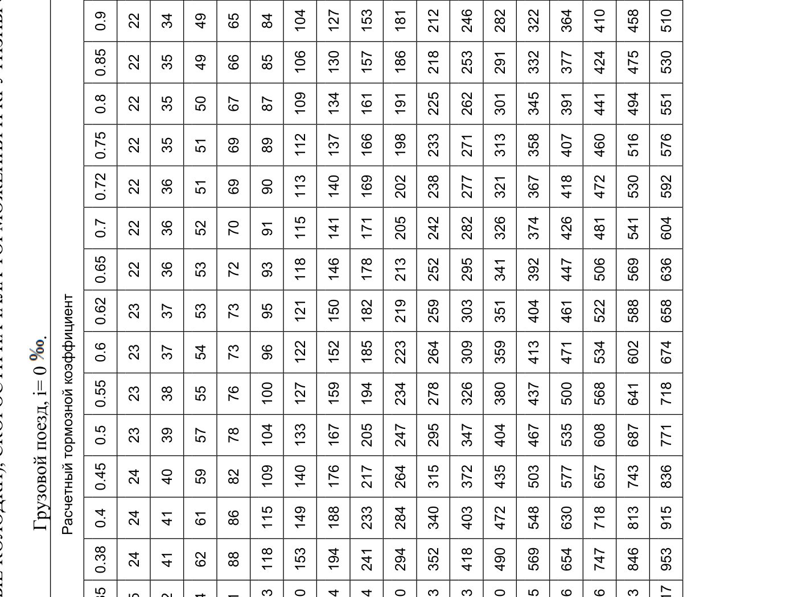
136
105 4000 2856 2242 1859 1692 1597 1477 1407 1316 1263 1149 1058 982 919 897 865 819 803 779 744 713 685 660 638
| 528 | 581 | 638 | 697 | 760 | 825 | 893 | 965 | 1040 | 1117 |
| 546 | 601 | 660 | 722 | 787 | 856 | 927 | 1002 | 1079 | 1161 |
| 565 | 624 | 685 | 750 | 818 | 889 | 964 | 1042 | 1124 | 1209 |
| 587 | 648 | 713 | 781 | 852 | 927 | 1006 | 1088 | 1173 | 1262 |
| 612 | 676 | 744 | 815 | 891 | 969 | 1052 | 1138 | 1229 | 1322 |
| 640 | 708 | 779 | 855 | 934 | 1017 | 1105 | 1196 | 1291 | 1390 |
| 659 | 729 | 803 | 881 | 963 | 1049 | 1140 | 1234 | 1333 | 1435 |
| 672 | 743 | 819 | 899 | 983 | 1072 | 1164 | 1261 | 1362 | 1468 |
| 708 | 785 | 865 | 951 | 1040 | 1135 | 1233 | 1336 | 1444 | 1556 |
| 733 | 813 | 897 | 985 | 1079 | 1177 | 1280 | 1387 | 1499 | 1616 |
| 751 | 833 | 919 | 1010 | 1106 | 1207 | 1313 | 1424 | 1539 | 1659 |
| 801 | 889 | 982 | 1081 | 1184 | 1293 | 1407 | 1526 | 1651 | 1780 |
| 861 | 957 | 1058 | 1164 | 1277 | 1395 | 1519 | 1648 | 1783 | 1924 |
| 934 | 1038 | 1149 | 1266 | 1389 | 1519 | 1654 | 1796 | 1945 | 2099 |
| 1024 | 1140 | 1263 | 1392 | 1529 | 1672 | 1822 | 1980 | 2144 | 2315 |
| 1067 | 1188 | 1316 | 1452 | 1594 | 1744 | 1901 | 2066 | 2237 | 2416 |
| 1139 | 1269 | 1407 | 1553 | 1706 | 1867 | 2036 | 2212 | 2397 | 2588 |
| 1195 | 1332 | 1477 | 1630 | 1791 | 1961 | 2138 | 2324 | 2518 | 2720 |
| 1291 | 1440 | 1597 | 1764 | 1939 | 2123 | 2316 | 2518 | 2728 | 2947 |
| 1366 | 1524 | 1692 | 1868 | 2054 | 2250 | 2454 | 2668 | 2891 | 3123 |
| 1500 | 1675 | 1859 | 2054 | 2259 | 2475 | 2700 | 2936 | 3181 | 3437 |
| 1807 | 2019 | 2242 | 2478 | 2726 | 2987 | 3259 | 3543 | 3839 | 4146 |
| 2301 | 2571 | 2856 | 3156 | 3472 | 3802 | 4147 | 4507 | 4880 | 5267 |
| 3227 | 3603 | 4000 | 4416 | 4852 | 5307 | 5781 | 6272 | 6781 | 7306 |
| 95 | 100 | 105 | 110 | 115 | 120 | 125 | 130 | 135 | 140 |
| Расчетный тормозной коэффициент | 1 | 22 | 34 | 49 | 65 | 83 | 103 | 125 | 149 | 176 | 206 |
| 0.95 | 22 | 35 | 49 | 66 | 84 | 104 | 127 | 153 | 181 | 211 | |
| 0.9 | 22 | 35 | 50 | 66 | 85 | 107 | 130 | 156 | 185 | 217 | |
| 0.85 | 22 | 35 | 50 | 68 | 87 | 109 | 133 | 160 | 190 | 223 | |
| 0.8 | 22 | 36 | 51 | 69 | 89 | 111 | 137 | 165 | 196 | 231 | |
| 0.75 | 22 | 36 | 52 | 70 | 91 | 114 | 141 | 170 | 203 | 239 | |
| 0.72 | 23 | 36 | 52 | 71 | 92 | 116 | 143 | 174 | 207 | 245 | |
| 0.7 | 23 | 37 | 53 | 72 | 93 | 118 | 145 | 176 | 211 | 249 | |
| 0.65 | 23 | 37 | 54 | 73 | 96 | 121 | 150 | 183 | 219 | 260 | |
| 0.62 | 23 | 38 | 55 | 75 | 98 | 124 | 154 | 188 | 225 | 267 | |
| 0.6 | 23 | 38 | 55 | 76 | 99 | 126 | 157 | 191 | 230 | 272 | |
| 0.55 | 23 | 39 | 57 | 78 | 103 | 131 | 164 | 201 | 242 | 288 | |
| 0.5 | 24 | 40 | 59 | 81 | 107 | 138 | 173 | 212 | 257 | 306 | |
| 0.45 | 24 | 41 | 61 | 85 | 113 | 146 | 183 | 226 | 274 | 328 | |
| 0.4 | 25 | 42 | 64 | 89 | 120 | 155 | 197 | 244 | 297 | 357 | |
| 0.38 | 25 | 43 | 65 | 91 | 123 | 160 | 203 | 252 | 308 | 370 | |
| 0.35 | 26 | 44 | 67 | 95 | 129 | 168 | 214 | 267 | 326 | 393 | |
| 0.33 | 26 | 45 | 69 | 98 | 133 | 174 | 222 | 278 | 340 | 411 | |
| 0.3 | 27 | 47 | 72 | 103 | 141 | 185 | 237 | 297 | 365 | 442 | |
| 0.28 | 27 | 48 | 74 | 107 | 147 | 194 | 249 | 312 | 385 | 466 | |
| 0.25 | 28 | 50 | 79 | 114 | 157 | 209 | 270 | 340 | 420 | 510 | |
| 0.2 | 31 | 56 | 89 | 131 | 183 | 246 | 320 | 405 | 504 | 615 | |
| 0.15 | 35 | 65 | 106 | 160 | 226 | 308 | 404 | 516 | 645 | 791 | |
| 0.1 | 43 | 84 | 142 | 219 | 316 | 435 | 578 | 746 | 939 | 1158 | |
| V, км/ч | 10 | 15 | 20 | 25 | 30 | 35 | 40 | 45 | 50 | 55 |
951 899 881 855 815 781 750 722 697
963 934 891 852 818 787 760
120 5307 3802 2987 2475 2250 2123 1961 1867 1744 1672 1519 1395 1293 1207 1177 1135 1072 1049 1017 969 927 889 856 825 125 5781 4147 3259 2700 2454 2316 2138 2036 1901 1822 1654 1519 1407 1313 1280 1233 1164 1140 1105 1052 1006 964 927 893 130 6272 4507 3543 2936 2668 2518 2324 2212 2066 1980 1796 1648 1526 1424 1387 1336 1261 1234 1196 1138 1088 1042 1002 965 135 6781 4880 3839 3181 2891 2728 2518 2397 2237 2144 1945 1783 1651 1539 1499 1444 1362 1333 1291 1229 1173 1124 1079 1040 140 7306 5267 4146 3437 3123 2947 2720 2588 2416 2315 2099 1924 1780 1659 1616 1556 1468 1435 1390 1322 1262 1209 1161 1117
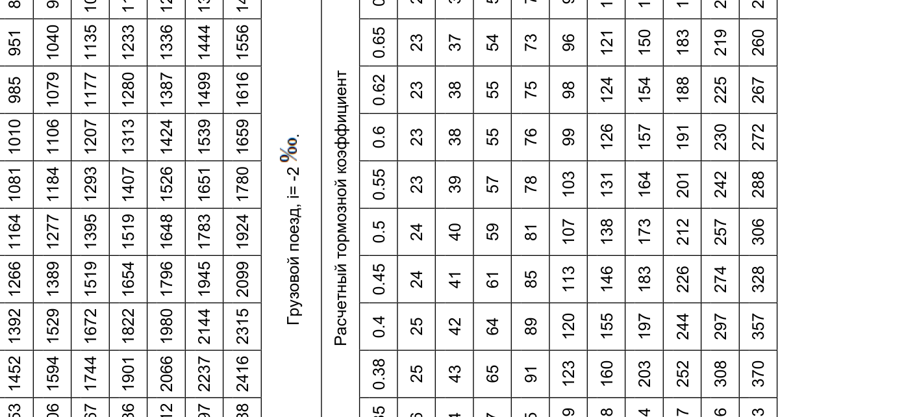
70 1976 1337 1027 845 767 724 670 639 598 575 525 486 454 427 418 404 385 378 368 354 341 329 319 310
| Расчетный тормозной коэффициент | 1 | 22 | 35 | 49 |
| 0.95 | 22 | 35 | 50 | |
| 0.9 | 22 | 36 | 51 | |
| 0.85 | 22 | 36 | 51 | |
| 0.8 | 23 | 36 | 52 | |
| 0.75 | 23 | 37 | 53 | |
| 0.72 | 23 | 37 | 54 | |
| 0.7 | 23 | 37 | 54 | |
| 0.65 | 23 | 38 | 55 | |
| 0.62 | 24 | 38 | 56 | |
| 0.6 | 24 | 39 | 57 | |
| 0.55 | 24 | 40 | 58 | |
| 0.5 | 25 | 41 | 60 | |
| 0.45 | 25 | 42 | 63 | |
| 0.4 | 26 | 44 | 66 | |
| 0.38 | 26 | 45 | 67 | |
| 0.35 | 27 | 46 | 70 | |
| 0.33 | 27 | 47 | 72 | |
| 0.3 | 28 | 49 | 75 | |
| 0.28 | 29 | 50 | 78 | |
| 0.25 | 30 | 53 | 83 | |
| 0.2 | 33 | 59 | 95 | |
| 0.15 | 37 | 71 | 116 | |
| 0.1 | 48 | 95 | 162 | |
| V, км/ч | 10 | 15 | 20 |
| 238 | 273 | 310 | 350 | 393 | 439 | 488 | 540 | 595 | 653 | 714 | 778 | 845 | 915 | 989 | 1065 | 1145 |
| 244 | 280 | 319 | 361 | 406 | 454 | 505 | 559 | 616 | 677 | 740 | 807 | 877 | 951 | 1027 | 1107 | 1191 |
| 251 | 289 | 329 | 373 | 420 | 470 | 523 | 580 | 640 | 703 | 770 | 840 | 913 | 990 | 1070 | 1154 | 1242 |
| 259 | 299 | 341 | 387 | 435 | 488 | 544 | 603 | 666 | 732 | 802 | 876 | 953 | 1034 | 1119 | 1207 | 1299 |
| 268 | 309 | 354 | 402 | 453 | 508 | 567 | 629 | 696 | 765 | 839 | 917 | 998 | 1084 | 1173 | 1266 | 1363 |
| 279 | 322 | 368 | 419 | 473 | 531 | 593 | 659 | 729 | 803 | 881 | 963 | 1049 | 1140 | 1234 | 1333 | 1435 |
| 285 | 330 | 378 | 430 | 486 | 547 | 611 | 679 | 751 | 828 | 909 | 994 | 1083 | 1177 | 1275 | 1377 | 1484 |
| 290 | 336 | 385 | 439 | 496 | 558 | 623 | 693 | 767 | 846 | 929 | 1016 | 1108 | 1204 | 1304 | 1409 | 1518 |
| 304 | 352 | 404 | 461 | 522 | 588 | 658 | 733 | 812 | 896 | 984 | 1077 | 1175 | 1278 | 1385 | 1497 | 1614 |
| 313 | 363 | 418 | 477 | 540 | 609 | 682 | 759 | 842 | 929 | 1022 | 1119 | 1221 | 1328 | 1440 | 1557 | 1678 |
| 319 | 371 | 427 | 488 | 553 | 623 | 699 | 779 | 864 | 954 | 1049 | 1149 | 1254 | 1364 | 1479 | 1600 | 1725 |
| 338 | 393 | 454 | 519 | 590 | 666 | 747 | 833 | 925 | 1022 | 1125 | 1233 | 1347 | 1466 | 1591 | 1721 | 1857 |
| 361 | 421 | 486 | 557 | 634 | 716 | 804 | 898 | 998 | 1104 | 1216 | 1334 | 1458 | 1588 | 1725 | 1867 | 2015 |
| 388 | 454 | 525 | 603 | 687 | 778 | 875 | 979 | 1089 | 1205 | 1329 | 1458 | 1595 | 1738 | 1888 | 2044 | 2208 |
| 423 | 495 | 575 | 661 | 755 | 856 | 964 | 1079 | 1201 | 1331 | 1469 | 1614 | 1766 | 1925 | 2092 | 2267 | 2448 |
| 439 | 515 | 598 | 689 | 787 | 892 | 1006 | 1126 | 1255 | 1391 | 1535 | 1687 | 1847 | 2014 | 2189 | 2372 | 2562 |
| 467 | 549 | 639 | 736 | 842 | 956 | 1078 | 1208 | 1347 | 1494 | 1649 | 1813 | 1986 | 2166 | 2355 | 2552 | 2758 |
| 489 | 575 | 670 | 773 | 884 | 1004 | 1133 | 1271 | 1418 | 1573 | 1737 | 1910 | 2092 | 2283 | 2483 | 2691 | 2908 |
| 527 | 621 | 724 | 837 | 958 | 1090 | 1231 | 1381 | 1541 | 1711 | 1891 | 2080 | 2279 | 2488 | 2706 | 2933 | 3170 |
| 557 | 657 | 767 | 887 | 1017 | 1157 | 1307 | 1468 | 1639 | 1820 | 2012 | 2214 | 2426 | 2648 | 2881 | 3123 | 3376 |
| 611 | 722 | 845 | 978 | 1123 | 1279 | 1446 | 1625 | 1815 | 2017 | 2230 | 2455 | 2691 | 2938 | 3196 | 3465 | 3746 |
| 739 | 876 | 1027 | 1192 | 1371 | 1564 | 1771 | 1993 | 2228 | 2478 | 2741 | 3018 | 3310 | 3614 | 3932 | 4263 | 4607 |
| 955 | 1137 | 1337 | 1555 | 1792 | 2047 | 2321 | 2614 | 2924 | 3253 | 3600 | 3964 | 4345 | 4744 | 5159 | 5591 | 6038 |
| 1404 | 1676 | 1976 | 2304 | 2658 | 3040 | 3449 | 3884 | 4345 | 4831 | 5342 | 5877 | 6435 | 7016 | 7618 | 8242 | 8885 |
| 60 | 65 | 70 | 75 | 80 | 85 | 90 | 95 | 100 | 105 | 110 | 115 | 120 | 125 | 130 | 135 | 140 |
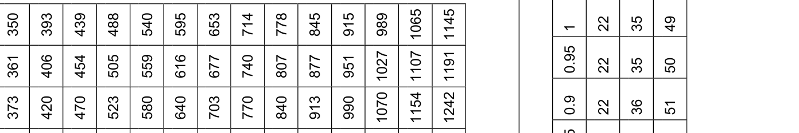
733 693 679 659 629 603 580 559 540
812 767 751 729 696 666 640 616 595
896 846 828 803 765 732 703 677 653
929 909 881 839 802 770 740 714
963 917 876 840 807 778
953 913 877 845
125 7016 4744 3614 2938 2648 2488 2283 2166 2014 1925 1738 1588 1466 1364 1328 1278 1204 1177 1140 1084 1034 990 951 915 130 7618 5159 3932 3196 2881 2706 2483 2355 2189 2092 1888 1725 1591 1479 1440 1385 1304 1275 1234 1173 1119 1070 1027 989 135 8242 5591 4263 3465 3123 2933 2691 2552 2372 2267 2044 1867 1721 1600 1557 1497 1409 1377 1333 1266 1207 1154 1107 1065 140 8885 6038 4607 3746 3376 3170 2908 2758 2562 2448 2208 2015 1857 1725 1678 1614 1518 1484 1435 1363 1299 1242 1191 1145
Грузовой поезд, i= -4
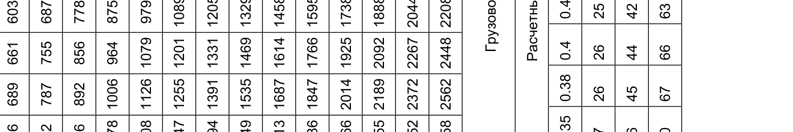
138
35 508 340 265 223 205 195 183 176 167 162 151 142 135 130 128 125 121 119 117 114 111 109 107 105
| 66 | 84 | 105 | 127 | 152 | 180 | 210 | 243 | 278 | 317 | 358 | 402 | 449 | 499 | 553 | 609 | 668 | 731 | 797 | 866 | 938 | 1013 | 1092 | 1174 |
| 67 | 86 | 107 | 130 | 156 | 184 | 216 | 250 | 287 | 326 | 369 | 415 | 465 | 517 | 572 | 631 | 693 | 759 | 828 | 900 | 975 | 1054 | 1136 | 1222 |
| 68 | 87 | 109 | 133 | 160 | 189 | 222 | 257 | 296 | 337 | 382 | 430 | 482 | 536 | 595 | 656 | 721 | 790 | 862 | 938 | 1017 | 1100 | 1186 | 1276 |
| 69 | 89 | 111 | 136 | 164 | 195 | 229 | 266 | 306 | 349 | 396 | 447 | 501 | 558 | 619 | 684 | 752 | 825 | 900 | 980 | 1063 | 1151 | 1242 | 1336 |
| 70 | 91 | 114 | 140 | 169 | 201 | 237 | 275 | 317 | 363 | 413 | 466 | 522 | 583 | 647 | 715 | 788 | 864 | 944 | 1028 | 1116 | 1208 | 1304 | 1405 |
| 72 | 93 | 117 | 144 | 175 | 208 | 245 | 286 | 331 | 379 | 431 | 487 | 547 | 611 | 679 | 751 | 828 | 908 | 993 | 1083 | 1176 | 1274 | 1376 | 1482 |
| 73 | 94 | 119 | 147 | 178 | 213 | 251 | 293 | 339 | 389 | 443 | 501 | 563 | 630 | 700 | 775 | 855 | 938 | 1026 | 1119 | 1216 | 1318 | 1423 | 1534 |
| 73 | 95 | 121 | 149 | 181 | 216 | 256 | 299 | 346 | 397 | 452 | 511 | 575 | 643 | 715 | 792 | 874 | 960 | 1050 | 1145 | 1245 | 1349 | 1458 | 1571 |
| 75 | 98 | 125 | 155 | 188 | 226 | 267 | 313 | 363 | 417 | 476 | 540 | 608 | 680 | 758 | 840 | 927 | 1019 | 1116 | 1218 | 1324 | 1436 | 1552 | 1674 |
| 77 | 100 | 128 | 159 | 193 | 232 | 275 | 323 | 375 | 432 | 493 | 559 | 630 | 706 | 787 | 872 | 963 | 1059 | 1161 | 1267 | 1378 | 1495 | 1617 | 1744 |
| 78 | 102 | 130 | 161 | 197 | 237 | 281 | 330 | 384 | 442 | 505 | 573 | 646 | 724 | 807 | 896 | 990 | 1089 | 1193 | 1303 | 1418 | 1538 | 1664 | 1795 |
| 80 | 106 | 135 | 169 | 207 | 250 | 298 | 350 | 408 | 471 | 539 | 612 | 692 | 776 | 866 | 962 | 1064 | 1172 | 1285 | 1404 | 1529 | 1659 | 1796 | 1938 |
| 84 | 111 | 142 | 179 | 220 | 266 | 318 | 375 | 437 | 506 | 580 | 660 | 747 | 839 | 938 | 1043 | 1154 | 1272 | 1396 | 1526 | 1663 | 1806 | 1956 | 2111 |
| 88 | 117 | 151 | 190 | 235 | 286 | 342 | 405 | 474 | 549 | 631 | 719 | 815 | 917 | 1026 | 1142 | 1265 | 1395 | 1533 | 1677 | 1828 | 1987 | 2152 | 2325 |
| 93 | 125 | 162 | 205 | 255 | 311 | 373 | 443 | 520 | 604 | 695 | 794 | 901 | 1015 | 1137 | 1268 | 1406 | 1552 | 1706 | 1868 | 2038 | 2215 | 2401 | 2595 |
| 95 | 128 | 167 | 212 | 264 | 323 | 388 | 461 | 542 | 630 | 726 | 830 | 942 | 1062 | 1191 | 1328 | 1473 | 1626 | 1788 | 1959 | 2138 | 2325 | 2520 | 2724 |
| 99 | 135 | 176 | 225 | 280 | 343 | 414 | 493 | 580 | 675 | 779 | 892 | 1013 | 1144 | 1283 | 1432 | 1589 | 1756 | 1932 | 2116 | 2310 | 2513 | 2725 | 2946 |
| 103 | 139 | 183 | 234 | 292 | 359 | 434 | 517 | 609 | 710 | 820 | 940 | 1068 | 1207 | 1355 | 1512 | 1679 | 1856 | 2042 | 2238 | 2444 | 2659 | 2884 | 3118 |
| 108 | 148 | 195 | 251 | 314 | 387 | 469 | 560 | 661 | 772 | 893 | 1024 | 1166 | 1318 | 1481 | 1654 | 1839 | 2033 | 2239 | 2454 | 2681 | 2918 | 3165 | 3423 |
| 113 | 155 | 205 | 264 | 332 | 409 | 497 | 594 | 703 | 821 | 951 | 1092 | 1244 | 1407 | 1582 | 1768 | 1965 | 2174 | 2395 | 2626 | 2869 | 3123 | 3388 | 3664 |
| 121 | 167 | 223 | 288 | 364 | 450 | 548 | 657 | 778 | 912 | 1057 | 1215 | 1386 | 1570 | 1766 | 1975 | 2198 | 2432 | 2680 | 2940 | 3213 | 3499 | 3796 | 4106 |
| 141 | 197 | 265 | 346 | 441 | 549 | 671 | 809 | 962 | 1130 | 1314 | 1514 | 1731 | 1963 | 2212 | 2478 | 2759 | 3056 | 3370 | 3699 | 4043 | 4403 | 4778 | 5168 |
| 175 | 250 | 340 | 449 | 576 | 723 | 891 | 1079 | 1288 | 1520 | 1773 | 2049 | 2347 | 2667 | 3009 | 3374 | 3761 | 4169 | 4598 | 5048 | 5518 | 6008 | 6518 | 7046 |
| 251 | 366 | 508 | 680 | 883 | 1119 | 1390 | 1695 | 2036 | 2413 | 2827 | 3276 | 3762 | 4284 | 4841 | 5432 | 6057 | 6714 | 7402 | 8120 | 8867 | 9641 | ---- | ---- |
| 25 | 30 | 35 | 40 | 45 | 50 | 55 | 60 | 65 | 70 | 75 | 80 | 85 | 90 | 95 | 100 | 105 | 110 | 115 | 120 | 125 | 130 | 135 | 140 |
149 147 144 140 136 133 130 127 181 178 175 169 164 160 156 152 216 213 208 201 195 189 184 180 256 251 245 237 229 222 216 210 299 293 286 275 266 257 250 243 346 339 331 317 306 296 287 278 397 389 379 363 349 337 326 317 452 443 431 413 396 382 369 358 511 501 487 466 447 430 415 402 575 563 547 522 501 482 465 449 643 630 611 583 558 536 517 499 715 700 679 647 619 595 572 553 792 775 751 715 684 656 631 609 874 855 828 788 752 721 693 668
938 908 864 825 790 759 731
944 900 862 828 797
938 900 866
938
Грузовой поезд, i= -6
Расчетный тормозной коэффициент
V,
км/ч 0.1 0.15 0.2 0.25 0.28 0.3 0.33 0.35 0.38 0.4 0.45 0.5 0.55 0.6 0.62 0.65 0.7 0.72 0.75 0.8 0.85 0.9 0.95 1
| Расчетный тормозной коэффициент | 1 | 22 | 35 | 50 | 67 | 86 | 106 | 130 | 155 | 184 | 214 | 248 | 284 | 324 | 366 | 411 | 459 | 511 | 565 | 623 | 684 | 748 |
| 0.95 | 22 | 36 | 51 | 68 | 87 | 109 | 133 | 159 | 188 | 220 | 255 | 293 | 334 | 378 | 425 | 476 | 529 | 586 | 647 | 711 | 778 | |
| 0.9 | 23 | 36 | 52 | 69 | 89 | 111 | 136 | 163 | 193 | 227 | 263 | 303 | 345 | 391 | 441 | 494 | 550 | 610 | 673 | 740 | 811 | |
| 0.85 | 23 | 37 | 52 | 70 | 91 | 114 | 139 | 168 | 199 | 234 | 272 | 313 | 358 | 406 | 458 | 514 | 573 | 636 | 703 | 773 | 847 | |
| 0.8 | 23 | 37 | 53 | 72 | 93 | 116 | 143 | 173 | 206 | 242 | 282 | 326 | 373 | 424 | 478 | 537 | 599 | 666 | 736 | 811 | 889 | |
| 0.75 | 23 | 38 | 54 | 73 | 95 | 120 | 148 | 179 | 214 | 252 | 294 | 340 | 389 | 443 | 501 | 563 | 629 | 700 | 774 | 853 | 937 | |
| 0.72 | 23 | 38 | 55 | 74 | 97 | 122 | 151 | 183 | 219 | 258 | 302 | 349 | 401 | 456 | 516 | 580 | 649 | 722 | 800 | 882 | 969 | |
| 0.7 | 23 | 38 | 55 | 75 | 98 | 124 | 153 | 186 | 222 | 263 | 307 | 356 | 409 | 466 | 527 | 593 | 663 | 739 | 818 | 903 | 992 | |
| 0.65 | 24 | 39 | 57 | 77 | 101 | 128 | 159 | 194 | 233 | 275 | 323 | 374 | 431 | 492 | 557 | 628 | 704 | 784 | 869 | 960 | 1056 | |
| 0.62 | 24 | 39 | 57 | 79 | 103 | 131 | 163 | 199 | 239 | 284 | 333 | 387 | 446 | 510 | 578 | 652 | 731 | 815 | 904 | 999 | 1099 | |
| 0.6 | 24 | 40 | 58 | 80 | 105 | 133 | 166 | 203 | 244 | 290 | 341 | 397 | 457 | 523 | 593 | 669 | 751 | 838 | 930 | 1028 | 1131 | |
| 0.55 | 25 | 41 | 60 | 83 | 109 | 140 | 175 | 214 | 259 | 308 | 363 | 423 | 488 | 559 | 636 | 719 | 807 | 902 | 1002 | 1108 | 1221 | |
| 0.5 | 25 | 42 | 62 | 86 | 114 | 147 | 185 | 228 | 276 | 330 | 389 | 455 | 526 | 604 | 688 | 779 | 876 | 980 | 1090 | 1207 | 1331 | |
| 0.45 | 26 | 43 | 65 | 91 | 121 | 157 | 198 | 245 | 298 | 357 | 422 | 495 | 574 | 660 | 753 | 854 | 962 | 1077 | 1199 | 1330 | 1467 | |
| 0.4 | 27 | 45 | 68 | 96 | 130 | 169 | 214 | 266 | 325 | 391 | 464 | 545 | 634 | 731 | 836 | 949 | 1071 | 1201 | 1339 | 1486 | 1642 | |
| 0.38 | 27 | 46 | 70 | 99 | 134 | 174 | 222 | 276 | 338 | 407 | 485 | 570 | 663 | 765 | 876 | 995 | 1124 | 1261 | 1407 | 1562 | 1726 | |
| 0.35 | 28 | 48 | 73 | 104 | 141 | 184 | 236 | 294 | 361 | 436 | 520 | 612 | 714 | 825 | 946 | 1076 | 1216 | 1365 | 1525 | 1694 | 1873 | |
| 0.33 | 28 | 49 | 75 | 107 | 146 | 192 | 246 | 308 | 379 | 458 | 547 | 646 | 754 | 872 | 1000 | 1139 | 1288 | 1447 | 1617 | 1797 | 1988 | |
| 0.3 | 29 | 51 | 79 | 114 | 156 | 206 | 265 | 333 | 411 | 498 | 596 | 705 | 825 | 955 | 1097 | 1251 | 1416 | 1593 | 1782 | 1982 | 2194 | |
| 0.28 | 30 | 53 | 82 | 119 | 163 | 217 | 280 | 353 | 436 | 530 | 636 | 753 | 882 | 1023 | 1176 | 1342 | 1520 | 1711 | 1915 | 2131 | 2360 | |
| 0.25 | 31 | 56 | 88 | 128 | 178 | 237 | 308 | 390 | 483 | 590 | 709 | 841 | 987 | 1147 | 1321 | 1510 | 1713 | 1930 | 2162 | 2408 | 2669 | |
| 0.2 | 35 | 63 | 102 | 151 | 212 | 287 | 376 | 480 | 600 | 736 | 890 | 1061 | 1251 | 1459 | 1685 | 1931 | 2195 | 2479 | 2782 | 3103 | 3444 | |
| 0.15 | 40 | 77 | 127 | 193 | 276 | 379 | 503 | 649 | 818 | 1013 | 1233 | 1479 | 1752 | 2053 | 2381 | 2738 | 3122 | 3534 | 3974 | 4442 | 4936 | |
| 0.1 | 53 | 107 | 185 | 291 | 430 | 604 | 818 | 1075 | 1377 | 1727 | 2128 | 2580 | 3084 | 3643 | 4255 | 4920 | 5638 | 6408 | 7229 | 8098 | 9014 | |
| V, км/ч | 10 | 15 | 20 | 25 | 30 | 35 | 40 | 45 | 50 | 55 | 60 | 65 | 70 | 75 | 80 | 85 | 90 | 95 | 100 | 105 | 110 |
23 23 23 23 23 23 22 22
38 38 38 37 37 36 36 35
55 55 54 53 52 52 51 50
75 74 73 72 70 69 68 67
98 97 95 93 91 89 87 86
124 122 120 116 114 111 109 106
153 151 148 143 139 136 133 130
186 183 179 173 168 163 159 155
222 219 214 206 199 193 188 184
263 258 252 242 234 227 220 214
307 302 294 282 272 263 255 248
356 349 340 326 313 303 293 284
409 401 389 373 358 345 334 324
466 456 443 424 406 391 378 366
527 516 501 478 458 441 425 411
593 580 563 537 514 494 476 459
663 649 629 599 573 550 529 511
739 722 700 666 636 610 586 565
818 800 774 736 703 673 647 623
903 882 853 811 773 740 711 684
969 937 889 847 811 778 748
140
125 ----- 6575 4577 3538 3124 2901 2625 2471 2274 2161 1926 1743 1595 1474 1432 1373 1288 1257 1214 1150 1094 1044 1000 961
| 816 | 887 | 961 | 1038 | 1119 | 1203 |
| 848 | 923 | 1000 | 1081 | 1166 | 1254 |
| 885 | 963 | 1044 | 1130 | 1219 | 1311 |
| 926 | 1008 | 1094 | 1184 | 1278 | 1376 |
| 972 | 1059 | 1150 | 1245 | 1345 | 1448 |
| 1025 | 1117 | 1214 | 1315 | 1421 | 1531 |
| 1060 | 1156 | 1257 | 1362 | 1472 | 1587 |
| 1086 | 1184 | 1288 | 1396 | 1509 | 1626 |
| 1156 | 1262 | 1373 | 1490 | 1611 | 1738 |
| 1205 | 1316 | 1432 | 1554 | 1681 | 1813 |
| 1240 | 1354 | 1474 | 1600 | 1731 | 1868 |
| 1340 | 1464 | 1595 | 1732 | 1876 | 2025 |
| 1461 | 1599 | 1743 | 1894 | 2051 | 2216 |
| 1613 | 1766 | 1926 | 2094 | 2270 | 2453 |
| 1806 | 1979 | 2161 | 2351 | 2549 | 2756 |
| 1900 | 2082 | 2274 | 2474 | 2684 | 2902 |
| 2063 | 2262 | 2471 | 2690 | 2919 | 3157 |
| 2190 | 2402 | 2625 | 2859 | 3102 | 3356 |
| 2418 | 2654 | 2901 | 3160 | 3431 | 3713 |
| 2602 | 2857 | 3124 | 3404 | 3696 | 4000 |
| 2944 | 3234 | 3538 | 3856 | 4188 | 4534 |
| 3803 | 4181 | 4577 | 4991 | 5423 | 5871 |
| 5457 | 6003 | 6575 | 7171 | 7791 | 8434 |
| 9975 | ----- | ----- | ----- | ----- | ----- |
| 115 | 120 | 125 | 130 | 135 | 140 |
| Расчетный тормозной коэффициент | 1 | 23 | 36 | 51 | 68 | 87 | 108 | 132 | 158 | 187 | 219 | 253 | 290 | 331 | 374 |
| 0.95 | 23 | 36 | 52 | 69 | 89 | 111 | 135 | 162 | 192 | 225 | 261 | 299 | 341 | 387 | |
| 0.9 | 23 | 37 | 52 | 70 | 90 | 113 | 138 | 167 | 198 | 232 | 269 | 310 | 354 | 401 | |
| 0.85 | 23 | 37 | 53 | 72 | 92 | 116 | 142 | 172 | 204 | 240 | 279 | 321 | 367 | 417 | |
| 0.8 | 23 | 38 | 54 | 73 | 95 | 119 | 146 | 177 | 211 | 248 | 289 | 334 | 383 | 435 | |
| 0.75 | 24 | 38 | 55 | 75 | 97 | 123 | 151 | 183 | 219 | 259 | 302 | 349 | 400 | 456 | |
| 0.72 | 24 | 39 | 56 | 76 | 99 | 125 | 155 | 188 | 225 | 265 | 310 | 359 | 412 | 470 | |
| 0.7 | 24 | 39 | 56 | 77 | 100 | 127 | 157 | 191 | 228 | 270 | 316 | 366 | 421 | 480 | |
| 0.65 | 24 | 40 | 58 | 79 | 104 | 132 | 163 | 199 | 239 | 284 | 333 | 386 | 445 | 508 | |
| 0.62 | 25 | 40 | 59 | 81 | 106 | 135 | 168 | 205 | 247 | 293 | 344 | 400 | 461 | 527 | |
| 0.6 | 25 | 41 | 60 | 82 | 108 | 137 | 171 | 209 | 252 | 300 | 352 | 410 | 473 | 541 | |
| 0.55 | 25 | 42 | 62 | 85 | 112 | 144 | 180 | 221 | 268 | 319 | 376 | 438 | 507 | 581 | |
| 0.5 | 26 | 43 | 64 | 89 | 118 | 152 | 192 | 236 | 286 | 343 | 405 | 473 | 548 | 630 | |
| 0.45 | 27 | 45 | 67 | 94 | 125 | 163 | 205 | 254 | 310 | 372 | 441 | 517 | 600 | 691 | |
| 0.4 | 27 | 47 | 71 | 100 | 135 | 176 | 223 | 278 | 340 | 410 | 487 | 573 | 667 | 770 | |
| 0.38 | 28 | 48 | 73 | 103 | 139 | 182 | 232 | 289 | 355 | 428 | 510 | 600 | 700 | 808 | |
| 0.35 | 29 | 50 | 76 | 108 | 147 | 193 | 247 | 309 | 380 | 460 | 549 | 648 | 757 | 876 | |
| 0.33 | 29 | 51 | 78 | 112 | 153 | 202 | 259 | 325 | 400 | 485 | 580 | 686 | 802 | 929 | |
| 0.3 | 30 | 53 | 83 | 119 | 164 | 217 | 280 | 353 | 436 | 530 | 636 | 753 | 883 | 1025 | |
| 0.28 | 31 | 55 | 86 | 125 | 173 | 230 | 297 | 376 | 465 | 567 | 681 | 809 | 949 | 1103 | |
| 0.25 | 33 | 59 | 93 | 136 | 189 | 253 | 329 | 418 | 520 | 636 | 767 | 913 | 1074 | 1251 | |
| 0.2 | 37 | 67 | 109 | 162 | 229 | 311 | 410 | 525 | 659 | 813 | 986 | 1181 | 1397 | 1635 | |
| 0.15 | 43 | 83 | 139 | 212 | 307 | 425 | 568 | 738 | 938 | 1169 | 1433 | 1731 | 2064 | 2432 | |
| 0.1 | 59 | 122 | 215 | 344 | 518 | 742 | 1024 | 1371 | 1790 | 2287 | 2867 | 3537 | 4299 | 5158 | |
| V, км/ч | 10 | 15 | 20 | 25 | 30 | 35 | 40 | 45 | 50 | 55 | 60 | 65 | 70 | 75 |
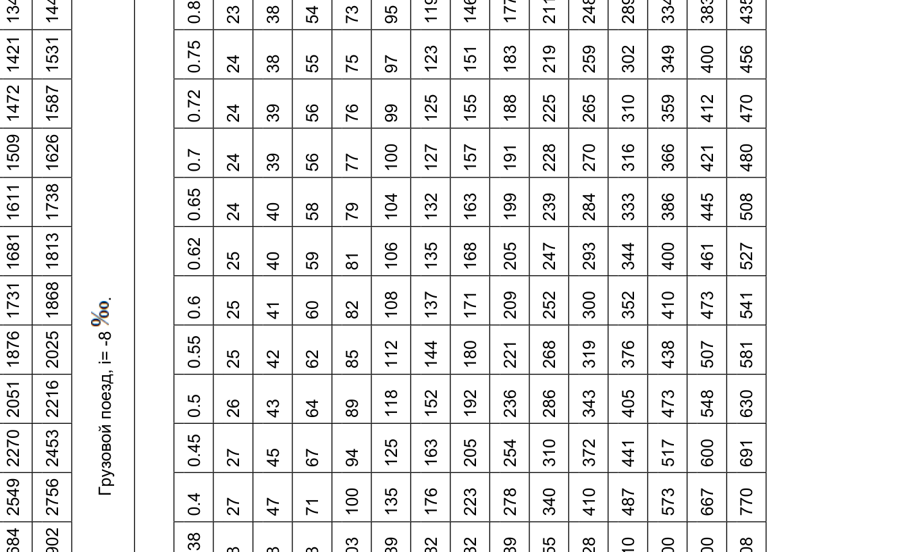
480 470 456 435 417 401 387 374
90 8323 3759 2484 1880 1649 1527 1378 1295 1191 1131 1009 915 840 779 757 728 685 669 648 616 588 564 542 523
| 420 | 470 | 523 | 579 | 638 | 700 | 766 | 836 | 908 | 985 | 1064 | 1147 | 1234 |
| 435 | 487 | 542 | 601 | 663 | 728 | 797 | 870 | 946 | 1026 | 1110 | 1197 | 1288 |
| 452 | 506 | 564 | 625 | 690 | 759 | 832 | 909 | 989 | 1073 | 1161 | 1253 | 1348 |
| 470 | 527 | 588 | 653 | 722 | 795 | 871 | 952 | 1037 | 1125 | 1218 | 1315 | 1416 |
| 491 | 552 | 616 | 685 | 757 | 834 | 916 | 1001 | 1091 | 1185 | 1284 | 1387 | 1494 |
| 515 | 580 | 648 | 721 | 798 | 880 | 966 | 1057 | 1153 | 1253 | 1358 | 1468 | 1582 |
| 532 | 598 | 669 | 745 | 826 | 911 | 1001 | 1095 | 1195 | 1299 | 1409 | 1523 | 1642 |
| 543 | 612 | 685 | 763 | 845 | 933 | 1025 | 1123 | 1225 | 1332 | 1445 | 1562 | 1685 |
| 576 | 649 | 728 | 811 | 900 | 994 | 1094 | 1199 | 1309 | 1425 | 1546 | 1673 | 1805 |
| 598 | 675 | 757 | 845 | 938 | 1037 | 1141 | 1251 | 1367 | 1488 | 1616 | 1748 | 1887 |
| 615 | 694 | 779 | 869 | 965 | 1068 | 1175 | 1289 | 1409 | 1535 | 1666 | 1804 | 1947 |
| 661 | 747 | 840 | 939 | 1044 | 1156 | 1274 | 1398 | 1529 | 1667 | 1811 | 1961 | 2118 |
| 718 | 813 | 915 | 1024 | 1140 | 1264 | 1394 | 1532 | 1677 | 1829 | 1988 | 2155 | 2328 |
| 789 | 895 | 1009 | 1131 | 1261 | 1399 | 1545 | 1700 | 1862 | 2032 | 2211 | 2398 | 2593 |
| 881 | 1002 | 1131 | 1270 | 1418 | 1575 | 1741 | 1917 | 2102 | 2296 | 2500 | 2713 | 2935 |
| 926 | 1054 | 1191 | 1338 | 1494 | 1661 | 1837 | 2023 | 2219 | 2425 | 2641 | 2867 | 3102 |
| 1005 | 1145 | 1295 | 1456 | 1628 | 1811 | 2005 | 2210 | 2425 | 2652 | 2889 | 3138 | 3397 |
| 1067 | 1217 | 1378 | 1550 | 1734 | 1930 | 2138 | 2357 | 2588 | 2831 | 3086 | 3352 | 3629 |
| 1179 | 1347 | 1527 | 1720 | 1926 | 2146 | 2379 | 2625 | 2884 | 3157 | 3442 | 3740 | 4051 |
| 1271 | 1453 | 1649 | 1859 | 2084 | 2323 | 2576 | 2844 | 3127 | 3423 | 3734 | 4059 | 4397 |
| 1444 | 1654 | 1880 | 2122 | 2382 | 2658 | 2951 | 3261 | 3587 | 3930 | 4289 | 4664 | 5055 |
| 1895 | 2178 | 2484 | 2812 | 3164 | 3539 | 3937 | 4357 | 4800 | 5264 | 5751 | 6258 | 6786 |
| 2838 | 3280 | 3759 | 4276 | 4829 | 5419 | 6045 | 6705 | 7400 | 8128 | 8888 | 9679 | ----- |
| 6114 | 7170 | 8323 | 9572 | ----- | ----- | ----- | ----- | ----- | ----- | ----- | ----- | ----- |
| 80 | 85 | 90 | 95 | 100 | 105 | 110 | 115 | 120 | 125 | 130 | 135 | 140 |
| Расчетный тормозной коэффициент | 1 | 23 | 36 | 52 | 69 | 89 | 110 | 135 |
| 0.95 | 23 | 37 | 53 | 70 | 90 | 113 | 138 | |
| 0.9 | 23 | 37 | 53 | 72 | 92 | 115 | 141 | |
| 0.85 | 23 | 38 | 54 | 73 | 94 | 118 | 145 | |
| 0.8 | 24 | 38 | 55 | 75 | 97 | 122 | 150 | |
| 0.75 | 24 | 39 | 56 | 76 | 99 | 125 | 155 | |
| 0.72 | 24 | 39 | 57 | 78 | 101 | 128 | 158 | |
| 0.7 | 24 | 40 | 58 | 79 | 103 | 130 | 161 | |
| 0.65 | 25 | 41 | 59 | 81 | 106 | 135 | 168 | |
| 0.62 | 25 | 41 | 60 | 83 | 109 | 139 | 173 | |
| 0.6 | 25 | 42 | 61 | 84 | 110 | 141 | 176 | |
| 0.55 | 26 | 43 | 63 | 87 | 116 | 148 | 186 | |
| 0.5 | 26 | 44 | 66 | 92 | 122 | 157 | 198 | |
| 0.45 | 27 | 46 | 69 | 97 | 130 | 169 | 213 | |
| 0.4 | 28 | 48 | 73 | 104 | 140 | 183 | 233 | |
| 0.38 | 29 | 49 | 75 | 107 | 145 | 190 | 243 | |
| 0.35 | 30 | 51 | 79 | 113 | 154 | 202 | 259 | |
| 0.33 | 30 | 53 | 82 | 117 | 160 | 212 | 273 | |
| 0.3 | 32 | 56 | 86 | 125 | 172 | 229 | 296 | |
| 0.28 | 33 | 58 | 90 | 132 | 182 | 243 | 316 | |
| 0.25 | 34 | 62 | 98 | 144 | 201 | 270 | 353 | |
| 0.2 | 39 | 72 | 116 | 175 | 248 | 339 | 449 | |
| 0.15 | 47 | 90 | 152 | 236 | 344 | 481 | 650 | |
| 0.1 | 67 | 141 | 255 | 421 | 653 | 967 | 1383 | |
| V, км/ч | 10 | 15 | 20 | 25 | 30 | 35 | 40 |
763 745 721 685 653 625 601 579
4829 3164 2382 2084 1926 1734 1628 1494 1418 1261 1140 1044 965 845 826 798 757 722 690 663 638 5419 3539 2658 2323 2146 1930 1811 1661 1575 1399 1264 1156 1068 1037 994 933 911 880 834 795 759 728 700 6045 3937 2951 2576 2379 2138 2005 1837 1741 1545 1394 1274 1175 1141 1094 1025 1001 966 916 871 832 797 766 6705 4357 3261 2844 2625 2357 2210 2023 1917 1700 1532 1398 1289 1251 1199 1123 1095 1057 1001 952 909 870 836 7400 4800 3587 3127 2884 2588 2425 2219 2102 1862 1677 1529 1409 1367 1309 1225 1195 1153 1091 1037 989 946 908 8128 5264 3930 3423 3157 2831 2652 2425 2296 2032 1829 1667 1535 1488 1425 1332 1299 1253 1185 1125 1073 1026 985 8888 5751 4289 3734 3442 3086 2889 2641 2500 2211 1988 1811 1666 1616 1546 1445 1409 1358 1284 1218 1161 1110 1064 9679 6258 4664 4059 3740 3352 3138 2867 2713 2398 2155 1961 1804 1748 1673 1562 1523 1468 1387 1315 1253 1197 1147
6786 5055 4397 4051 3629 3397 3102 2935 2593 2328 2118 1947 1887 1805 1685 1642 1582 1494 1416 1348 1288 1234
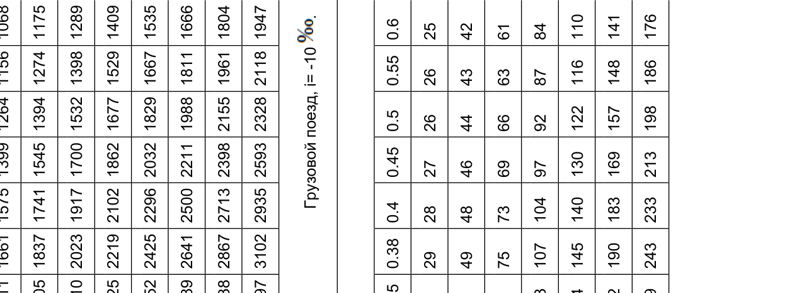
142
55 3470 1382 905 689 608 566 514 486 450 429 388 356 330 309 302 292 278 273 265 255 245 237 230 223
| 161 | 191 | 223 | 258 | 296 | 338 | 382 | 430 | 480 | 534 | 592 | 653 | 717 | 785 | 856 | 931 | 1009 | 1091 | 1176 | 1265 |
| 166 | 196 | 230 | 266 | 306 | 349 | 395 | 445 | 498 | 555 | 615 | 679 | 746 | 818 | 892 | 971 | 1053 | 1139 | 1229 | 1322 |
| 170 | 202 | 237 | 275 | 317 | 362 | 410 | 463 | 518 | 578 | 641 | 708 | 779 | 854 | 933 | 1016 | 1102 | 1193 | 1288 | 1386 |
| 175 | 209 | 245 | 285 | 329 | 376 | 427 | 482 | 541 | 604 | 671 | 742 | 817 | 896 | 979 | 1066 | 1158 | 1254 | 1354 | 1459 |
| 181 | 216 | 255 | 297 | 343 | 393 | 447 | 505 | 567 | 633 | 704 | 779 | 859 | 943 | 1031 | 1124 | 1222 | 1324 | 1430 | 1541 |
| 188 | 225 | 265 | 310 | 359 | 412 | 469 | 530 | 597 | 667 | 743 | 823 | 908 | 997 | 1092 | 1191 | 1295 | 1404 | 1518 | 1636 |
| 193 | 231 | 273 | 319 | 369 | 424 | 484 | 548 | 617 | 690 | 769 | 852 | 941 | 1034 | 1132 | 1236 | 1344 | 1458 | 1576 | 1700 |
| 196 | 235 | 278 | 325 | 377 | 433 | 494 | 560 | 631 | 707 | 787 | 873 | 964 | 1060 | 1161 | 1268 | 1380 | 1497 | 1619 | 1747 |
| 205 | 246 | 292 | 343 | 398 | 459 | 524 | 595 | 671 | 753 | 840 | 932 | 1031 | 1134 | 1244 | 1359 | 1479 | 1606 | 1738 | 1876 |
| 211 | 254 | 302 | 355 | 413 | 476 | 545 | 619 | 699 | 785 | 876 | 973 | 1076 | 1185 | 1300 | 1421 | 1548 | 1681 | 1820 | 1966 |
| 216 | 260 | 309 | 364 | 424 | 489 | 560 | 637 | 719 | 808 | 902 | 1003 | 1110 | 1223 | 1342 | 1467 | 1598 | 1736 | 1880 | 2031 |
| 229 | 277 | 330 | 389 | 455 | 526 | 603 | 687 | 778 | 875 | 978 | 1088 | 1206 | 1330 | 1460 | 1598 | 1743 | 1894 | 2053 | 2219 |
| 245 | 297 | 356 | 421 | 492 | 571 | 657 | 749 | 849 | 957 | 1072 | 1194 | 1324 | 1462 | 1607 | 1761 | 1922 | 2090 | 2267 | 2451 |
| 265 | 323 | 388 | 460 | 540 | 628 | 724 | 828 | 940 | 1061 | 1190 | 1328 | 1475 | 1630 | 1794 | 1967 | 2149 | 2340 | 2539 | 2747 |
| 290 | 356 | 429 | 511 | 602 | 702 | 812 | 931 | 1059 | 1197 | 1346 | 1504 | 1672 | 1851 | 2040 | 2239 | 2448 | 2667 | 2897 | 3136 |
| 303 | 372 | 450 | 537 | 633 | 739 | 855 | 981 | 1118 | 1265 | 1422 | 1591 | 1770 | 1960 | 2161 | 2373 | 2596 | 2829 | 3074 | 3329 |
| 325 | 401 | 486 | 581 | 687 | 803 | 931 | 1070 | 1221 | 1384 | 1558 | 1745 | 1943 | 2154 | 2376 | 2611 | 2858 | 3117 | 3388 | 3671 |
| 343 | 423 | 514 | 616 | 729 | 855 | 992 | 1142 | 1304 | 1479 | 1667 | 1868 | 2082 | 2309 | 2549 | 2802 | 3069 | 3348 | 3641 | 3946 |
| 374 | 464 | 566 | 680 | 807 | 948 | 1103 | 1272 | 1456 | 1654 | 1866 | 2094 | 2337 | 2594 | 2867 | 3155 | 3457 | 3775 | 4107 | 4453 |
| 400 | 497 | 608 | 733 | 872 | 1026 | 1195 | 1380 | 1581 | 1799 | 2032 | 2283 | 2549 | 2833 | 3133 | 3449 | 3782 | 4131 | 4496 | 4877 |
| 449 | 561 | 689 | 833 | 995 | 1175 | 1372 | 1589 | 1825 | 2080 | 2354 | 2649 | 2962 | 3296 | 3649 | 4022 | 4415 | 4826 | 5256 | 5705 |
| 578 | 730 | 905 | 1104 | 1328 | 1578 | 1856 | 2161 | 2494 | 2856 | 3247 | 3667 | 4115 | 4593 | 5098 | 5632 | 6193 | 6782 | 7396 | 8036 |
| 855 | 1098 | 1382 | 1711 | 2087 | 2512 | 2988 | 3517 | 4099 | 4736 | 5427 | 6172 | 6972 | 7824 | 8728 | 9682 | ----- | ----- | ----- | ----- |
| 1922 | 2608 | 3470 | 4539 | 5847 | 7430 | 9321 | ----- | ----- | ----- | ----- | ----- | ----- | ----- | ----- | ----- | ----- | ----- | ----- | ----- |
| 45 | 50 | 55 | 60 | 65 | 70 | 75 | 80 | 85 | 90 | 95 | 100 | 105 | 110 | 115 | 120 | 125 | 130 | 135 | 140 |
| Расчетный тормозной коэффициент | 1 |
| 0.95 | |
| 0.9 | |
| 0.85 | |
| 0.8 | |
| 0.75 | |
| 0.72 | |
| 0.7 | |
| 0.65 | |
| 0.62 | |
| 0.6 | |
| 0.55 | |
| 0.5 | |
| 0.45 | |
| 0.4 | |
| 0.38 | |
| 0.35 | |
| 0.33 | |
| 0.3 | |
| 0.28 | |
| 0.25 | |
| 0.2 | |
| 0.15 | |
| 0.1 | |
| V, км/ч |
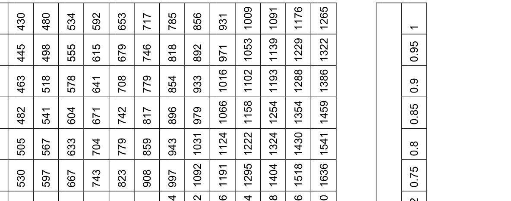
873 852 823 779 742 708 679 653
941 908 859 817 779 746 717
943 896 854 818 785
933 892 856
931
6193 4415 3782 3457 3069 2858 2596 2448 2149 1922 1743 1598 1548 1479 1380 1344 1295 1222 1158 1102 1053 1009 6782 4826 4131 3775 3348 3117 2829 2667 2340 2090 1894 1736 1681 1606 1497 1458 1404 1324 1254 1193 1139 1091 7396 5256 4496 4107 3641 3388 3074 2897 2539 2267 2053 1880 1820 1738 1619 1576 1518 1430 1354 1288 1229 1176 8036 5705 4877 4453 3946 3671 3329 3136 2747 2451 2219 2031 1966 1876 1747 1700 1636 1541 1459 1386 1322 1265
.
0.55 0.6 0.72 0.75 0.8 0.85 0.9 0.95 1
20 315 168 125 103 95 90 85 82 78 76 71 68 65 63 62 61 59 58 57 56 55 54 53 53
| 23 | 37 | 53 | 70 | 90 | 112 | 137 | 164 | 195 | 228 | 264 | 303 | 345 | 390 | 439 | 491 | 547 | 606 | 668 | 734 | 804 | 877 | 954 | 1034 |
| 23 | 37 | 53 | 71 | 92 | 115 | 140 | 169 | 200 | 234 | 272 | 313 | 357 | 404 | 456 | 510 | 568 | 630 | 696 | 765 | 838 | 915 | 996 | 1081 |
| 24 | 38 | 54 | 73 | 94 | 118 | 144 | 174 | 206 | 242 | 281 | 324 | 370 | 420 | 474 | 531 | 593 | 658 | 727 | 800 | 877 | 958 | 1044 | 1133 |
| 24 | 38 | 55 | 74 | 96 | 121 | 148 | 179 | 213 | 251 | 292 | 337 | 386 | 438 | 495 | 555 | 620 | 689 | 762 | 839 | 921 | 1007 | 1098 | 1192 |
| 24 | 39 | 56 | 76 | 99 | 124 | 153 | 185 | 221 | 261 | 304 | 352 | 403 | 459 | 519 | 583 | 651 | 725 | 802 | 885 | 971 | 1063 | 1159 | 1260 |
| 24 | 40 | 57 | 78 | 102 | 128 | 159 | 193 | 230 | 272 | 318 | 368 | 423 | 482 | 546 | 614 | 688 | 766 | 849 | 936 | 1029 | 1127 | 1230 | 1338 |
| 25 | 40 | 58 | 79 | 104 | 131 | 162 | 197 | 237 | 280 | 328 | 380 | 437 | 498 | 564 | 636 | 712 | 793 | 880 | 972 | 1069 | 1171 | 1278 | 1391 |
| 25 | 41 | 59 | 80 | 105 | 133 | 165 | 201 | 241 | 285 | 334 | 388 | 446 | 510 | 578 | 651 | 730 | 814 | 903 | 997 | 1097 | 1202 | 1313 | 1429 |
| 25 | 41 | 61 | 83 | 109 | 139 | 172 | 211 | 253 | 301 | 353 | 411 | 474 | 542 | 615 | 695 | 779 | 870 | 966 | 1069 | 1177 | 1291 | 1411 | 1537 |
| 26 | 42 | 62 | 85 | 112 | 142 | 178 | 217 | 262 | 312 | 366 | 427 | 493 | 564 | 641 | 724 | 814 | 909 | 1010 | 1118 | 1232 | 1352 | 1479 | 1612 |
| 26 | 43 | 63 | 86 | 113 | 145 | 181 | 222 | 268 | 319 | 376 | 438 | 506 | 580 | 660 | 746 | 839 | 938 | 1043 | 1154 | 1273 | 1397 | 1529 | 1667 |
| 26 | 44 | 65 | 90 | 119 | 153 | 192 | 236 | 286 | 342 | 404 | 472 | 546 | 627 | 715 | 810 | 911 | 1020 | 1136 | 1259 | 1389 | 1527 | 1672 | 1825 |
| 27 | 45 | 68 | 94 | 126 | 163 | 205 | 253 | 308 | 369 | 438 | 513 | 595 | 685 | 783 | 888 | 1001 | 1123 | 1252 | 1390 | 1536 | 1690 | 1852 | 2023 |
| 28 | 47 | 71 | 100 | 134 | 175 | 222 | 275 | 336 | 405 | 481 | 565 | 658 | 759 | 870 | 989 | 1117 | 1254 | 1401 | 1558 | 1723 | 1899 | 2083 | 2278 |
| 29 | 50 | 76 | 107 | 146 | 191 | 243 | 304 | 373 | 450 | 538 | 634 | 741 | 857 | 984 | 1122 | 1270 | 1429 | 1600 | 1781 | 1974 | 2177 | 2392 | 2618 |
| 30 | 51 | 78 | 111 | 151 | 198 | 254 | 318 | 391 | 473 | 566 | 668 | 782 | 906 | 1041 | 1188 | 1347 | 1517 | 1699 | 1893 | 2099 | 2317 | 2547 | 2789 |
| 31 | 53 | 82 | 117 | 160 | 212 | 272 | 342 | 422 | 513 | 615 | 729 | 855 | 993 | 1143 | 1307 | 1484 | 1673 | 1877 | 2093 | 2324 | 2568 | 2825 | 3097 |
| 31 | 55 | 85 | 122 | 168 | 223 | 287 | 362 | 448 | 546 | 655 | 778 | 914 | 1063 | 1226 | 1403 | 1594 | 1800 | 2021 | 2256 | 2507 | 2772 | 3052 | 3347 |
| 33 | 58 | 90 | 131 | 182 | 242 | 314 | 398 | 495 | 605 | 729 | 868 | 1023 | 1193 | 1379 | 1582 | 1801 | 2038 | 2291 | 2562 | 2850 | 3156 | 3478 | 3818 |
| 34 | 60 | 95 | 139 | 193 | 258 | 336 | 428 | 533 | 654 | 791 | 944 | 1114 | 1302 | 1508 | 1733 | 1977 | 2239 | 2521 | 2822 | 3143 | 3483 | 3843 | 4222 |
| 36 | 65 | 103 | 152 | 214 | 289 | 379 | 485 | 608 | 750 | 911 | 1092 | 1295 | 1518 | 1765 | 2034 | 2326 | 2641 | 2981 | 3344 | 3731 | 4142 | 4577 | 5035 |
| 41 | 76 | 125 | 188 | 270 | 371 | 494 | 642 | 816 | 1019 | 1251 | 1516 | 1814 | 2147 | 2515 | 2921 | 3364 | 3845 | 4365 | 4923 | 5519 | 6154 | 6826 | 7535 |
| 50 | 99 | 168 | 264 | 391 | 555 | 761 | 1016 | 1326 | 1697 | 2134 | 2645 | 3235 | 3908 | 4670 | 5525 | 6476 | 7524 | 8670 | 9915 | ----- | ----- | ----- | ----- |
| 76 | 167 | 315 | 548 | 904 | 1441 | 2255 | 3512 | 5546 | 9184 | ----- | ----- | ----- | ----- | ----- | ----- | ----- | ----- | ----- | ----- | ----- | ----- | ----- | ----- |
| 10 | 15 | 20 | 25 | 30 | 35 | 40 | 45 | 50 | 55 | 60 | 65 | 70 | 75 | 80 | 85 | 90 | 95 | 100 | 105 | 110 | 115 | 120 | 125 |
80 79 78 76 74 73 71 70 105 104 102 99 96 94 92 90 133 131 128 124 121 118 115 112 165 162 159 153 148 144 140 137 201 197 193 185 179 174 169 164 241 237 230 221 213 206 200 195 285 280 272 261 251 242 234 228 334 328 318 304 292 281 272 264 388 380 368 352 337 324 313 303 446 437 423 403 386 370 357 345 510 498 482 459 438 420 404 390 578 564 546 519 495 474 456 439 651 636 614 583 555 531 510 491 730 712 688 651 620 593 568 547 814 793 766 725 689 658 630 606 903 880 849 802 762 727 696 668
972 936 885 839 800 765 734
921 877 838 804
915 877
954
144
140 ----- ----- 9873 6546 5472 4940 4320 3991 3588 3364 2919 2586 2327 2121 2049 1952 1812 1762 1693 1591 1503 1426 1358 1298
| 1118 | 1206 | 1298 |
| 1169 | 1262 | 1358 |
| 1227 | 1324 | 1426 |
| 1291 | 1395 | 1503 |
| 1366 | 1476 | 1591 |
| 1451 | 1570 | 1693 |
| 1509 | 1633 | 1762 |
| 1551 | 1679 | 1812 |
| 1670 | 1808 | 1952 |
| 1751 | 1897 | 2049 |
| 1811 | 1963 | 2121 |
| 1985 | 2152 | 2327 |
| 2202 | 2390 | 2586 |
| 2482 | 2696 | 2919 |
| 2856 | 3105 | 3364 |
| 3043 | 3310 | 3588 |
| 3382 | 3680 | 3991 |
| 3657 | 3981 | 4320 |
| 4175 | 4549 | 4940 |
| 4620 | 5036 | 5472 |
| 5516 | 6020 | 6546 |
| 8280 | 9060 | 9873 |
| ----- | ----- | ----- |
| ----- | ----- | ----- |
| 130 | 135 | 140 |
| Расчетный тормозной коэффициент | 1 | 23 | 38 | 53 | 71 | 92 | 114 | 140 | 168 | 198 | 232 | 269 | 309 | 352 | 399 | 449 | 502 | 559 |
| 0.95 | 24 | 38 | 54 | 73 | 94 | 117 | 143 | 172 | 204 | 239 | 278 | 320 | 365 | 414 | 466 | 522 | 582 | |
| 0.9 | 24 | 38 | 55 | 74 | 96 | 120 | 147 | 177 | 211 | 248 | 288 | 332 | 379 | 430 | 486 | 545 | 608 | |
| 0.85 | 24 | 39 | 56 | 76 | 98 | 123 | 152 | 183 | 218 | 257 | 299 | 345 | 395 | 449 | 508 | 570 | 637 | |
| 0.8 | 25 | 40 | 57 | 78 | 101 | 127 | 157 | 190 | 227 | 267 | 312 | 361 | 414 | 471 | 533 | 599 | 670 | |
| 0.75 | 25 | 40 | 59 | 80 | 104 | 131 | 162 | 197 | 236 | 279 | 327 | 379 | 435 | 496 | 562 | 633 | 709 | |
| 0.72 | 25 | 41 | 60 | 81 | 106 | 134 | 166 | 202 | 243 | 287 | 337 | 391 | 449 | 513 | 582 | 656 | 735 | |
| 0.7 | 25 | 41 | 60 | 82 | 107 | 136 | 169 | 206 | 248 | 293 | 344 | 399 | 460 | 525 | 596 | 672 | 754 | |
| 0.65 | 26 | 42 | 62 | 85 | 112 | 142 | 177 | 217 | 261 | 310 | 364 | 424 | 489 | 560 | 636 | 719 | 807 | |
| 0.62 | 26 | 43 | 63 | 87 | 114 | 146 | 183 | 224 | 270 | 321 | 378 | 441 | 509 | 584 | 664 | 751 | 844 | |
| ;0.6 | 26 | 43 | 64 | 88 | 116 | 149 | 187 | 229 | 277 | 330 | 389 | 453 | 524 | 601 | 685 | 775 | 871 | |
| 0.55 | 27 | 45 | 67 | 92 | 122 | 158 | 198 | 244 | 296 | 354 | 418 | 489 | 567 | 652 | 744 | 843 | 950 | |
| 0.5 | 28 | 47 | 70 | 97 | 130 | 168 | 212 | 263 | 320 | 384 | 455 | 534 | 621 | 716 | 818 | 930 | 1049 | |
| 0.45 | 29 | 49 | 73 | 103 | 139 | 181 | 230 | 286 | 350 | 422 | 503 | 592 | 690 | 798 | 915 | 1041 | 1178 | |
| 0.4 | 30 | 52 | 78 | 111 | 151 | 198 | 254 | 318 | 391 | 473 | 566 | 669 | 782 | 907 | 1043 | 1191 | 1351 | |
| 0.38 | 31 | 53 | 81 | 115 | 157 | 207 | 265 | 333 | 411 | 498 | 597 | 707 | 829 | 962 | 1108 | 1267 | 1438 | |
| 0.35 | 32 | 55 | 85 | 122 | 168 | 222 | 286 | 361 | 446 | 544 | 654 | 776 | 912 | 1062 | 1226 | 1404 | 1597 | |
| 0.33 | 33 | 57 | 88 | 128 | 176 | 234 | 303 | 383 | 475 | 580 | 699 | 832 | 980 | 1143 | 1322 | 1517 | 1728 | |
| 0.3 | 34 | 60 | 95 | 138 | 191 | 256 | 333 | 424 | 529 | 649 | 785 | 938 | 1108 | 1297 | 1504 | 1731 | 1976 | |
| 0.28 | 35 | 63 | 99 | 146 | 204 | 274 | 359 | 458 | 574 | 707 | 858 | 1028 | 1218 | 1429 | 1662 | 1916 | 2193 | |
| 0.25 | 37 | 68 | 109 | 162 | 228 | 310 | 409 | 526 | 663 | 822 | 1004 | 1210 | 1441 | 1699 | 1984 | 2297 | 2639 | |
| 0.2 | 43 | 81 | 134 | 204 | 294 | 409 | 550 | 721 | 926 | 1166 | 1447 | 1769 | 2137 | 2553 | 3019 | 3537 | 4108 | |
| 0.15 | 54 | 108 | 187 | 300 | 453 | 657 | 923 | 1263 | 1693 | 2228 | 2886 | 3690 | 4662 | 5827 | 7211 | 8843 | ----- | |
| 0.1 | 89 | 207 | 425 | 831 | 1653 | 3938 | ----- | ----- | ----- | ----- | ----- | ----- | ----- | ----- | ----- | ----- | ----- | |
| V, км/ч | 10 | 15 | 20 | 25 | 30 | 35 | 40 | 45 | 50 | 55 | 60 | 65 | 70 | 75 | 80 | 85 | 90 |
V,
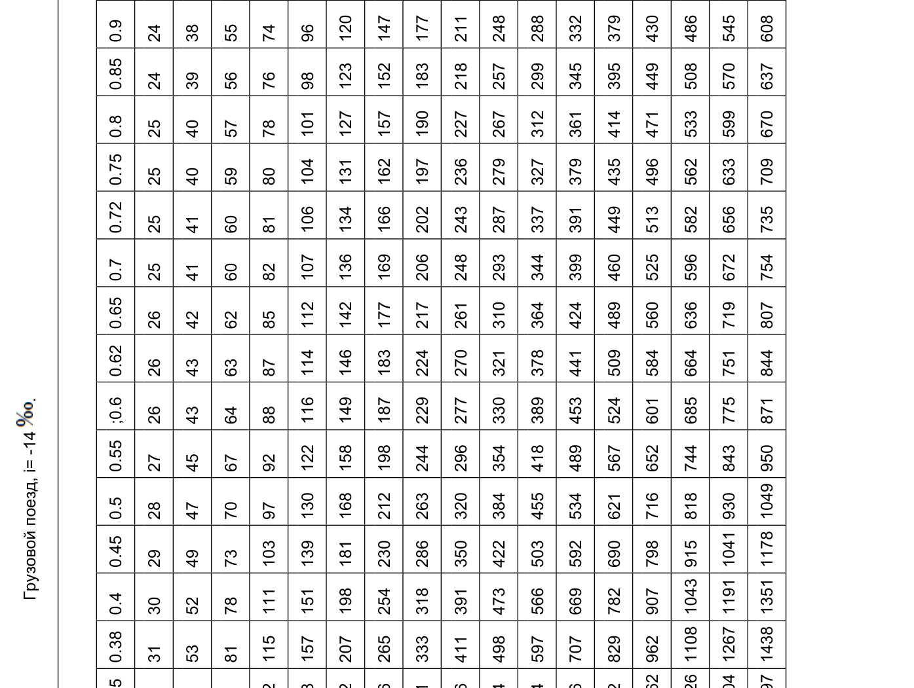
105 ----- ----- 6158 3841 3161 2834 2462 2267 2032 1903 1649 1461 1316 1202 1162 1109 1032 1004 967 911 863 821 784 752
| Расчетный тормозной коэффициент | 1 | 24 | 38 | 54 | 73 | 93 | 116 | 142 | 171 | 202 | 237 |
| 0.95 | 24 | 39 | 55 | 74 | 95 | 119 | 146 | 176 | 208 | 244 | |
| 0.9 | 24 | 39 | 56 | 75 | 97 | 122 | 150 | 181 | 215 | 253 | |
| 0.85 | 25 | 40 | 57 | 77 | 100 | 126 | 155 | 187 | 223 | 263 | |
| 0.8 | 25 | 40 | 58 | 79 | 103 | 130 | 160 | 194 | 232 | 274 | |
| 0.75 | 25 | 41 | 60 | 81 | 106 | 134 | 166 | 202 | 242 | 287 | |
| 0.72 | 26 | 42 | 61 | 83 | 108 | 137 | 170 | 208 | 249 | 295 | |
| 0.7 | 26 | 42 | 61 | 84 | 110 | 140 | 173 | 212 | 254 | 302 | |
| 0.65 | 26 | 43 | 63 | 87 | 114 | 146 | 182 | 223 | 268 | 319 | |
| 0.62 | 27 | 44 | 65 | 89 | 117 | 150 | 188 | 230 | 278 | 331 | |
| 0.6 | 27 | 44 | 66 | 90 | 120 | 153 | 192 | 236 | 285 | 340 | |
| 0.55 | 28 | 46 | 68 | 95 | 126 | 162 | 204 | 252 | 306 | 366 | |
| 0.5 | 28 | 48 | 72 | 100 | 134 | 174 | 220 | 272 | 332 | 399 | |
| 0.45 | 30 | 50 | 76 | 107 | 144 | 188 | 239 | 298 | 365 | 441 | |
| 0.4 | 31 | 53 | 81 | 116 | 157 | 207 | 265 | 332 | 410 | 498 | |
| 0.38 | 32 | 55 | 84 | 120 | 164 | 216 | 278 | 350 | 432 | 526 | |
| 0.35 | 33 | 57 | 88 | 127 | 175 | 233 | 301 | 380 | 472 | 577 | |
| 0.33 | 34 | 59 | 92 | 134 | 185 | 246 | 320 | 406 | 505 | 619 | |
| 0.3 | 35 | 63 | 99 | 145 | 202 | 271 | 354 | 453 | 567 | 699 | |
| 0.28 | 37 | 66 | 104 | 154 | 216 | 292 | 384 | 493 | 620 | 768 | |
| 0.25 | 39 | 71 | 115 | 172 | 244 | 334 | 443 | 574 | 729 | 909 | |
| 0.2 | 46 | 86 | 144 | 222 | 324 | 455 | 620 | 824 | 1071 | 1369 | |
| 0.15 | 59 | 119 | 212 | 348 | 542 | 815 | 1192 | 1711 | 2423 | 3406 | |
| 0.1 | 108 | 284 | 734 | 4728 | ----- | ----- | ----- | ----- | ----- | ----- | |
| V, км/ч | 10 | 15 | 20 | 25 | 30 | 35 | 40 | 45 | 50 | 55 |
| 620 | 684 | 752 | 823 | 898 | 977 | 1060 | 1147 | 1237 | 1331 |
| 646 | 713 | 784 | 860 | 939 | 1022 | 1109 | 1201 | 1296 | 1395 |
| 675 | 746 | 821 | 901 | 985 | 1073 | 1165 | 1261 | 1362 | 1467 |
| 708 | 783 | 863 | 948 | 1036 | 1130 | 1228 | 1330 | 1438 | 1549 |
| 746 | 826 | 911 | 1001 | 1096 | 1195 | 1300 | 1410 | 1524 | 1644 |
| 790 | 875 | 967 | 1063 | 1165 | 1272 | 1384 | 1501 | 1624 | 1753 |
| 819 | 909 | 1004 | 1105 | 1211 | 1323 | 1441 | 1564 | 1693 | 1827 |
| 841 | 933 | 1032 | 1136 | 1245 | 1361 | 1482 | 1609 | 1742 | 1881 |
| 901 | 1002 | 1109 | 1222 | 1341 | 1467 | 1599 | 1737 | 1882 | 2033 |
| 944 | 1050 | 1162 | 1282 | 1408 | 1541 | 1680 | 1826 | 1980 | 2139 |
| 975 | 1085 | 1202 | 1326 | 1457 | 1595 | 1740 | 1892 | 2051 | 2218 |
| 1065 | 1187 | 1316 | 1454 | 1599 | 1753 | 1914 | 2083 | 2260 | 2445 |
| 1178 | 1315 | 1461 | 1616 | 1779 | 1952 | 2134 | 2325 | 2525 | 2734 |
| 1325 | 1481 | 1649 | 1826 | 2014 | 2213 | 2421 | 2641 | 2871 | 3111 |
| 1523 | 1707 | 1903 | 2112 | 2333 | 2566 | 2813 | 3071 | 3342 | 3626 |
| 1623 | 1821 | 2032 | 2257 | 2495 | 2747 | 3012 | 3291 | 3583 | 3889 |
| 1806 | 2029 | 2267 | 2522 | 2791 | 3076 | 3377 | 3693 | 4024 | 4371 |
| 1956 | 2200 | 2462 | 2740 | 3036 | 3349 | 3679 | 4027 | 4391 | 4772 |
| 2242 | 2528 | 2834 | 3161 | 3508 | 3875 | 4263 | 4671 | 5099 | 5547 |
| 2492 | 2815 | 3161 | 3530 | 3923 | 4339 | 4778 | 5241 | 5726 | 6234 |
| 3010 | 3410 | 3841 | 4302 | 4793 | 5314 | 5864 | 6444 | 7053 | 7690 |
| 4735 | 5419 | 6158 | 6955 | 7808 | 8717 | 9681 | ----- | ----- | ----- |
| ----- | ----- | ----- | ----- | ----- | ----- | ----- | ----- | ----- | ----- |
| ----- | ----- | ----- | ----- | ----- | ----- | ----- | ----- | ----- | ----- |
| 95 | 100 | 105 | 110 | 115 | 120 | 125 | 130 | 135 | 140 |
901 860 823
7808 4793 3923 3508 3036 2791 2495 2333 2014 1779 1599 1457 1408 1341 1245 1211 1165 1096 1036 985 939 898 8717 5314 4339 3875 3349 3076 2747 2566 2213 1952 1753 1595 1541 1467 1361 1323 1272 1195 1130 1073 1022 977 9681 5864 4778 4263 3679 3377 3012 2813 2421 2134 1914 1740 1680 1599 1482 1441 1384 1300 1228 1165 1109 1060
6444 5241 4671 4027 3693 3291 3071 2641 2325 2083 1892 1826 1737 1609 1564 1501 1410 1330 1261 1201 1147
7053 5726 5099 4391 4024 3583 3342 2871 2525 2260 2051 1980 1882 1742 1693 1624 1524 1438 1362 1296 1237
7690 6234 5547 4772 4371 3889 3626 3111 2734 2445 2218 2139 2033 1881 1827 1753 1644 1549 1467 1395 1331
0.62 0.65 0.7 0.72 0.75 0.8 0.85 0.9 0.95 1
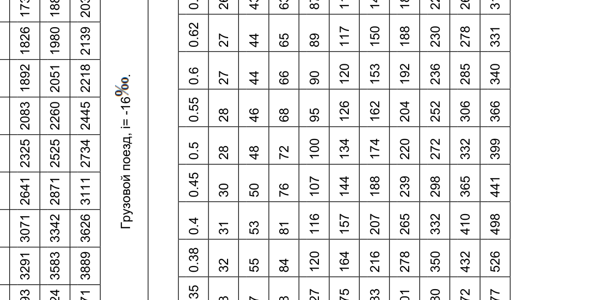
146
70 ----- 9675 2619 1626 1344 1209 1056 977 881 828 725 648 589 543 527 505 474 463 447 425 405 388 373 360
| 274 | 315 | 360 | 408 | 459 | 514 | 572 | 634 | 700 | 770 | 843 | 921 | 1002 | 1087 | 1176 | 1269 | 1366 |
| 284 | 327 | 373 | 423 | 477 | 535 | 596 | 662 | 731 | 804 | 882 | 963 | 1049 | 1139 | 1233 | 1332 | 1434 |
| 294 | 339 | 388 | 441 | 497 | 558 | 623 | 692 | 766 | 843 | 925 | 1012 | 1103 | 1198 | 1298 | 1402 | 1511 |
| 306 | 354 | 405 | 461 | 521 | 585 | 654 | 727 | 805 | 888 | 975 | 1067 | 1163 | 1265 | 1371 | 1482 | 1598 |
| 320 | 370 | 425 | 484 | 548 | 616 | 689 | 768 | 851 | 939 | 1032 | 1130 | 1234 | 1342 | 1456 | 1575 | 1699 |
| 335 | 389 | 447 | 510 | 579 | 652 | 731 | 814 | 904 | 998 | 1098 | 1204 | 1315 | 1432 | 1554 | 1682 | 1816 |
| 346 | 402 | 463 | 529 | 600 | 676 | 758 | 846 | 940 | 1039 | 1144 | 1254 | 1371 | 1493 | 1622 | 1756 | 1896 |
| 354 | 411 | 474 | 542 | 615 | 694 | 779 | 869 | 966 | 1068 | 1176 | 1291 | 1411 | 1538 | 1671 | 1809 | 1955 |
| 376 | 437 | 505 | 579 | 658 | 744 | 836 | 935 | 1040 | 1151 | 1270 | 1394 | 1526 | 1664 | 1810 | 1962 | 2120 |
| 391 | 456 | 527 | 604 | 688 | 779 | 876 | 980 | 1092 | 1210 | 1335 | 1467 | 1607 | 1753 | 1907 | 2068 | 2237 |
| 402 | 469 | 543 | 623 | 711 | 805 | 906 | 1014 | 1130 | 1253 | 1383 | 1521 | 1666 | 1819 | 1979 | 2147 | 2323 |
| 434 | 508 | 589 | 678 | 775 | 880 | 992 | 1113 | 1241 | 1378 | 1524 | 1678 | 1840 | 2011 | 2190 | 2378 | 2575 |
| 474 | 557 | 648 | 748 | 857 | 974 | 1101 | 1238 | 1383 | 1539 | 1703 | 1878 | 2063 | 2257 | 2461 | 2675 | 2899 |
| 526 | 620 | 725 | 839 | 964 | 1099 | 1245 | 1402 | 1570 | 1750 | 1941 | 2143 | 2357 | 2583 | 2820 | 3069 | 3329 |
| 596 | 706 | 828 | 962 | 1109 | 1269 | 1442 | 1628 | 1828 | 2042 | 2269 | 2511 | 2767 | 3037 | 3320 | 3618 | 3930 |
| 632 | 750 | 881 | 1025 | 1184 | 1356 | 1543 | 1744 | 1961 | 2192 | 2439 | 2702 | 2979 | 3272 | 3581 | 3904 | 4243 |
| 696 | 829 | 977 | 1141 | 1320 | 1516 | 1729 | 1959 | 2207 | 2472 | 2755 | 3056 | 3375 | 3712 | 4067 | 4440 | 4830 |
| 749 | 894 | 1056 | 1236 | 1434 | 1650 | 1885 | 2140 | 2414 | 2708 | 3022 | 3356 | 3711 | 4085 | 4480 | 4895 | 5329 |
| 849 | 1019 | 1209 | 1421 | 1654 | 1910 | 2190 | 2493 | 2820 | 3172 | 3549 | 3951 | 4377 | 4829 | 5304 | 5805 | 6329 |
| 937 | 1128 | 1344 | 1584 | 1850 | 2143 | 2463 | 2812 | 3189 | 3595 | 4030 | 4495 | 4989 | 5512 | 6064 | 6645 | 7254 |
| 1118 | 1356 | 1626 | 1930 | 2268 | 2643 | 3055 | 3505 | 3995 | 4524 | 5094 | 5704 | 6355 | 7045 | 7775 | 8544 | 9350 |
| 1722 | 2137 | 2619 | 3174 | 3809 | 4529 | 5339 | 6243 | 7245 | 8347 | 9553 | ----- | ----- | ----- | ----- | ----- | ----- |
| 4780 | 6746 | 9675 | ----- | ----- | ----- | ----- | ----- | ----- | ----- | ----- | ----- | ----- | ----- | ----- | ----- | ----- |
| ----- | ----- | ----- | ----- | ----- | ----- | ----- | ----- | ----- | ----- | ----- | ----- | ----- | ----- | ----- | ----- | ----- |
| 60 | 65 | 70 | 75 | 80 | 85 | 90 | 95 | 100 | 105 | 110 | 115 | 120 | 125 | 130 | 135 | 140 |
839 748 579 542 529 510 484 461 441 423 408
| Расчетный тормозной коэффициент | 1.35 | 29 | 39 | 50 |
| 1.3 | 29 | 39 | 51 | |
| 1.25 | 29 | 40 | 52 | |
| 1.2 | 30 | 40 | 52 | |
| 1.15 | 30 | 41 | 53 | |
| 1.1 | 30 | 41 | 54 | |
| 1.05 | 31 | 42 | 55 | |
| 1 | 31 | 43 | 56 | |
| 0.95 | 32 | 43 | 57 | |
| 0.9 | 32 | 44 | 59 | |
| 0.85 | 33 | 45 | 60 | |
| 0.8 | 33 | 46 | 62 | |
| 0.78 | 34 | 47 | 62 | |
| 0.75 | 34 | 48 | 64 | |
| 0.7 | 35 | 49 | 66 | |
| 0.65 | 36 | 51 | 68 | |
| 0.6 | 37 | 53 | 71 | |
| 0.55 | 38 | 55 | 74 | |
| 0.5 | 40 | 57 | 78 | |
| 0.45 | 42 | 61 | 83 | |
| 0.4 | 44 | 65 | 89 | |
| 0.35 | 47 | 70 | 97 | |
| 0.3 | 52 | 77 | 108 | |
| V, км/ч | 20 | 25 | 30 |
658 615 600 579 548 521 497 477 459
744 694 676 652 616 585 558 535 514
836 779 758 731 689 654 623 596 572
935 869 846 814 768 727 692 662 634
940 904 851 805 766 731 700
8347 4524 3595 3172 2708 2472 2192 2042 1750 1539 1378 1253 1210 1151 1068 1039 998 939 888 843 804 770 9553 5094 4030 3549 3022 2755 2439 2269 1941 1703 1524 1383 1335 1270 1176 1144 1098 1032 975 925 882 843
5704 4495 3951 3356 3056 2702 2511 2143 1878 1678 1521 1467 1394 1291 1254 1204 1130 1067 1012 963 921
6355 4989 4377 3711 3375 2979 2767 2357 2063 1840 1666 1607 1526 1411 1371 1315 1234 1163 1103 1049 1002
7045 5512 4829 4085 3712 3272 3037 2583 2257 2011 1819 1753 1664 1538 1493 1432 1342 1265 1198 1139 1087
7775 6064 5304 4480 4067 3581 3320 2820 2461 2190 1979 1907 1810 1671 1622 1554 1456 1371 1298 1233 1176
8544 6645 5805 4895 4440 3904 3618 3069 2675 2378 2147 2068 1962 1809 1756 1682 1575 1482 1402 1332 1269
9350 7254 6329 5329 4830 4243 3930 3329 2899 2575 2323 2237 2120 1955 1896 1816 1699 1598 1511 1434 1366
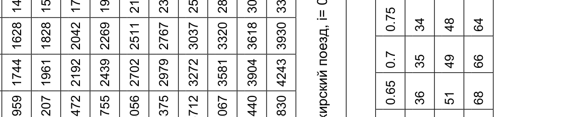
45 240 214 194 178 166 156 147 140 133 128 125 123 119 115 112 109 106 103 101 99 97 95 94 131 127 124 121 118 116 114 111
| 63 | 78 | 94 | 111 | 131 | 153 | 176 | 201 | 229 | 258 | 289 | 323 | 358 | 396 | 436 | 478 | 522 | 569 | 617 | 668 | 721 | 776 | 833 | 893 |
| 64 | 79 | 95 | 114 | 134 | 156 | 180 | 206 | 234 | 264 | 297 | 331 | 368 | 407 | 448 | 491 | 537 | 585 | 635 | 688 | 742 | 799 | 858 | 920 |
| 65 | 80 | 97 | 116 | 137 | 159 | 184 | 211 | 240 | 271 | 305 | 340 | 378 | 418 | 461 | 506 | 553 | 603 | 654 | 709 | 765 | 824 | 885 | 949 |
| 66 | 82 | 99 | 118 | 140 | 163 | 189 | 216 | 246 | 279 | 313 | 350 | 389 | 431 | 475 | 521 | 570 | 622 | 675 | 731 | 790 | 851 | 914 | 980 |
| 67 | 83 | 101 | 121 | 143 | 167 | 194 | 222 | 253 | 287 | 323 | 361 | 401 | 445 | 490 | 538 | 589 | 642 | 698 | 756 | 817 | 880 | 946 | 1014 |
| 69 | 85 | 103 | 124 | 147 | 172 | 199 | 229 | 261 | 296 | 333 | 372 | 415 | 459 | 507 | 557 | 609 | 665 | 722 | 783 | 846 | 912 | 980 | 1051 |
| 70 | 87 | 106 | 127 | 151 | 177 | 205 | 236 | 269 | 305 | 344 | 385 | 429 | 475 | 525 | 577 | 632 | 689 | 749 | 812 | 878 | 946 | 1018 | 1091 |
| 71 | 89 | 109 | 131 | 155 | 182 | 212 | 244 | 278 | 316 | 356 | 399 | 445 | 493 | 545 | 599 | 656 | 716 | 779 | 844 | 913 | 984 | 1058 | 1136 |
| 73 | 91 | 112 | 135 | 160 | 188 | 219 | 252 | 288 | 328 | 369 | 414 | 462 | 513 | 566 | 623 | 683 | 745 | 811 | 880 | 951 | 1026 | 1104 | 1184 |
| 75 | 94 | 115 | 139 | 165 | 195 | 227 | 262 | 300 | 340 | 384 | 431 | 481 | 534 | 591 | 650 | 713 | 778 | 847 | 919 | 994 | 1072 | 1153 | 1238 |
| 77 | 97 | 119 | 144 | 171 | 202 | 236 | 272 | 312 | 355 | 401 | 450 | 503 | 559 | 618 | 680 | 746 | 815 | 887 | 962 | 1041 | 1123 | 1209 | 1297 |
| 80 | 100 | 123 | 149 | 178 | 210 | 246 | 284 | 326 | 371 | 420 | 471 | 527 | 586 | 648 | 713 | 783 | 855 | 932 | 1011 | 1094 | 1181 | 1271 | 1364 |
| 81 | 101 | 125 | 152 | 181 | 214 | 250 | 289 | 332 | 378 | 428 | 481 | 537 | 597 | 661 | 728 | 799 | 873 | 951 | 1032 | 1117 | 1206 | 1298 | 1393 |
| 82 | 104 | 128 | 155 | 186 | 220 | 257 | 298 | 342 | 389 | 441 | 495 | 554 | 616 | 682 | 751 | 825 | 901 | 982 | 1066 | 1154 | 1245 | 1341 | 1439 |
| 85 | 108 | 133 | 162 | 195 | 230 | 270 | 313 | 360 | 410 | 465 | 523 | 585 | 651 | 721 | 794 | 872 | 954 | 1039 | 1128 | 1222 | 1319 | 1420 | 1524 |
| 89 | 113 | 140 | 170 | 205 | 243 | 285 | 330 | 380 | 434 | 492 | 554 | 620 | 691 | 765 | 844 | 927 | 1013 | 1105 | 1200 | 1299 | 1403 | 1510 | 1622 |
| 93 | 118 | 147 | 180 | 216 | 257 | 302 | 351 | 404 | 462 | 524 | 590 | 661 | 737 | 817 | 901 | 990 | 1083 | 1180 | 1282 | 1389 | 1500 | 1615 | 1734 |
| 98 | 125 | 156 | 191 | 230 | 274 | 322 | 375 | 432 | 495 | 561 | 633 | 710 | 791 | 877 | 968 | 1064 | 1164 | 1269 | 1379 | 1494 | 1613 | 1737 | 1865 |
| 103 | 132 | 166 | 204 | 246 | 294 | 346 | 404 | 466 | 533 | 606 | 684 | 767 | 855 | 949 | 1047 | 1151 | 1260 | 1375 | 1494 | 1618 | 1747 | 1881 | 2021 |
| 110 | 142 | 178 | 220 | 266 | 318 | 376 | 438 | 507 | 581 | 660 | 745 | 836 | 933 | 1036 | 1144 | 1257 | 1377 | 1501 | 1632 | 1768 | 1909 | 2055 | 2207 |
| 119 | 154 | 194 | 240 | 291 | 349 | 412 | 481 | 557 | 639 | 727 | 822 | 922 | 1029 | 1143 | 1262 | 1388 | 1520 | 1658 | 1801 | 1951 | 2107 | 2268 | 2435 |
| 130 | 169 | 214 | 265 | 323 | 387 | 458 | 536 | 621 | 713 | 812 | 918 | 1031 | 1151 | 1278 | 1412 | 1552 | 1700 | 1854 | 2015 | 2182 | 2355 | 2535 | 2721 |
| 145 | 189 | 240 | 298 | 364 | 438 | 519 | 608 | 705 | 810 | 923 | 1044 | 1173 | 1310 | 1454 | 1607 | 1767 | 1934 | 2109 | 2291 | 2481 | 2677 | 2880 | 3090 |
| 35 | 40 | 45 | 50 | 55 | 60 | 65 | 70 | 75 | 80 | 85 | 90 | 95 | 100 | 105 | 110 | 115 | 120 | 125 | 130 | 135 | 140 | 145 | 150 |
155 151 147 143 140 137 134 131 182 177 172 167 163 159 156 153 212 205 199 194 189 184 180 176 244 236 229 222 216 211 206 201 278 269 261 253 246 240 234 229 316 305 296 287 279 271 264 258 356 344 333 323 313 305 297 289 399 385 372 361 350 340 331 323 445 429 415 401 389 378 368 358 493 475 459 445 431 418 407 396 545 525 507 490 475 461 448 436 599 577 557 538 521 506 491 478 656 632 609 589 570 553 537 522 716 689 665 642 622 603 585 569 779 749 722 698 675 654 635 617 844 812 783 756 731 709 688 668 913 878 846 817 790 765 742 721
946 912 880 851 824 799 776
946 914 885 858 833
949 920 893
148
165 3758 3315 2969 2693 2466 2277 2117 1980 1861 1757 1700 1665 1583 1509 1443 1384 1329 1280 1234 1192 1154 1118 1085 3993 3524 3158 2864 2624 2423 2253 2107 1980 1869 1809 1771 1684 1606 1536 1472 1414 1361 1313 1268 1227 1188 1153
| 955 | 1019 | 1085 | 1153 | 1223 | 1296 | 1371 | 1447 | 1526 | 1607 |
| 984 | 1050 | 1118 | 1188 | 1261 | 1336 | 1413 | 1493 | 1574 | 1658 |
| 1015 | 1083 | 1154 | 1227 | 1302 | 1379 | 1459 | 1541 | 1625 | 1712 |
| 1049 | 1119 | 1192 | 1268 | 1346 | 1426 | 1509 | 1594 | 1681 | 1770 |
| 1085 | 1158 | 1234 | 1313 | 1393 | 1477 | 1562 | 1650 | 1741 | 1834 |
| 1125 | 1201 | 1280 | 1361 | 1445 | 1531 | 1620 | 1712 | 1806 | 1902 |
| 1168 | 1247 | 1329 | 1414 | 1501 | 1591 | 1684 | 1779 | 1877 | 1977 |
| 1215 | 1298 | 1384 | 1472 | 1563 | 1657 | 1753 | 1852 | 1954 | 2059 |
| 1268 | 1354 | 1443 | 1536 | 1631 | 1729 | 1829 | 1933 | 2039 | 2148 |
| 1325 | 1416 | 1509 | 1606 | 1706 | 1808 | 1914 | 2022 | 2133 | 2247 |
| 1389 | 1484 | 1583 | 1684 | 1789 | 1896 | 2007 | 2121 | 2237 | 2357 |
| 1461 | 1561 | 1665 | 1771 | 1881 | 1995 | 2111 | 2231 | 2353 | 2479 |
| 1492 | 1594 | 1700 | 1809 | 1922 | 2037 | 2156 | 2278 | 2404 | 2532 |
| 1541 | 1647 | 1757 | 1869 | 1986 | 2105 | 2228 | 2354 | 2484 | 2616 |
| 1633 | 1745 | 1861 | 1980 | 2103 | 2230 | 2360 | 2494 | 2631 | 2771 |
| 1737 | 1857 | 1980 | 2107 | 2238 | 2373 | 2511 | 2653 | 2799 | 2948 |
| 1858 | 1985 | 2117 | 2253 | 2393 | 2537 | 2685 | 2836 | 2991 | 3150 |
| 1998 | 2135 | 2277 | 2423 | 2573 | 2728 | 2886 | 3049 | 3215 | 3386 |
| 2164 | 2313 | 2466 | 2624 | 2786 | 2953 | 3124 | 3299 | 3479 | 3662 |
| 2364 | 2526 | 2693 | 2864 | 3041 | 3222 | 3408 | 3598 | 3793 | 3992 |
| 2608 | 2786 | 2969 | 3158 | 3351 | 3550 | 3754 | 3962 | 4175 | 4392 |
| 2913 | 3111 | 3315 | 3524 | 3738 | 3958 | 4183 | 4413 | 4648 | 4887 |
| 3306 | 3529 | 3758 | 3993 | 4233 | 4480 | 4732 | 4989 | 5251 | 5518 |
| 155 | 160 | 165 | 170 | 175 | 180 | 185 | 190 | 195 | 200 |
| Расчетный тормозной коэффициент | 1.35 | 18 | 25 | 34 | 44 | 55 | 69 | 84 | 100 | 119 | 140 |
| 1.3 | 18 | 25 | 34 | 45 | 57 | 70 | 86 | 103 | 122 | 144 | |
| 1.25 | 18 | 26 | 35 | 46 | 58 | 72 | 88 | 106 | 126 | 148 | |
| 1.2 | 19 | 26 | 36 | 47 | 59 | 74 | 91 | 109 | 130 | 153 | |
| 1.15 | 19 | 27 | 36 | 48 | 61 | 76 | 93 | 112 | 134 | 158 | |
| 1.1 | 19 | 27 | 37 | 49 | 63 | 78 | 96 | 116 | 138 | 163 | |
| 1.05 | 20 | 28 | 38 | 50 | 65 | 81 | 99 | 120 | 143 | 169 | |
| 1 | 20 | 29 | 39 | 52 | 67 | 84 | 103 | 125 | 149 | 175 | |
| 0.95 | 21 | 30 | 41 | 54 | 69 | 87 | 107 | 129 | 155 | 183 | |
| 0.9 | 21 | 30 | 42 | 56 | 72 | 90 | 111 | 135 | 161 | 191 | |
| 0.85 | 22 | 31 | 43 | 58 | 74 | 94 | 116 | 141 | 169 | 200 | |
| 0.8 | 22 | 33 | 45 | 60 | 78 | 98 | 121 | 148 | 177 | 210 | |
| 0.78 | 23 | 33 | 46 | 61 | 79 | 100 | 124 | 151 | 181 | 214 | |
| 0.75 | 23 | 34 | 47 | 63 | 81 | 103 | 128 | 155 | 186 | 221 | |
| 0.7 | 24 | 35 | 49 | 66 | 85 | 108 | 135 | 164 | 197 | 234 | |
| 0.65 | 25 | 37 | 52 | 69 | 90 | 115 | 143 | 174 | 209 | 249 | |
| 0.6 | 26 | 39 | 54 | 73 | 96 | 122 | 152 | 186 | 224 | 266 | |
| 0.55 | 27 | 41 | 58 | 78 | 102 | 131 | 163 | 200 | 241 | 286 | |
| 0.5 | 29 | 44 | 62 | 84 | 110 | 141 | 176 | 216 | 261 | 310 | |
| 0.45 | 31 | 47 | 67 | 91 | 120 | 153 | 192 | 236 | 285 | 339 | |
| 0.4 | 33 | 51 | 73 | 100 | 132 | 169 | 212 | 261 | 315 | 376 | |
| 0.35 | 36 | 56 | 81 | 111 | 147 | 189 | 237 | 292 | 354 | 422 | |
| 0.3 | 40 | 63 | 91 | 125 | 167 | 215 | 271 | 334 | 404 | 483 | |
| V, км/ч | 20 | 25 | 30 | 35 | 40 | 45 | 50 | 55 | 60 | 65 |
4233 3738 3351 3041 2786 2573 2393 2238 2103 1986 1922 1881 1789 1706 1631 1563 1501 1445 1393 1346 1302 1261 1223 4480 3958 3550 3222 2953 2728 2537 2373 2230 2105 2037 1995 1896 1808 1729 1657 1591 1531 1477 1426 1379 1336 1296 4732 4183 3754 3408 3124 2886 2685 2511 2360 2228 2156 2111 2007 1914 1829 1753 1684 1620 1562 1509 1459 1413 1371 4989 4413 3962 3598 3299 3049 2836 2653 2494 2354 2278 2231 2121 2022 1933 1852 1779 1712 1650 1594 1541 1493 1447 5251 4648 4175 3793 3479 3215 2991 2799 2631 2484 2404 2353 2237 2133 2039 1954 1877 1806 1741 1681 1625 1574 1526 5518 4887 4392 3992 3662 3386 3150 2948 2771 2616 2532 2479 2357 2247 2148 2059 1977 1902 1834 1770 1712 1658 1607
1.05 1.1 1.15 1.2 1.25 1.3 1.35
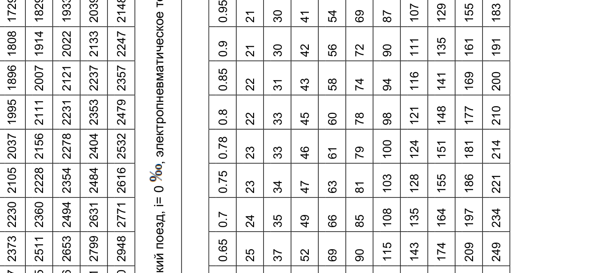
80 766 669 594 536 489 450 417 390 366 345 334 327 310 296 283 271 261 251 242 234 227 220 213 309 297 285 275 266 257 249 242
| 162 | 187 | 213 | 242 | 273 | 306 | 341 | 378 | 417 | 458 | 502 | 548 | 596 | 646 | 698 | 753 | 810 | 869 | 930 | 993 | 1058 | 1126 | 1196 | 1268 |
| 167 | 192 | 220 | 249 | 281 | 315 | 351 | 390 | 430 | 473 | 518 | 566 | 615 | 667 | 721 | 778 | 837 | 898 | 961 | 1026 | 1094 | 1164 | 1236 | 1310 |
| 172 | 198 | 227 | 257 | 290 | 325 | 363 | 403 | 445 | 489 | 536 | 585 | 636 | 690 | 746 | 805 | 866 | 929 | 994 | 1062 | 1132 | 1205 | 1279 | 1356 |
| 178 | 205 | 234 | 266 | 300 | 337 | 375 | 417 | 460 | 506 | 555 | 606 | 659 | 715 | 773 | 834 | 897 | 962 | 1030 | 1101 | 1173 | 1249 | 1326 | 1406 |
| 183 | 212 | 242 | 275 | 311 | 349 | 389 | 432 | 477 | 525 | 575 | 628 | 684 | 742 | 802 | 865 | 931 | 999 | 1070 | 1143 | 1218 | 1296 | 1377 | 1459 |
| 190 | 219 | 251 | 285 | 322 | 362 | 404 | 448 | 496 | 545 | 598 | 653 | 711 | 771 | 834 | 900 | 968 | 1039 | 1112 | 1188 | 1267 | 1348 | 1431 | 1518 |
| 197 | 228 | 261 | 297 | 335 | 376 | 420 | 466 | 516 | 568 | 622 | 680 | 740 | 803 | 869 | 937 | 1008 | 1082 | 1158 | 1238 | 1320 | 1404 | 1491 | 1581 |
| 205 | 237 | 271 | 309 | 349 | 392 | 438 | 486 | 538 | 592 | 649 | 709 | 772 | 838 | 906 | 978 | 1052 | 1129 | 1209 | 1292 | 1378 | 1466 | 1557 | 1650 |
| 213 | 247 | 283 | 322 | 364 | 409 | 457 | 508 | 562 | 619 | 679 | 742 | 807 | 876 | 948 | 1023 | 1101 | 1181 | 1265 | 1352 | 1441 | 1534 | 1629 | 1727 |
| 223 | 258 | 296 | 337 | 381 | 429 | 479 | 532 | 589 | 649 | 711 | 777 | 847 | 919 | 994 | 1073 | 1154 | 1239 | 1327 | 1418 | 1512 | 1608 | 1708 | 1811 |
| 233 | 270 | 310 | 354 | 400 | 450 | 503 | 559 | 619 | 682 | 748 | 817 | 890 | 966 | 1046 | 1128 | 1214 | 1303 | 1396 | 1491 | 1590 | 1691 | 1796 | 1904 |
| 245 | 284 | 327 | 372 | 421 | 474 | 530 | 589 | 652 | 719 | 789 | 862 | 939 | 1019 | 1103 | 1190 | 1281 | 1375 | 1472 | 1573 | 1677 | 1784 | 1895 | 2008 |
| 250 | 290 | 334 | 380 | 431 | 484 | 542 | 603 | 667 | 735 | 806 | 881 | 960 | 1042 | 1128 | 1217 | 1310 | 1406 | 1505 | 1608 | 1715 | 1824 | 1937 | 2053 |
| 259 | 300 | 345 | 393 | 445 | 501 | 560 | 624 | 690 | 761 | 835 | 912 | 994 | 1079 | 1168 | 1260 | 1356 | 1455 | 1558 | 1665 | 1775 | 1888 | 2005 | 2125 |
| 274 | 318 | 366 | 417 | 473 | 532 | 595 | 662 | 733 | 808 | 887 | 970 | 1056 | 1147 | 1241 | 1339 | 1441 | 1547 | 1656 | 1769 | 1886 | 2006 | 2130 | 2257 |
| 292 | 339 | 390 | 445 | 504 | 567 | 635 | 707 | 783 | 863 | 947 | 1035 | 1128 | 1224 | 1325 | 1430 | 1538 | 1651 | 1768 | 1888 | 2013 | 2141 | 2273 | 2408 |
| 312 | 363 | 417 | 477 | 540 | 609 | 681 | 758 | 840 | 926 | 1016 | 1111 | 1210 | 1314 | 1422 | 1534 | 1651 | 1772 | 1896 | 2025 | 2159 | 2296 | 2437 | 2582 |
| 336 | 391 | 450 | 514 | 583 | 657 | 735 | 819 | 907 | 1000 | 1097 | 1200 | 1307 | 1419 | 1535 | 1656 | 1782 | 1912 | 2047 | 2186 | 2329 | 2476 | 2628 | 2784 |
| 365 | 424 | 489 | 559 | 634 | 714 | 800 | 890 | 986 | 1087 | 1194 | 1305 | 1422 | 1543 | 1669 | 1801 | 1937 | 2078 | 2224 | 2374 | 2529 | 2689 | 2853 | 3021 |
| 399 | 465 | 536 | 613 | 695 | 784 | 878 | 977 | 1082 | 1193 | 1310 | 1432 | 1560 | 1693 | 1831 | 1975 | 2124 | 2278 | 2437 | 2601 | 2770 | 2944 | 3122 | 3305 |
| 442 | 515 | 594 | 680 | 772 | 869 | 974 | 1084 | 1201 | 1324 | 1453 | 1588 | 1729 | 1876 | 2029 | 2188 | 2352 | 2522 | 2697 | 2878 | 3063 | 3254 | 3450 | 3651 |
| 497 | 579 | 669 | 765 | 868 | 978 | 1095 | 1220 | 1351 | 1489 | 1633 | 1785 | 1943 | 2107 | 2278 | 2455 | 2638 | 2827 | 3022 | 3223 | 3429 | 3641 | 3858 | 4080 |
| 569 | 663 | 766 | 876 | 994 | 1120 | 1254 | 1396 | 1545 | 1703 | 1867 | 2040 | 2219 | 2406 | 2599 | 2800 | 3007 | 3220 | 3440 | 3666 | 3898 | 4136 | 4380 | 4629 |
| 70 | 75 | 80 | 85 | 90 | 95 | 100 | 105 | 110 | 115 | 120 | 125 | 130 | 135 | 140 | 145 | 150 | 155 | 160 | 165 | 170 | 175 | 180 | 185 |
349 335 322 311 300 290 281 273 392 376 362 349 337 325 315 306 438 420 404 389 375 363 351 341 486 466 448 432 417 403 390 378 538 516 496 477 460 445 430 417 592 568 545 525 506 489 473 458 649 622 598 575 555 536 518 502 709 680 653 628 606 585 566 548 772 740 711 684 659 636 615 596 838 803 771 742 715 690 667 646 906 869 834 802 773 746 721 698
937 900 865 834 805 778 753
931 897 866 837 810
962 929 898 869
961 930
150
200 5406 4776 4281 3881 3551 3274 3039 2837 2660 2505 2421 2368 2246 2136 2037 1948 1866 1791 1723 1659 1601 1547 1496
| 1342 | 1418 | 1496 |
| 1387 | 1466 | 1547 |
| 1436 | 1517 | 1601 |
| 1488 | 1573 | 1659 |
| 1545 | 1632 | 1723 |
| 1606 | 1698 | 1791 |
| 1673 | 1768 | 1866 |
| 1747 | 1846 | 1948 |
| 1828 | 1931 | 2037 |
| 1916 | 2025 | 2136 |
| 2015 | 2129 | 2246 |
| 2125 | 2245 | 2368 |
| 2173 | 2295 | 2421 |
| 2249 | 2375 | 2505 |
| 2388 | 2523 | 2660 |
| 2547 | 2690 | 2837 |
| 2730 | 2883 | 3039 |
| 2943 | 3107 | 3274 |
| 3194 | 3370 | 3551 |
| 3493 | 3685 | 3881 |
| 3856 | 4066 | 4281 |
| 4307 | 4539 | 4776 |
| 4883 | 5142 | 5406 |
| 190 | 195 | 200 |
| Расчетный тормозной коэффициент | 1.35 | 18 | 25 | 34 | 44 | 55 | 69 | 84 | 100 | 119 | 140 | 162 | 187 | 213 | 242 | 273 | 306 | 341 |
| 1.3 | 18 | 25 | 34 | 45 | 57 | 70 | 86 | 103 | 122 | 144 | 167 | 192 | 220 | 249 | 281 | 315 | 351 | |
| 1.25 | 18 | 26 | 35 | 46 | 58 | 72 | 88 | 106 | 126 | 148 | 172 | 198 | 227 | 257 | 290 | 325 | 363 | |
| 1.2 | 19 | 26 | 36 | 47 | 59 | 74 | 91 | 109 | 130 | 153 | 178 | 205 | 234 | 266 | 300 | 337 | 375 | |
| 1.15 | 19 | 27 | 36 | 48 | 61 | 76 | 93 | 112 | 134 | 158 | 183 | 212 | 242 | 275 | 311 | 349 | 389 | |
| 1.1 | 19 | 27 | 37 | 49 | 63 | 78 | 96 | 116 | 138 | 163 | 190 | 219 | 251 | 285 | 322 | 362 | 404 | |
| 1.05 | 20 | 28 | 38 | 50 | 65 | 81 | 99 | 120 | 143 | 169 | 197 | 228 | 261 | 297 | 335 | 376 | 420 | |
| 1 | 20 | 29 | 39 | 52 | 67 | 84 | 103 | 125 | 149 | 175 | 205 | 237 | 271 | 309 | 349 | 392 | 438 | |
| 0.95 | 21 | 30 | 41 | 54 | 69 | 87 | 107 | 129 | 155 | 183 | 213 | 247 | 283 | 322 | 364 | 409 | 457 | |
| 0.9 | 21 | 30 | 42 | 56 | 72 | 90 | 111 | 135 | 161 | 191 | 223 | 258 | 296 | 337 | 381 | 429 | 479 | |
| 0.85 | 22 | 31 | 43 | 58 | 74 | 94 | 116 | 141 | 169 | 200 | 233 | 270 | 310 | 354 | 400 | 450 | 503 | |
| 0.8 | 22 | 33 | 45 | 60 | 78 | 98 | 121 | 148 | 177 | 210 | 245 | 284 | 327 | 372 | 421 | 474 | 530 | |
| 0.78 | 23 | 33 | 46 | 61 | 79 | 100 | 124 | 151 | 181 | 214 | 250 | 290 | 334 | 380 | 431 | 484 | 542 | |
| 0.75 | 23 | 34 | 47 | 63 | 81 | 103 | 128 | 155 | 186 | 221 | 259 | 300 | 345 | 393 | 445 | 501 | 560 | |
| 0.7 | 24 | 35 | 49 | 66 | 85 | 108 | 135 | 164 | 197 | 234 | 274 | 318 | 366 | 417 | 473 | 532 | 595 | |
| 0.65 | 25 | 37 | 52 | 69 | 90 | 115 | 143 | 174 | 209 | 249 | 292 | 339 | 390 | 445 | 504 | 567 | 635 | |
| 0.6 | 26 | 39 | 54 | 73 | 96 | 122 | 152 | 186 | 224 | 266 | 312 | 363 | 417 | 477 | 540 | 609 | 681 | |
| 0.55 | 28 | 38 | 49 | 61 | 75 | 90 | 107 | 126 | 146 | 168 | 192 | 217 | 245 | 274 | 305 | 338 | 374 | |
| 0.5 | 30 | 40 | 52 | 66 | 81 | 98 | 118 | 139 | 162 | 187 | 214 | 244 | 276 | 310 | 346 | 385 | 426 | |
| 0.45 | 32 | 43 | 57 | 73 | 90 | 111 | 133 | 158 | 185 | 216 | 248 | 284 | 322 | 363 | 407 | 454 | 504 | |
| 0.4 | 34 | 48 | 64 | 82 | 103 | 128 | 155 | 185 | 219 | 256 | 296 | 340 | 388 | 439 | 493 | 551 | 613 | |
| 0.35 | 39 | 56 | 76 | 100 | 128 | 160 | 197 | 237 | 283 | 333 | 387 | 447 | 512 | 581 | 656 | 735 | 820 | |
| 0.3 | 54 | 80 | 113 | 152 | 199 | 253 | 315 | 384 | 463 | 549 | 644 | 748 | 860 | 981 | 1110 | 1248 | 1394 | |
| V, км/ч | 20 | 25 | 30 | 35 | 40 | 45 | 50 | 55 | 60 | 65 | 70 | 75 | 80 | 85 | 90 | 95 | 100 |
V,
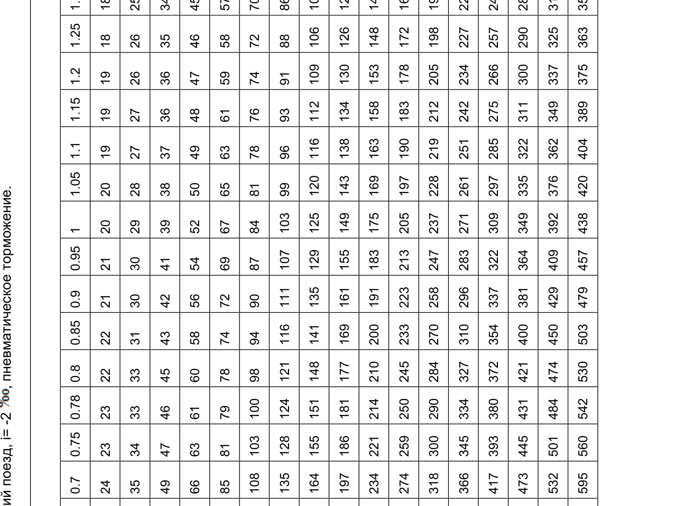
438 420 404 389 375 363 351 341
115 1884 1104 821 670 563 491 926 863 808 761 735 719 682 649 619 592 568 545 525 506 489 473 458 120 2064 1209 897 732 613 534 1016 947 887 835 806 789 748 711 649 622 598 575 555 536 518 502
| Расчетный тормозной коэффициент | 1.35 |
| 1.3 | |
| 1.25 | |
| 1.2 | |
| 1.15 | |
| 1.1 | |
| 1.05 | |
| 1 | |
| 0.95 | |
| 0.9 | |
| 0.85 | |
| 0.8 | |
| 0.78 | |
| 0.75 | |
| 0.7 | |
| 0.65 | |
| 0.6 | |
| 0.55 | |
| 0.5 | |
| 0.45 | |
| 0.4 | |
| 0.35 | |
| 0.3 | |
| V, км/ч |
| 378 | 417 | 458 | 502 | 548 | 596 | 646 | 698 | 753 | 810 | 869 | 930 | 993 | 1058 | 1126 | 1196 | 1268 | 1342 | 1418 | 1496 |
| 390 | 430 | 473 | 518 | 566 | 615 | 667 | 721 | 778 | 837 | 898 | 961 | 1026 | 1094 | 1164 | 1236 | 1310 | 1387 | 1466 | 1547 |
| 403 | 445 | 489 | 536 | 585 | 636 | 690 | 746 | 805 | 866 | 929 | 994 | 1062 | 1132 | 1205 | 1279 | 1356 | 1436 | 1517 | 1601 |
| 417 | 460 | 506 | 555 | 606 | 659 | 715 | 773 | 834 | 897 | 962 | 1030 | 1101 | 1173 | 1249 | 1326 | 1406 | 1488 | 1573 | 1659 |
| 432 | 477 | 525 | 575 | 628 | 684 | 742 | 802 | 865 | 931 | 999 | 1070 | 1143 | 1218 | 1296 | 1377 | 1459 | 1545 | 1632 | 1723 |
| 448 | 496 | 545 | 598 | 653 | 711 | 771 | 834 | 900 | 968 | 1039 | 1112 | 1188 | 1267 | 1348 | 1431 | 1518 | 1606 | 1698 | 1791 |
| 466 | 516 | 568 | 622 | 680 | 740 | 803 | 869 | 937 | 1008 | 1082 | 1158 | 1238 | 1320 | 1404 | 1491 | 1581 | 1673 | 1768 | 1866 |
| 486 | 538 | 592 | 649 | 709 | 772 | 838 | 906 | 978 | 1052 | 1129 | 1209 | 1292 | 1378 | 1466 | 1557 | 1650 | 1747 | 1846 | 1948 |
| 508 | 562 | 619 | 679 | 742 | 807 | 876 | 948 | 1023 | 1101 | 1181 | 1265 | 1352 | 1441 | 1534 | 1629 | 1727 | 1828 | 1931 | 2037 |
| 532 | 589 | 649 | 711 | 777 | 847 | 919 | 994 | 1073 | 1154 | 1239 | 1327 | 1418 | 1512 | 1608 | 1708 | 1811 | 1916 | 2025 | 2136 |
| 559 | 619 | 682 | 748 | 817 | 890 | 966 | 1046 | 1128 | 1214 | 1303 | 1396 | 1491 | 1590 | 1691 | 1796 | 1904 | 2015 | 2129 | 2246 |
| 589 | 652 | 719 | 789 | 862 | 939 | 1019 | 1103 | 1190 | 1281 | 1375 | 1472 | 1573 | 1677 | 1784 | 1895 | 2008 | 2125 | 2245 | 2368 |
| 603 | 667 | 735 | 806 | 881 | 960 | 1042 | 1128 | 1217 | 1310 | 1406 | 1505 | 1608 | 1715 | 1824 | 1937 | 2053 | 2173 | 2295 | 2421 |
| 624 | 690 | 761 | 835 | 912 | 994 | 1079 | 1168 | 1260 | 1356 | 1455 | 1558 | 1665 | 1775 | 1888 | 2005 | 2125 | 2249 | 2375 | 2505 |
| 662 | 733 | 808 | 887 | 970 | 1056 | 1147 | 1241 | 1339 | 1441 | 1547 | 1656 | 1769 | 1886 | 2006 | 2130 | 2257 | 2388 | 2523 | 2660 |
| 707 | 783 | 863 | 947 | 1035 | 1128 | 1224 | 1325 | 1430 | 1538 | 1651 | 1768 | 1888 | 2013 | 2141 | 2273 | 2408 | 2547 | 2690 | 2837 |
| 758 | 840 | 926 | 1016 | 1111 | 1210 | 1314 | 1422 | 1534 | 1651 | 1772 | 1896 | 2025 | 2159 | 2296 | 2437 | 2582 | 2730 | 2883 | 3039 |
| 411 | 450 | 491 | 534 | 579 | 626 | 676 | 727 | 780 | 836 | 893 | 952 | 1014 | 1077 | 1143 | 1210 | 1280 | 1351 | 1424 | 1500 |
| 469 | 515 | 563 | 613 | 666 | 721 | 779 | 839 | 902 | 967 | 1034 | 1104 | 1176 | 1250 | 1327 | 1406 | 1487 | 1571 | 1657 | 1746 |
| 556 | 612 | 670 | 732 | 796 | 863 | 933 | 1007 | 1083 | 1162 | 1244 | 1328 | 1416 | 1507 | 1600 | 1696 | 1795 | 1897 | 2001 | 2108 |
| 679 | 748 | 821 | 897 | 977 | 1061 | 1149 | 1240 | 1335 | 1433 | 1535 | 1641 | 1750 | 1863 | 1978 | 2098 | 2221 | 2347 | 2476 | 2609 |
| 909 | 1004 | 1104 | 1209 | 1318 | 1433 | 1552 | 1677 | 1806 | 1940 | 2078 | 2222 | 2369 | 2522 | 2678 | 2839 | 3005 | 3174 | 3348 | 3526 |
| 1549 | 1713 | 1884 | 2064 | 2252 | 2447 | 2650 | 2861 | 3079 | 3304 | 3536 | 3775 | 4021 | 4272 | 4530 | 4794 | 5064 | 5339 | 5619 | 5905 |
| 105 | 110 | 115 | 120 | 125 | 130 | 135 | 140 | 145 | 150 | 155 | 160 | 165 | 170 | 175 | 180 | 185 | 190 | 195 | 200 |
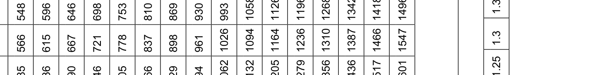
906 869 834 802 773 746 721 698
937 900 865 834 805 778 753
931 897 866 837 810
1772 1651 1547 1455 1406 1375 1303 1239 1181 1129 1082 1039 999 962 929 898 869
1896 1768 1656 1558 1505 1472 1396 1327 1265 1209 1158 1112 1070 1030 994 961 930
, электропневматическое торможение.
0.85 0.9 1.05 1.1 1.15 1.2 1.25 1.3 1.35
152
30 95 84 75 69 64 59 56 53 50 48 47 46 44 43 41 40 39 38 37 36 35 35 34 53 51 50 49 47 46 45 44
| 18 | 25 | 34 | 44 | 56 | 70 | 85 | 102 | 121 | 142 | 165 | 190 | 217 | 246 | 277 | 310 | 346 | 384 | 424 | 466 | 510 | 557 | 606 | 657 |
| 18 | 26 | 35 | 45 | 57 | 71 | 87 | 105 | 124 | 146 | 170 | 195 | 223 | 253 | 286 | 320 | 357 | 396 | 438 | 481 | 527 | 575 | 626 | 679 |
| 19 | 26 | 35 | 46 | 59 | 73 | 89 | 108 | 128 | 150 | 175 | 202 | 230 | 262 | 295 | 331 | 369 | 410 | 452 | 498 | 545 | 595 | 648 | 703 |
| 19 | 27 | 36 | 47 | 60 | 75 | 92 | 111 | 132 | 155 | 180 | 208 | 238 | 271 | 305 | 342 | 382 | 424 | 469 | 516 | 565 | 617 | 671 | 728 |
| 19 | 27 | 37 | 49 | 62 | 77 | 95 | 114 | 136 | 160 | 187 | 215 | 247 | 280 | 316 | 355 | 396 | 440 | 486 | 535 | 586 | 640 | 697 | 756 |
| 20 | 28 | 38 | 50 | 64 | 80 | 98 | 118 | 141 | 166 | 193 | 223 | 256 | 291 | 328 | 369 | 412 | 457 | 505 | 556 | 610 | 666 | 725 | 787 |
| 20 | 29 | 39 | 51 | 66 | 82 | 101 | 122 | 146 | 172 | 201 | 232 | 266 | 302 | 342 | 384 | 428 | 476 | 526 | 579 | 635 | 694 | 756 | 820 |
| 20 | 29 | 40 | 53 | 68 | 85 | 105 | 127 | 152 | 179 | 209 | 241 | 277 | 315 | 356 | 400 | 447 | 497 | 549 | 605 | 663 | 725 | 789 | 857 |
| 21 | 30 | 41 | 55 | 70 | 88 | 109 | 132 | 158 | 186 | 218 | 252 | 289 | 329 | 372 | 418 | 467 | 519 | 575 | 633 | 694 | 759 | 826 | 897 |
| 21 | 31 | 43 | 57 | 73 | 92 | 113 | 138 | 165 | 195 | 228 | 263 | 302 | 345 | 390 | 438 | 490 | 545 | 603 | 664 | 729 | 796 | 867 | 942 |
| 22 | 32 | 44 | 59 | 76 | 96 | 118 | 144 | 172 | 204 | 239 | 276 | 318 | 362 | 410 | 461 | 515 | 573 | 634 | 699 | 767 | 838 | 913 | 991 |
| 23 | 33 | 46 | 61 | 79 | 100 | 124 | 151 | 181 | 214 | 251 | 291 | 335 | 382 | 432 | 486 | 544 | 605 | 670 | 738 | 810 | 885 | 965 | 1047 |
| 23 | 34 | 47 | 62 | 81 | 102 | 127 | 154 | 185 | 219 | 257 | 297 | 342 | 390 | 442 | 497 | 556 | 619 | 685 | 755 | 829 | 906 | 987 | 1072 |
| 23 | 34 | 48 | 64 | 83 | 105 | 130 | 159 | 191 | 226 | 265 | 308 | 354 | 404 | 457 | 515 | 576 | 641 | 709 | 782 | 858 | 939 | 1023 | 1110 |
| 24 | 36 | 50 | 67 | 88 | 111 | 138 | 168 | 202 | 240 | 281 | 327 | 376 | 429 | 486 | 547 | 612 | 682 | 755 | 832 | 914 | 999 | 1089 | 1182 |
| 25 | 38 | 53 | 71 | 93 | 118 | 146 | 179 | 215 | 255 | 300 | 348 | 401 | 458 | 519 | 585 | 655 | 729 | 808 | 890 | 978 | 1069 | 1165 | 1265 |
| 27 | 40 | 56 | 75 | 98 | 125 | 156 | 191 | 230 | 274 | 322 | 374 | 431 | 492 | 558 | 629 | 704 | 784 | 869 | 958 | 1052 | 1150 | 1253 | 1361 |
| 28 | 42 | 59 | 80 | 105 | 134 | 168 | 206 | 248 | 295 | 347 | 404 | 466 | 532 | 604 | 680 | 762 | 849 | 940 | 1037 | 1139 | 1246 | 1357 | 1474 |
| 30 | 45 | 64 | 87 | 114 | 145 | 182 | 223 | 270 | 321 | 378 | 440 | 507 | 580 | 659 | 742 | 832 | 926 | 1026 | 1132 | 1243 | 1360 | 1481 | 1609 |
| 32 | 48 | 69 | 94 | 124 | 159 | 199 | 245 | 296 | 353 | 415 | 484 | 558 | 639 | 725 | 818 | 916 | 1021 | 1131 | 1248 | 1370 | 1498 | 1632 | 1772 |
| 34 | 53 | 75 | 103 | 137 | 176 | 221 | 272 | 329 | 392 | 462 | 539 | 622 | 712 | 808 | 912 | 1022 | 1138 | 1261 | 1391 | 1527 | 1670 | 1819 | 1974 |
| 38 | 58 | 84 | 115 | 153 | 197 | 248 | 306 | 371 | 443 | 523 | 609 | 704 | 806 | 915 | 1032 | 1156 | 1288 | 1427 | 1574 | 1728 | 1889 | 2057 | 2231 |
| 42 | 66 | 95 | 132 | 175 | 226 | 285 | 352 | 427 | 511 | 603 | 703 | 812 | 930 | 1056 | 1191 | 1335 | 1487 | 1647 | 1816 | 1992 | 2177 | 2369 | 2569 |
| 20 | 25 | 30 | 35 | 40 | 45 | 50 | 55 | 60 | 65 | 70 | 75 | 80 | 85 | 90 | 95 | 100 | 105 | 110 | 115 | 120 | 125 | 130 | 135 |
68 66 64 62 60 59 57 56 85 82 80 77 75 73 71 70 105 101 98 95 92 89 87 85 127 122 118 114 111 108 105 102 152 146 141 136 132 128 124 121 179 172 166 160 155 150 146 142 209 201 193 187 180 175 170 165 241 232 223 215 208 202 195 190 277 266 256 247 238 230 223 217 315 302 291 280 271 262 253 246 356 342 328 316 305 295 286 277 400 384 369 355 342 331 320 310 447 428 412 396 382 369 357 346 497 476 457 440 424 410 396 384 549 526 505 486 469 452 438 424 605 579 556 535 516 498 481 466 663 635 610 586 565 545 527 510 725 694 666 640 617 595 575 557 789 756 725 697 671 648 626 606 857 820 787 756 728 703 679 657 150 3214 2796 2477 2225 2021 1853 1711 1591 1487 1396 1347 1317 1246 1183 1127 1076 1030 988 950 914 882 852 824 3443 2997 2656 2387 2169 1988 1837 1707 1596 1499 1446 1414 1338 1270 1210 1155 1106 1060 1019 981 946 914 884
| 710 | 766 | 824 | 884 | 946 | 1010 | 1077 | 1146 | 1217 | 1290 | 1366 | 1444 | 1523 |
| 734 | 792 | 852 | 914 | 978 | 1045 | 1114 | 1185 | 1259 | 1335 | 1413 | 1493 | 1576 |
| 760 | 820 | 882 | 946 | 1013 | 1082 | 1154 | 1228 | 1304 | 1382 | 1463 | 1547 | 1632 |
| 788 | 850 | 914 | 981 | 1050 | 1122 | 1197 | 1273 | 1352 | 1434 | 1518 | 1604 | 1693 |
| 818 | 883 | 950 | 1019 | 1091 | 1166 | 1243 | 1323 | 1405 | 1490 | 1577 | 1667 | 1759 |
| 851 | 918 | 988 | 1060 | 1136 | 1213 | 1294 | 1377 | 1462 | 1551 | 1641 | 1735 | 1830 |
| 887 | 957 | 1030 | 1106 | 1184 | 1265 | 1349 | 1436 | 1525 | 1617 | 1711 | 1809 | 1909 |
| 927 | 1000 | 1076 | 1155 | 1237 | 1322 | 1410 | 1500 | 1593 | 1689 | 1788 | 1890 | 1994 |
| 971 | 1047 | 1127 | 1210 | 1296 | 1385 | 1476 | 1571 | 1669 | 1769 | 1873 | 1979 | 2088 |
| 1019 | 1100 | 1183 | 1270 | 1361 | 1454 | 1550 | 1650 | 1752 | 1858 | 1967 | 2078 | 2192 |
| 1073 | 1158 | 1246 | 1338 | 1433 | 1531 | 1633 | 1737 | 1845 | 1956 | 2071 | 2188 | 2308 |
| 1134 | 1223 | 1317 | 1414 | 1514 | 1618 | 1725 | 1835 | 1949 | 2067 | 2187 | 2311 | 2438 |
| 1160 | 1252 | 1347 | 1446 | 1549 | 1655 | 1765 | 1878 | 1994 | 2114 | 2238 | 2364 | 2494 |
| 1202 | 1297 | 1396 | 1499 | 1605 | 1715 | 1829 | 1946 | 2067 | 2191 | 2318 | 2449 | 2583 |
| 1280 | 1381 | 1487 | 1596 | 1709 | 1826 | 1947 | 2071 | 2200 | 2331 | 2467 | 2606 | 2748 |
| 1369 | 1478 | 1591 | 1707 | 1828 | 1953 | 2082 | 2215 | 2352 | 2493 | 2637 | 2785 | 2937 |
| 1473 | 1590 | 1711 | 1837 | 1967 | 2101 | 2239 | 2382 | 2528 | 2679 | 2834 | 2992 | 3155 |
| 1595 | 1722 | 1853 | 1988 | 2129 | 2273 | 2423 | 2577 | 2735 | 2897 | 3064 | 3234 | 3409 |
| 1741 | 1878 | 2021 | 2169 | 2321 | 2479 | 2641 | 2808 | 2979 | 3155 | 3336 | 3521 | 3710 |
| 1917 | 2068 | 2225 | 2387 | 2554 | 2727 | 2904 | 3087 | 3274 | 3467 | 3664 | 3865 | 4071 |
| 2136 | 2303 | 2477 | 2656 | 2841 | 3032 | 3228 | 3430 | 3637 | 3849 | 4066 | 4287 | 4514 |
| 2413 | 2601 | 2796 | 2997 | 3205 | 3418 | 3637 | 3863 | 4093 | 4329 | 4570 | 4817 | 5068 |
| 2777 | 2992 | 3214 | 3443 | 3679 | 3921 | 4170 | 4425 | 4685 | 4952 | 5224 | 5501 | 5784 |
| 140 | 145 | 150 | 155 | 160 | 165 | 170 | 175 | 180 | 185 | 190 | 195 | 200 |
| Расчетный тормозной коэффициент | 1.35 | 29 | 40 | 51 | 65 | 80 | 96 | 114 |
| 1.3 | 30 | 40 | 52 | 66 | 81 | 98 | 117 | |
| 1.25 | 30 | 41 | 53 | 67 | 82 | 100 | 119 | |
| 1.2 | 30 | 41 | 54 | 68 | 84 | 102 | 122 | |
| 1.15 | 31 | 42 | 55 | 69 | 86 | 104 | 125 | |
| 1.1 | 31 | 43 | 56 | 71 | 88 | 107 | 128 | |
| 1.05 | 32 | 43 | 57 | 72 | 90 | 109 | 132 | |
| 1 | 32 | 44 | 58 | 74 | 92 | 112 | 135 | |
| 0.95 | 33 | 45 | 59 | 76 | 95 | 116 | 140 | |
| 0.9 | 33 | 46 | 61 | 78 | 97 | 120 | 144 | |
| 0.85 | 34 | 47 | 62 | 80 | 101 | 124 | 150 | |
| 0.8 | 35 | 48 | 64 | 83 | 104 | 128 | 156 | |
| 0.78 | 35 | 49 | 65 | 84 | 106 | 130 | 158 | |
| 0.75 | 35 | 50 | 66 | 86 | 108 | 134 | 163 | |
| 0.7 | 36 | 51 | 69 | 89 | 113 | 140 | 170 | |
| 0.65 | 37 | 53 | 71 | 93 | 118 | 147 | 179 | |
| 0.6 | 39 | 55 | 75 | 98 | 124 | 155 | 190 | |
| 0.55 | 40 | 58 | 78 | 103 | 132 | 165 | 203 | |
| 0.5 | 42 | 61 | 83 | 110 | 141 | 177 | 218 | |
| 0.45 | 44 | 64 | 89 | 118 | 152 | 192 | 236 | |
| 0.4 | 47 | 69 | 96 | 128 | 166 | 210 | 260 | |
| 0.35 | 51 | 75 | 105 | 142 | 184 | 234 | 291 | |
| 0.3 | 56 | 84 | 118 | 160 | 209 | 266 | 332 | |
| V, км/ч | 20 | 25 | 30 | 35 | 40 | 45 | 50 |
3679 3205 2841 2554 2321 2129 1967 1828 1709 1605 1549 1514 1433 1361 1296 1237 1184 1136 1091 1050 1013 978 946 3921 3418 3032 2727 2479 2273 2101 1953 1826 1715 1655 1618 1531 1454 1385 1322 1265 1213 1166 1122 1082 1045 1010 4170 3637 3228 2904 2641 2423 2239 2082 1947 1829 1765 1725 1633 1550 1476 1410 1349 1294 1243 1197 1154 1114 1077 4425 3863 3430 3087 2808 2577 2382 2215 2071 1946 1878 1835 1737 1650 1571 1500 1436 1377 1323 1273 1228 1185 1146 4685 4093 3637 3274 2979 2735 2528 2352 2200 2067 1994 1949 1845 1752 1669 1593 1525 1462 1405 1352 1304 1259 1217 4952 4329 3849 3467 3155 2897 2679 2493 2331 2191 2114 2067 1956 1858 1769 1689 1617 1551 1490 1434 1382 1335 1290 5224 4570 4066 3664 3336 3064 2834 2637 2467 2318 2238 2187 2071 1967 1873 1788 1711 1641 1577 1518 1463 1413 1366 5501 4817 4287 3865 3521 3234 2992 2785 2606 2449 2364 2311 2188 2078 1979 1890 1809 1735 1667 1604 1547 1493 1444 5784 5068 4514 4071 3710 3409 3155 2937 2748 2583 2494 2438 2308 2192 2088 1994 1909 1830 1759 1693 1632 1576 1523
1.05 1.1 1.15 1.2 1.25 1.3 1.35
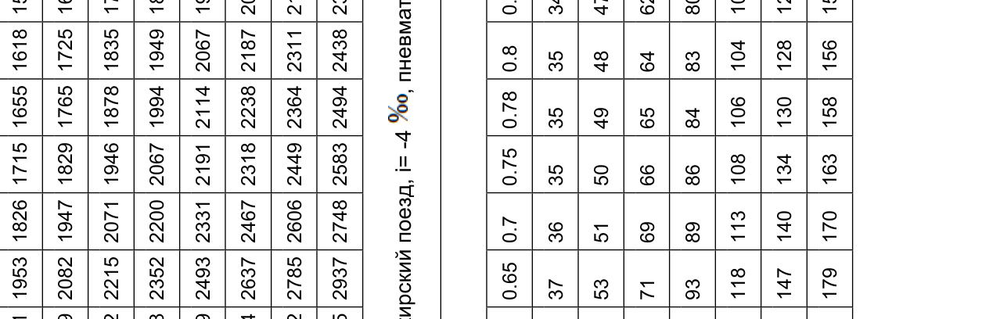
154
65 582 506 450 406 372 344 321 301 284 270 262 257 246 236 228 220 213 206 200 195 190 185 181 253 245 237 230 224 218 212 207
| 135 | 157 | 181 | 207 | 235 | 266 | 298 | 333 | 370 | 409 | 450 | 494 | 540 | 588 | 638 | 691 | 746 | 803 | 863 | 924 | 989 | 1055 | 1124 | 1195 |
| 138 | 160 | 185 | 212 | 241 | 273 | 306 | 342 | 380 | 420 | 463 | 508 | 556 | 605 | 657 | 712 | 769 | 828 | 890 | 953 | 1020 | 1088 | 1159 | 1233 |
| 141 | 164 | 190 | 218 | 248 | 280 | 315 | 352 | 391 | 433 | 477 | 524 | 573 | 624 | 678 | 735 | 794 | 855 | 919 | 985 | 1054 | 1125 | 1198 | 1274 |
| 144 | 168 | 195 | 224 | 255 | 288 | 324 | 362 | 403 | 446 | 492 | 541 | 591 | 645 | 701 | 759 | 820 | 884 | 950 | 1019 | 1090 | 1164 | 1240 | 1319 |
| 148 | 173 | 200 | 230 | 262 | 297 | 334 | 374 | 416 | 461 | 509 | 559 | 612 | 667 | 725 | 786 | 850 | 916 | 984 | 1056 | 1130 | 1206 | 1286 | 1368 |
| 152 | 178 | 206 | 237 | 270 | 307 | 345 | 387 | 431 | 477 | 527 | 579 | 634 | 692 | 752 | 815 | 881 | 950 | 1022 | 1096 | 1173 | 1253 | 1335 | 1421 |
| 156 | 183 | 213 | 245 | 280 | 317 | 357 | 400 | 446 | 495 | 546 | 601 | 658 | 718 | 781 | 847 | 916 | 988 | 1063 | 1140 | 1221 | 1304 | 1390 | 1479 |
| 161 | 189 | 220 | 253 | 289 | 329 | 371 | 416 | 463 | 514 | 568 | 625 | 685 | 748 | 814 | 883 | 955 | 1030 | 1108 | 1189 | 1273 | 1360 | 1450 | 1542 |
| 166 | 195 | 228 | 263 | 300 | 341 | 385 | 432 | 482 | 536 | 592 | 652 | 714 | 780 | 849 | 922 | 997 | 1076 | 1157 | 1242 | 1330 | 1421 | 1516 | 1613 |
| 172 | 203 | 236 | 273 | 313 | 356 | 402 | 451 | 504 | 560 | 619 | 681 | 747 | 816 | 889 | 965 | 1044 | 1127 | 1213 | 1302 | 1394 | 1490 | 1589 | 1691 |
| 179 | 211 | 246 | 285 | 326 | 372 | 420 | 472 | 527 | 586 | 649 | 715 | 784 | 857 | 933 | 1013 | 1097 | 1184 | 1274 | 1368 | 1466 | 1566 | 1671 | 1778 |
| 186 | 220 | 257 | 298 | 342 | 390 | 441 | 496 | 554 | 616 | 682 | 752 | 825 | 902 | 983 | 1068 | 1156 | 1248 | 1344 | 1443 | 1546 | 1652 | 1762 | 1876 |
| 190 | 224 | 262 | 304 | 349 | 397 | 450 | 506 | 566 | 630 | 697 | 768 | 843 | 922 | 1005 | 1092 | 1182 | 1276 | 1374 | 1476 | 1581 | 1690 | 1802 | 1919 |
| 195 | 231 | 270 | 313 | 360 | 410 | 464 | 522 | 585 | 651 | 721 | 794 | 872 | 954 | 1040 | 1130 | 1223 | 1321 | 1422 | 1528 | 1637 | 1750 | 1866 | 1987 |
| 205 | 243 | 284 | 330 | 380 | 433 | 491 | 553 | 619 | 690 | 764 | 843 | 926 | 1013 | 1105 | 1200 | 1300 | 1404 | 1512 | 1624 | 1741 | 1861 | 1985 | 2113 |
| 216 | 256 | 301 | 350 | 403 | 460 | 522 | 589 | 660 | 735 | 815 | 899 | 988 | 1082 | 1180 | 1282 | 1389 | 1500 | 1616 | 1736 | 1860 | 1989 | 2122 | 2259 |
| 229 | 273 | 321 | 373 | 430 | 492 | 559 | 630 | 707 | 788 | 874 | 965 | 1061 | 1161 | 1267 | 1377 | 1492 | 1612 | 1737 | 1866 | 2000 | 2138 | 2281 | 2428 |
| 245 | 292 | 344 | 401 | 463 | 530 | 602 | 680 | 762 | 851 | 944 | 1043 | 1147 | 1256 | 1370 | 1490 | 1615 | 1745 | 1880 | 2019 | 2164 | 2314 | 2468 | 2627 |
| 264 | 315 | 372 | 434 | 502 | 575 | 654 | 739 | 830 | 926 | 1028 | 1136 | 1250 | 1369 | 1495 | 1625 | 1762 | 1904 | 2051 | 2203 | 2361 | 2524 | 2693 | 2866 |
| 287 | 344 | 406 | 475 | 550 | 631 | 718 | 812 | 912 | 1019 | 1132 | 1251 | 1377 | 1509 | 1647 | 1791 | 1941 | 2098 | 2260 | 2428 | 2602 | 2781 | 2966 | 3156 |
| 317 | 380 | 450 | 526 | 610 | 701 | 799 | 904 | 1016 | 1135 | 1262 | 1395 | 1536 | 1683 | 1837 | 1999 | 2166 | 2341 | 2521 | 2709 | 2902 | 3101 | 3307 | 3518 |
| 355 | 426 | 506 | 593 | 689 | 792 | 903 | 1023 | 1151 | 1286 | 1430 | 1582 | 1741 | 1908 | 2083 | 2266 | 2456 | 2653 | 2857 | 3068 | 3286 | 3511 | 3742 | 3979 |
| 406 | 490 | 582 | 684 | 795 | 915 | 1044 | 1183 | 1332 | 1489 | 1656 | 1832 | 2017 | 2210 | 2413 | 2623 | 2843 | 3070 | 3305 | 3547 | 3798 | 4055 | 4319 | 4590 |
| 55 | 60 | 65 | 70 | 75 | 80 | 85 | 90 | 95 | 100 | 105 | 110 | 115 | 120 | 125 | 130 | 135 | 140 | 145 | 150 | 155 | 160 | 165 | 170 |
289 280 270 262 255 248 241 235 329 317 307 297 288 280 273 266 371 357 345 334 324 315 306 298 416 400 387 374 362 352 342 333 463 446 431 416 403 391 380 370 514 495 477 461 446 433 420 409 568 546 527 509 492 477 463 450 625 601 579 559 541 524 508 494 685 658 634 612 591 573 556 540 748 718 692 667 645 624 605 588 814 781 752 725 701 678 657 638 883 847 815 786 759 735 712 691 955 916 881 850 820 794 769 746
950 916 884 855 828 803
950 919 890 863
953 924
185 5442 4727 4184 3758 3415 3132 2895 2694 2520 2370 2288 2237 2120 2016 1923 1838 1762 1692 1629 1570 1517 1467 1421 5737 4987 4417 3969 3607 3309 3059 2847 2664 2505 2419 2365 2241 2131 2032 1943 1862 1788 1721 1659 1602 1549 1501
| 1268 | 1343 | 1421 | 1501 | 1583 | 1667 |
| 1309 | 1387 | 1467 | 1549 | 1634 | 1721 |
| 1353 | 1433 | 1517 | 1602 | 1690 | 1780 |
| 1400 | 1484 | 1570 | 1659 | 1750 | 1844 |
| 1452 | 1539 | 1629 | 1721 | 1815 | 1913 |
| 1509 | 1599 | 1692 | 1788 | 1887 | 1988 |
| 1570 | 1665 | 1762 | 1862 | 1964 | 2070 |
| 1638 | 1737 | 1838 | 1943 | 2050 | 2160 |
| 1713 | 1816 | 1923 | 2032 | 2144 | 2259 |
| 1796 | 1905 | 2016 | 2131 | 2248 | 2369 |
| 1889 | 2003 | 2120 | 2241 | 2365 | 2492 |
| 1993 | 2114 | 2237 | 2365 | 2495 | 2629 |
| 2038 | 2162 | 2288 | 2419 | 2552 | 2689 |
| 2111 | 2238 | 2370 | 2505 | 2643 | 2785 |
| 2245 | 2381 | 2520 | 2664 | 2811 | 2961 |
| 2400 | 2545 | 2694 | 2847 | 3004 | 3164 |
| 2579 | 2735 | 2895 | 3059 | 3227 | 3400 |
| 2791 | 2959 | 3132 | 3309 | 3491 | 3676 |
| 3044 | 3227 | 3415 | 3607 | 3804 | 4005 |
| 3352 | 3553 | 3758 | 3969 | 4184 | 4404 |
| 3734 | 3957 | 4184 | 4417 | 4655 | 4898 |
| 4223 | 4472 | 4727 | 4987 | 5253 | 5524 |
| 4868 | 5152 | 5442 | 5737 | 6039 | 6345 |
| 175 | 180 | 185 | 190 | 195 | 200 |
| Расчетный тормозной коэффициент | 1.35 | 18 | 26 | 34 | 45 | 57 | 70 | 86 | 103 | 123 | 144 | 167 | 193 | 220 | 250 |
| 1.3 | 18 | 26 | 35 | 46 | 58 | 72 | 88 | 106 | 126 | 148 | 172 | 198 | 227 | 257 | |
| 1.25 | 19 | 27 | 36 | 47 | 60 | 74 | 91 | 109 | 130 | 153 | 178 | 205 | 234 | 266 | |
| 1.2 | 19 | 27 | 37 | 48 | 61 | 76 | 93 | 113 | 134 | 158 | 183 | 212 | 242 | 275 | |
| 1.15 | 19 | 28 | 38 | 49 | 63 | 78 | 96 | 116 | 138 | 163 | 190 | 219 | 251 | 285 | |
| 1.1 | 20 | 28 | 38 | 51 | 65 | 81 | 99 | 120 | 143 | 169 | 197 | 227 | 260 | 296 | |
| 1.05 | 20 | 29 | 40 | 52 | 67 | 84 | 103 | 124 | 149 | 175 | 204 | 236 | 271 | 308 | |
| 1 | 21 | 30 | 41 | 54 | 69 | 87 | 107 | 129 | 154 | 182 | 213 | 246 | 282 | 321 | |
| 0.95 | 21 | 31 | 42 | 56 | 72 | 90 | 111 | 134 | 161 | 190 | 222 | 257 | 295 | 336 | |
| 0.9 | 22 | 32 | 43 | 58 | 74 | 94 | 116 | 140 | 168 | 199 | 232 | 269 | 309 | 352 | |
| 0.85 | 22 | 33 | 45 | 60 | 77 | 98 | 121 | 147 | 176 | 208 | 244 | 283 | 325 | 371 | |
| 0.8 | 23 | 34 | 47 | 63 | 81 | 102 | 127 | 154 | 185 | 219 | 257 | 298 | 343 | 391 | |
| 0.78 | 23 | 34 | 48 | 64 | 83 | 104 | 129 | 158 | 189 | 224 | 263 | 305 | 351 | 400 | |
| 0.75 | 24 | 35 | 49 | 65 | 85 | 108 | 134 | 163 | 196 | 232 | 272 | 316 | 363 | 414 | |
| 0.7 | 25 | 37 | 51 | 69 | 90 | 114 | 141 | 172 | 207 | 246 | 289 | 336 | 386 | 441 | |
| 0.65 | 26 | 38 | 54 | 73 | 95 | 121 | 150 | 184 | 221 | 263 | 309 | 359 | 413 | 472 | |
| 0.6 | 27 | 41 | 57 | 77 | 101 | 129 | 161 | 197 | 237 | 282 | 332 | 386 | 445 | 508 | |
| 0.55 | 29 | 43 | 61 | 83 | 108 | 139 | 173 | 212 | 256 | 305 | 359 | 418 | 482 | 551 | |
| 0.5 | 31 | 46 | 65 | 89 | 117 | 150 | 188 | 231 | 279 | 333 | 392 | 457 | 527 | 603 | |
| 0.45 | 33 | 50 | 71 | 97 | 128 | 165 | 207 | 254 | 308 | 367 | 433 | 504 | 582 | 667 | |
| 0.4 | 36 | 54 | 78 | 107 | 142 | 183 | 230 | 283 | 343 | 410 | 484 | 564 | 652 | 747 | |
| 0.35 | 39 | 60 | 87 | 120 | 160 | 206 | 260 | 321 | 390 | 466 | 550 | 642 | 742 | 851 | |
| 0.3 | 44 | 69 | 100 | 138 | 184 | 238 | 301 | 372 | 452 | 541 | 640 | 747 | 864 | 991 | |
| V, км/ч | 20 | 25 | 30 | 35 | 40 | 45 | 50 | 55 | 60 | 65 | 70 | 75 | 80 | 85 |
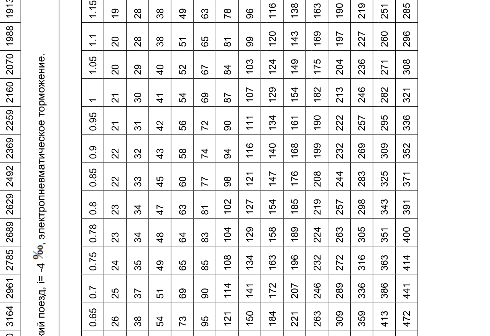
156
100 1426 1224 1074 958 866 791 728 676 631 592 571 558 528 501 478 456 437 419 404 389 375 363 352 531 507 486 466 448 432 417 403 390
| 281 | 315 | 352 | 390 | 431 | 474 | 519 | 566 | 616 | 668 | 722 | 779 | 838 | 899 | 963 | 1028 | 1096 | 1167 | 1239 | 1314 | 1391 | 1470 | 1551 |
| 290 | 326 | 363 | 403 | 445 | 489 | 536 | 585 | 637 | 691 | 747 | 806 | 867 | 930 | 996 | 1064 | 1135 | 1207 | 1282 | 1360 | 1439 | 1521 | 1606 |
| 300 | 337 | 375 | 417 | 460 | 507 | 555 | 606 | 660 | 716 | 774 | 835 | 898 | 964 | 1032 | 1103 | 1176 | 1251 | 1329 | 1409 | 1492 | 1577 | 1664 |
| 311 | 349 | 389 | 432 | 477 | 525 | 576 | 629 | 684 | 742 | 803 | 866 | 932 | 1000 | 1071 | 1145 | 1220 | 1299 | 1380 | 1463 | 1549 | 1637 | 1728 |
| 322 | 361 | 404 | 448 | 495 | 545 | 598 | 653 | 711 | 771 | 835 | 900 | 969 | 1040 | 1114 | 1190 | 1269 | 1350 | 1435 | 1521 | 1610 | 1702 | 1796 |
| 335 | 376 | 419 | 466 | 515 | 567 | 622 | 680 | 740 | 803 | 869 | 938 | 1009 | 1083 | 1160 | 1239 | 1322 | 1407 | 1494 | 1585 | 1677 | 1773 | 1871 |
| 348 | 391 | 437 | 486 | 537 | 591 | 649 | 709 | 772 | 838 | 907 | 978 | 1053 | 1130 | 1211 | 1294 | 1380 | 1468 | 1560 | 1654 | 1751 | 1851 | 1953 |
| 363 | 408 | 456 | 507 | 561 | 618 | 678 | 741 | 807 | 876 | 948 | 1023 | 1101 | 1182 | 1266 | 1353 | 1443 | 1536 | 1632 | 1730 | 1831 | 1936 | 2043 |
| 380 | 427 | 478 | 531 | 588 | 647 | 710 | 776 | 846 | 918 | 994 | 1073 | 1154 | 1239 | 1328 | 1419 | 1513 | 1610 | 1711 | 1814 | 1920 | 2030 | 2142 |
| 399 | 448 | 501 | 558 | 617 | 680 | 746 | 816 | 889 | 965 | 1045 | 1128 | 1214 | 1303 | 1396 | 1492 | 1591 | 1693 | 1799 | 1907 | 2019 | 2134 | 2251 |
| 420 | 472 | 528 | 587 | 650 | 717 | 787 | 860 | 937 | 1018 | 1102 | 1189 | 1280 | 1374 | 1472 | 1573 | 1678 | 1786 | 1897 | 2011 | 2129 | 2250 | 2374 |
| 443 | 499 | 558 | 621 | 687 | 758 | 832 | 910 | 991 | 1077 | 1165 | 1258 | 1354 | 1454 | 1558 | 1665 | 1775 | 1889 | 2007 | 2128 | 2252 | 2380 | 2511 |
| 453 | 510 | 571 | 635 | 704 | 776 | 852 | 931 | 1015 | 1102 | 1193 | 1288 | 1387 | 1489 | 1595 | 1705 | 1818 | 1935 | 2055 | 2179 | 2306 | 2436 | 2570 |
| 470 | 529 | 592 | 659 | 730 | 804 | 883 | 966 | 1053 | 1143 | 1238 | 1336 | 1439 | 1545 | 1655 | 1768 | 1886 | 2007 | 2131 | 2260 | 2391 | 2527 | 2665 |
| 500 | 563 | 631 | 702 | 778 | 858 | 942 | 1031 | 1123 | 1220 | 1321 | 1426 | 1535 | 1648 | 1765 | 1887 | 2012 | 2141 | 2273 | 2410 | 2550 | 2694 | 2841 |
| 535 | 603 | 676 | 752 | 834 | 920 | 1010 | 1105 | 1204 | 1308 | 1416 | 1529 | 1646 | 1767 | 1893 | 2023 | 2157 | 2295 | 2437 | 2583 | 2732 | 2886 | 3044 |
| 577 | 650 | 728 | 811 | 899 | 992 | 1090 | 1192 | 1299 | 1411 | 1528 | 1649 | 1776 | 1906 | 2041 | 2181 | 2325 | 2474 | 2626 | 2783 | 2944 | 3109 | 3278 |
| 626 | 706 | 791 | 881 | 976 | 1077 | 1184 | 1295 | 1411 | 1533 | 1660 | 1792 | 1928 | 2070 | 2217 | 2368 | 2524 | 2685 | 2850 | 3019 | 3193 | 3372 | 3554 |
| 685 | 772 | 866 | 965 | 1070 | 1180 | 1297 | 1419 | 1546 | 1679 | 1818 | 1962 | 2112 | 2266 | 2426 | 2592 | 2762 | 2937 | 3117 | 3301 | 3490 | 3684 | 3882 |
| 757 | 854 | 958 | 1068 | 1184 | 1306 | 1435 | 1570 | 1711 | 1858 | 2011 | 2171 | 2335 | 2506 | 2682 | 2864 | 3051 | 3243 | 3441 | 3643 | 3851 | 4063 | 4280 |
| 849 | 958 | 1074 | 1197 | 1327 | 1464 | 1609 | 1760 | 1918 | 2082 | 2253 | 2431 | 2615 | 2805 | 3001 | 3203 | 3411 | 3625 | 3844 | 4068 | 4298 | 4532 | 4772 |
| 967 | 1091 | 1224 | 1364 | 1513 | 1669 | 1833 | 2005 | 2184 | 2370 | 2564 | 2765 | 2973 | 3188 | 3409 | 3637 | 3871 | 4111 | 4357 | 4609 | 4866 | 5128 | 5396 |
| 1126 | 1271 | 1426 | 1589 | 1762 | 1943 | 2133 | 2332 | 2540 | 2755 | 2979 | 3211 | 3450 | 3697 | 3951 | 4212 | 4479 | 4754 | 5034 | 5321 | 5613 | 5911 | 6214 |
| 90 | 95 | 100 | 105 | 110 | 115 | 120 | 125 | 130 | 135 | 140 | 145 | 150 | 155 | 160 | 165 | 170 | 175 | 180 | 185 | 190 | 195 | 200 |
588 561 537 515 495 477 460 445 431 647 618 591 567 545 525 507 489 474 710 678 649 622 598 576 555 536 519 776 741 709 680 653 629 606 585 566 846 807 772 740 711 684 660 637 616 918 876 838 803 771 742 716 691 668
948 907 869 835 803 774 747 722
938 900 866 835 806 779
932 898 867 838
930 899
963
Расчетный тормозной коэффициент
V, км/ч 0.3 0.35 0.4 0.45 0.5 0.55 0.6 0.65 0.7 0.75 0.78 0.8 0.85 0.9 0.95 1 1.05 1.1 1.15 1.2 1.25 1.3 1.35 20 59 53 49 46 43 41 40 38 37 36 36 35 34 34 33 33 32 32 31 31 30 30 30
| Расчетный тормозной коэффициент | 1.35 | 30 | 40 | 52 | 65 | 81 | 97 | 116 | 137 | 159 | 184 | 210 | 239 | 270 | 303 | 338 | 376 | 416 | 458 | 502 | 549 | 598 |
| 1.3 | 30 | 41 | 53 | 66 | 82 | 99 | 118 | 140 | 163 | 188 | 215 | 245 | 277 | 311 | 348 | 386 | 427 | 471 | 517 | 565 | 616 | |
| 1.25 | 30 | 41 | 54 | 68 | 83 | 101 | 121 | 143 | 167 | 193 | 221 | 252 | 285 | 320 | 358 | 398 | 440 | 485 | 533 | 583 | 636 | |
| 1.2 | 31 | 42 | 54 | 69 | 85 | 103 | 124 | 146 | 171 | 198 | 227 | 259 | 293 | 330 | 369 | 410 | 455 | 501 | 551 | 602 | 657 | |
| 1.15 | 31 | 42 | 55 | 70 | 87 | 106 | 127 | 150 | 176 | 204 | 234 | 267 | 302 | 340 | 381 | 424 | 470 | 518 | 570 | 624 | 680 | |
| 1.1 | 32 | 43 | 56 | 72 | 89 | 108 | 130 | 154 | 181 | 210 | 241 | 275 | 312 | 352 | 394 | 439 | 487 | 537 | 590 | 647 | 706 | |
| 1.05 | 32 | 44 | 58 | 73 | 91 | 111 | 134 | 159 | 186 | 216 | 249 | 285 | 323 | 364 | 408 | 455 | 505 | 558 | 613 | 672 | 734 | |
| 1 | 33 | 45 | 59 | 75 | 93 | 114 | 138 | 164 | 192 | 224 | 258 | 295 | 335 | 378 | 424 | 473 | 525 | 580 | 639 | 700 | 764 | |
| 0.95 | 33 | 46 | 60 | 77 | 96 | 118 | 142 | 169 | 199 | 232 | 268 | 307 | 349 | 394 | 442 | 493 | 548 | 606 | 667 | 731 | 799 | |
| 0.9 | 34 | 47 | 62 | 79 | 99 | 122 | 147 | 176 | 207 | 241 | 279 | 320 | 364 | 411 | 461 | 515 | 573 | 634 | 698 | 766 | 837 | |
| 0.85 | 34 | 48 | 63 | 82 | 102 | 126 | 153 | 183 | 215 | 252 | 291 | 334 | 380 | 430 | 483 | 540 | 601 | 665 | 733 | 804 | 879 | |
| 0.8 | 35 | 49 | 65 | 84 | 106 | 131 | 159 | 190 | 225 | 263 | 305 | 350 | 399 | 452 | 508 | 569 | 633 | 701 | 772 | 848 | 928 | |
| 0.78 | 36 | 50 | 66 | 86 | 108 | 133 | 162 | 194 | 229 | 268 | 311 | 357 | 408 | 461 | 519 | 581 | 647 | 716 | 790 | 867 | 949 | |
| 0.75 | 36 | 50 | 68 | 87 | 110 | 137 | 166 | 199 | 236 | 277 | 321 | 369 | 421 | 477 | 537 | 601 | 669 | 741 | 817 | 898 | 982 | |
| 0.7 | 37 | 52 | 70 | 91 | 115 | 143 | 175 | 210 | 249 | 292 | 339 | 390 | 446 | 505 | 569 | 638 | 711 | 788 | 869 | 955 | 1045 | |
| 0.65 | 38 | 54 | 73 | 95 | 121 | 151 | 184 | 222 | 264 | 310 | 360 | 415 | 474 | 539 | 607 | 681 | 759 | 842 | 929 | 1021 | 1118 | |
| 0.6 | 40 | 56 | 76 | 100 | 128 | 160 | 195 | 236 | 281 | 330 | 385 | 444 | 508 | 578 | 652 | 731 | 816 | 905 | 1000 | 1099 | 1204 | |
| 0.55 | 41 | 59 | 81 | 106 | 136 | 170 | 209 | 253 | 301 | 355 | 414 | 479 | 549 | 624 | 705 | 791 | 883 | 981 | 1084 | 1192 | 1306 | |
| 0.5 | 43 | 62 | 86 | 113 | 145 | 183 | 225 | 273 | 326 | 385 | 450 | 521 | 598 | 681 | 769 | 864 | 965 | 1072 | 1186 | 1305 | 1430 | |
| 0.45 | 46 | 66 | 92 | 122 | 157 | 199 | 245 | 298 | 357 | 423 | 495 | 573 | 659 | 750 | 849 | 955 | 1067 | 1186 | 1312 | 1444 | 1583 | |
| 0.4 | 49 | 72 | 100 | 133 | 173 | 219 | 271 | 330 | 397 | 470 | 551 | 640 | 736 | 839 | 950 | 1069 | 1196 | 1330 | 1471 | 1620 | 1777 | |
| 0.35 | 53 | 78 | 110 | 148 | 193 | 245 | 305 | 373 | 449 | 533 | 626 | 727 | 837 | 956 | 1083 | 1220 | 1365 | 1519 | 1681 | 1852 | 2031 | |
| 0.3 | 59 | 88 | 124 | 168 | 220 | 281 | 351 | 430 | 519 | 618 | 728 | 847 | 976 | 1116 | 1266 | 1426 | 1596 | 1777 | 1967 | 2167 | 2377 | |
| V, км/ч | 20 | 25 | 30 | 35 | 40 | 45 | 50 | 55 | 60 | 65 | 70 | 75 | 80 | 85 | 90 | 95 | 100 | 105 | 110 | 115 | 120 |
45 44 43 42 42 41 41 40
59 58 56 55 54 54 53 52
75 73 72 70 69 68 66 65
93 91 89 87 85 83 82 81
114 111 108 106 103 101 99 97
138 134 130 127 124 121 118 116
164 159 154 150 146 143 140 137
192 186 181 176 171 167 163 159
224 216 210 204 198 193 188 184
258 249 241 234 227 221 215 210
295 285 275 267 259 252 245 239
335 323 312 302 293 285 277 270
378 364 352 340 330 320 311 303
424 408 394 381 369 358 348 338
473 455 439 424 410 398 386 376
525 505 487 470 455 440 427 416
580 558 537 518 501 485 471 458
639 613 590 570 551 533 517 502
700 672 647 624 602 583 565 549
764 734 706 680 657 636 616 598
158
135 3062 2617 2290 2040 1842 1682 1549 1438 1343 1261 1217 1189 1126 1071 1021 977 936 900 867 836 808 782 759 3308 2829 2476 2205 1991 1817 1674 1553 1450 1361 1314 1284 1216 1156 1102 1054 1010 970 934 901 871 843 817
| 649 | 703 | 759 | 817 | 878 | 941 | 1006 | 1074 | 1144 | 1216 | 1291 | 1368 | 1447 | 1528 | 1612 | 1698 |
| 669 | 725 | 782 | 843 | 906 | 971 | 1039 | 1109 | 1181 | 1256 | 1333 | 1413 | 1495 | 1579 | 1666 | 1755 |
| 691 | 748 | 808 | 871 | 936 | 1004 | 1074 | 1146 | 1221 | 1299 | 1379 | 1462 | 1547 | 1634 | 1724 | 1816 |
| 714 | 774 | 836 | 901 | 969 | 1039 | 1112 | 1187 | 1265 | 1346 | 1429 | 1514 | 1603 | 1693 | 1787 | 1882 |
| 740 | 802 | 867 | 934 | 1004 | 1078 | 1153 | 1232 | 1313 | 1397 | 1483 | 1572 | 1664 | 1758 | 1855 | 1954 |
| 768 | 832 | 900 | 970 | 1044 | 1120 | 1198 | 1280 | 1365 | 1452 | 1542 | 1635 | 1730 | 1828 | 1929 | 2033 |
| 798 | 866 | 936 | 1010 | 1086 | 1166 | 1248 | 1333 | 1422 | 1513 | 1607 | 1704 | 1803 | 1906 | 2011 | 2119 |
| 832 | 903 | 977 | 1054 | 1134 | 1217 | 1303 | 1392 | 1484 | 1580 | 1678 | 1779 | 1883 | 1991 | 2101 | 2213 |
| 870 | 944 | 1021 | 1102 | 1186 | 1273 | 1363 | 1457 | 1554 | 1654 | 1757 | 1863 | 1972 | 2085 | 2200 | 2318 |
| 911 | 989 | 1071 | 1156 | 1244 | 1336 | 1431 | 1529 | 1631 | 1736 | 1844 | 1956 | 2071 | 2189 | 2310 | 2434 |
| 958 | 1040 | 1126 | 1216 | 1309 | 1406 | 1506 | 1610 | 1717 | 1828 | 1943 | 2060 | 2181 | 2306 | 2433 | 2564 |
| 1011 | 1098 | 1189 | 1284 | 1383 | 1485 | 1591 | 1701 | 1815 | 1932 | 2053 | 2178 | 2306 | 2437 | 2572 | 2710 |
| 1034 | 1123 | 1217 | 1314 | 1415 | 1520 | 1629 | 1741 | 1857 | 1978 | 2101 | 2229 | 2360 | 2494 | 2632 | 2774 |
| 1071 | 1164 | 1261 | 1361 | 1466 | 1575 | 1688 | 1805 | 1926 | 2050 | 2179 | 2311 | 2447 | 2586 | 2729 | 2876 |
| 1140 | 1239 | 1343 | 1450 | 1562 | 1679 | 1799 | 1924 | 2052 | 2185 | 2322 | 2463 | 2608 | 2756 | 2909 | 3065 |
| 1220 | 1327 | 1438 | 1553 | 1673 | 1798 | 1927 | 2061 | 2199 | 2342 | 2488 | 2639 | 2794 | 2953 | 3116 | 3283 |
| 1314 | 1429 | 1549 | 1674 | 1804 | 1938 | 2078 | 2222 | 2371 | 2524 | 2682 | 2845 | 3012 | 3183 | 3358 | 3538 |
| 1426 | 1551 | 1682 | 1817 | 1959 | 2105 | 2256 | 2413 | 2575 | 2741 | 2913 | 3089 | 3269 | 3455 | 3644 | 3839 |
| 1562 | 1699 | 1842 | 1991 | 2146 | 2306 | 2472 | 2644 | 2820 | 3002 | 3190 | 3382 | 3579 | 3781 | 3988 | 4200 |
| 1729 | 1881 | 2040 | 2205 | 2376 | 2554 | 2738 | 2927 | 3122 | 3323 | 3530 | 3742 | 3959 | 4181 | 4409 | 4641 |
| 1941 | 2112 | 2290 | 2476 | 2668 | 2867 | 3072 | 3284 | 3503 | 3727 | 3957 | 4194 | 4435 | 4683 | 4935 | 5193 |
| 2218 | 2414 | 2617 | 2829 | 3048 | 3274 | 3508 | 3748 | 3996 | 4250 | 4511 | 4778 | 5051 | 5329 | 5614 | 5903 |
| 2596 | 2825 | 3062 | 3308 | 3563 | 3826 | 4097 | 4376 | 4662 | 4956 | 5256 | 5563 | 5876 | 6196 | 6521 | 6852 |
| 125 | 130 | 135 | 140 | 145 | 150 | 155 | 160 | 165 | 170 | 175 | 180 | 185 | 190 | 195 | 200 |
| Расчетный тормозной коэффициент | 1.35 | 18 | 26 | 35 | 45 |
| 1.3 | 19 | 26 | 36 | 46 | |
| 1.25 | 19 | 27 | 36 | 47 | |
| 1.2 | 19 | 27 | 37 | 49 | |
| 1.15 | 20 | 28 | 38 | 50 | |
| 1.1 | 20 | 29 | 39 | 51 | |
| 1.05 | 21 | 29 | 40 | 53 | |
| 1 | 21 | 30 | 41 | 55 | |
| 0.95 | 22 | 31 | 43 | 57 | |
| 0.9 | 22 | 32 | 44 | 59 | |
| 0.85 | 23 | 33 | 46 | 61 | |
| 0.8 | 24 | 34 | 48 | 64 | |
| 0.78 | 24 | 35 | 49 | 65 | |
| 0.75 | 24 | 36 | 50 | 67 | |
| 0.7 | 25 | 37 | 52 | 70 | |
| 0.65 | 27 | 39 | 55 | 74 | |
| 0.6 | 28 | 42 | 59 | 79 | |
| 0.55 | 29 | 44 | 63 | 85 | |
| 0.5 | 31 | 47 | 67 | 92 | |
| 0.45 | 34 | 51 | 73 | 101 | |
| 0.4 | 37 | 56 | 81 | 111 | |
| 0.35 | 41 | 63 | 91 | 126 | |
| 0.3 | 46 | 72 | 105 | 145 | |
| V, км/ч | 20 | 25 | 30 | 35 |
3563 3048 2668 2376 2146 1959 1804 1673 1562 1466 1415 1383 1309 1244 1186 1134 1086 1044 1004 969 936 906 878 3826 3274 2867 2554 2306 2105 1938 1798 1679 1575 1520 1485 1406 1336 1273 1217 1166 1120 1078 1039 1004 971 941 4097 3508 3072 2738 2472 2256 2078 1927 1799 1688 1629 1591 1506 1431 1363 1303 1248 1198 1153 1112 1074 1039 1006 4376 3748 3284 2927 2644 2413 2222 2061 1924 1805 1741 1701 1610 1529 1457 1392 1333 1280 1232 1187 1146 1109 1074 4662 3996 3503 3122 2820 2575 2371 2199 2052 1926 1857 1815 1717 1631 1554 1484 1422 1365 1313 1265 1221 1181 1144 4956 4250 3727 3323 3002 2741 2524 2342 2185 2050 1978 1932 1828 1736 1654 1580 1513 1452 1397 1346 1299 1256 1216 5256 4511 3957 3530 3190 2913 2682 2488 2322 2179 2101 2053 1943 1844 1757 1678 1607 1542 1483 1429 1379 1333 1291 5563 4778 4194 3742 3382 3089 2845 2639 2463 2311 2229 2178 2060 1956 1863 1779 1704 1635 1572 1514 1462 1413 1368 5876 5051 4435 3959 3579 3269 3012 2794 2608 2447 2360 2306 2181 2071 1972 1883 1803 1730 1664 1603 1547 1495 1447 6196 5329 4683 4181 3781 3455 3183 2953 2756 2586 2494 2437 2306 2189 2085 1991 1906 1828 1758 1693 1634 1579 1528 6521 5614 4935 4409 3988 3644 3358 3116 2909 2729 2632 2572 2433 2310 2200 2101 2011 1929 1855 1787 1724 1666 1612 6852 5903 5193 4641 4200 3839 3538 3283 3065 2876 2774 2710 2564 2434 2318 2213 2119 2033 1954 1882 1816 1755 1698
1.05 1.1 1.15 1.2 1.25 1.3 1.35
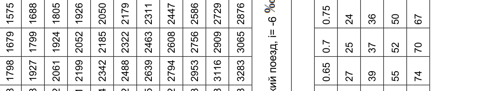
50 318 273 240 214 195 179 165 154 145 137 132 130 123 118 113 109 105 101 98 95 92 89 87 132 127 122 118 114 111 108 105
| 58 | 71 | 87 | 105 | 124 | 146 | 170 | 195 | 223 | 253 | 286 | 320 | 357 | 396 | 438 | 481 | 527 | 576 | 627 | 680 | 735 | 793 | 853 | 915 |
| 59 | 73 | 89 | 108 | 128 | 150 | 175 | 201 | 230 | 262 | 295 | 331 | 369 | 410 | 453 | 498 | 546 | 596 | 648 | 703 | 761 | 821 | 883 | 947 |
| 60 | 75 | 92 | 111 | 132 | 155 | 180 | 208 | 238 | 270 | 305 | 342 | 382 | 424 | 469 | 516 | 565 | 617 | 672 | 729 | 788 | 851 | 915 | 982 |
| 62 | 77 | 95 | 114 | 136 | 160 | 186 | 215 | 246 | 280 | 316 | 355 | 396 | 440 | 486 | 535 | 586 | 641 | 697 | 757 | 819 | 883 | 950 | 1020 |
| 64 | 80 | 98 | 118 | 141 | 166 | 193 | 223 | 255 | 290 | 328 | 368 | 411 | 457 | 505 | 556 | 609 | 666 | 725 | 787 | 851 | 919 | 989 | 1061 |
| 66 | 82 | 101 | 122 | 146 | 172 | 200 | 231 | 265 | 302 | 341 | 383 | 428 | 475 | 526 | 579 | 635 | 694 | 755 | 820 | 887 | 957 | 1031 | 1106 |
| 68 | 85 | 105 | 127 | 151 | 178 | 208 | 241 | 276 | 314 | 355 | 399 | 446 | 496 | 548 | 604 | 663 | 724 | 789 | 856 | 927 | 1000 | 1076 | 1156 |
| 70 | 88 | 109 | 132 | 157 | 186 | 217 | 251 | 288 | 328 | 371 | 417 | 466 | 518 | 573 | 632 | 693 | 758 | 825 | 896 | 970 | 1047 | 1127 | 1210 |
| 73 | 92 | 113 | 137 | 164 | 194 | 227 | 262 | 301 | 343 | 388 | 437 | 488 | 543 | 601 | 662 | 727 | 795 | 866 | 940 | 1018 | 1099 | 1183 | 1270 |
| 76 | 95 | 118 | 143 | 172 | 203 | 237 | 275 | 316 | 360 | 408 | 459 | 513 | 571 | 632 | 697 | 765 | 836 | 911 | 990 | 1071 | 1157 | 1245 | 1337 |
| 79 | 100 | 123 | 150 | 180 | 213 | 250 | 289 | 333 | 379 | 430 | 484 | 541 | 602 | 667 | 735 | 807 | 883 | 962 | 1045 | 1131 | 1222 | 1315 | 1412 |
| 83 | 105 | 130 | 158 | 189 | 225 | 263 | 305 | 351 | 401 | 454 | 512 | 573 | 637 | 706 | 779 | 855 | 935 | 1019 | 1107 | 1199 | 1295 | 1394 | 1497 |
| 84 | 107 | 132 | 161 | 194 | 230 | 269 | 313 | 360 | 410 | 465 | 524 | 586 | 653 | 723 | 798 | 876 | 958 | 1044 | 1135 | 1229 | 1327 | 1428 | 1534 |
| 87 | 110 | 137 | 167 | 200 | 238 | 279 | 324 | 373 | 426 | 482 | 543 | 608 | 678 | 751 | 828 | 909 | 995 | 1085 | 1178 | 1276 | 1378 | 1484 | 1593 |
| 92 | 116 | 145 | 177 | 213 | 253 | 297 | 345 | 397 | 454 | 515 | 580 | 650 | 724 | 802 | 885 | 972 | 1064 | 1159 | 1260 | 1364 | 1473 | 1586 | 1704 |
| 97 | 124 | 154 | 189 | 227 | 270 | 318 | 369 | 426 | 487 | 552 | 623 | 698 | 777 | 862 | 951 | 1045 | 1143 | 1246 | 1354 | 1467 | 1584 | 1705 | 1831 |
| 104 | 132 | 165 | 203 | 244 | 291 | 342 | 398 | 459 | 525 | 596 | 673 | 754 | 840 | 932 | 1028 | 1130 | 1236 | 1348 | 1465 | 1587 | 1713 | 1845 | 1981 |
| 112 | 143 | 179 | 219 | 265 | 315 | 371 | 433 | 499 | 571 | 649 | 732 | 821 | 915 | 1015 | 1120 | 1231 | 1348 | 1469 | 1597 | 1729 | 1867 | 2010 | 2158 |
| 121 | 155 | 195 | 239 | 289 | 345 | 407 | 474 | 548 | 627 | 713 | 805 | 902 | 1006 | 1116 | 1232 | 1354 | 1482 | 1616 | 1756 | 1902 | 2053 | 2210 | 2373 |
| 133 | 171 | 214 | 264 | 320 | 382 | 451 | 526 | 608 | 697 | 792 | 894 | 1003 | 1119 | 1241 | 1370 | 1506 | 1648 | 1797 | 1953 | 2114 | 2282 | 2457 | 2637 |
| 148 | 190 | 240 | 296 | 359 | 429 | 507 | 592 | 684 | 785 | 892 | 1008 | 1131 | 1262 | 1400 | 1545 | 1699 | 1859 | 2027 | 2202 | 2383 | 2572 | 2768 | 2970 |
| 167 | 216 | 273 | 337 | 410 | 491 | 580 | 678 | 785 | 900 | 1024 | 1157 | 1299 | 1449 | 1608 | 1775 | 1951 | 2134 | 2327 | 2527 | 2734 | 2950 | 3173 | 3403 |
| 194 | 252 | 318 | 394 | 480 | 575 | 681 | 797 | 923 | 1059 | 1205 | 1362 | 1529 | 1705 | 1892 | 2089 | 2295 | 2510 | 2735 | 2969 | 3211 | 3462 | 3722 | 3989 |
| 40 | 45 | 50 | 55 | 60 | 65 | 70 | 75 | 80 | 85 | 90 | 95 | 100 | 105 | 110 | 115 | 120 | 125 | 130 | 135 | 140 | 145 | 150 | 155 |
157 151 146 141 136 132 128 124 186 178 172 166 160 155 150 146 217 208 200 193 186 180 175 170 251 241 231 223 215 208 201 195 288 276 265 255 246 238 230 223 328 314 302 290 280 270 262 253 371 355 341 328 316 305 295 286 417 399 383 368 355 342 331 320 466 446 428 411 396 382 369 357 518 496 475 457 440 424 410 396 573 548 526 505 486 469 453 438 632 604 579 556 535 516 498 481 693 663 635 609 586 565 546 527 758 724 694 666 641 617 596 576 825 789 755 725 697 672 648 627 896 856 820 787 757 729 703 680
927 887 851 819 788 761 735
919 883 851 821 793
950 915 883 853
947 915
160
170 4837 4135 3614 3212 2893 2633 2418 2236 2080 1946 1874 1829 1725 1633 1551 1478 1411 1351 1296 1245 1199 1156 1116 5133 4392 3841 3416 3077 2801 2572 2379 2214 2071 1994 1946 1836 1739 1652 1573 1502 1438 1379 1325 1276 1230 1188
| 980 | 1047 | 1116 | 1188 | 1262 | 1338 | 1417 | 1497 | 1580 |
| 1015 | 1084 | 1156 | 1230 | 1307 | 1386 | 1467 | 1551 | 1637 |
| 1052 | 1124 | 1199 | 1276 | 1355 | 1437 | 1522 | 1608 | 1698 |
| 1093 | 1168 | 1245 | 1325 | 1408 | 1493 | 1581 | 1671 | 1763 |
| 1137 | 1215 | 1296 | 1379 | 1465 | 1554 | 1645 | 1739 | 1835 |
| 1185 | 1267 | 1351 | 1438 | 1528 | 1620 | 1715 | 1813 | 1913 |
| 1238 | 1323 | 1411 | 1502 | 1596 | 1693 | 1792 | 1894 | 1999 |
| 1296 | 1386 | 1478 | 1573 | 1671 | 1772 | 1877 | 1983 | 2093 |
| 1361 | 1455 | 1551 | 1652 | 1755 | 1861 | 1970 | 2082 | 2197 |
| 1433 | 1531 | 1633 | 1739 | 1847 | 1959 | 2074 | 2192 | 2313 |
| 1513 | 1617 | 1725 | 1836 | 1951 | 2069 | 2190 | 2315 | 2442 |
| 1604 | 1714 | 1829 | 1946 | 2068 | 2193 | 2321 | 2453 | 2588 |
| 1643 | 1757 | 1874 | 1994 | 2119 | 2246 | 2378 | 2513 | 2651 |
| 1707 | 1824 | 1946 | 2071 | 2200 | 2333 | 2469 | 2609 | 2753 |
| 1825 | 1951 | 2080 | 2214 | 2352 | 2493 | 2639 | 2788 | 2941 |
| 1962 | 2097 | 2236 | 2379 | 2527 | 2679 | 2834 | 2994 | 3158 |
| 2122 | 2267 | 2418 | 2572 | 2732 | 2895 | 3063 | 3235 | 3411 |
| 2312 | 2470 | 2633 | 2801 | 2974 | 3152 | 3334 | 3520 | 3711 |
| 2541 | 2714 | 2893 | 3077 | 3266 | 3460 | 3659 | 3862 | 4070 |
| 2823 | 3015 | 3212 | 3416 | 3624 | 3838 | 4057 | 4281 | 4510 |
| 3178 | 3393 | 3614 | 3841 | 4074 | 4312 | 4556 | 4805 | 5059 |
| 3640 | 3884 | 4135 | 4392 | 4655 | 4924 | 5200 | 5480 | 5766 |
| 4264 | 4547 | 4837 | 5133 | 5437 | 5746 | 6062 | 6384 | 6711 |
| 160 | 165 | 170 | 175 | 180 | 185 | 190 | 195 | 200 |
| Расчетный тормозной коэффициент | 1.35 | 30 | 41 | 53 | 66 | 82 | 99 | 118 | 138 | 161 | 186 | 213 |
| 1.3 | 30 | 41 | 53 | 67 | 83 | 101 | 120 | 142 | 165 | 191 | 219 | |
| 1.25 | 31 | 42 | 54 | 68 | 85 | 103 | 123 | 145 | 169 | 196 | 225 | |
| 1.2 | 31 | 42 | 55 | 70 | 86 | 105 | 126 | 148 | 174 | 201 | 231 | |
| 1.15 | 32 | 43 | 56 | 71 | 88 | 107 | 129 | 152 | 178 | 207 | 238 | |
| 1.1 | 32 | 44 | 57 | 73 | 90 | 110 | 132 | 157 | 184 | 213 | 245 | |
| 1.05 | 32 | 44 | 58 | 74 | 93 | 113 | 136 | 161 | 190 | 220 | 254 | |
| 1 | 33 | 45 | 60 | 76 | 95 | 116 | 140 | 167 | 196 | 228 | 263 | |
| 0.95 | 34 | 46 | 61 | 78 | 98 | 120 | 145 | 173 | 203 | 237 | 273 | |
| 0.9 | 34 | 47 | 63 | 81 | 101 | 124 | 150 | 179 | 211 | 246 | 285 | |
| 0.85 | 35 | 49 | 65 | 83 | 104 | 129 | 156 | 186 | 220 | 257 | 298 | |
| 0.8 | 36 | 50 | 67 | 86 | 108 | 134 | 163 | 195 | 230 | 269 | 312 | |
| 0.78 | 36 | 50 | 67 | 87 | 110 | 136 | 166 | 198 | 235 | 275 | 319 | |
| 0.75 | 37 | 51 | 69 | 89 | 113 | 140 | 170 | 204 | 242 | 284 | 329 | |
| 0.7 | 38 | 53 | 72 | 93 | 118 | 147 | 179 | 215 | 255 | 300 | 348 | |
| 0.65 | 39 | 55 | 75 | 98 | 124 | 155 | 189 | 228 | 271 | 319 | 371 | |
| 0.6 | 41 | 58 | 78 | 103 | 131 | 164 | 201 | 243 | 289 | 341 | 397 | |
| 0.55 | 42 | 61 | 83 | 109 | 140 | 175 | 215 | 261 | 311 | 367 | 429 | |
| 0.5 | 44 | 64 | 88 | 117 | 150 | 189 | 233 | 283 | 338 | 400 | 468 | |
| 0.45 | 47 | 68 | 95 | 126 | 163 | 206 | 255 | 310 | 372 | 441 | 516 | |
| 0.4 | 50 | 74 | 103 | 138 | 180 | 228 | 283 | 345 | 415 | 493 | 578 | |
| 0.35 | 55 | 81 | 114 | 154 | 201 | 257 | 320 | 392 | 472 | 562 | 661 | |
| 0.3 | 61 | 92 | 130 | 176 | 232 | 297 | 372 | 457 | 552 | 659 | 777 | |
| V, км/ч | 20 | 25 | 30 | 35 | 40 | 45 | 50 | 55 | 60 | 65 | 70 |
5437 4655 4074 3624 3266 2974 2732 2527 2352 2200 2119 2068 1951 1847 1755 1671 1596 1528 1465 1408 1355 1307 1262 5746 4924 4312 3838 3460 3152 2895 2679 2493 2333 2246 2193 2069 1959 1861 1772 1693 1620 1554 1493 1437 1386 1338 6062 5200 4556 4057 3659 3334 3063 2834 2639 2469 2378 2321 2190 2074 1970 1877 1792 1715 1645 1581 1522 1467 1417 6384 5480 4805 4281 3862 3520 3235 2994 2788 2609 2513 2453 2315 2192 2082 1983 1894 1813 1739 1671 1608 1551 1497 6711 5766 5059 4510 4070 3711 3411 3158 2941 2753 2651 2588 2442 2313 2197 2093 1999 1913 1835 1763 1698 1637 1580
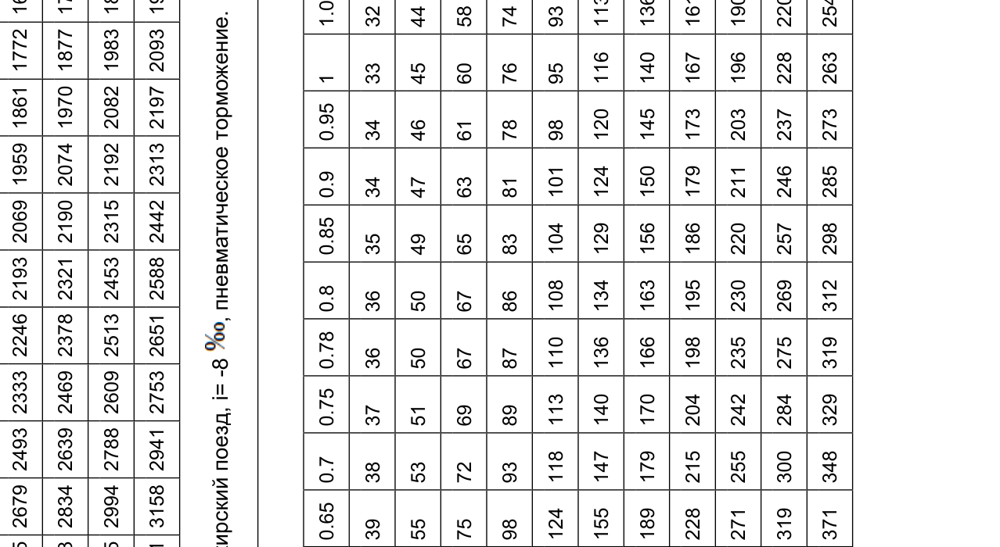
85 1197 1014 883 785 709 647 597 555 520 490 474 464 440 420 402 386 371 358 346 335 325 316 308 90 1360 1151 1001 889 802 732 674 627 586 552 533 522 495 472 451 433 416 401 388 375 364 353 343
| 243 | 274 | 308 | 343 | 382 | 422 | 465 | 510 | 558 | 608 | 660 | 715 | 772 | 831 | 893 | 958 | 1024 | 1093 | 1165 | 1238 | 1315 | 1393 | 1474 | 1557 |
| 249 | 281 | 316 | 353 | 393 | 435 | 479 | 526 | 575 | 627 | 681 | 737 | 797 | 858 | 922 | 989 | 1058 | 1129 | 1203 | 1280 | 1359 | 1440 | 1524 | 1610 |
| 256 | 289 | 325 | 364 | 405 | 448 | 494 | 543 | 594 | 647 | 703 | 762 | 823 | 887 | 954 | 1023 | 1094 | 1169 | 1245 | 1325 | 1406 | 1491 | 1578 | 1667 |
| 263 | 298 | 335 | 375 | 418 | 463 | 510 | 561 | 614 | 669 | 728 | 789 | 852 | 919 | 988 | 1060 | 1134 | 1211 | 1291 | 1373 | 1458 | 1546 | 1636 | 1729 |
| 271 | 308 | 346 | 388 | 432 | 479 | 528 | 581 | 636 | 694 | 754 | 818 | 884 | 953 | 1025 | 1100 | 1177 | 1258 | 1341 | 1426 | 1515 | 1606 | 1700 | 1796 |
| 280 | 318 | 358 | 401 | 447 | 496 | 548 | 602 | 660 | 720 | 784 | 850 | 919 | 991 | 1066 | 1144 | 1225 | 1308 | 1395 | 1484 | 1577 | 1672 | 1770 | 1870 |
| 290 | 329 | 371 | 416 | 464 | 515 | 569 | 626 | 686 | 749 | 816 | 885 | 957 | 1032 | 1111 | 1192 | 1277 | 1364 | 1455 | 1548 | 1644 | 1744 | 1846 | 1951 |
| 301 | 342 | 386 | 433 | 483 | 537 | 593 | 653 | 716 | 782 | 851 | 924 | 999 | 1078 | 1160 | 1246 | 1334 | 1426 | 1521 | 1618 | 1719 | 1823 | 1930 | 2040 |
| 313 | 356 | 402 | 451 | 504 | 560 | 619 | 682 | 748 | 818 | 890 | 967 | 1046 | 1129 | 1215 | 1305 | 1398 | 1494 | 1594 | 1696 | 1802 | 1912 | 2024 | 2139 |
| 327 | 372 | 420 | 472 | 528 | 587 | 649 | 715 | 785 | 858 | 934 | 1015 | 1098 | 1186 | 1277 | 1371 | 1469 | 1570 | 1675 | 1783 | 1895 | 2010 | 2128 | 2250 |
| 342 | 389 | 440 | 495 | 554 | 616 | 682 | 752 | 825 | 903 | 984 | 1069 | 1157 | 1250 | 1346 | 1445 | 1549 | 1656 | 1767 | 1881 | 1999 | 2120 | 2245 | 2373 |
| 359 | 409 | 464 | 522 | 584 | 650 | 720 | 794 | 872 | 954 | 1040 | 1130 | 1224 | 1322 | 1424 | 1530 | 1639 | 1753 | 1870 | 1991 | 2116 | 2245 | 2377 | 2513 |
| 366 | 418 | 474 | 533 | 597 | 664 | 736 | 812 | 892 | 976 | 1064 | 1157 | 1253 | 1353 | 1458 | 1566 | 1679 | 1795 | 1916 | 2040 | 2168 | 2300 | 2435 | 2574 |
| 379 | 432 | 490 | 552 | 618 | 688 | 763 | 841 | 925 | 1012 | 1104 | 1200 | 1300 | 1404 | 1513 | 1625 | 1742 | 1863 | 1988 | 2117 | 2250 | 2387 | 2528 | 2672 |
| 401 | 458 | 520 | 586 | 657 | 732 | 812 | 897 | 986 | 1079 | 1177 | 1280 | 1387 | 1499 | 1615 | 1736 | 1861 | 1990 | 2124 | 2262 | 2404 | 2550 | 2701 | 2855 |
| 428 | 489 | 555 | 627 | 703 | 784 | 870 | 961 | 1057 | 1157 | 1263 | 1374 | 1489 | 1610 | 1735 | 1864 | 1999 | 2138 | 2282 | 2430 | 2583 | 2740 | 2901 | 3067 |
| 459 | 525 | 597 | 674 | 757 | 845 | 938 | 1037 | 1141 | 1250 | 1364 | 1484 | 1610 | 1740 | 1875 | 2016 | 2162 | 2312 | 2468 | 2628 | 2793 | 2963 | 3137 | 3316 |
| 496 | 569 | 647 | 732 | 822 | 918 | 1020 | 1128 | 1241 | 1361 | 1486 | 1617 | 1754 | 1896 | 2044 | 2197 | 2356 | 2520 | 2690 | 2864 | 3044 | 3229 | 3418 | 3612 |
| 542 | 622 | 709 | 802 | 901 | 1007 | 1120 | 1239 | 1364 | 1496 | 1634 | 1778 | 1929 | 2086 | 2249 | 2418 | 2593 | 2773 | 2959 | 3151 | 3348 | 3551 | 3759 | 3972 |
| 599 | 688 | 785 | 889 | 1000 | 1119 | 1244 | 1377 | 1517 | 1664 | 1819 | 1980 | 2148 | 2323 | 2504 | 2692 | 2887 | 3087 | 3294 | 3507 | 3726 | 3951 | 4181 | 4416 |
| 672 | 773 | 883 | 1001 | 1127 | 1262 | 1404 | 1555 | 1714 | 1881 | 2055 | 2238 | 2428 | 2626 | 2831 | 3043 | 3262 | 3488 | 3721 | 3961 | 4206 | 4458 | 4716 | 4980 |
| 769 | 887 | 1014 | 1151 | 1297 | 1452 | 1617 | 1792 | 1975 | 2168 | 2370 | 2580 | 2800 | 3027 | 3263 | 3507 | 3759 | 4018 | 4284 | 4558 | 4838 | 5126 | 5419 | 5719 |
| 905 | 1045 | 1197 | 1360 | 1534 | 1719 | 1915 | 2122 | 2340 | 2569 | 2808 | 3057 | 3316 | 3585 | 3863 | 4149 | 4445 | 4749 | 5061 | 5381 | 5708 | 6042 | 6383 | 6730 |
| 75 | 80 | 85 | 90 | 95 | 100 | 105 | 110 | 115 | 120 | 125 | 130 | 135 | 140 | 145 | 150 | 155 | 160 | 165 | 170 | 175 | 180 | 185 | 190 |
483 464 447 432 418 405 393 382
537 515 496 479 463 448 435 422
593 569 548 528 510 494 479 465
653 626 602 581 561 543 526 510
716 686 660 636 614 594 575 558
782 749 720 694 669 647 627 608
851 816 784 754 728 703 681 660
924 885 850 818 789 762 737 715
957 919 884 852 823 797 772
953 919 887 858 831
954 922 893
958
162
Пассажирский поезд, i= -8 , электропневматическое торможение.
| Расчетный тормозной коэффициент | 1.35 | 19 | 26 | 35 | 46 | 58 | 72 | 88 | 106 | 126 | 148 | 172 | 198 | 227 | 257 | 290 | 326 | 363 | 403 |
| 1.3 | 19 | 27 | 36 | 47 | 60 | 74 | 91 | 109 | 130 | 153 | 177 | 205 | 234 | 266 | 300 | 336 | 375 | 417 | |
| 1.25 | 19 | 27 | 37 | 48 | 61 | 76 | 93 | 113 | 134 | 157 | 183 | 211 | 242 | 275 | 310 | 348 | 389 | 431 | |
| 1.2 | 20 | 28 | 38 | 49 | 63 | 79 | 96 | 116 | 138 | 163 | 190 | 219 | 251 | 285 | 322 | 361 | 403 | 448 | |
| 1.15 | 20 | 28 | 39 | 51 | 65 | 81 | 99 | 120 | 143 | 168 | 196 | 227 | 260 | 296 | 334 | 375 | 419 | 465 | |
| 1.1 | 20 | 29 | 40 | 52 | 67 | 84 | 103 | 124 | 148 | 175 | 204 | 236 | 270 | 307 | 347 | 390 | 436 | 485 | |
| 1.05 | 21 | 30 | 41 | 54 | 69 | 86 | 106 | 129 | 154 | 182 | 212 | 245 | 281 | 320 | 362 | 407 | 455 | 506 | |
| 1 | 21 | 31 | 42 | 56 | 71 | 90 | 111 | 134 | 160 | 189 | 221 | 256 | 294 | 335 | 379 | 426 | 476 | 529 | |
| 0.95 | 22 | 32 | 43 | 58 | 74 | 93 | 115 | 140 | 167 | 198 | 231 | 268 | 308 | 351 | 397 | 447 | 499 | 556 | |
| 0.9 | 22 | 33 | 45 | 60 | 77 | 97 | 120 | 146 | 175 | 207 | 243 | 281 | 323 | 369 | 417 | 470 | 525 | 585 | |
| 0.85 | 23 | 34 | 47 | 62 | 81 | 102 | 126 | 153 | 184 | 218 | 255 | 296 | 341 | 389 | 440 | 496 | 555 | 618 | |
| 0.8 | 24 | 35 | 49 | 65 | 84 | 107 | 132 | 161 | 194 | 230 | 270 | 313 | 360 | 411 | 466 | 525 | 588 | 655 | |
| 0.78 | 24 | 36 | 50 | 66 | 86 | 109 | 135 | 165 | 198 | 235 | 276 | 320 | 369 | 421 | 478 | 538 | 603 | 671 | |
| 0.75 | 25 | 37 | 51 | 68 | 89 | 113 | 140 | 171 | 205 | 244 | 286 | 332 | 383 | 437 | 496 | 559 | 626 | 697 | |
| 0.7 | 26 | 38 | 54 | 72 | 94 | 119 | 148 | 181 | 218 | 260 | 305 | 355 | 409 | 467 | 530 | 598 | 670 | 746 | |
| 0.65 | 27 | 40 | 57 | 76 | 100 | 127 | 158 | 194 | 234 | 278 | 327 | 381 | 439 | 502 | 570 | 643 | 721 | 803 | |
| 0.6 | 29 | 43 | 60 | 81 | 107 | 136 | 170 | 209 | 252 | 300 | 353 | 411 | 475 | 543 | 617 | 697 | 781 | 871 | |
| 0.55 | 30 | 45 | 64 | 87 | 115 | 147 | 184 | 226 | 274 | 326 | 385 | 448 | 518 | 593 | 674 | 761 | 853 | 952 | |
| 0.5 | 32 | 49 | 69 | 95 | 125 | 161 | 201 | 248 | 300 | 358 | 423 | 493 | 570 | 653 | 743 | 839 | 942 | 1051 | |
| 0.45 | 35 | 53 | 76 | 104 | 138 | 177 | 223 | 275 | 333 | 398 | 471 | 550 | 636 | 729 | 829 | 937 | 1052 | 1174 | |
| 0.4 | 38 | 58 | 84 | 116 | 154 | 199 | 250 | 309 | 376 | 450 | 532 | 622 | 720 | 826 | 940 | 1063 | 1194 | 1333 | |
| 0.35 | 42 | 65 | 95 | 131 | 175 | 227 | 287 | 355 | 432 | 518 | 613 | 718 | 832 | 955 | 1088 | 1231 | 1383 | 1544 | |
| 0.3 | 48 | 75 | 110 | 153 | 205 | 266 | 337 | 419 | 511 | 614 | 728 | 853 | 989 | 1136 | 1295 | 1465 | 1647 | 1839 | |
| V, км/ч | 20 | 25 | 30 | 35 | 40 | 45 | 50 | 55 | 60 | 65 | 70 | 75 | 80 | 85 | 90 | 95 | 100 | 105 |
| 1642 | 1730 |
| 1698 | 1789 |
| 1759 | 1853 |
| 1824 | 1922 |
| 1895 | 1997 |
| 1973 | 2080 |
| 2059 | 2170 |
| 2153 | 2269 |
| 2258 | 2380 |
| 2375 | 2503 |
| 2505 | 2640 |
| 2653 | 2796 |
| 2717 | 2863 |
| 2820 | 2972 |
| 3013 | 3175 |
| 3237 | 3410 |
| 3499 | 3686 |
| 3811 | 4015 |
| 4189 | 4412 |
| 4657 | 4902 |
| 5249 | 5523 |
| 6024 | 6335 |
| 7083 | 7443 |
| 195 | 200 |
1.05 1.1 1.15 1.2 1.25 1.3 1.35 21 21 20 20 20 19 19 19 31 30 29 28 28 27 27 26 42 41 40 39 38 37 36 35 56 54 52 51 49 48 47 46 71 69 67 65 63 61 60 58 90 86 84 81 79 76 74 72 111 106 103 99 96 93 91 88 134 129 124 120 116 113 109 106 160 154 148 143 138 134 130 126 189 182 175 168 163 157 153 148 221 212 204 196 190 183 177 172 256 245 236 227 219 211 205 198 294 281 270 260 251 242 234 227 335 320 307 296 285 275 266 257 379 362 347 334 322 310 300 290 426 407 390 375 361 348 336 326 476 455 436 419 403 389 375 363 529 506 485 465 448 431 417 403
163
120 2481 2084 1798 1584 1417 1283 1173 1081 1004 937 901 879 829 784 744 709 677 648 622 597 575 555 536
962 907 858 814 775 740 708 679 653 629 606 586
| 445 | 490 | 536 | 586 | 637 | 691 | 748 | 807 | 868 | 932 | 998 | 1066 | 1137 | 1210 | 1285 | 1363 | 1443 | 1525 | 1610 |
| 460 | 507 | 555 | 606 | 660 | 716 | 775 | 836 | 899 | 965 | 1034 | 1104 | 1178 | 1254 | 1332 | 1412 | 1495 | 1581 | 1669 |
| 477 | 525 | 575 | 629 | 684 | 743 | 803 | 867 | 933 | 1001 | 1072 | 1146 | 1222 | 1301 | 1382 | 1466 | 1552 | 1641 | 1732 |
| 495 | 545 | 597 | 653 | 711 | 771 | 835 | 901 | 969 | 1041 | 1115 | 1191 | 1271 | 1353 | 1437 | 1524 | 1614 | 1706 | 1801 |
| 515 | 567 | 622 | 679 | 740 | 803 | 869 | 938 | 1009 | 1084 | 1161 | 1241 | 1323 | 1409 | 1497 | 1588 | 1681 | 1777 | 1876 |
| 536 | 591 | 648 | 708 | 771 | 837 | 906 | 978 | 1053 | 1131 | 1211 | 1295 | 1381 | 1470 | 1562 | 1657 | 1754 | 1855 | 1957 |
| 560 | 617 | 677 | 740 | 806 | 875 | 947 | 1023 | 1101 | 1182 | 1267 | 1354 | 1444 | 1538 | 1634 | 1733 | 1835 | 1940 | 2047 |
| 586 | 646 | 709 | 775 | 844 | 917 | 993 | 1072 | 1154 | 1239 | 1328 | 1419 | 1514 | 1612 | 1713 | 1817 | 1924 | 2033 | 2146 |
| 615 | 678 | 744 | 814 | 887 | 963 | 1043 | 1126 | 1213 | 1303 | 1396 | 1492 | 1592 | 1694 | 1800 | 1910 | 2022 | 2137 | 2256 |
| 648 | 714 | 784 | 858 | 935 | 1015 | 1100 | 1187 | 1278 | 1373 | 1471 | 1573 | 1678 | 1786 | 1898 | 2013 | 2132 | 2253 | 2378 |
| 684 | 755 | 829 | 907 | 988 | 1074 | 1163 | 1256 | 1352 | 1452 | 1556 | 1664 | 1775 | 1890 | 2008 | 2130 | 2255 | 2383 | 2515 |
| 726 | 800 | 879 | 962 | 1049 | 1140 | 1234 | 1333 | 1436 | 1542 | 1653 | 1767 | 1885 | 2006 | 2132 | 2261 | 2393 | 2530 | 2669 |
| 744 | 821 | 901 | 986 | 1075 | 1169 | 1266 | 1367 | 1472 | 1581 | 1695 | 1812 | 1933 | 2057 | 2186 | 2318 | 2454 | 2594 | 2737 |
| 773 | 853 | 937 | 1025 | 1118 | 1215 | 1316 | 1421 | 1531 | 1645 | 1762 | 1884 | 2010 | 2139 | 2273 | 2410 | 2552 | 2697 | 2845 |
| 827 | 913 | 1004 | 1098 | 1198 | 1302 | 1410 | 1523 | 1641 | 1762 | 1888 | 2019 | 2153 | 2292 | 2435 | 2582 | 2733 | 2888 | 3047 |
| 891 | 984 | 1081 | 1184 | 1291 | 1403 | 1520 | 1642 | 1768 | 1899 | 2035 | 2176 | 2321 | 2470 | 2624 | 2782 | 2944 | 3110 | 3281 |
| 966 | 1067 | 1173 | 1284 | 1401 | 1522 | 1649 | 1781 | 1919 | 2061 | 2208 | 2360 | 2517 | 2679 | 2845 | 3016 | 3191 | 3371 | 3555 |
| 1056 | 1167 | 1283 | 1404 | 1532 | 1665 | 1804 | 1949 | 2099 | 2254 | 2415 | 2581 | 2752 | 2928 | 3109 | 3295 | 3486 | 3682 | 3882 |
| 1166 | 1288 | 1417 | 1551 | 1692 | 1839 | 1993 | 2152 | 2318 | 2489 | 2666 | 2849 | 3037 | 3231 | 3430 | 3634 | 3843 | 4058 | 4277 |
| 1304 | 1440 | 1584 | 1734 | 1892 | 2057 | 2228 | 2406 | 2590 | 2781 | 2978 | 3182 | 3391 | 3606 | 3827 | 4053 | 4285 | 4522 | 4764 |
| 1480 | 1635 | 1798 | 1969 | 2148 | 2335 | 2529 | 2730 | 2939 | 3154 | 3377 | 3606 | 3842 | 4084 | 4332 | 4586 | 4846 | 5111 | 5382 |
| 1715 | 1895 | 2084 | 2282 | 2488 | 2704 | 2927 | 3159 | 3400 | 3647 | 3903 | 4166 | 4435 | 4712 | 4995 | 5285 | 5581 | 5882 | 6190 |
| 2043 | 2257 | 2481 | 2717 | 2962 | 3217 | 3481 | 3755 | 4038 | 4330 | 4630 | 4938 | 5253 | 5576 | 5907 | 6243 | 6587 | 6936 | 7291 |
| 110 | 115 | 120 | 125 | 130 | 135 | 140 | 145 | 150 | 155 | 160 | 165 | 170 | 175 | 180 | 185 | 190 | 195 | 200 |
| Расчетный тормозной коэффициент | 1.35 | 30 |
| 1.3 | 31 | |
| 1.25 | 31 | |
| 1.2 | 31 | |
| 1.15 | 32 | |
| 1.1 | 32 | |
| 1.05 | 33 | |
| 1 | 33 | |
| 0.95 | 34 | |
| 0.9 | 35 | |
| 0.85 | 35 | |
| 0.8 | 36 | |
| 0.78 | 37 | |
| 0.75 | 37 | |
| 0.7 | 39 | |
| 0.65 | 40 | |
| 0.6 | 41 | |
| 0.55 | 43 | |
| 0.5 | 46 | |
| 0.45 | 48 | |
| 0.4 | 52 | |
| 0.35 | 57 | |
| 0.3 | 64 | |
| V, км/ч | 20 |
844 806 771 740 711 684 660 637
917 875 837 803 771 743 716 691
947 906 869 835 803 775 748
938 901 867 836 807
933 899 868
932
4630 3903 3377 2978 2666 2415 2208 2035 1888 1762 1695 1653 1556 1471 1396 1328 1267 1211 1161 1115 1072 1034 998 4938 4166 3606 3182 2849 2581 2360 2176 2019 1884 1812 1767 1664 1573 1492 1419 1354 1295 1241 1191 1146 1104 1066 5253 4435 3842 3391 3037 2752 2517 2321 2153 2010 1933 1885 1775 1678 1592 1514 1444 1381 1323 1271 1222 1178 1137 5576 4712 4084 3606 3231 2928 2679 2470 2292 2139 2057 2006 1890 1786 1694 1612 1538 1470 1409 1353 1301 1254 1210 5907 4995 4332 3827 3430 3109 2845 2624 2435 2273 2186 2132 2008 1898 1800 1713 1634 1562 1497 1437 1382 1332 1285 6243 5285 4586 4053 3634 3295 3016 2782 2582 2410 2318 2261 2130 2013 1910 1817 1733 1657 1588 1524 1466 1412 1363 6587 5581 4846 4285 3843 3486 3191 2944 2733 2552 2454 2393 2255 2132 2022 1924 1835 1754 1681 1614 1552 1495 1443 6936 5882 5111 4522 4058 3682 3371 3110 2888 2697 2594 2530 2383 2253 2137 2033 1940 1855 1777 1706 1641 1581 1525 7291 6190 5382 4764 4277 3882 3555 3281 3047 2845 2737 2669 2515 2378 2256 2146 2047 1957 1876 1801 1732 1669 1610
, пневматическое торможение.
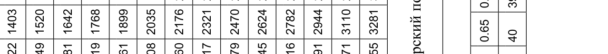
164
35 186 161 144 130 120 112 105 100 95 91 89 88 85 82 80 77 75 74 72 71 69 68 67 40 245 211 187 169 155 144 135 127 121 115 112 111 106 103 100 97 94 92 89 88 86 84 83
| 41 | 53 | 67 | 83 | 100 | 119 | 140 | 164 | 189 | 216 | 246 | 278 | 312 | 349 | 388 | 429 | 473 | 519 | 567 | 618 | 671 | 727 | 785 | 846 |
| 42 | 54 | 68 | 84 | 102 | 122 | 144 | 167 | 194 | 222 | 253 | 286 | 321 | 359 | 399 | 442 | 487 | 535 | 585 | 638 | 693 | 751 | 811 | 874 |
| 42 | 55 | 69 | 86 | 104 | 124 | 147 | 172 | 199 | 228 | 260 | 294 | 331 | 370 | 412 | 456 | 503 | 552 | 604 | 659 | 716 | 776 | 839 | 904 |
| 43 | 56 | 71 | 88 | 106 | 127 | 151 | 176 | 204 | 235 | 268 | 303 | 341 | 382 | 425 | 471 | 520 | 571 | 625 | 682 | 742 | 804 | 869 | 937 |
| 43 | 57 | 72 | 89 | 109 | 131 | 155 | 181 | 210 | 242 | 276 | 313 | 353 | 395 | 440 | 488 | 538 | 592 | 648 | 707 | 770 | 835 | 902 | 973 |
| 44 | 58 | 74 | 92 | 112 | 134 | 159 | 187 | 217 | 250 | 285 | 324 | 365 | 409 | 456 | 506 | 559 | 615 | 673 | 735 | 800 | 868 | 939 | 1013 |
| 45 | 59 | 75 | 94 | 115 | 138 | 164 | 193 | 224 | 259 | 296 | 336 | 379 | 425 | 474 | 526 | 581 | 640 | 701 | 766 | 834 | 905 | 979 | 1056 |
| 46 | 61 | 77 | 97 | 118 | 143 | 170 | 200 | 232 | 268 | 307 | 349 | 394 | 442 | 494 | 548 | 606 | 667 | 732 | 800 | 871 | 945 | 1023 | 1104 |
| 47 | 62 | 80 | 100 | 122 | 148 | 176 | 207 | 241 | 279 | 320 | 364 | 411 | 462 | 516 | 573 | 634 | 698 | 766 | 837 | 912 | 990 | 1072 | 1157 |
| 48 | 64 | 82 | 103 | 126 | 153 | 183 | 216 | 252 | 291 | 334 | 380 | 430 | 483 | 540 | 601 | 665 | 733 | 804 | 880 | 958 | 1041 | 1127 | 1217 |
| 49 | 66 | 85 | 106 | 131 | 159 | 190 | 225 | 263 | 305 | 350 | 399 | 451 | 508 | 568 | 632 | 700 | 772 | 847 | 927 | 1011 | 1098 | 1189 | 1285 |
| 51 | 68 | 88 | 111 | 137 | 166 | 199 | 236 | 276 | 320 | 368 | 420 | 475 | 535 | 599 | 667 | 740 | 816 | 896 | 981 | 1070 | 1163 | 1260 | 1361 |
| 51 | 69 | 89 | 112 | 139 | 169 | 203 | 240 | 282 | 327 | 376 | 429 | 486 | 548 | 613 | 683 | 757 | 835 | 918 | 1005 | 1096 | 1191 | 1291 | 1395 |
| 52 | 70 | 91 | 115 | 143 | 174 | 209 | 248 | 291 | 338 | 389 | 444 | 503 | 567 | 635 | 708 | 785 | 867 | 953 | 1043 | 1138 | 1237 | 1341 | 1449 |
| 54 | 73 | 95 | 121 | 150 | 183 | 221 | 262 | 308 | 358 | 413 | 472 | 536 | 604 | 677 | 755 | 838 | 925 | 1018 | 1115 | 1217 | 1323 | 1435 | 1551 |
| 56 | 76 | 100 | 127 | 159 | 194 | 234 | 279 | 328 | 382 | 441 | 504 | 573 | 647 | 726 | 810 | 900 | 994 | 1094 | 1199 | 1309 | 1424 | 1544 | 1670 |
| 59 | 80 | 105 | 135 | 169 | 207 | 250 | 298 | 352 | 410 | 474 | 543 | 618 | 698 | 784 | 876 | 973 | 1076 | 1184 | 1299 | 1418 | 1544 | 1674 | 1811 |
| 62 | 85 | 112 | 144 | 180 | 222 | 269 | 322 | 380 | 444 | 514 | 590 | 672 | 760 | 855 | 955 | 1062 | 1175 | 1294 | 1419 | 1550 | 1688 | 1831 | 1981 |
| 66 | 91 | 120 | 155 | 195 | 241 | 293 | 351 | 415 | 486 | 564 | 648 | 739 | 836 | 941 | 1052 | 1171 | 1296 | 1428 | 1567 | 1713 | 1865 | 2024 | 2190 |
| 71 | 98 | 130 | 169 | 214 | 265 | 323 | 388 | 460 | 539 | 626 | 720 | 823 | 932 | 1050 | 1175 | 1308 | 1449 | 1598 | 1754 | 1917 | 2088 | 2267 | 2453 |
| 77 | 107 | 144 | 187 | 237 | 295 | 361 | 435 | 517 | 608 | 707 | 815 | 931 | 1057 | 1192 | 1335 | 1487 | 1648 | 1818 | 1996 | 2183 | 2378 | 2582 | 2794 |
| 85 | 119 | 161 | 211 | 269 | 336 | 413 | 499 | 594 | 700 | 816 | 942 | 1079 | 1226 | 1383 | 1551 | 1729 | 1918 | 2116 | 2324 | 2543 | 2770 | 3008 | 3254 |
| 96 | 136 | 186 | 245 | 314 | 394 | 486 | 589 | 705 | 832 | 972 | 1124 | 1289 | 1467 | 1657 | 1860 | 2075 | 2303 | 2542 | 2793 | 3056 | 3330 | 3614 | 3910 |
| 25 | 30 | 35 | 40 | 45 | 50 | 55 | 60 | 65 | 70 | 75 | 80 | 85 | 90 | 95 | 100 | 105 | 110 | 115 | 120 | 125 | 130 | 135 | 140 |
118 115 112 109 106 104 102 100 143 138 134 131 127 124 122 119 170 164 159 155 151 147 144 140 200 193 187 181 176 172 167 164 232 224 217 210 204 199 194 189 268 259 250 242 235 228 222 216 307 296 285 276 268 260 253 246 349 336 324 313 303 294 286 278 394 379 365 353 341 331 321 312 442 425 409 395 382 370 359 349 494 474 456 440 425 412 399 388 548 526 506 488 471 456 442 429 606 581 559 538 520 503 487 473 667 640 615 592 571 552 535 519 732 701 673 648 625 604 585 567 800 766 735 707 682 659 638 618 871 834 800 770 742 716 693 671 945 905 868 835 804 776 751 727
939 902 869 839 811 785
937 904 874 846
155 4855 4046 3476 3052 2724 2464 2252 2075 1927 1800 1732 1690 1594 1509 1434 1367 1306 1252 1202 1157 1116 1078 1043 160 5189 4327 3718 3265 2915 2636 2409 2220 2061 1925 1852 1807 1704 1613 1533 1461 1396 1338 1285 1236 1192 1151 1113
| Расчетный тормозной коэффициент | 1.35 | 19 | 27 | 36 | 46 | 59 | 73 | 90 | 108 |
| 1.3 | 19 | 27 | 36 | 48 | 60 | 75 | 92 | 111 | |
| 1.25 | 19 | 28 | 37 | 49 | 62 | 77 | 95 | 114 | |
| 1.2 | 20 | 28 | 38 | 50 | 64 | 80 | 98 | 118 | |
| 1.15 | 20 | 29 | 39 | 51 | 66 | 82 | 101 | 122 | |
| 1.1 | 21 | 30 | 40 | 53 | 68 | 85 | 104 | 126 | |
| 1.05 | 21 | 30 | 41 | 55 | 70 | 88 | 108 | 131 | |
| 1 | 22 | 31 | 43 | 56 | 73 | 91 | 113 | 136 | |
| 0.95 | 22 | 32 | 44 | 59 | 75 | 95 | 117 | 142 | |
| 0.9 | 23 | 33 | 46 | 61 | 79 | 99 | 123 | 149 | |
| 0.85 | 24 | 34 | 48 | 63 | 82 | 104 | 129 | 157 | |
| 0.8 | 24 | 36 | 50 | 66 | 86 | 109 | 135 | 165 | |
| 0.78 | 25 | 36 | 51 | 68 | 88 | 111 | 138 | 169 | |
| 0.75 | 25 | 37 | 52 | 70 | 91 | 115 | 143 | 175 | |
| 0.7 | 26 | 39 | 55 | 74 | 96 | 122 | 152 | 186 | |
| 0.65 | 28 | 41 | 58 | 78 | 102 | 130 | 163 | 199 | |
| 0.6 | 29 | 44 | 62 | 84 | 110 | 140 | 175 | 215 | |
| 0.55 | 31 | 47 | 66 | 90 | 118 | 152 | 190 | 234 | |
| 0.5 | 33 | 50 | 72 | 98 | 129 | 166 | 209 | 257 | |
| 0.45 | 36 | 55 | 78 | 108 | 143 | 184 | 232 | 286 | |
| 0.4 | 39 | 60 | 87 | 120 | 160 | 207 | 262 | 324 | |
| 0.35 | 44 | 68 | 99 | 137 | 184 | 238 | 302 | 374 | |
| 0.3 | 50 | 79 | 116 | 161 | 217 | 282 | 359 | 446 | |
| V, км/ч | 20 | 25 | 30 | 35 | 40 | 45 | 50 | 55 |
| 909 | 975 | 1043 | 1113 | 1186 | 1261 | 1339 | 1419 | 1502 | 1586 | 1674 | 1763 |
| 939 | 1007 | 1078 | 1151 | 1226 | 1304 | 1385 | 1468 | 1553 | 1641 | 1732 | 1824 |
| 972 | 1043 | 1116 | 1192 | 1270 | 1351 | 1435 | 1521 | 1610 | 1701 | 1795 | 1891 |
| 1008 | 1081 | 1157 | 1236 | 1318 | 1402 | 1489 | 1578 | 1671 | 1766 | 1863 | 1963 |
| 1047 | 1123 | 1202 | 1285 | 1370 | 1457 | 1548 | 1641 | 1737 | 1836 | 1938 | 2042 |
| 1089 | 1169 | 1252 | 1338 | 1426 | 1518 | 1613 | 1710 | 1810 | 1913 | 2019 | 2128 |
| 1136 | 1220 | 1306 | 1396 | 1489 | 1585 | 1684 | 1786 | 1891 | 1999 | 2109 | 2223 |
| 1188 | 1276 | 1367 | 1461 | 1558 | 1659 | 1763 | 1869 | 1979 | 2093 | 2209 | 2328 |
| 1246 | 1338 | 1434 | 1533 | 1635 | 1741 | 1850 | 1962 | 2078 | 2197 | 2319 | 2444 |
| 1311 | 1408 | 1509 | 1613 | 1721 | 1833 | 1948 | 2066 | 2188 | 2314 | 2442 | 2574 |
| 1384 | 1487 | 1594 | 1704 | 1818 | 1936 | 2058 | 2183 | 2312 | 2445 | 2581 | 2720 |
| 1467 | 1576 | 1690 | 1807 | 1929 | 2054 | 2183 | 2316 | 2453 | 2594 | 2738 | 2886 |
| 1503 | 1615 | 1732 | 1852 | 1977 | 2105 | 2238 | 2374 | 2515 | 2659 | 2807 | 2958 |
| 1562 | 1678 | 1800 | 1925 | 2055 | 2188 | 2326 | 2468 | 2614 | 2764 | 2917 | 3075 |
| 1671 | 1797 | 1927 | 2061 | 2200 | 2343 | 2491 | 2643 | 2799 | 2960 | 3124 | 3293 |
| 1800 | 1935 | 2075 | 2220 | 2370 | 2525 | 2684 | 2848 | 3016 | 3189 | 3366 | 3547 |
| 1952 | 2099 | 2252 | 2409 | 2572 | 2740 | 2912 | 3090 | 3272 | 3459 | 3651 | 3847 |
| 2136 | 2297 | 2464 | 2636 | 2814 | 2998 | 3187 | 3381 | 3580 | 3784 | 3993 | 4206 |
| 2362 | 2540 | 2724 | 2915 | 3112 | 3314 | 3523 | 3737 | 3956 | 4181 | 4410 | 4645 |
| 2645 | 2845 | 3052 | 3265 | 3485 | 3711 | 3944 | 4182 | 4427 | 4677 | 4932 | 5193 |
| 3013 | 3241 | 3476 | 3718 | 3967 | 4224 | 4487 | 4757 | 5033 | 5315 | 5603 | 5896 |
| 3510 | 3774 | 4046 | 4327 | 4615 | 4912 | 5215 | 5526 | 5843 | 6167 | 6497 | 6832 |
| 4215 | 4530 | 4855 | 5189 | 5532 | 5883 | 6241 | 6608 | 6981 | 7361 | 7748 | 8141 |
| 145 | 150 | 155 | 160 | 165 | 170 | 175 | 180 | 185 | 190 | 195 | 200 |
165 5532 4615 3967 3485 3112 2814 2572 2370 2200 2055 1977 1929 1818 1721 1635 1558 1489 1426 1370 1318 1270 1226 1186 170 5883 4912 4224 3711 3314 2998 2740 2525 2343 2188 2105 2054 1936 1833 1741 1659 1585 1518 1457 1402 1351 1304 1261 175 6241 5215 4487 3944 3523 3187 2912 2684 2491 2326 2238 2183 2058 1948 1850 1763 1684 1613 1548 1489 1435 1385 1339 180 6608 5526 4757 4182 3737 3381 3090 2848 2643 2468 2374 2316 2183 2066 1962 1869 1786 1710 1641 1578 1521 1468 1419 185 6981 5843 5033 4427 3956 3580 3272 3016 2799 2614 2515 2453 2312 2188 2078 1979 1891 1810 1737 1671 1610 1553 1502 190 7361 6167 5315 4677 4181 3784 3459 3189 2960 2764 2659 2594 2445 2314 2197 2093 1999 1913 1836 1766 1701 1641 1586 195 7748 6497 5603 4932 4410 3993 3651 3366 3124 2917 2807 2738 2581 2442 2319 2209 2109 2019 1938 1863 1795 1732 1674 200 8141 6832 5896 5193 4645 4206 3847 3547 3293 3075 2958 2886 2720 2574 2444 2328 2223 2128 2042 1963 1891 1824 1763
Пассажирский поезд, i= -10
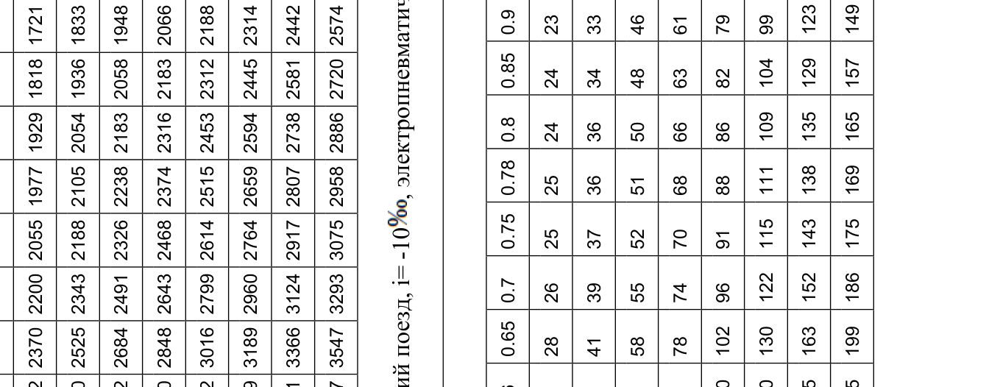
166
70 780 650 559 492 440 398 365 337 314 294 283 276 261 248 236 226 216 208 200 193 186 180 175 261 250 240 231 222 215 208 201
| 128 | 150 | 175 | 201 | 230 | 261 | 295 | 331 | 369 | 409 | 452 | 498 | 546 | 596 | 648 | 704 | 761 | 821 | 884 | 949 | 1016 | 1086 | 1158 | 1232 |
| 132 | 155 | 180 | 208 | 238 | 270 | 305 | 342 | 382 | 424 | 468 | 515 | 565 | 617 | 672 | 729 | 789 | 851 | 916 | 983 | 1053 | 1126 | 1200 | 1278 |
| 136 | 160 | 186 | 215 | 246 | 280 | 316 | 354 | 395 | 439 | 486 | 534 | 586 | 640 | 697 | 757 | 819 | 884 | 951 | 1021 | 1094 | 1169 | 1247 | 1327 |
| 140 | 165 | 193 | 222 | 255 | 290 | 327 | 368 | 410 | 456 | 504 | 555 | 609 | 665 | 725 | 787 | 851 | 919 | 989 | 1062 | 1138 | 1216 | 1297 | 1381 |
| 145 | 171 | 200 | 231 | 265 | 301 | 340 | 382 | 427 | 474 | 525 | 578 | 634 | 693 | 755 | 819 | 887 | 957 | 1031 | 1107 | 1186 | 1268 | 1352 | 1440 |
| 151 | 178 | 208 | 240 | 275 | 313 | 354 | 398 | 445 | 494 | 547 | 603 | 661 | 723 | 788 | 855 | 926 | 1000 | 1076 | 1156 | 1238 | 1324 | 1412 | 1504 |
| 157 | 185 | 216 | 250 | 287 | 327 | 370 | 416 | 465 | 517 | 572 | 630 | 692 | 756 | 824 | 895 | 969 | 1046 | 1127 | 1210 | 1296 | 1386 | 1479 | 1574 |
| 163 | 193 | 226 | 261 | 300 | 342 | 387 | 435 | 486 | 541 | 599 | 661 | 725 | 793 | 864 | 939 | 1017 | 1098 | 1182 | 1270 | 1361 | 1455 | 1552 | 1653 |
| 171 | 202 | 236 | 274 | 314 | 358 | 406 | 457 | 511 | 569 | 630 | 694 | 762 | 834 | 909 | 988 | 1070 | 1155 | 1244 | 1336 | 1432 | 1531 | 1634 | 1739 |
| 179 | 212 | 248 | 287 | 331 | 377 | 427 | 481 | 538 | 599 | 664 | 732 | 804 | 880 | 959 | 1042 | 1129 | 1219 | 1313 | 1411 | 1512 | 1617 | 1725 | 1837 |
| 188 | 223 | 261 | 303 | 349 | 398 | 451 | 508 | 569 | 634 | 702 | 775 | 851 | 931 | 1016 | 1104 | 1196 | 1291 | 1391 | 1495 | 1602 | 1713 | 1828 | 1946 |
| 198 | 235 | 276 | 321 | 369 | 422 | 479 | 539 | 604 | 673 | 746 | 823 | 905 | 990 | 1080 | 1174 | 1272 | 1374 | 1480 | 1590 | 1704 | 1822 | 1944 | 2070 |
| 203 | 241 | 283 | 329 | 379 | 433 | 491 | 553 | 620 | 690 | 765 | 845 | 928 | 1016 | 1108 | 1204 | 1305 | 1410 | 1519 | 1632 | 1749 | 1870 | 1995 | 2124 |
| 210 | 250 | 294 | 341 | 393 | 449 | 510 | 575 | 644 | 718 | 796 | 879 | 966 | 1057 | 1153 | 1254 | 1359 | 1468 | 1581 | 1699 | 1821 | 1947 | 2077 | 2212 |
| 224 | 267 | 314 | 365 | 421 | 481 | 546 | 616 | 691 | 770 | 854 | 943 | 1037 | 1135 | 1239 | 1347 | 1459 | 1577 | 1698 | 1825 | 1956 | 2092 | 2231 | 2376 |
| 241 | 286 | 337 | 393 | 453 | 518 | 589 | 665 | 745 | 831 | 922 | 1019 | 1120 | 1227 | 1338 | 1455 | 1577 | 1704 | 1836 | 1972 | 2114 | 2260 | 2411 | 2567 |
| 260 | 310 | 365 | 425 | 491 | 563 | 639 | 722 | 810 | 904 | 1003 | 1108 | 1219 | 1335 | 1457 | 1584 | 1717 | 1855 | 1998 | 2147 | 2301 | 2460 | 2625 | 2794 |
| 283 | 338 | 398 | 465 | 537 | 616 | 701 | 791 | 888 | 991 | 1101 | 1216 | 1338 | 1466 | 1600 | 1740 | 1885 | 2037 | 2195 | 2358 | 2527 | 2701 | 2881 | 3066 |
| 312 | 372 | 440 | 514 | 594 | 682 | 776 | 877 | 985 | 1099 | 1221 | 1349 | 1485 | 1627 | 1775 | 1931 | 2093 | 2261 | 2436 | 2616 | 2803 | 2996 | 3195 | 3400 |
| 347 | 416 | 492 | 575 | 666 | 764 | 870 | 984 | 1106 | 1235 | 1372 | 1517 | 1670 | 1829 | 1997 | 2171 | 2353 | 2542 | 2739 | 2941 | 3151 | 3367 | 3589 | 3818 |
| 394 | 472 | 559 | 655 | 759 | 872 | 994 | 1124 | 1264 | 1412 | 1569 | 1735 | 1910 | 2093 | 2284 | 2484 | 2692 | 2908 | 3131 | 3362 | 3601 | 3846 | 4099 | 4358 |
| 457 | 548 | 650 | 762 | 885 | 1017 | 1161 | 1314 | 1478 | 1652 | 1836 | 2031 | 2235 | 2450 | 2673 | 2907 | 3149 | 3400 | 3660 | 3929 | 4205 | 4490 | 4782 | 5081 |
| 546 | 657 | 780 | 916 | 1065 | 1226 | 1399 | 1585 | 1784 | 1995 | 2218 | 2453 | 2700 | 2959 | 3228 | 3509 | 3800 | 4101 | 4412 | 4733 | 5062 | 5401 | 5747 | 6102 |
| 60 | 65 | 70 | 75 | 80 | 85 | 90 | 95 | 100 | 105 | 110 | 115 | 120 | 125 | 130 | 135 | 140 | 145 | 150 | 155 | 160 | 165 | 170 | 175 |
300 287 275 265 255 246 238 230 342 327 313 301 290 280 270 261 387 370 354 340 327 316 305 295 435 416 398 382 368 354 342 331 486 465 445 427 410 395 382 369 541 517 494 474 456 439 424 409 599 572 547 525 504 486 468 452 661 630 603 578 555 534 515 498 725 692 661 634 609 586 565 546 793 756 723 693 665 640 617 596 864 824 788 755 725 697 672 648 939 895 855 819 787 757 729 704
926 887 851 819 789 761
919 884 851 821
951 916 884
949
190 7209 6021 5174 4540 4047 3652 3330 3061 2834 2639 2535 2470 2323 2192 2076 1973 1879 1795 1718 1648 1584 1525 1470 7591 6346 5458 4791 4273 3858 3518 3235 2995 2790 2680 2611 2455 2318 2195 2086 1987 1898 1817 1743 1675 1612 1554
| 1309 | 1389 | 1470 | 1554 | 1641 |
| 1358 | 1440 | 1525 | 1612 | 1702 |
| 1410 | 1496 | 1584 | 1675 | 1768 |
| 1467 | 1556 | 1648 | 1743 | 1839 |
| 1530 | 1623 | 1718 | 1817 | 1918 |
| 1598 | 1695 | 1795 | 1898 | 2003 |
| 1673 | 1775 | 1879 | 1987 | 2098 |
| 1756 | 1863 | 1973 | 2086 | 2202 |
| 1849 | 1961 | 2076 | 2195 | 2317 |
| 1952 | 2070 | 2192 | 2318 | 2446 |
| 2068 | 2194 | 2323 | 2455 | 2591 |
| 2200 | 2333 | 2470 | 2611 | 2756 |
| 2257 | 2394 | 2535 | 2680 | 2828 |
| 2350 | 2493 | 2639 | 2790 | 2944 |
| 2524 | 2677 | 2834 | 2995 | 3160 |
| 2727 | 2892 | 3061 | 3235 | 3413 |
| 2968 | 3147 | 3330 | 3518 | 3711 |
| 3257 | 3452 | 3652 | 3858 | 4068 |
| 3610 | 3826 | 4047 | 4273 | 4504 |
| 4053 | 4293 | 4540 | 4791 | 5048 |
| 4624 | 4896 | 5174 | 5458 | 5748 |
| 5388 | 5701 | 6021 | 6346 | 6678 |
| 6464 | 6833 | 7209 | 7591 | 7979 |
| 180 | 185 | 190 | 195 | 200 |
| Расчетный тормозной коэффициент | 1.35 | 31 | 42 | 54 | 68 | 84 | 101 | 121 | 142 | 166 | 192 | 220 | 250 | 282 | 317 | 354 |
| 1.3 | 31 | 42 | 55 | 69 | 85 | 103 | 123 | 146 | 170 | 197 | 225 | 257 | 290 | 326 | 365 | |
| 1.25 | 31 | 43 | 56 | 70 | 87 | 105 | 126 | 149 | 174 | 202 | 232 | 264 | 299 | 336 | 376 | |
| 1.2 | 32 | 43 | 57 | 72 | 89 | 108 | 129 | 153 | 179 | 208 | 239 | 272 | 308 | 347 | 389 | |
| 1.15 | 32 | 44 | 58 | 73 | 91 | 111 | 133 | 157 | 184 | 214 | 246 | 281 | 319 | 359 | 402 | |
| 1.1 | 33 | 45 | 59 | 75 | 93 | 114 | 136 | 162 | 190 | 221 | 254 | 291 | 330 | 372 | 417 | |
| 1.05 | 33 | 46 | 60 | 77 | 95 | 117 | 141 | 167 | 196 | 228 | 263 | 301 | 342 | 386 | 433 | |
| 1 | 34 | 47 | 61 | 79 | 98 | 120 | 145 | 173 | 203 | 237 | 273 | 313 | 356 | 402 | 452 | |
| 0.95 | 35 | 48 | 63 | 81 | 101 | 124 | 150 | 179 | 211 | 246 | 285 | 326 | 371 | 420 | 472 | |
| 0.9 | 35 | 49 | 65 | 83 | 105 | 129 | 156 | 186 | 220 | 257 | 297 | 341 | 389 | 440 | 495 | |
| 0.85 | 36 | 50 | 67 | 86 | 108 | 134 | 162 | 194 | 230 | 269 | 312 | 358 | 408 | 462 | 520 | |
| 0.8 | 37 | 52 | 69 | 89 | 113 | 140 | 170 | 204 | 241 | 282 | 328 | 377 | 430 | 488 | 550 | |
| 0.78 | 37 | 52 | 70 | 91 | 115 | 142 | 173 | 208 | 246 | 288 | 335 | 385 | 440 | 499 | 563 | |
| 0.75 | 38 | 53 | 72 | 93 | 118 | 146 | 178 | 214 | 254 | 298 | 346 | 399 | 456 | 517 | 583 | |
| 0.7 | 39 | 55 | 75 | 97 | 124 | 154 | 188 | 226 | 269 | 316 | 368 | 424 | 486 | 552 | 623 | |
| 0.65 | 41 | 58 | 78 | 102 | 130 | 163 | 199 | 241 | 287 | 338 | 393 | 454 | 521 | 592 | 669 | |
| 0.6 | 42 | 60 | 82 | 108 | 138 | 173 | 213 | 258 | 308 | 363 | 424 | 490 | 562 | 640 | 724 | |
| 0.55 | 44 | 64 | 87 | 115 | 148 | 186 | 229 | 278 | 333 | 394 | 460 | 533 | 613 | 699 | 791 | |
| 0.5 | 47 | 68 | 93 | 124 | 160 | 202 | 250 | 304 | 364 | 432 | 506 | 587 | 675 | 771 | 874 | |
| 0.45 | 50 | 73 | 101 | 135 | 175 | 222 | 275 | 336 | 404 | 480 | 564 | 655 | 755 | 863 | 980 | |
| 0.4 | 54 | 79 | 111 | 149 | 195 | 248 | 309 | 378 | 456 | 543 | 640 | 745 | 860 | 985 | 1119 | |
| 0.35 | 59 | 88 | 124 | 168 | 221 | 283 | 354 | 436 | 528 | 630 | 744 | 868 | 1004 | 1152 | 1311 | |
| 0.3 | 66 | 100 | 143 | 196 | 259 | 333 | 420 | 519 | 631 | 756 | 895 | 1048 | 1215 | 1397 | 1592 | |
| V, км/ч | 20 | 25 | 30 | 35 | 40 | 45 | 50 | 55 | 60 | 65 | 70 | 75 | 80 | 85 | 90 |
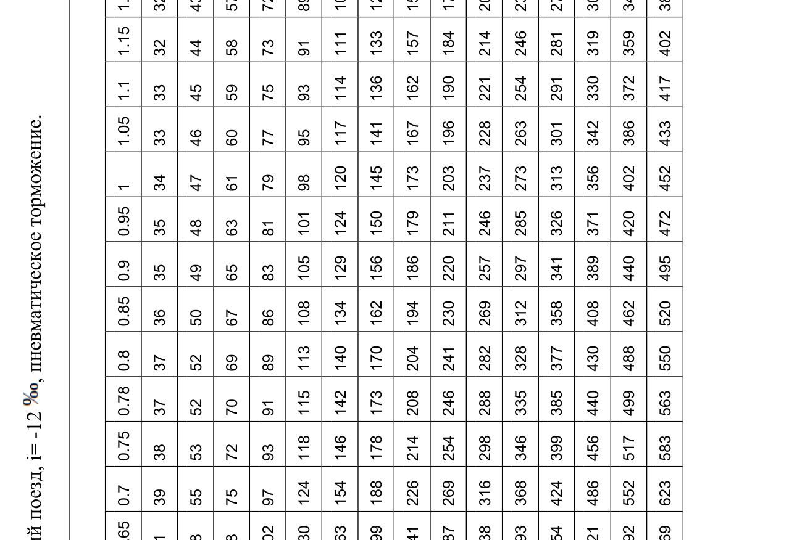
452 433 417 402 389 376 365 354
168
105 2264 1857 1579 1379 1226 1107 1011 931 865 809 779 760 718 681 649 620 594 570 549 529 512 495 480
751 715 682 653 627 604 582 562 544 527
| 394 | 436 | 480 | 527 | 577 | 629 | 683 | 740 | 799 | 861 | 926 | 992 | 1062 | 1134 | 1208 | 1285 | 1364 | 1446 | 1530 | 1617 | 1706 | 1797 |
| 406 | 449 | 495 | 544 | 595 | 649 | 705 | 764 | 826 | 890 | 957 | 1026 | 1098 | 1173 | 1250 | 1330 | 1412 | 1497 | 1584 | 1674 | 1766 | 1861 |
| 419 | 464 | 512 | 562 | 615 | 671 | 730 | 791 | 855 | 922 | 991 | 1063 | 1138 | 1215 | 1296 | 1378 | 1464 | 1552 | 1643 | 1736 | 1832 | 1930 |
| 433 | 480 | 529 | 582 | 637 | 695 | 756 | 820 | 887 | 956 | 1028 | 1103 | 1181 | 1262 | 1345 | 1431 | 1520 | 1612 | 1706 | 1804 | 1903 | 2006 |
| 448 | 497 | 549 | 604 | 661 | 722 | 785 | 852 | 921 | 993 | 1069 | 1147 | 1228 | 1312 | 1399 | 1489 | 1582 | 1678 | 1776 | 1877 | 1982 | 2088 |
| 465 | 516 | 570 | 627 | 687 | 751 | 817 | 887 | 959 | 1035 | 1113 | 1195 | 1280 | 1368 | 1459 | 1553 | 1650 | 1750 | 1853 | 1959 | 2067 | 2179 |
| 484 | 537 | 594 | 653 | 716 | 783 | 852 | 925 | 1001 | 1080 | 1163 | 1248 | 1337 | 1429 | 1525 | 1623 | 1725 | 1829 | 1937 | 2048 | 2162 | 2279 |
| 504 | 560 | 620 | 682 | 749 | 818 | 891 | 968 | 1047 | 1131 | 1217 | 1307 | 1401 | 1497 | 1598 | 1701 | 1808 | 1917 | 2031 | 2147 | 2266 | 2389 |
| 527 | 586 | 649 | 715 | 785 | 858 | 935 | 1015 | 1099 | 1187 | 1278 | 1373 | 1471 | 1573 | 1679 | 1788 | 1900 | 2016 | 2135 | 2257 | 2383 | 2512 |
| 553 | 615 | 681 | 751 | 825 | 902 | 984 | 1069 | 1157 | 1250 | 1347 | 1447 | 1551 | 1659 | 1770 | 1885 | 2004 | 2126 | 2251 | 2381 | 2513 | 2650 |
| 582 | 648 | 718 | 792 | 870 | 953 | 1039 | 1129 | 1223 | 1322 | 1424 | 1530 | 1641 | 1755 | 1873 | 1995 | 2121 | 2250 | 2383 | 2520 | 2661 | 2805 |
| 616 | 686 | 760 | 839 | 922 | 1010 | 1102 | 1198 | 1298 | 1403 | 1512 | 1625 | 1743 | 1864 | 1990 | 2120 | 2254 | 2392 | 2533 | 2679 | 2828 | 2982 |
| 630 | 702 | 779 | 860 | 945 | 1035 | 1129 | 1228 | 1331 | 1439 | 1551 | 1667 | 1788 | 1913 | 2042 | 2175 | 2312 | 2454 | 2599 | 2749 | 2902 | 3059 |
| 654 | 729 | 809 | 893 | 982 | 1076 | 1174 | 1277 | 1385 | 1497 | 1613 | 1735 | 1860 | 1990 | 2125 | 2264 | 2407 | 2554 | 2705 | 2861 | 3021 | 3184 |
| 698 | 779 | 865 | 956 | 1052 | 1153 | 1258 | 1369 | 1485 | 1606 | 1731 | 1862 | 1997 | 2137 | 2281 | 2430 | 2584 | 2742 | 2905 | 3072 | 3243 | 3419 |
| 751 | 838 | 931 | 1030 | 1134 | 1243 | 1357 | 1478 | 1603 | 1734 | 1870 | 2011 | 2157 | 2309 | 2465 | 2627 | 2793 | 2964 | 3140 | 3320 | 3505 | 3694 |
| 813 | 909 | 1011 | 1118 | 1231 | 1351 | 1476 | 1607 | 1744 | 1887 | 2035 | 2189 | 2349 | 2514 | 2684 | 2860 | 3041 | 3227 | 3419 | 3615 | 3815 | 4021 |
| 890 | 995 | 1107 | 1225 | 1350 | 1482 | 1620 | 1764 | 1915 | 2072 | 2236 | 2406 | 2581 | 2763 | 2950 | 3143 | 3342 | 3547 | 3756 | 3971 | 4191 | 4416 |
| 984 | 1101 | 1226 | 1358 | 1498 | 1645 | 1799 | 1960 | 2128 | 2303 | 2485 | 2674 | 2869 | 3071 | 3280 | 3494 | 3715 | 3941 | 4173 | 4411 | 4655 | 4903 |
| 1104 | 1237 | 1379 | 1528 | 1686 | 1852 | 2026 | 2209 | 2399 | 2597 | 2802 | 3015 | 3236 | 3463 | 3698 | 3939 | 4187 | 4441 | 4702 | 4969 | 5241 | 5519 |
| 1263 | 1416 | 1579 | 1752 | 1934 | 2126 | 2327 | 2537 | 2756 | 2984 | 3220 | 3465 | 3718 | 3979 | 4247 | 4523 | 4806 | 5096 | 5393 | 5697 | 6006 | 6321 |
| 1481 | 1663 | 1857 | 2061 | 2277 | 2504 | 2741 | 2990 | 3248 | 3517 | 3795 | 4083 | 4380 | 4686 | 5000 | 5323 | 5653 | 5991 | 6337 | 6689 | 7047 | 7412 |
| 1802 | 2026 | 2264 | 2516 | 2781 | 3059 | 3350 | 3654 | 3970 | 4298 | 4637 | 4987 | 5347 | 5718 | 6097 | 6486 | 6883 | 7289 | 7701 | 8121 | 8548 | 8980 |
| 95 | 100 | 105 | 110 | 115 | 120 | 125 | 130 | 135 | 140 | 145 | 150 | 155 | 160 | 165 | 170 | 175 | 180 | 185 | 190 | 195 | 200 |
785 749 716 687 661 637 615 595 577
858 818 783 751 722 695 671 649 629
935 891 852 817 785 756 730 705 683
925 887 852 820 791 764 740
921 887 855 826 799
956 922 890 861
957 926
, электропневматическое торможение.
Расчетный тормозной коэффициент
V, км/ч
20 53 46 41 37 34 32 30 28 27 26 25 25 24 23 23 22 21 21 20 20 20 19 19
32 31 30 29 29 28 27 27
| Расчетный тормозной коэффициент | 1.35 | 19 | 27 | 36 | 47 | 60 | 74 | 91 | 109 | 130 | 152 | 177 | 204 | 234 | 266 | 300 | 336 | 375 | 416 | 460 | 506 | 555 | 606 |
| 1.3 | 19 | 27 | 37 | 48 | 61 | 76 | 93 | 112 | 134 | 157 | 183 | 211 | 242 | 275 | 310 | 348 | 388 | 431 | 476 | 525 | 575 | 628 | |
| 1.25 | 20 | 28 | 38 | 49 | 63 | 78 | 96 | 116 | 138 | 162 | 189 | 218 | 250 | 284 | 321 | 360 | 402 | 447 | 494 | 544 | 597 | 652 | |
| 1.2 | 20 | 29 | 39 | 51 | 65 | 81 | 99 | 120 | 143 | 168 | 196 | 226 | 259 | 295 | 333 | 374 | 418 | 465 | 514 | 566 | 621 | 678 | |
| 1.15 | 20 | 29 | 40 | 52 | 67 | 83 | 102 | 124 | 148 | 174 | 203 | 235 | 269 | 307 | 347 | 389 | 435 | 484 | 535 | 589 | 647 | 707 | |
| 1.1 | 21 | 30 | 41 | 54 | 69 | 86 | 106 | 128 | 153 | 181 | 211 | 244 | 280 | 319 | 361 | 406 | 454 | 505 | 558 | 615 | 675 | 739 | |
| 1.05 | 21 | 31 | 42 | 55 | 71 | 89 | 110 | 133 | 160 | 188 | 220 | 255 | 293 | 333 | 377 | 424 | 474 | 528 | 584 | 644 | 707 | 773 | |
| 1 | 22 | 32 | 43 | 57 | 74 | 93 | 115 | 139 | 166 | 197 | 230 | 266 | 306 | 349 | 395 | 445 | 497 | 553 | 613 | 676 | 742 | 812 | |
| 0.95 | 23 | 33 | 45 | 60 | 77 | 97 | 119 | 145 | 174 | 206 | 241 | 279 | 321 | 366 | 415 | 467 | 523 | 582 | 645 | 711 | 781 | 855 | |
| 0.9 | 23 | 34 | 47 | 62 | 80 | 101 | 125 | 152 | 183 | 216 | 253 | 294 | 338 | 386 | 437 | 493 | 552 | 614 | 681 | 751 | 825 | 903 | |
| 0.85 | 24 | 35 | 48 | 65 | 84 | 106 | 131 | 160 | 192 | 228 | 267 | 310 | 357 | 408 | 463 | 521 | 584 | 651 | 721 | 796 | 875 | 958 | |
| 0.8 | 25 | 36 | 51 | 68 | 88 | 111 | 138 | 169 | 203 | 241 | 283 | 329 | 379 | 433 | 492 | 554 | 621 | 692 | 768 | 847 | 931 | 1020 | |
| 0.78 | 25 | 37 | 52 | 69 | 90 | 114 | 142 | 173 | 208 | 247 | 290 | 337 | 389 | 444 | 504 | 569 | 637 | 710 | 788 | 870 | 956 | 1047 | |
| 0.75 | 26 | 38 | 53 | 71 | 93 | 118 | 147 | 179 | 216 | 256 | 301 | 351 | 404 | 462 | 525 | 592 | 664 | 740 | 821 | 906 | 997 | 1091 | |
| 0.7 | 27 | 40 | 56 | 75 | 98 | 125 | 156 | 191 | 230 | 274 | 323 | 376 | 433 | 496 | 563 | 636 | 713 | 795 | 883 | 975 | 1072 | 1175 | |
| 0.65 | 28 | 42 | 59 | 80 | 105 | 134 | 167 | 205 | 248 | 295 | 347 | 405 | 468 | 536 | 609 | 687 | 771 | 861 | 956 | 1056 | 1162 | 1273 | |
| 0.6 | 30 | 45 | 63 | 86 | 113 | 144 | 180 | 222 | 268 | 320 | 377 | 440 | 509 | 583 | 663 | 749 | 841 | 939 | 1043 | 1153 | 1268 | 1390 | |
| 0.55 | 32 | 48 | 68 | 93 | 122 | 157 | 196 | 242 | 293 | 350 | 413 | 483 | 558 | 640 | 729 | 824 | 926 | 1034 | 1149 | 1270 | 1398 | 1532 | |
| 0.5 | 34 | 52 | 74 | 101 | 134 | 172 | 216 | 267 | 324 | 387 | 458 | 535 | 620 | 712 | 811 | 917 | 1031 | 1152 | 1280 | 1416 | 1559 | 1709 | |
| 0.45 | 37 | 56 | 81 | 112 | 148 | 191 | 241 | 298 | 363 | 435 | 515 | 603 | 699 | 803 | 915 | 1036 | 1165 | 1303 | 1448 | 1602 | 1765 | 1935 | |
| 0.4 | 41 | 63 | 91 | 125 | 167 | 216 | 274 | 339 | 414 | 497 | 589 | 691 | 802 | 923 | 1053 | 1193 | 1342 | 1501 | 1670 | 1848 | 2036 | 2233 | |
| 0.35 | 46 | 71 | 103 | 144 | 193 | 251 | 318 | 396 | 484 | 582 | 692 | 812 | 944 | 1088 | 1242 | 1409 | 1587 | 1776 | 1976 | 2188 | 2410 | 2644 | |
| 0.3 | 53 | 83 | 122 | 170 | 230 | 300 | 383 | 477 | 585 | 706 | 841 | 990 | 1153 | 1330 | 1521 | 1726 | 1946 | 2179 | 2426 | 2687 | 2961 | 3248 | |
| V, км/ч | 20 | 25 | 30 | 35 | 40 | 45 | 50 | 55 | 60 | 65 | 70 | 75 | 80 | 85 | 90 | 95 | 100 | 105 | 110 | 115 | 120 | 125 |
43 42 41 40 39 38 37 36
57 55 54 52 51 49 48 47
74 71 69 67 65 63 61 60
93 89 86 83 81 78 76 74
115 110 106 102 99 96 93 91
139 133 128 124 120 116 112 109
166 160 153 148 143 138 134 130
197 188 181 174 168 162 157 152
230 220 211 203 196 189 183 177
266 255 244 235 226 218 211 204
306 293 280 269 259 250 242 234
349 333 319 307 295 284 275 266
395 377 361 347 333 321 310 300
445 424 406 389 374 360 348 336
497 474 454 435 418 402 388 375
553 528 505 484 465 447 431 416
613 584 558 535 514 494 476 460
676 644 615 589 566 544 525 506
742 707 675 647 621 597 575 555
812 773 739 707 678 652 628 606
170
140 4182 3406 2877 2493 2202 1974 1790 1638 1511 1404 1346 1311 1230 1160 1097 1041 991 946 906 869 835 804 775 4516 3680 3109 2695 2380 2133 1934 1771 1633 1517 1455 1416 1329 1253 1185 1125 1071 1022 978 938 901 867 836
| 660 | 716 | 775 | 836 | 900 | 966 | 1035 | 1106 | 1179 | 1256 | 1334 | 1415 | 1499 | 1584 | 1673 |
| 684 | 743 | 804 | 867 | 933 | 1002 | 1073 | 1147 | 1224 | 1303 | 1385 | 1469 | 1555 | 1644 | 1736 |
| 710 | 771 | 835 | 901 | 970 | 1041 | 1116 | 1193 | 1272 | 1354 | 1439 | 1527 | 1617 | 1710 | 1805 |
| 739 | 802 | 869 | 938 | 1009 | 1084 | 1161 | 1242 | 1325 | 1410 | 1499 | 1590 | 1684 | 1780 | 1880 |
| 770 | 837 | 906 | 978 | 1053 | 1131 | 1212 | 1295 | 1382 | 1472 | 1564 | 1659 | 1757 | 1858 | 1962 |
| 805 | 874 | 946 | 1022 | 1100 | 1182 | 1267 | 1354 | 1445 | 1539 | 1635 | 1735 | 1838 | 1943 | 2051 |
| 843 | 915 | 991 | 1071 | 1153 | 1239 | 1328 | 1419 | 1515 | 1613 | 1714 | 1819 | 1926 | 2037 | 2150 |
| 885 | 961 | 1041 | 1125 | 1211 | 1301 | 1395 | 1492 | 1592 | 1695 | 1802 | 1911 | 2024 | 2140 | 2260 |
| 932 | 1013 | 1097 | 1185 | 1276 | 1372 | 1470 | 1572 | 1678 | 1787 | 1899 | 2015 | 2134 | 2256 | 2382 |
| 985 | 1070 | 1160 | 1253 | 1350 | 1450 | 1554 | 1662 | 1774 | 1889 | 2008 | 2130 | 2256 | 2386 | 2518 |
| 1044 | 1135 | 1230 | 1329 | 1432 | 1539 | 1650 | 1764 | 1883 | 2005 | 2131 | 2261 | 2395 | 2532 | 2672 |
| 1113 | 1210 | 1311 | 1416 | 1526 | 1640 | 1758 | 1881 | 2007 | 2137 | 2272 | 2410 | 2552 | 2698 | 2848 |
| 1143 | 1242 | 1346 | 1455 | 1568 | 1685 | 1806 | 1932 | 2062 | 2195 | 2333 | 2475 | 2621 | 2771 | 2925 |
| 1191 | 1295 | 1404 | 1517 | 1634 | 1757 | 1883 | 2014 | 2149 | 2289 | 2433 | 2581 | 2733 | 2889 | 3049 |
| 1282 | 1394 | 1511 | 1633 | 1760 | 1892 | 2028 | 2169 | 2315 | 2465 | 2620 | 2779 | 2942 | 3110 | 3282 |
| 1389 | 1511 | 1638 | 1771 | 1908 | 2051 | 2199 | 2352 | 2509 | 2672 | 2839 | 3011 | 3188 | 3369 | 3555 |
| 1517 | 1651 | 1790 | 1934 | 2085 | 2241 | 2402 | 2569 | 2741 | 2918 | 3101 | 3288 | 3481 | 3678 | 3880 |
| 1673 | 1820 | 1974 | 2133 | 2299 | 2471 | 2649 | 2833 | 3022 | 3217 | 3418 | 3624 | 3835 | 4051 | 4272 |
| 1867 | 2031 | 2202 | 2380 | 2565 | 2757 | 2955 | 3159 | 3370 | 3587 | 3809 | 4038 | 4272 | 4511 | 4756 |
| 2113 | 2299 | 2493 | 2695 | 2904 | 3121 | 3344 | 3575 | 3812 | 4056 | 4306 | 4563 | 4825 | 5094 | 5367 |
| 2439 | 2653 | 2877 | 3109 | 3350 | 3599 | 3856 | 4120 | 4392 | 4671 | 4957 | 5249 | 5549 | 5854 | 6165 |
| 2888 | 3142 | 3406 | 3680 | 3964 | 4256 | 4558 | 4868 | 5186 | 5512 | 5846 | 6187 | 6535 | 6889 | 7249 |
| 3547 | 3859 | 4182 | 4516 | 4862 | 5217 | 5583 | 5958 | 6342 | 6735 | 7136 | 7544 | 7959 | 8381 | 8809 |
| 130 | 135 | 140 | 145 | 150 | 155 | 160 | 165 | 170 | 175 | 180 | 185 | 190 | 195 | 200 |
| Расчетный тормозной коэффициент | 1.35 | 31 | 42 | 54 | 69 | 85 |
| 1.3 | 31 | 43 | 55 | 70 | 86 | |
| 1.25 | 32 | 43 | 56 | 71 | 88 | |
| 1.2 | 32 | 44 | 57 | 73 | 90 | |
| 1.15 | 33 | 45 | 58 | 74 | 92 | |
| 1.1 | 33 | 45 | 60 | 76 | 94 | |
| 1.05 | 34 | 46 | 61 | 78 | 97 | |
| 1 | 34 | 47 | 62 | 80 | 100 | |
| 0.95 | 35 | 48 | 64 | 82 | 103 | |
| 0.9 | 36 | 50 | 66 | 85 | 107 | |
| 0.85 | 37 | 51 | 68 | 88 | 111 | |
| 0.8 | 38 | 53 | 70 | 91 | 115 | |
| 0.78 | 38 | 53 | 71 | 93 | 117 | |
| 0.75 | 39 | 54 | 73 | 95 | 120 | |
| 0.7 | 40 | 56 | 76 | 99 | 126 | |
| 0.65 | 41 | 59 | 80 | 105 | 134 | |
| 0.6 | 43 | 62 | 84 | 111 | 142 | |
| 0.55 | 45 | 65 | 90 | 118 | 152 | |
| 0.5 | 48 | 70 | 96 | 128 | 165 | |
| 0.45 | 51 | 75 | 104 | 140 | 182 | |
| 0.4 | 56 | 82 | 115 | 155 | 203 | |
| 0.35 | 61 | 92 | 130 | 176 | 232 | |
| 0.3 | 69 | 105 | 151 | 207 | 275 | |
| V, км/ч | 20 | 25 | 30 | 35 | 40 |
4862 3964 3350 2904 2565 2299 2085 1908 1760 1634 1568 1526 1432 1350 1276 1211 1153 1100 1053 1009 970 933 900 5217 4256 3599 3121 2757 2471 2241 2051 1892 1757 1685 1640 1539 1450 1372 1301 1239 1182 1131 1084 1041 1002 966 5583 4558 3856 3344 2955 2649 2402 2199 2028 1883 1806 1758 1650 1554 1470 1395 1328 1267 1212 1161 1116 1073 1035 5958 4868 4120 3575 3159 2833 2569 2352 2169 2014 1932 1881 1764 1662 1572 1492 1419 1354 1295 1242 1193 1147 1106 6342 5186 4392 3812 3370 3022 2741 2509 2315 2149 2062 2007 1883 1774 1678 1592 1515 1445 1382 1325 1272 1224 1179 6735 5512 4671 4056 3587 3217 2918 2672 2465 2289 2195 2137 2005 1889 1787 1695 1613 1539 1472 1410 1354 1303 1256 7136 5846 4957 4306 3809 3418 3101 2839 2620 2433 2333 2272 2131 2008 1899 1802 1714 1635 1564 1499 1439 1385 1334 7544 6187 5249 4563 4038 3624 3288 3011 2779 2581 2475 2410 2261 2130 2015 1911 1819 1735 1659 1590 1527 1469 1415 7959 6535 5549 4825 4272 3835 3481 3188 2942 2733 2621 2552 2395 2256 2134 2024 1926 1838 1757 1684 1617 1555 1499 8381 6889 5854 5094 4511 4051 3678 3369 3110 2889 2771 2698 2532 2386 2256 2140 2037 1943 1858 1780 1710 1644 1584 8809 7249 6165 5367 4756 4272 3880 3555 3282 3049 2925 2848 2672 2518 2382 2260 2150 2051 1962 1880 1805 1736 1673
1.05 1.1 1.15 1.2 1.25 1.3 1.35
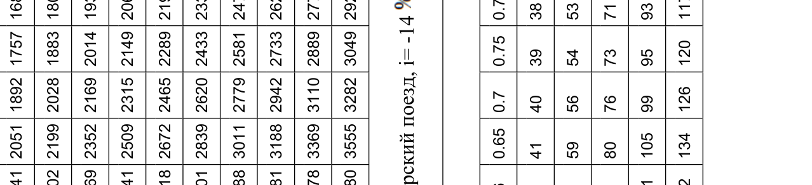
55 556 461 397 350 315 288 266 247 232 219 212 208 199 190 183 176 170 165 160 155 151 148 144 207 200 193 187 182 177 172 168
| 102 | 122 | 144 | 168 | 194 | 223 | 254 | 287 | 322 | 360 | 400 | 443 | 488 | 536 | 587 | 639 | 695 | 753 | 814 | 877 | 942 | 1011 | 1081 | 1155 |
| 105 | 125 | 148 | 172 | 199 | 229 | 261 | 295 | 332 | 371 | 413 | 457 | 504 | 554 | 606 | 661 | 718 | 778 | 841 | 907 | 975 | 1046 | 1119 | 1196 |
| 107 | 128 | 151 | 177 | 205 | 235 | 268 | 304 | 342 | 383 | 426 | 472 | 521 | 572 | 627 | 684 | 743 | 806 | 871 | 940 | 1010 | 1084 | 1161 | 1240 |
| 109 | 131 | 155 | 182 | 211 | 243 | 277 | 314 | 353 | 395 | 441 | 489 | 539 | 593 | 649 | 709 | 771 | 836 | 904 | 975 | 1049 | 1126 | 1206 | 1288 |
| 112 | 135 | 160 | 187 | 217 | 250 | 286 | 324 | 365 | 410 | 457 | 507 | 560 | 615 | 674 | 736 | 801 | 869 | 940 | 1015 | 1092 | 1172 | 1255 | 1341 |
| 115 | 139 | 165 | 193 | 225 | 259 | 296 | 336 | 379 | 425 | 474 | 526 | 582 | 640 | 702 | 767 | 835 | 906 | 980 | 1058 | 1138 | 1222 | 1309 | 1400 |
| 119 | 143 | 170 | 200 | 233 | 268 | 307 | 349 | 394 | 442 | 494 | 548 | 606 | 668 | 732 | 800 | 871 | 946 | 1024 | 1105 | 1190 | 1278 | 1369 | 1464 |
| 122 | 148 | 176 | 207 | 241 | 279 | 319 | 363 | 411 | 461 | 515 | 573 | 634 | 698 | 766 | 837 | 912 | 991 | 1073 | 1158 | 1248 | 1340 | 1436 | 1536 |
| 127 | 153 | 183 | 215 | 251 | 291 | 333 | 379 | 429 | 482 | 539 | 600 | 664 | 732 | 804 | 879 | 958 | 1041 | 1128 | 1218 | 1312 | 1409 | 1511 | 1616 |
| 131 | 159 | 190 | 225 | 262 | 304 | 349 | 398 | 450 | 506 | 567 | 631 | 699 | 770 | 846 | 926 | 1010 | 1097 | 1189 | 1285 | 1384 | 1487 | 1595 | 1706 |
| 137 | 166 | 199 | 235 | 275 | 319 | 366 | 418 | 474 | 534 | 597 | 665 | 737 | 814 | 894 | 979 | 1068 | 1161 | 1259 | 1360 | 1466 | 1576 | 1690 | 1808 |
| 143 | 174 | 208 | 247 | 289 | 336 | 387 | 442 | 501 | 565 | 633 | 705 | 782 | 864 | 950 | 1040 | 1135 | 1235 | 1339 | 1447 | 1560 | 1677 | 1799 | 1925 |
| 145 | 177 | 212 | 252 | 296 | 343 | 395 | 452 | 513 | 578 | 648 | 723 | 802 | 886 | 974 | 1067 | 1165 | 1267 | 1374 | 1485 | 1601 | 1722 | 1847 | 1976 |
| 149 | 182 | 219 | 260 | 306 | 356 | 410 | 469 | 532 | 600 | 673 | 751 | 834 | 921 | 1013 | 1110 | 1212 | 1319 | 1431 | 1547 | 1668 | 1794 | 1925 | 2060 |
| 157 | 193 | 232 | 276 | 325 | 378 | 437 | 500 | 569 | 642 | 721 | 805 | 894 | 988 | 1088 | 1193 | 1303 | 1418 | 1538 | 1664 | 1795 | 1931 | 2071 | 2217 |
| 167 | 205 | 247 | 295 | 348 | 406 | 469 | 538 | 612 | 692 | 777 | 868 | 965 | 1067 | 1176 | 1290 | 1409 | 1535 | 1666 | 1802 | 1945 | 2092 | 2245 | 2404 |
| 178 | 219 | 266 | 317 | 375 | 438 | 507 | 582 | 663 | 751 | 844 | 944 | 1050 | 1163 | 1282 | 1407 | 1538 | 1675 | 1819 | 1969 | 2125 | 2286 | 2454 | 2627 |
| 192 | 237 | 288 | 345 | 408 | 478 | 554 | 637 | 727 | 823 | 927 | 1038 | 1155 | 1280 | 1411 | 1550 | 1695 | 1848 | 2007 | 2173 | 2345 | 2524 | 2710 | 2901 |
| 209 | 259 | 315 | 379 | 449 | 527 | 612 | 705 | 806 | 914 | 1031 | 1155 | 1287 | 1427 | 1574 | 1730 | 1893 | 2064 | 2242 | 2428 | 2622 | 2822 | 3030 | 3244 |
| 230 | 286 | 350 | 422 | 502 | 590 | 687 | 793 | 908 | 1031 | 1164 | 1306 | 1456 | 1616 | 1784 | 1962 | 2148 | 2343 | 2546 | 2758 | 2978 | 3207 | 3443 | 3686 |
| 259 | 323 | 397 | 480 | 572 | 675 | 787 | 910 | 1044 | 1188 | 1342 | 1508 | 1683 | 1870 | 2066 | 2273 | 2490 | 2717 | 2954 | 3201 | 3456 | 3721 | 3995 | 4277 |
| 298 | 374 | 461 | 560 | 670 | 793 | 927 | 1075 | 1235 | 1408 | 1594 | 1792 | 2004 | 2228 | 2464 | 2713 | 2973 | 3246 | 3530 | 3825 | 4131 | 4447 | 4773 | 5109 |
| 355 | 449 | 556 | 678 | 816 | 969 | 1137 | 1322 | 1523 | 1741 | 1974 | 2224 | 2490 | 2772 | 3069 | 3381 | 3708 | 4049 | 4404 | 4772 | 5153 | 5546 | 5950 | 6366 |
| 45 | 50 | 55 | 60 | 65 | 70 | 75 | 80 | 85 | 90 | 95 | 100 | 105 | 110 | 115 | 120 | 125 | 130 | 135 | 140 | 145 | 150 | 155 | 160 |
241 233 225 217 211 205 199 194 279 268 259 250 243 235 229 223 319 307 296 286 277 268 261 254 363 349 336 324 314 304 295 287 411 394 379 365 353 342 332 322 461 442 425 410 395 383 371 360 515 494 474 457 441 426 413 400 573 548 526 507 489 472 457 443 634 606 582 560 539 521 504 488 698 668 640 615 593 572 554 536 766 732 702 674 649 627 606 587 837 800 767 736 709 684 661 639 912 871 835 801 771 743 718 695
946 906 869 836 806 778 753
940 904 871 841 814
940 907 877
942
172
175 7672 6171 5173 4461 3928 3513 3181 2910 2684 2493 2391 2328 2186 2062 1952 1855 1767 1689 1618 1553 1494 1440 1390 8125 6542 5487 4734 4169 3729 3377 3089 2849 2646 2538 2471 2320 2188 2071 1968 1875 1791 1716 1647 1584 1527 1474
| 1231 | 1309 | 1390 | 1474 | 1560 | 1648 | 1739 | 1832 |
| 1274 | 1356 | 1440 | 1527 | 1616 | 1708 | 1802 | 1899 |
| 1322 | 1407 | 1494 | 1584 | 1677 | 1772 | 1871 | 1971 |
| 1374 | 1462 | 1553 | 1647 | 1744 | 1843 | 1945 | 2050 |
| 1430 | 1523 | 1618 | 1716 | 1817 | 1920 | 2027 | 2137 |
| 1493 | 1589 | 1689 | 1791 | 1897 | 2005 | 2117 | 2232 |
| 1562 | 1663 | 1767 | 1875 | 1986 | 2099 | 2216 | 2336 |
| 1639 | 1745 | 1855 | 1968 | 2084 | 2204 | 2327 | 2453 |
| 1724 | 1836 | 1952 | 2071 | 2194 | 2320 | 2450 | 2583 |
| 1821 | 1939 | 2062 | 2188 | 2318 | 2451 | 2588 | 2729 |
| 1930 | 2056 | 2186 | 2320 | 2458 | 2600 | 2745 | 2894 |
| 2055 | 2190 | 2328 | 2471 | 2618 | 2769 | 2924 | 3083 |
| 2110 | 2249 | 2391 | 2538 | 2689 | 2844 | 3003 | 3166 |
| 2200 | 2344 | 2493 | 2646 | 2803 | 2965 | 3131 | 3301 |
| 2368 | 2524 | 2684 | 2849 | 3018 | 3193 | 3371 | 3554 |
| 2567 | 2736 | 2910 | 3089 | 3273 | 3461 | 3655 | 3853 |
| 2806 | 2991 | 3181 | 3377 | 3578 | 3784 | 3995 | 4211 |
| 3099 | 3303 | 3513 | 3729 | 3950 | 4177 | 4409 | 4647 |
| 3466 | 3693 | 3928 | 4169 | 4415 | 4668 | 4926 | 5190 |
| 3937 | 4196 | 4461 | 4734 | 5013 | 5298 | 5589 | 5887 |
| 4568 | 4867 | 5173 | 5487 | 5808 | 6136 | 6470 | 6811 |
| 5454 | 5808 | 6171 | 6542 | 6920 | 7306 | 7698 | 8097 |
| 6792 | 7227 | 7672 | 8125 | 8586 | 9055 | 9530 | ---- |
| 165 | 170 | 175 | 180 | 185 | 190 | 195 | 200 |
| Расчетный тормозной коэффициент | 1.35 | 19 | 27 | 37 | 48 | 61 | 75 | 92 | 111 | 132 | 155 | 180 | 208 |
| 1.3 | 20 | 28 | 37 | 49 | 62 | 77 | 95 | 114 | 136 | 160 | 186 | 214 | |
| 1.25 | 20 | 28 | 38 | 50 | 64 | 80 | 98 | 118 | 140 | 165 | 192 | 222 | |
| 1.2 | 20 | 29 | 39 | 51 | 66 | 82 | 101 | 122 | 145 | 171 | 199 | 230 | |
| 1.15 | 21 | 30 | 40 | 53 | 68 | 85 | 104 | 126 | 150 | 177 | 207 | 239 | |
| 1.1 | 21 | 30 | 41 | 55 | 70 | 88 | 108 | 131 | 156 | 184 | 215 | 249 | |
| 1.05 | 22 | 31 | 43 | 56 | 72 | 91 | 112 | 136 | 162 | 192 | 224 | 260 | |
| 1 | 22 | 32 | 44 | 58 | 75 | 95 | 117 | 142 | 170 | 201 | 235 | 272 | |
| 0.95 | 23 | 33 | 46 | 61 | 78 | 99 | 122 | 148 | 177 | 210 | 246 | 285 | |
| 0.9 | 24 | 34 | 47 | 63 | 82 | 103 | 128 | 155 | 186 | 221 | 259 | 301 | |
| 0.85 | 24 | 36 | 49 | 66 | 85 | 108 | 134 | 164 | 196 | 233 | 274 | 318 | |
| 0.8 | 25 | 37 | 52 | 69 | 90 | 114 | 142 | 173 | 208 | 247 | 290 | 338 | |
| 0.78 | 26 | 38 | 53 | 71 | 92 | 116 | 145 | 177 | 213 | 253 | 298 | 346 | |
| 0.75 | 26 | 39 | 54 | 73 | 95 | 121 | 150 | 184 | 221 | 263 | 310 | 360 | |
| 0.7 | 27 | 41 | 57 | 77 | 101 | 128 | 160 | 196 | 237 | 282 | 332 | 387 | |
| 0.65 | 29 | 43 | 61 | 82 | 108 | 137 | 172 | 211 | 255 | 304 | 358 | 418 | |
| 0.6 | 31 | 46 | 65 | 88 | 116 | 148 | 186 | 229 | 277 | 331 | 390 | 456 | |
| 0.55 | 33 | 49 | 70 | 95 | 126 | 162 | 203 | 250 | 303 | 363 | 429 | 502 | |
| 0.5 | 35 | 53 | 76 | 104 | 138 | 178 | 224 | 277 | 337 | 403 | 477 | 559 | |
| 0.45 | 38 | 58 | 84 | 116 | 154 | 199 | 251 | 311 | 379 | 455 | 540 | 633 | |
| 0.4 | 42 | 65 | 94 | 131 | 174 | 226 | 287 | 357 | 436 | 524 | 623 | 731 | |
| 0.35 | 47 | 74 | 108 | 151 | 203 | 264 | 337 | 420 | 514 | 620 | 738 | 869 | |
| 0.3 | 55 | 87 | 128 | 180 | 244 | 320 | 410 | 513 | 631 | 764 | 912 | 1076 | |
| V, км/ч | 20 | 25 | 30 | 35 | 40 | 45 | 50 | 55 | 60 | 65 | 70 | 75 |
8586 6920 5808 5013 4415 3950 3578 3273 3018 2803 2689 2618 2458 2318 2194 2084 1986 1897 1817 1744 1677 1616 1560 9055 7306 6136 5298 4668 4177 3784 3461 3193 2965 2844 2769 2600 2451 2320 2204 2099 2005 1920 1843 1772 1708 1648 9530 7698 6470 5589 4926 4409 3995 3655 3371 3131 3003 2924 2745 2588 2450 2327 2216 2117 2027 1945 1871 1802 1739
Расчетный тормозной коэффициент
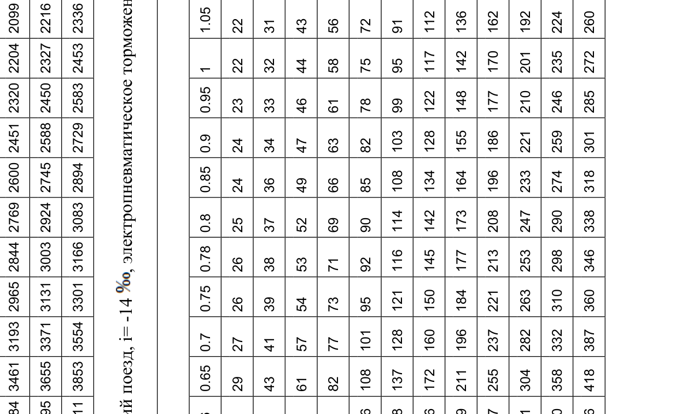
90 1666 1337 1119 965 849 760 688 630 581 540 519 505 475 448 425 404 385 368 353 339 327 315 304 454 433 414 397 381 367 354 342
| 237 | 270 | 304 | 342 | 381 | 423 | 468 | 515 | 565 | 617 | 672 | 729 | 789 | 851 | 916 | 984 | 1054 | 1127 | 1202 | 1280 | 1360 | 1443 | 1528 | 1615 |
| 246 | 279 | 315 | 354 | 395 | 439 | 485 | 534 | 586 | 640 | 697 | 756 | 819 | 884 | 951 | 1021 | 1094 | 1170 | 1248 | 1329 | 1412 | 1498 | 1587 | 1678 |
| 254 | 289 | 327 | 367 | 410 | 455 | 503 | 554 | 608 | 665 | 724 | 786 | 851 | 919 | 989 | 1062 | 1138 | 1217 | 1298 | 1382 | 1469 | 1559 | 1651 | 1746 |
| 264 | 300 | 339 | 381 | 426 | 473 | 524 | 577 | 633 | 692 | 754 | 819 | 886 | 957 | 1030 | 1107 | 1186 | 1268 | 1353 | 1441 | 1531 | 1625 | 1721 | 1820 |
| 274 | 312 | 353 | 397 | 443 | 493 | 546 | 601 | 660 | 722 | 787 | 854 | 925 | 999 | 1076 | 1156 | 1238 | 1324 | 1413 | 1505 | 1600 | 1697 | 1798 | 1901 |
| 286 | 325 | 368 | 414 | 463 | 515 | 570 | 628 | 690 | 755 | 822 | 894 | 968 | 1045 | 1126 | 1209 | 1296 | 1386 | 1479 | 1575 | 1674 | 1777 | 1882 | 1990 |
| 298 | 340 | 385 | 433 | 485 | 539 | 597 | 658 | 723 | 791 | 862 | 937 | 1015 | 1096 | 1181 | 1269 | 1360 | 1454 | 1552 | 1653 | 1757 | 1865 | 1975 | 2089 |
| 313 | 356 | 404 | 454 | 508 | 566 | 627 | 692 | 760 | 831 | 906 | 985 | 1067 | 1153 | 1242 | 1335 | 1431 | 1530 | 1633 | 1740 | 1849 | 1962 | 2078 | 2198 |
| 328 | 375 | 425 | 478 | 535 | 596 | 661 | 729 | 801 | 876 | 956 | 1039 | 1126 | 1216 | 1311 | 1409 | 1510 | 1615 | 1724 | 1836 | 1952 | 2071 | 2194 | 2320 |
| 346 | 395 | 448 | 505 | 565 | 630 | 698 | 771 | 847 | 927 | 1012 | 1100 | 1192 | 1288 | 1388 | 1492 | 1599 | 1711 | 1826 | 1945 | 2068 | 2194 | 2324 | 2457 |
| 366 | 418 | 475 | 535 | 600 | 668 | 741 | 818 | 900 | 985 | 1075 | 1169 | 1267 | 1369 | 1475 | 1586 | 1700 | 1819 | 1942 | 2068 | 2199 | 2333 | 2471 | 2613 |
| 389 | 445 | 505 | 570 | 639 | 712 | 790 | 873 | 960 | 1051 | 1147 | 1248 | 1352 | 1462 | 1575 | 1694 | 1816 | 1943 | 2074 | 2209 | 2348 | 2492 | 2639 | 2790 |
| 399 | 457 | 519 | 585 | 656 | 732 | 812 | 897 | 986 | 1080 | 1179 | 1282 | 1390 | 1503 | 1620 | 1741 | 1867 | 1997 | 2132 | 2271 | 2414 | 2562 | 2713 | 2869 |
| 416 | 476 | 540 | 610 | 684 | 763 | 847 | 935 | 1029 | 1127 | 1231 | 1339 | 1451 | 1569 | 1691 | 1818 | 1950 | 2086 | 2226 | 2371 | 2521 | 2675 | 2833 | 2995 |
| 447 | 511 | 581 | 656 | 737 | 822 | 913 | 1009 | 1110 | 1217 | 1328 | 1445 | 1567 | 1694 | 1826 | 1963 | 2106 | 2253 | 2404 | 2561 | 2722 | 2888 | 3059 | 3234 |
| 483 | 554 | 630 | 712 | 799 | 892 | 991 | 1096 | 1206 | 1322 | 1444 | 1571 | 1704 | 1842 | 1986 | 2136 | 2290 | 2450 | 2615 | 2785 | 2960 | 3141 | 3325 | 3515 |
| 527 | 605 | 688 | 778 | 874 | 977 | 1085 | 1200 | 1322 | 1449 | 1583 | 1723 | 1869 | 2021 | 2179 | 2342 | 2512 | 2687 | 2868 | 3054 | 3246 | 3443 | 3645 | 3852 |
| 581 | 667 | 760 | 860 | 966 | 1080 | 1201 | 1329 | 1463 | 1605 | 1753 | 1909 | 2070 | 2239 | 2414 | 2596 | 2783 | 2977 | 3177 | 3383 | 3595 | 3813 | 4036 | 4264 |
| 648 | 745 | 849 | 962 | 1082 | 1210 | 1346 | 1490 | 1641 | 1800 | 1967 | 2142 | 2324 | 2513 | 2709 | 2913 | 3123 | 3341 | 3565 | 3795 | 4031 | 4274 | 4523 | 4777 |
| 735 | 845 | 965 | 1093 | 1231 | 1377 | 1533 | 1697 | 1871 | 2053 | 2244 | 2443 | 2651 | 2867 | 3091 | 3322 | 3562 | 3809 | 4063 | 4324 | 4593 | 4867 | 5148 | 5435 |
| 850 | 979 | 1119 | 1270 | 1430 | 1602 | 1784 | 1976 | 2179 | 2392 | 2615 | 2847 | 3089 | 3341 | 3601 | 3871 | 4149 | 4435 | 4729 | 5031 | 5341 | 5657 | 5981 | 6311 |
| 1012 | 1168 | 1337 | 1518 | 1712 | 1919 | 2139 | 2371 | 2615 | 2871 | 3139 | 3418 | 3709 | 4010 | 4321 | 4643 | 4975 | 5315 | 5665 | 6023 | 6389 | 6763 | 7144 | 7531 |
| 1257 | 1453 | 1666 | 1895 | 2140 | 2401 | 2678 | 2970 | 3278 | 3600 | 3936 | 4286 | 4650 | 5026 | 5414 | 5813 | 6224 | 6645 | 7075 | 7515 | 7963 | 8420 | 8883 | 9354 |
| 80 | 85 | 90 | 95 | 100 | 105 | 110 | 115 | 120 | 125 | 130 | 135 | 140 | 145 | 150 | 155 | 160 | 165 | 170 | 175 | 180 | 185 | 190 | 195 |
508 485 463 443 426 410 395 381 566 539 515 493 473 455 439 423 627 597 570 546 524 503 485 468 692 658 628 601 577 554 534 515 760 723 690 660 633 608 586 565 831 791 755 722 692 665 640 617 906 862 822 787 754 724 697 672
937 894 854 819 786 756 729
925 886 851 819 789
957 919 884 851
951 916
174
Пассажирский поезд, i= -16 , пневматическое торможение.
| Расчетный тормозной коэффициент | 1.35 | 31 | 42 | 55 | 69 | 86 | 104 | 124 | 146 | 171 | 197 | 226 | 257 | 291 | 327 | 366 | 407 | 450 | 497 | 545 |
| 1.3 | 32 | 43 | 56 | 71 | 87 | 106 | 127 | 150 | 175 | 202 | 232 | 265 | 300 | 337 | 377 | 420 | 465 | 513 | 563 | |
| 1.25 | 32 | 44 | 57 | 72 | 89 | 108 | 130 | 154 | 180 | 208 | 239 | 273 | 309 | 348 | 389 | 433 | 480 | 530 | 583 | |
| 1.2 | 33 | 44 | 58 | 74 | 91 | 111 | 133 | 158 | 185 | 214 | 247 | 281 | 319 | 359 | 403 | 449 | 498 | 549 | 604 | |
| 1.15 | 33 | 45 | 59 | 75 | 93 | 114 | 137 | 162 | 190 | 221 | 255 | 291 | 330 | 372 | 417 | 465 | 516 | 571 | 628 | |
| 1.1 | 34 | 46 | 60 | 77 | 96 | 117 | 141 | 167 | 197 | 229 | 264 | 301 | 342 | 386 | 433 | 484 | 537 | 594 | 654 | |
| 1.05 | 34 | 47 | 62 | 79 | 98 | 121 | 145 | 173 | 203 | 237 | 273 | 313 | 356 | 402 | 451 | 504 | 560 | 619 | 682 | |
| 1 | 35 | 48 | 63 | 81 | 101 | 124 | 150 | 179 | 211 | 246 | 284 | 326 | 371 | 419 | 471 | 527 | 586 | 648 | 714 | |
| 0.95 | 35 | 49 | 65 | 84 | 105 | 129 | 156 | 186 | 220 | 256 | 297 | 340 | 388 | 439 | 493 | 552 | 614 | 680 | 750 | |
| 0.9 | 36 | 50 | 67 | 86 | 108 | 134 | 162 | 194 | 229 | 268 | 311 | 357 | 407 | 461 | 519 | 581 | 646 | 716 | 790 | |
| 0.85 | 37 | 52 | 69 | 89 | 113 | 139 | 169 | 203 | 240 | 281 | 326 | 375 | 428 | 486 | 547 | 613 | 683 | 758 | 836 | |
| 0.8 | 38 | 53 | 72 | 93 | 117 | 146 | 177 | 213 | 253 | 296 | 344 | 397 | 453 | 514 | 580 | 650 | 725 | 805 | 889 | |
| 0.78 | 39 | 54 | 73 | 94 | 120 | 148 | 181 | 217 | 258 | 303 | 352 | 406 | 464 | 527 | 595 | 667 | 744 | 826 | 913 | |
| 0.75 | 39 | 55 | 74 | 97 | 123 | 153 | 187 | 225 | 267 | 314 | 365 | 421 | 482 | 548 | 618 | 694 | 774 | 860 | 950 | |
| 0.7 | 41 | 58 | 78 | 102 | 129 | 161 | 198 | 238 | 284 | 334 | 389 | 450 | 515 | 586 | 663 | 744 | 831 | 924 | 1022 | |
| 0.65 | 42 | 60 | 82 | 107 | 137 | 171 | 210 | 254 | 304 | 358 | 418 | 484 | 555 | 633 | 716 | 805 | 900 | 1001 | 1108 | |
| 0.6 | 44 | 63 | 86 | 114 | 146 | 183 | 226 | 274 | 328 | 387 | 453 | 525 | 604 | 688 | 780 | 878 | 982 | 1093 | 1211 | |
| 0.55 | 46 | 67 | 92 | 122 | 157 | 198 | 245 | 298 | 357 | 423 | 496 | 576 | 663 | 757 | 859 | 968 | 1084 | 1208 | 1339 | |
| 0.5 | 49 | 72 | 99 | 132 | 171 | 216 | 268 | 327 | 394 | 468 | 550 | 640 | 738 | 844 | 958 | 1081 | 1213 | 1353 | 1501 | |
| 0.45 | 53 | 77 | 108 | 145 | 188 | 239 | 298 | 366 | 441 | 526 | 619 | 722 | 835 | 957 | 1089 | 1230 | 1381 | 1543 | 1714 | |
| 0.4 | 57 | 85 | 119 | 161 | 212 | 271 | 339 | 417 | 505 | 604 | 714 | 835 | 967 | 1110 | 1266 | 1433 | 1611 | 1802 | 2004 | |
| 0.35 | 64 | 95 | 135 | 185 | 244 | 314 | 396 | 489 | 596 | 715 | 848 | 995 | 1156 | 1331 | 1521 | 1725 | 1943 | 2176 | 2423 | |
| 0.3 | 72 | 110 | 159 | 219 | 292 | 379 | 481 | 599 | 734 | 885 | 1055 | 1243 | 1450 | 1675 | 1920 | 2184 | 2466 | 2768 | 3087 | |
| V, км/ч | 20 | 25 | 30 | 35 | 40 | 45 | 50 | 55 | 60 | 65 | 70 | 75 | 80 | 85 | 90 | 95 | 100 | 105 | 110 |
1.05 1.1 1.15 1.2 1.25 1.3 1.35 35 34 34 33 33 32 32 31 48 47 46 45 44 44 43 42 63 62 60 59 58 57 56 55 81 79 77 75 74 72 71 69 101 98 96 93 91 89 87 86 124 121 117 114 111 108 106 104 150 145 141 137 133 130 127 124 179 173 167 162 158 154 150 146 211 203 197 190 185 180 175 171 246 237 229 221 214 208 202 197 284 273 264 255 247 239 232 226 326 313 301 291 281 273 265 257 371 356 342 330 319 309 300 291 419 402 386 372 359 348 337 327 471 451 433 417 403 389 377 366 527 504 484 465 449 433 420 407 586 560 537 516 498 480 465 450 648 619 594 571 549 530 513 497 714 682 654 628 604 583 563 545
175
125 4153 3248 2678 2285 1997 1778 1605 1465 1350 1253 1202 1170 1099 1037 983 934 891 853 818 786 758 731 707 4541 3550 2925 2494 2179 1939 1750 1596 1470 1364 1308 1273 1195 1128 1068 1015 968 926 888 853 822 793 766
| 597 | 651 | 707 | 766 | 828 | 893 | 960 | 1029 | 1102 | 1177 | 1254 | 1334 | 1417 | 1502 | 1590 | 1680 | 1773 | 1869 |
| 617 | 673 | 731 | 793 | 857 | 924 | 994 | 1066 | 1141 | 1219 | 1300 | 1383 | 1469 | 1557 | 1649 | 1743 | 1839 | 1938 |
| 638 | 697 | 758 | 822 | 888 | 958 | 1031 | 1106 | 1184 | 1265 | 1349 | 1436 | 1525 | 1617 | 1712 | 1810 | 1911 | 2014 |
| 662 | 723 | 786 | 853 | 923 | 995 | 1071 | 1150 | 1231 | 1316 | 1403 | 1494 | 1587 | 1683 | 1782 | 1884 | 1989 | 2096 |
| 688 | 751 | 818 | 888 | 960 | 1036 | 1115 | 1198 | 1283 | 1371 | 1463 | 1557 | 1655 | 1755 | 1859 | 1965 | 2075 | 2187 |
| 717 | 783 | 853 | 926 | 1002 | 1082 | 1164 | 1250 | 1340 | 1432 | 1528 | 1627 | 1729 | 1834 | 1943 | 2054 | 2169 | 2287 |
| 749 | 818 | 891 | 968 | 1048 | 1132 | 1219 | 1309 | 1403 | 1500 | 1601 | 1705 | 1812 | 1922 | 2036 | 2153 | 2274 | 2397 |
| 784 | 857 | 934 | 1015 | 1099 | 1187 | 1279 | 1374 | 1473 | 1575 | 1681 | 1791 | 1904 | 2020 | 2140 | 2263 | 2390 | 2520 |
| 824 | 901 | 983 | 1068 | 1157 | 1250 | 1347 | 1447 | 1552 | 1660 | 1772 | 1888 | 2007 | 2130 | 2257 | 2387 | 2520 | 2658 |
| 869 | 951 | 1037 | 1128 | 1222 | 1321 | 1423 | 1530 | 1641 | 1756 | 1874 | 1997 | 2124 | 2254 | 2388 | 2526 | 2668 | 2813 |
| 920 | 1007 | 1099 | 1195 | 1296 | 1401 | 1510 | 1624 | 1742 | 1864 | 1991 | 2121 | 2256 | 2395 | 2537 | 2684 | 2835 | 2989 |
| 978 | 1072 | 1170 | 1273 | 1381 | 1493 | 1610 | 1732 | 1858 | 1989 | 2124 | 2264 | 2408 | 2556 | 2709 | 2866 | 3026 | 3191 |
| 1004 | 1100 | 1202 | 1308 | 1419 | 1534 | 1655 | 1780 | 1910 | 2044 | 2183 | 2327 | 2475 | 2628 | 2785 | 2946 | 3111 | 3281 |
| 1046 | 1147 | 1253 | 1364 | 1480 | 1601 | 1727 | 1857 | 1993 | 2134 | 2279 | 2429 | 2584 | 2744 | 2907 | 3076 | 3248 | 3425 |
| 1126 | 1235 | 1350 | 1470 | 1595 | 1726 | 1863 | 2005 | 2152 | 2304 | 2461 | 2624 | 2791 | 2963 | 3140 | 3322 | 3509 | 3700 |
| 1221 | 1340 | 1465 | 1596 | 1733 | 1876 | 2025 | 2180 | 2340 | 2506 | 2678 | 2855 | 3037 | 3224 | 3417 | 3615 | 3818 | 4025 |
| 1336 | 1467 | 1605 | 1750 | 1901 | 2058 | 2222 | 2392 | 2568 | 2751 | 2940 | 3134 | 3334 | 3540 | 3752 | 3969 | 4191 | 4418 |
| 1478 | 1624 | 1778 | 1939 | 2107 | 2283 | 2465 | 2654 | 2851 | 3054 | 3263 | 3479 | 3702 | 3930 | 4164 | 4405 | 4651 | 4902 |
| 1658 | 1824 | 1997 | 2179 | 2369 | 2567 | 2773 | 2987 | 3208 | 3437 | 3673 | 3916 | 4166 | 4423 | 4686 | 4955 | 5231 | 5512 |
| 1894 | 2085 | 2285 | 2494 | 2713 | 2941 | 3177 | 3423 | 3677 | 3939 | 4209 | 4488 | 4773 | 5066 | 5366 | 5673 | 5986 | 6306 |
| 2217 | 2442 | 2678 | 2925 | 3183 | 3451 | 3730 | 4018 | 4317 | 4624 | 4941 | 5266 | 5600 | 5942 | 6291 | 6648 | 7011 | 7381 |
| 2685 | 2960 | 3248 | 3550 | 3865 | 4192 | 4531 | 4882 | 5244 | 5616 | 5999 | 6392 | 6793 | 7203 | 7622 | 8048 | 8481 | 8922 |
| 3425 | 3780 | 4153 | 4541 | 4946 | 5366 | 5800 | 6248 | 6709 | 7182 | 7667 | 8162 | 8667 | 9181 | 9704 | ---- | ---- | ---- |
| 115 | 120 | 125 | 130 | 135 | 140 | 145 | 150 | 155 | 160 | 165 | 170 | 175 | 180 | 185 | 190 | 195 | 200 |
| Расчетный тормозной коэффициент | 1.35 | 19 | 27 |
| 1.3 | 20 | 28 | |
| 1.25 | 20 | 29 | |
| 1.2 | 21 | 29 | |
| 1.15 | 21 | 30 | |
| 1.1 | 21 | 31 | |
| 1.05 | 22 | 32 | |
| 1 | 23 | 33 | |
| 0.95 | 23 | 34 | |
| 0.9 | 24 | 35 | |
| 0.85 | 25 | 36 | |
| 0.8 | 26 | 38 | |
| 0.78 | 26 | 38 | |
| 0.75 | 27 | 40 | |
| 0.7 | 28 | 42 | |
| 0.65 | 29 | 44 | |
| 0.6 | 31 | 47 | |
| 0.55 | 33 | 50 | |
| 0.5 | 36 | 55 | |
| 0.45 | 39 | 60 | |
| 0.4 | 43 | 67 | |
| 0.35 | 49 | 77 | |
| 0.3 | 58 | 92 | |
| V, км/ч | 20 | 25 |
923 888 857 828
958 924 893
5800 4531 3730 3177 2773 2465 2222 2025 1863 1727 1655 1610 1510 1423 1347 1279 1219 1164 1115 1071 1031 994 960 6248 4882 4018 3423 2987 2654 2392 2180 2005 1857 1780 1732 1624 1530 1447 1374 1309 1250 1198 1150 1106 1066 1029 6709 5244 4317 3677 3208 2851 2568 2340 2152 1993 1910 1858 1742 1641 1552 1473 1403 1340 1283 1231 1184 1141 1102 7182 5616 4624 3939 3437 3054 2751 2506 2304 2134 2044 1989 1864 1756 1660 1575 1500 1432 1371 1316 1265 1219 1177 7667 5999 4941 4209 3673 3263 2940 2678 2461 2279 2183 2124 1991 1874 1772 1681 1601 1528 1463 1403 1349 1300 1254 8162 6392 5266 4488 3916 3479 3134 2855 2624 2429 2327 2264 2121 1997 1888 1791 1705 1627 1557 1494 1436 1383 1334 8667 6793 5600 4773 4166 3702 3334 3037 2791 2584 2475 2408 2256 2124 2007 1904 1812 1729 1655 1587 1525 1469 1417 9181 7203 5942 5066 4423 3930 3540 3224 2963 2744 2628 2556 2395 2254 2130 2020 1922 1834 1755 1683 1617 1557 1502 9704 7622 6291 5366 4686 4164 3752 3417 3140 2907 2785 2709 2537 2388 2257 2140 2036 1943 1859 1782 1712 1649 1590
8048 6648 5673 4955 4405 3969 3615 3322 3076 2946 2866 2684 2526 2387 2263 2153 2054 1965 1884 1810 1743 1680
8481 7011 5986 5231 4651 4191 3818 3509 3248 3111 3026 2835 2668 2520 2390 2274 2169 2075 1989 1911 1839 1773
8922 7381 6306 5512 4902 4418 4025 3700 3425 3281 3191 2989 2813 2658 2520 2397 2287 2187 2096 2014 1938 1869
, электропневматическое торможение.
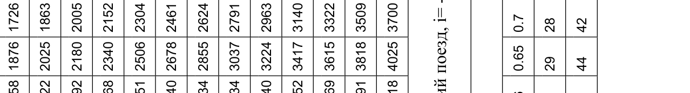
176
40 260 214 182 160 143 130 119 110 103 97 94 92 87 83 80 76 74 71 69 67 65 63 61 96 92 89 86 83 81 78 76
| 37 | 48 | 61 | 76 | 93 | 112 | 134 | 157 | 183 | 211 | 241 | 274 | 309 | 347 | 388 | 430 | 476 | 524 | 575 | 628 | 684 | 742 | 803 | 867 |
| 38 | 49 | 63 | 78 | 96 | 116 | 138 | 162 | 189 | 218 | 250 | 284 | 320 | 360 | 402 | 446 | 494 | 544 | 596 | 652 | 710 | 771 | 834 | 901 |
| 39 | 51 | 65 | 81 | 99 | 119 | 142 | 168 | 195 | 226 | 259 | 294 | 332 | 373 | 417 | 464 | 513 | 565 | 620 | 678 | 738 | 802 | 868 | 937 |
| 40 | 52 | 67 | 83 | 102 | 124 | 147 | 174 | 203 | 234 | 268 | 306 | 345 | 388 | 434 | 482 | 534 | 588 | 646 | 706 | 769 | 836 | 905 | 977 |
| 41 | 54 | 69 | 86 | 106 | 128 | 153 | 180 | 210 | 243 | 279 | 318 | 360 | 404 | 452 | 503 | 557 | 614 | 674 | 737 | 803 | 873 | 945 | 1021 |
| 42 | 55 | 71 | 89 | 110 | 133 | 159 | 187 | 219 | 254 | 291 | 332 | 376 | 422 | 473 | 526 | 582 | 642 | 705 | 771 | 841 | 914 | 990 | 1069 |
| 43 | 57 | 74 | 92 | 114 | 138 | 165 | 196 | 229 | 265 | 304 | 347 | 393 | 442 | 495 | 551 | 610 | 673 | 740 | 809 | 883 | 959 | 1039 | 1123 |
| 45 | 59 | 76 | 96 | 119 | 144 | 173 | 204 | 239 | 278 | 319 | 364 | 413 | 465 | 520 | 579 | 642 | 708 | 778 | 852 | 929 | 1010 | 1094 | 1182 |
| 46 | 62 | 80 | 100 | 124 | 151 | 181 | 215 | 251 | 292 | 336 | 383 | 434 | 489 | 548 | 611 | 677 | 747 | 821 | 899 | 981 | 1067 | 1156 | 1249 |
| 48 | 64 | 83 | 105 | 130 | 159 | 190 | 226 | 265 | 308 | 354 | 405 | 459 | 517 | 580 | 646 | 717 | 791 | 870 | 953 | 1040 | 1131 | 1226 | 1325 |
| 50 | 67 | 87 | 110 | 137 | 167 | 201 | 239 | 280 | 326 | 375 | 429 | 487 | 549 | 616 | 687 | 762 | 842 | 926 | 1014 | 1107 | 1204 | 1305 | 1411 |
| 53 | 71 | 92 | 116 | 145 | 177 | 213 | 253 | 298 | 346 | 400 | 457 | 519 | 586 | 657 | 733 | 814 | 899 | 989 | 1084 | 1184 | 1288 | 1396 | 1510 |
| 54 | 72 | 94 | 119 | 148 | 181 | 218 | 260 | 305 | 356 | 410 | 470 | 534 | 602 | 676 | 754 | 837 | 925 | 1018 | 1115 | 1218 | 1325 | 1437 | 1554 |
| 55 | 74 | 97 | 123 | 154 | 188 | 227 | 270 | 318 | 370 | 428 | 490 | 557 | 629 | 705 | 787 | 874 | 966 | 1063 | 1166 | 1273 | 1385 | 1502 | 1625 |
| 58 | 79 | 103 | 132 | 164 | 201 | 243 | 290 | 342 | 399 | 461 | 528 | 600 | 678 | 762 | 851 | 945 | 1045 | 1150 | 1261 | 1378 | 1500 | 1627 | 1759 |
| 62 | 84 | 110 | 141 | 177 | 217 | 263 | 314 | 370 | 432 | 500 | 573 | 652 | 738 | 829 | 926 | 1029 | 1139 | 1254 | 1375 | 1503 | 1636 | 1775 | 1920 |
| 66 | 90 | 119 | 153 | 192 | 236 | 286 | 342 | 404 | 472 | 547 | 628 | 715 | 809 | 910 | 1018 | 1132 | 1252 | 1380 | 1514 | 1654 | 1801 | 1955 | 2115 |
| 72 | 98 | 130 | 167 | 210 | 259 | 315 | 377 | 446 | 522 | 605 | 695 | 793 | 898 | 1011 | 1130 | 1258 | 1393 | 1535 | 1684 | 1841 | 2006 | 2177 | 2355 |
| 78 | 108 | 143 | 184 | 233 | 288 | 351 | 421 | 499 | 584 | 678 | 781 | 891 | 1010 | 1138 | 1274 | 1418 | 1571 | 1732 | 1901 | 2079 | 2265 | 2459 | 2661 |
| 87 | 120 | 160 | 207 | 262 | 325 | 397 | 478 | 567 | 666 | 774 | 892 | 1020 | 1157 | 1304 | 1461 | 1628 | 1804 | 1990 | 2186 | 2391 | 2605 | 2829 | 3061 |
| 98 | 136 | 182 | 237 | 302 | 375 | 460 | 554 | 660 | 776 | 904 | 1043 | 1194 | 1357 | 1531 | 1717 | 1914 | 2123 | 2344 | 2575 | 2818 | 3071 | 3335 | 3609 |
| 113 | 159 | 214 | 280 | 357 | 446 | 548 | 663 | 792 | 934 | 1090 | 1261 | 1446 | 1646 | 1860 | 2088 | 2330 | 2587 | 2857 | 3141 | 3438 | 3748 | 4070 | 4405 |
| 136 | 192 | 260 | 343 | 441 | 554 | 684 | 831 | 996 | 1179 | 1381 | 1602 | 1842 | 2100 | 2378 | 2674 | 2989 | 3321 | 3672 | 4039 | 4423 | 4822 | 5237 | 5666 |
| 30 | 35 | 40 | 45 | 50 | 55 | 60 | 65 | 70 | 75 | 80 | 85 | 90 | 95 | 100 | 105 | 110 | 115 | 120 | 125 | 130 | 135 | 140 | 145 |
119 114 110 106 102 99 96 93 144 138 133 128 124 119 116 112 173 165 159 153 147 142 138 134 204 196 187 180 174 168 162 157 239 229 219 210 203 195 189 183 278 265 254 243 234 226 218 211 319 304 291 279 268 259 250 241 364 347 332 318 306 294 284 274 413 393 376 360 345 332 320 309 465 442 422 404 388 373 360 347 520 495 473 452 434 417 402 388 579 551 526 503 482 464 446 430 642 610 582 557 534 513 494 476 708 673 642 614 588 565 544 524 778 740 705 674 646 620 596 575 852 809 771 737 706 678 652 628 929 883 841 803 769 738 710 684
914 873 836 802 771 742
945 905 868 834 803
937 901 867
160 7033 5475 4490 3810 3312 2932 2632 2389 2189 2021 1932 1877 1754 1646 1552 1468 1394 1327 1266 1212 1162 1116 1074 7512 5853 4802 4076 3544 3137 2816 2557 2342 2162 2067 2009 1877 1762 1660 1571 1491 1419 1354 1296 1242 1193 1148
| 934 | 1003 | 1074 | 1148 | 1225 | 1305 | 1386 | 1471 | 1558 | 1648 | 1740 |
| 970 | 1042 | 1116 | 1193 | 1273 | 1356 | 1441 | 1529 | 1620 | 1713 | 1808 |
| 1009 | 1084 | 1162 | 1242 | 1326 | 1412 | 1500 | 1592 | 1686 | 1784 | 1883 |
| 1052 | 1130 | 1212 | 1296 | 1383 | 1473 | 1565 | 1661 | 1760 | 1861 | 1965 |
| 1100 | 1181 | 1266 | 1354 | 1445 | 1540 | 1637 | 1737 | 1840 | 1946 | 2055 |
| 1152 | 1238 | 1327 | 1419 | 1515 | 1613 | 1715 | 1820 | 1928 | 2039 | 2154 |
| 1210 | 1300 | 1394 | 1491 | 1591 | 1695 | 1802 | 1913 | 2026 | 2143 | 2263 |
| 1274 | 1369 | 1468 | 1571 | 1677 | 1786 | 1899 | 2015 | 2135 | 2258 | 2385 |
| 1346 | 1447 | 1552 | 1660 | 1773 | 1888 | 2008 | 2131 | 2257 | 2387 | 2521 |
| 1428 | 1535 | 1646 | 1762 | 1881 | 2004 | 2130 | 2261 | 2395 | 2533 | 2675 |
| 1521 | 1635 | 1754 | 1877 | 2004 | 2135 | 2270 | 2409 | 2552 | 2699 | 2850 |
| 1628 | 1750 | 1877 | 2009 | 2145 | 2285 | 2430 | 2579 | 2732 | 2889 | 3050 |
| 1675 | 1801 | 1932 | 2067 | 2207 | 2352 | 2501 | 2654 | 2811 | 2973 | 3139 |
| 1752 | 1884 | 2021 | 2162 | 2309 | 2460 | 2615 | 2775 | 2940 | 3109 | 3282 |
| 1897 | 2040 | 2189 | 2342 | 2501 | 2664 | 2833 | 3006 | 3184 | 3367 | 3554 |
| 2071 | 2227 | 2389 | 2557 | 2730 | 2908 | 3092 | 3281 | 3475 | 3673 | 3877 |
| 2281 | 2453 | 2632 | 2816 | 3007 | 3203 | 3405 | 3612 | 3825 | 4044 | 4267 |
| 2541 | 2733 | 2932 | 3137 | 3349 | 3567 | 3791 | 4022 | 4258 | 4500 | 4747 |
| 2870 | 3087 | 3312 | 3544 | 3782 | 4028 | 4281 | 4539 | 4804 | 5076 | 5353 |
| 3302 | 3552 | 3810 | 4076 | 4349 | 4631 | 4919 | 5215 | 5517 | 5826 | 6141 |
| 3893 | 4187 | 4490 | 4802 | 5123 | 5452 | 5789 | 6134 | 6486 | 6844 | 7210 |
| 4751 | 5108 | 5475 | 5853 | 6241 | 6638 | 7043 | 7457 | 7878 | 8306 | 8741 |
| 6109 | 6565 | 7033 | 7512 | 8002 | 8502 | 9010 | 9528 | ----- | ----- | ----- |
| 150 | 155 | 160 | 165 | 170 | 175 | 180 | 185 | 190 | 195 | 200 |
8002 6241 5123 4349 3782 3349 3007 2730 2501 2309 2207 2145 2004 1881 1773 1677 1591 1515 1445 1383 1326 1273 1225 8502 6638 5452 4631 4028 3567 3203 2908 2664 2460 2352 2285 2135 2004 1888 1786 1695 1613 1540 1473 1412 1356 1305 9010 7043 5789 4919 4281 3791 3405 3092 2833 2615 2501 2430 2270 2130 2008 1899 1802 1715 1637 1565 1500 1441 1386 9528 7457 6134 5215 4539 4022 3612 3281 3006 2775 2654 2579 2409 2261 2131 2015 1913 1820 1737 1661 1592 1529 1471
7878 6486 5517 4804 4258 3825 3475 3184 2940 2811 2732 2552 2395 2257 2135 2026 1928 1840 1760 1686 1620 1558
8306 6844 5826 5076 4500 4044 3673 3367 3109 2973 2889 2699 2533 2387 2258 2143 2039 1946 1861 1784 1713 1648
8741 7210 6141 5353 4747 4267 3877 3554 3282 3139 3050 2850 2675 2521 2385 2263 2154 2055 1965 1883 1808 1740
178
СОДЕРЖАНИЕ Правила технического обслуживания тормозного оборудования и управления тормозами железнодорожного подвижного состава
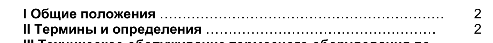
III Техническое обслуживание тормозного оборудования по-
движного состава (общие положения) ………………………………… 7
IV Порядок смены кабины управления на локомотивах и пе-
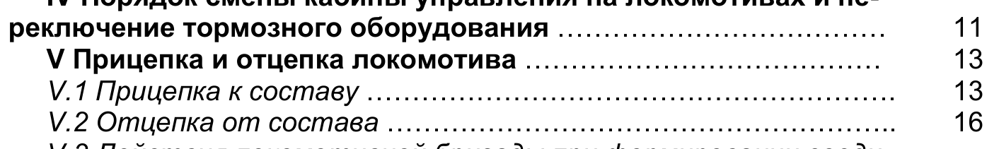
V.3 Действия локомотивной бригады при формировании соеди-
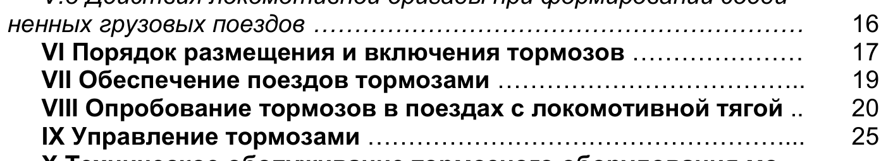
X Техническое обслуживание тормозного оборудования мо-
тор-вагонного подвижного состава …………………………………….. 33 XI Порядок смены кабин управления мотор вагонного поезда
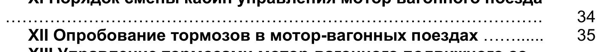
XIII Управление тормозами мотор-вагонного подвижного со-
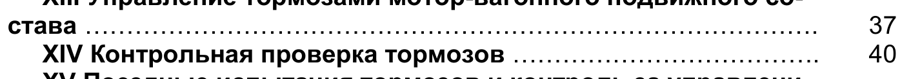
XV Поездные испытания тормозов и контроль за управлени-
ем тормозами в поездах …………………………………………………… 41
Приложение 1 ПРАВИЛА ТЕХНИЧЕСКОГО ОБСЛУЖИВАНИЯ ПОДВИЖНОГО СОСТАВА (ЛОКОМОТИВОВ И ВАГОНОВ ЛОКО-
МОТИВНОЙ ТЯГИ) …………………………………………………………… 42 I Требования к выполнению технического обслуживания тормозного оборудования локомотивов …………………………………………… 42 II Требования к выполнению технического обслуживания тормозного оборудования грузовых вагонов ……………………………….. 50 III Требования к выполнению технического обслуживания тормозного оборудования пассажирских вагонов локомотивной тяги и
54
вагонов пассажирского типа ……………………………………………….
Приложение 2 ПРАВИЛА ПОДГОТОВКИ ГРУЗОВЫХ И ПАССА-
ЖИРСКИХ ПОЕЗДОВ ………………………………………………………………………... 58 I Режимы включения воздухораспределителей на локомотивах
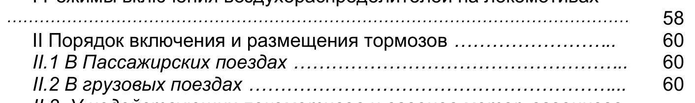
II.3 У недействующих локомотивов и вагонов мотор-вагонного подвижного состава …………………………………………………………. II.4 В соединённом поезде с постановкой локомотива в голове и в составе, или в хвосте поезда с объединённой тормозной магистралью ………………………………………………………………………… 64
III Нормы обеспечения поездов тормозами и допустимые скоро-
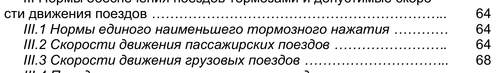
III.4 Порядок пропуска и отправления поездов при невозможно-сти обеспечения единого наименьшего тормозного нажатия …….. 70
III.5 Порядок установления допустимых скоростей движения
поездов в исключительных случаях ………………………………………. 74
III.6 Определение расчётных сил нажатия тормозных колодок
на ось подвижного состава, учётного веса локомотивов, моторвагонного подвижного состава ……………………………………………. 74
III.7 Определения необходимого количества стояночных (руч-
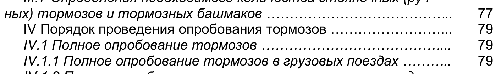
IV.1.2 Полное опробование тормозов в пассажирских поездах с
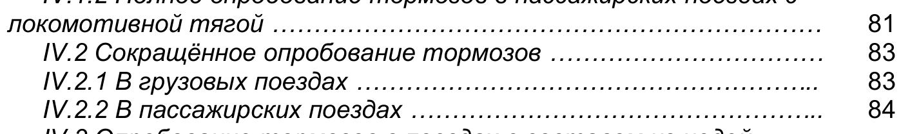
IV.3 Опробование тормозов в поездах с составом из недействующих локомотивов или вагонов мотор-вагонного подвижного
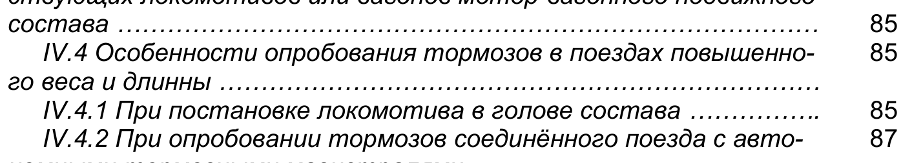
номными тормозными магистралями …………………………………… IV.4.3 При опробовании тормозов соединённого поезда с объ-
87
единённой тормозными магистралями …………………………………. IV.5 Особенности опробования тормозов у пересылаемого мотор-вагонного подвижного состава ……………………………………… 87
IV.6 Технологическое опробование тормозов в грузовых поездах
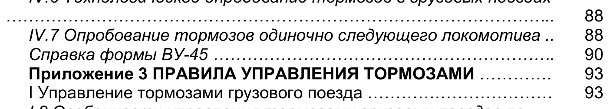
I.2 Особенности управления тормозами грузовых поездов по-
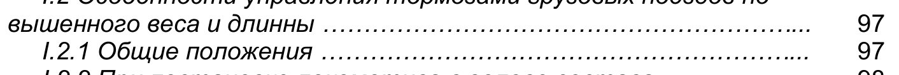
I.2.2 При постановке локомотива в голове состава ………………
I.2.3 При ведении соединённого поезда с автономными тормозными магистралями ………………………………………………………….
I.2.4 При ведении соединённого поезда с постановкой локомотива в голове и в составе или в хвосте поезда с объединённой
тормозной магистралью …………………………………………………… 100
I.3 Особенности управления тормозами в зимних условиях …….. 103 II Управление тормозами пассажирского поезда ……………………. 104
II.1 Управление автоматическими тормозами …………………….. 104
II.2 Управление электропневматическими тормозами …………... 108
II.3 Особенности управления тормозами в зимних условиях …… 110 III Управление электрическим (рекуперативным и реостатным)
тормозом на локомотиве при ведении поезда …………………………... 112 IV Действия локомотивной бригады и особенности управления
тормозами поезда при переходе на резервное управление электронным краном машиниста ………………………………………………… 114 V Действия машиниста при нештатных ситуациях ………………….. 115
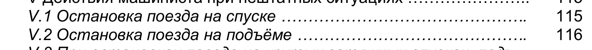
V.3 При остановках поезда на крутых затяжных спусках, подъёмах после применения экстренного торможения ……………………. 116
V.4 При доставке поезда на станцию после разрыва …………….. 117 Приложение 4 ПРАВИЛА ТЕХНИЧЕСКОГО ОБСЛУЖИВАНИЯ
ТОРМОЗНОГО ОБОРУДОВАНИЯ И УПРАВЛЕНИЕ ТОРМОЗАМИ
МОТРО-ВАГОННОГО ПОДВИЖНОГО СОСТАВА ……………………... 118 I Требования к выполнению технического обслуживания тормозного оборудования мотор-вагонного подвижного состава …………….. 118 II Управление автоматическими тормозами мотор-вагонного подвижного состава ……………………………………………………………... 122 III Управление электропневматическими тормозами моторвагонного подвижного состава ……………………………………………… 124 IV Управление вспомогательными тормозами мотор-вагонного
подвижного состава …………………………………………………………... 126 V Особенности обслуживания тормозов в зимних условиях ……… 126 VI Особенности управления тормозами в зимних условиях ………. 128
Приложение 5 ПРАВИЛА ПРОВЕДЕНИЯ КОНТРОЛЬНОЙ ПРО- ВЕРКИ ТОРМОЗОВ, ОПЫТНЫХ ПОЕЗДОК И КОНТРОЛЯ УПРАВ-
ЛЕНИЯ ТОРМОЗАМИ ………………………………………………………... 130 I Порядок проведения контрольной проверки тормозов на станции. 130 II Порядок проведения контрольной проверки тормозов в пути
следования …………………………………………………………………….. 132 Акт контрольной проверки тормозов …………………………………... 134 Приложение 6. ТАБЛИЦЫ ДЛЯ ОПРЕДЕЛЕНИЯ ТОРМОЗНОГО
ПУТИ В ЗАВИСИМОСТИ ОТ РАСЧЕТНОГО ТОРМОЗНОГО КОЭФ- ФИЦИЕНТА (В ПЕРЕСЧЕТЕ НА ЧУГУННЫЕ ТОРМОЗНЫЕ КОЛОД-
КИ), СКОРОСТИ НАЧАЛА ТОРМОЖЕНИЯ И КРУТИЗНЫ СПУСКА ... 136